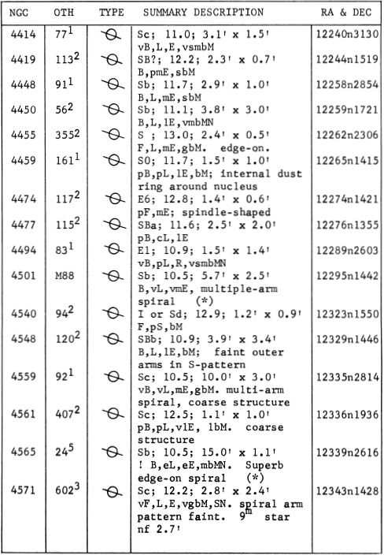
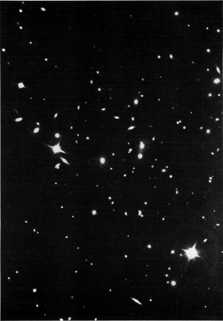
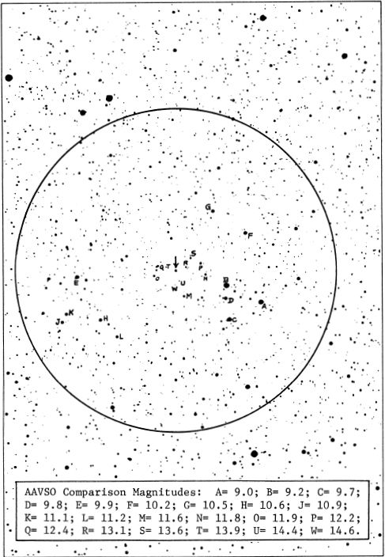
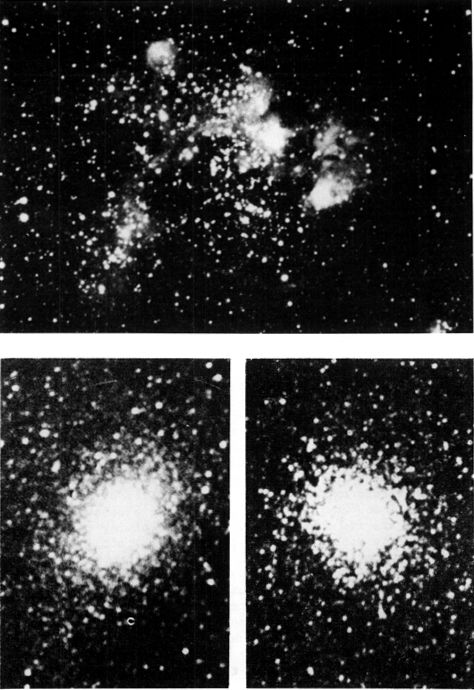
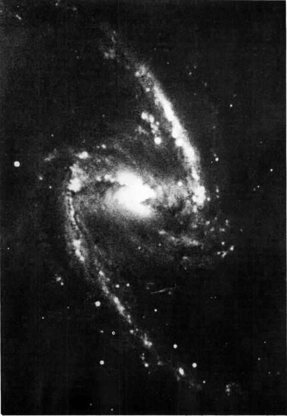
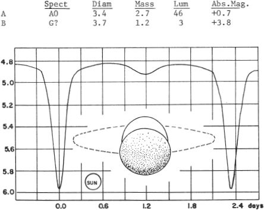
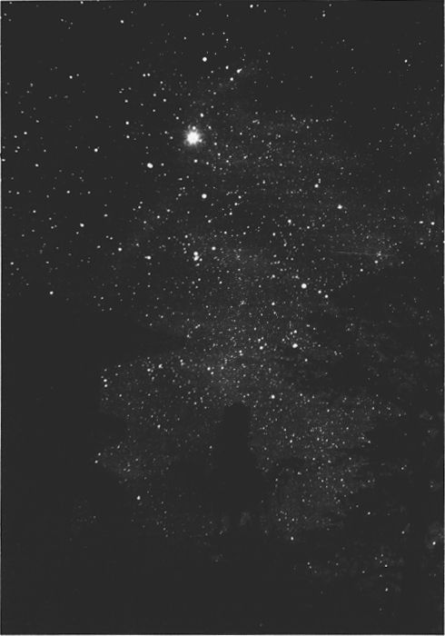
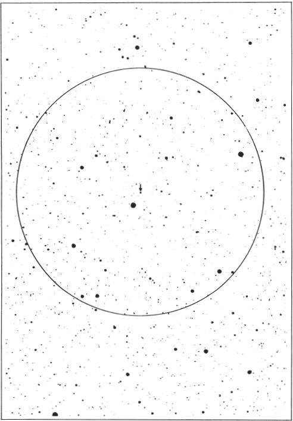
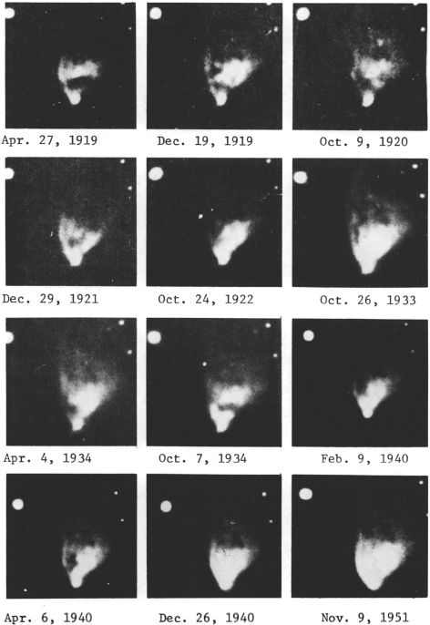

An Observer’s Guide to the Universe Beyond the Solar System
Staff Member, Lowell Observatory, 1958-1979
IN THREE VOLUMES
Volume Two, Chamaeleon–Orion
REVISED AND ENLARGED EDITION
DOVER PUBLICATIONS, INC.
NEW YORK
Contents
The author takes great pleasure in offering his special thanks and appreciation to Herbert A. Luft, whose unflagging interest and support has helped immeasurably to make the Celestial Handbook a reality.
FRONTISPIECE: Orion Nebula Copyright © 1966, 1978 by Robert Burnham, Jr. All rights reserved.
This Dover edition, first published in 1978, is an expanded and updated republication of the work originally published by Celestial Handbook Publications, Flagstaff, Arizona, in 1966.
INTERNATIONAL STANDARD BOOK NUMBERS: paperbound edition: 0-486-23568-8
clothbound edition: 0-486-24064-9
Library of Congress Catalog Card Number: 77-082888
Manufactured in the United States by Courier Corporation
This is the second volume of the Celestial Handbook, covering the constellations Chamaeleon through Orion.
The format and arrangement of material is the same as in the preceding volume. A list of terms, symbols, and abbreviations used appears in the first volume, beginning on page 98. As before, all positions are given for the Epoch 1950.0, and the star charts are all oriented with north at the top and east at the left.
Comparison magnitudes have now been added to most of the identification charts, with the exception of a few fields for which no accurate photometry seems to have yet been done. Users of the Handbook may, of course, add star magnitudes to any of the charts when measurements have been made and published by the A.A.V.S.O. or other observers.
A number of observers, after examining the manuscript for Volume I, have recommended that detailed charts for each constellation be included along with the tables of objects and descriptive data. This would possibly add to the usefulness of the book for actual use at the telescope, but would also be essentially a huge duplication of effort for the present author, since several excellent star atlases already exist, and may be obtained at moderate cost. This Handbook was designed to be used with either Norton’s Atlas or the Skalnate Pleso Atlas of the Heavens, both of which should be in the possession of any serious observer.
R.B.
Flagstaff, Arizona February, 1977
LIST OF DOUBLE AND MULTIPLE STARS
LIST OF DOUBLE AND MULTIPLE STARS

ALPHA Mag 3.18; spectrum F0 Vp; position 14384s 6446. Alpha Circini is approximately 65 light years distant and has an actual luminosity of about 17 suns (absolute magnitude +1.7). The annual proper motion is 0.31” in PA 217°; the radial velocity is about 4 miles per second in recession.
The 9th magnitude companion at 15.7” is a K5 star, sharing the proper motion of the primary, and maintaining the same separation since the first measurements were made in 1837. The PA is decreasing slowly, from 244° to 232° between 1837 and 1951. Projected separation = 320 AU.
LIST OF DOUBLE AND MULTIPLE STARS

ALPHA Name-PHACT or PHAET. Mag 2.64; spectrum B8 Ve. Position 05378s3406. The computed distance is about 140 light years; the actual luminosity about 145 times that of the Sun (absolute magnitude -0.6). The star has an annual proper motion of 0.025”; the radial velocity is 21 miles per second in recession.
The 11th magnitude companion at 13.5” is evidently not physically connected with the primary; the separation is increasing slowly from 11.6” in 1900.
BETA Name-WEZN. Mag 3.12; spectrum K1 III. The position is 05492s3547. The distance of this star is approximately the same as Alpha Columbae, about 140 light years. The computed luminosity is then about 90 times that of the Sun (absolute magnitude 0.0). The annual proper motion is 0.40” in PA 7°; the radial velocity is 54 miles per second in recession.
MU Mag 5.16; spectrum 09.5 V; sometimes given as B0. Position 05441s3219. Mu Columbae is a famous “Runaway Star”, one of three known early type stars which appear to be moving out at high speeds from the nebulous region of Orion. All three stars seem to be at about the same distance as the Orion Association, and have apparently been ejected from that region during the last few million years, possibly by some process connected with the explosion of supernovae. The other two stars are 53 Arietis and AE Aurigae, both identified by abnormally high space velocities. AE Aurigae is the most interesting of the three; its rapid passage through the heavens is presently carrying it through the large diffuse nebulosity IC 405, and the structure of the nebulosity is evidently being greatly altered by the star’s intense radiation. Mu Columbae itself has an annual proper motion of about 0.025” in a direction slightly east of due south; the true space velocity is about 74 miles per second.
For a diagram of the plotted paths of all three stars refer to AE Aurigae (page 288).
LIST OF DOUBLE AND MULTIPLE STARS



DESCRIPTIVE NOTES
ALPHA (42 Comae) Mag 4.23; spectrum F5 V. Position 13076n1748. Double star, discovered by F.G. W.Struve in 1827. This is a close and rather difficult binary system, but of special interest from the rare circumstance that the orbit is seen almost exactly edge-on; the two stars thus appear to move back and forth in virtually a straight line, with a nearly constant PA. The period is 25.85 years, with the apparent separation varying from practically zero to a maximum of about 0.9”. The semimajor axis of the orbit is 0.67”; the eccentricity is 0.5. Owing to the orientation of the orbit with respect to the Solar System, the time of apparent closest approach (1949) does not coincide with true periastron passage (1963).
Although T.W.Webb speaks of the two stars as “making an occultation about every 13 years” there is no real evidence that either star actually eclipses the other. From computations by H.Haffner (1948) and F.Pavel (1949) it now appears that the orbit is inclined just one-tenth of a degree from the edge-on position, implying that no real eclipse can occur. The two stars are nearly identical in size, type, and brightness; the magnitudes are both 5.1 and both spectra are F5 V. Each star is about 3 times as ‘ luminous as the Sun, and the mean separation of the pair is close to 10 AU, about the separation of Saturn and the Sun.
The distance of the system is approximately 65 light years, the annual proper motion is 0.45” in PA 287°, and the radial velocity is 10½ miles per second in approach.
THE COMA STAR CLUSTER One of the best known galactic star clusters, the Coma Berenices Star Cluster is a conspicuous scattered group of naked-eye stars, centered about midway between Alpha Canum and Beta Leonis, near 12220n2600. The cluster is not listed in the NGC or in Messier’s catalog, but is sometimes referred to by its number in the catalog list of Melotte - “Mel 111”. Covering an area about 5° in diameter, the cluster contains, as its brightest members, the fifth magnitude stars 12, 13, 14, 16, and 21 Comae. About thirty fainter stars have been identified as probable members, and a few others may await discovery. The bright stars 15, 18, and 7 Comae do not appear to be physical members of the group, but the star 31 Comae, some 5° from the cluster center, is probably a member. The information in the table below has been compiled from the Yale “Catalogue of bright Stars” (1964).

As a cluster, the Coma group is at its best in a pair of good binoculars, but is completely lost in the much narrower field of the telescope, which can show only a small portion at any one moment. G.P.Serviss spoke of noting a “curious twinkling, as if gossamers spangled with dewdrops were entangled there. One might think the old woman of the nursery rhyme who went to sweep the cobwebs out of the sky had skipped this corner, or else that its delicate beauty had preserved it even from her housewifely instinct. . “ T.W.Webb remarked that such a group obviously requires only distance to become a nebula to the naked eye.
THE COMA BERENICES STAR CLUSTER. The members of this nearby cluster are scattered over the entire field of this 13-inch telescope photograph.
Lowell Observatory
The cluster is named in honor of Berenice II of Egypt, who was the Queen of Ptolemy III (246 - 221 BC). In one of the most appealing star legends we are told of the Queen’s vow to sacrifice her famed “amber tresses” in the temple of Aphrodite at Zephyrium, following the king’s safe return from battle. After the offering mysteriously vanished from the temple, the court astronomer Conon convinced the royal couple that the lost tresses had been transformed by the ¡gods into a constellation, and enshrined forever among the stars. The Roman poet Catullus (about 60 BC) refers to this legend when he speaks of
“the consecrated offering of Berenice’s golden hair, which the divine Venus placed, a new constellation among the ancient ones, preceding the slow Bootes, who sinks late and reluctantly into the deep ocean...“
In the coins of Berenice, we find some of the most exquisite coin portraits which have come down to us from the ancient world, particularly in the large gold octadrachms and decadrachms dating from the early days of the reign of Ptolemy III. “During this reign..... Egypt had command of the sea”, states Professor Barclay V.Head in his monumental work Historia Numorum (1911) “and her empire embraced many of the maritime districts of Asia Minor, even extending across the Aegean into Thrace. Hence the appearance of Egyptian influence at mints like Ephesus and Ptolemais-Lebedus. In the absence of specific local and other marks, the Ptolemaic coins issued in these regions can seldom be attributed with certainty,...” Prof. Head suggested, however, that the much-admired gold octadrachm of Berenice was probably minted at Ephesus on the west coast of Asia Minor, famous as the site of the great Temple of Diana, one of the ancient Seven Wonders. The respected German authority K.Regling dated this same coin, on the basis of a study of die-styles, to 258 BC, the year of the marriage of the young Berenice of Cyrene to the future Ptolemy III. The ancient city of Berenice, named for the queen, is still in existence as the modern Benghazi in Libya, capital and chief port of the province of Cyrenaica.
Before the days of Berenice, however, the star group seems to have been regarded as a part of the constellation Leo, marking the tuft of hair at the end of the Lion’s tail. The Arabian names, Al Halbah and Al Dafirah refer to this identification and have been translated “the Coarse Hair” or “The Tuft”. Eratosthenes, however, in the 3rd Century BC, refers to the group as “Ariadne’s Hair” though in another passage he does connect it with the Egyptian Berenice. In various star maps of the late Middle Ages the cluster is identified as a rose-wreath or ivy-wreath, and occasionally as a Sheaf of Wheat held in the hands of Ceres or Virgo. These identifications seem to date back to a time when Coma was considered a part of the constellation Virgo. According to R.H.Allen, the astronomer Tycho Brahe “set the question at rest in 1602 by cataloguing it separately, adopting the early title as we have it now.”
At a distance of about 250 light years, the Coma group is one of the nearest of all the star clusters; probably only the Ursa Major Group and the Hyades in Taurus are closer. Cluster members may be identified by the annual proper motion of the group, about 0.02” in P.A. 218°, and by the fact that the radial velocity of the members averages nearly zero. Any star with a high radial velocity is thus immediately disqualified. In one of the first really comprehensive studies of the group, R.J.Trumpler (1938) identified 37 stars as true cluster members on the basis of both proper motion data and radial velocity measurements. The most luminous members, as 14 and 16 Comae, have about 50 times the luminosity of the Sun. The faintest stars accepted as members are about 1/3 the brightness of the Sun. Spectral types range from A3 to about G9. As a standard of comparison, our Sun at the distance of the Coma Cluster would appear as a star of magnitude 9.2.
There are eight known spectroscopic binary stars in the Coma Cluster, with orbital elements presently available for several of the brighter ones. The bright star 12 Comae is the most interesting of these. It is a spectroscopic binary with a period of 396.49 days, but there is also a distant visual companion of the 8th magnitude at 66” in PA 167°, almost certainly a true cluster member. The spectrum of 12 Comae is composite, GO III + A3 V; the spectrum of the visual companion is about F8. In addition, about 0.5° to the southeast is the binary Σ1639, with a computed period of some 600 years and a semimajor axis of about 1”. The orbit has an eccentricity of about 0.9 and the spectrum of the brighter star is about F0.
The Coma Cluster contains no giant stars, though the H-R Diagram (below) shows that the brightest members are just beginning to evolve toward the giant stage. The total mass of the group is probably under 100 solar masses. One of the peculiar features of the cluster is the apparent lack of fainter stars; the main sequence seems to terminate abruptly at apparent magnitude 10½, which corresponds to an absolute magnitude of about 6. Fainter and redder dwarf stars, actually the commonest stellar types, seem to be missing completely in the Coma group. If we compare this cluster with the famous Pleiades, it seems relatively poor in stars and only about a quarter as thickly populated, although the volumes of the two clusters are nearly equal. The sparseness of the Coma group suggests the possibility that the cluster may be gradually dispersing due to the small total mass. The computed star density is about one star per 10 cubic parsecs, a value very near the theoretical lower limit for stable clusters. In terms of age, the Coma group appears to be older than the Pleiades, but younger than Praesepe (M44) in Cancer or the Hyades Cluster in Taurus. (For a discussion of cluster age-dating, refer to M13 in Hercules)

M53 (NGC 5024) Position 13105n1826. A rich globular star cluster which forms a pair of 1° separation with the more unusual cluster NGC 5053. M53 itself lies 1° northeast of the binary Alpha Comae, and was first observed by J.E.Bode in February 1775. He referred to it as “a new nebula, appearing through the telescope as round and pretty lively”; the use of the last term suggests some hint of resolution. Messier’s independent discovery occurred just two years later, in February of 1777; he found it “round and conspicuous” but “without stars” and compared it afterwards with the comet of 1779. Bright and well condensed, the cluster is an easy object for the small telescope, appearing as a round nebulous spot in a three-inch glass, but resolving into a wonderful swarm of tiny star images with larger instruments. Partial resolution usually requires a 6-inch telescope. In the greatest telescopes M53 is more than worthy of Webb’s description: “a brilliant mass of minute stars, blazing in the center.” John Herschel spoke of the radiating curves and streams of stars which adorn the outer edges, an appearance which is seen in many other bright globulars as well. Sir William Herschel, with his great reflector, spoke of M53 as “one of J the most beautiful sights I remember to have seen in the heavens. The cluster appears under the form of a solid ball consisting of small stars quite compressed into a blaze of light with a great number of loose ones surrounding it and distinctly visible in the general mass. Similar in appearance to M10”. Admiral Smyth saw M53 as “a mass of minute stars 11-15 mag. and from thence to gleams of star-dust, with stragglers.... and pretty diffuse edges..” K.G.Jones (1968) rates it as “certainly one of the most beautiful” of the globulars. “It consists of a brilliant nucleus about 2’ in diameter, surrounded by a dusky halo of light that gives it a glittering gem-like appearance. The background is dark but glimpses of numerous, faint stars can be obtained in clear conditions.”
GLOBULAR STAR CLUSTERS IN COMA BERENICES.The bright M53 I is separated by 1° from its fainter neighbor NGC 5053.
I Mt.Wil6on and Palomar Observatories
The total photographic magnitude of M53 is about 8.7, the extreme diameter about 14’, and the integrated spectral type is F4. The cluster lies at a distance of about 65,000 light years; the resulting total luminosity is about 200 thousand times the Sun. Radial velocity studies show an approach velocity of about 70 miles per second. Some 45 variable stars are known in M53.
One degree to the southeast is the peculiar cluster NGC 5053, an unusual object which from its appearance could be classified as either a very loose globular or a very rich galactic cluster. It was discovered by Sir William Herschel in 1784, and may be detected in an 8-inch glass as a faint hazy spot of about magnitude 10½. It contains no dense nucleus of stars, and the faint members are widely separated even at the cluster center. Resolution can be achieved only with rather large telescopes.
The classification of this system as a globular is supported by the color-magnitude diagram and the presence of short-period pulsating variables of the RR Lyrae type. The population is about 3400 stars down to the 21st magnitude, decidedly sparse for a globular cluster. With an actual diameter of close to 100 light years, the resulting density is evidently not much more than 0.3 star per cubic parsec. The distance of the cluster seems to be comparable to that of M53; in fact the studies of the variables in the two groups suggest that NGC 5053 is probably slightly nearer to us than its brighter neighbor. The best present figure is about 55,000 light years, which gives the cluster a total luminosity of some 16,000 suns. This is one of the lowest luminosities derived for any globular cluster; the great Omega Centauri, for comparison, shines with nearly the light of a million suns. (Refer also to NGC 5139 in Centaurus and M13 in Hercules)

NGC 5053. The unusual globular star cluster in Coma Bere-I nices, photographed with the 48-inch Schmidt telescope at Palomar.
M64 (NGC 4826) Position 12543n2157. The Black-Eye Galaxy, a large oval spiral of the 8th magnitude and measuring about 7½’ X 3½’ in size, easily located about 1° ENE from the star 35 Comae. M64 was discovered by J.E. Bode on April 4, 1779, and was recorded merely as looking like a “small nebulous star”. Messier found it in March 1780 and thought it to be about half the brightness of M53. Observers today will find both objects visible in good field glasses. Admiral Smyth called M64 “a conspicuous nebula, magnificent both in size and brightness, being elongated in a line N.p. & S.f. and blazing to a nucleus”. In the Shapley-Ames Catalogue it is rated among the dozen brightest spirals in the entire heavens; this suggests that it is not a member of the great Virgo Galaxy Cluster which is centered some 9° away, or at least that it is considerably closer than most of the other galaxies in this part of the sky.
The structure of M64 is somewhat unusual, and the galaxy has been classified as type Sa by some authorities, type Sb by others. The spiral arms show a beautifully smooth and uniform texture with no trace of resolution into star clouds or knots of nebulosity. Separating and defining the arms are thin, dusky bands which appear similarly smooth and soft-textured. In the region of the central nucleus, however, a huge dust cloud suddenly makes its appearance, bordering the entire north and east side of the oval central mass. The dust cloud shows much fine detail on photographs made with great telescopes, and breaks up into an intricate region of mixed dark and luminous material as it rims the near side of the central hub. D’Arrest thought the center partly resolvable, while Lord Rosse interpreted the mottling as a “close cluster of well-defined little stars”. The visibility of the dark mass is naturally a controversial point among observers, but it is definitely within the capabilities of a good 6 or 8-inch glass; J.H. Mallas has detected it in a 4-inch refractor. The observation of such details requires very dark clear skies, and the observer must keep his eyes well dark-adapted. In the study of such things, the intergalactic traveller may also temporarily ignore the usual rule against using high-power oculars on nebulae and galaxies; a somewhat higher magnification in this case may help to darken the field and increase the visibility of the “black eye” of M64.
The exact distance of M64 is not precisely determined but appears to be in the range of 20 - 25 million light years; the red shift of the system is about 225 miles per second, about a third the average value for members of the Virgo Galaxy Cluster, The apparent size of about 7.5” then corresponds to about 48,000 light years, and the total luminosity is about 13 billion times the sun (absolute magnitude -20.5). E.Holmberg, in his Catalogue of External Galaxies, however, adopts a much greater distance, of 13.5 megaparsecs, or close to 44 million light years; this would double the value given above for the linear diameter, and quadruple the total derived luminosity. At the present time, the smaller distance appears to fit better the currently accepted value (1976) for the Hubble Constant. The light of the system is somewhat yellower than that of many spirals, and the integrated spectral class is about G7. Whatever the exact distance, there is general agreement that M64 is one of the more massive and more luminous galaxies, and is certainly among the most noteworthy objects of its type for small telescopes. As of 1976, no supernovae have yet been recorded in this galaxy.
M85 (NGC 4382) Position 12228nl828. One of the bright members of the Virgo Galaxy Cluster, the great aggregation of external systems which is centered some 5° to the south. The chief facts concerning this very remarkable cluster are given in the constellation section on Virgo; the most notable members lying north of the border in Coma are: M85, M88, M98, M99, M100, and NGC 4565.
M85 is, as T.W.Webb says, a “fair specimen of many nebulae in this region”. It was discovered by Mechain in 1781 and was described by Messier in the same year as “a nebula without star, above and near to the ear of Virgo.... this nebula is very faint.” M85 appears to most cameras and to the eye as a normal elliptical galaxy about 3’ X 2’ in size, magnitude about 10½, elongated nearly north to south. There is a strong concentration of luminosity toward the center, but no telescope has shown resolution into stars. Plates made at Palomar, however, show faint elongations or tufts of material at the north and south tips of the system, either the vague beginning of a spiral pattern or the last surviving remnant of one. From this appearance the classification has been changed to “SO” in many modern catalogues.
SPIRAL GALAXY M64. The famous “Black-Eye Galaxy”. This I photograph was made with the 61-inch reflector of the U.S. ! Naval Observatory at Flagstaff, Arizona.
The corrected red shift of M85 is about 450 miles per second; according to be best current value for the Hubble relationship, this implies a distance of about 44 million light years. E.Holmberg (1964) has derived a slightly closer distance of about 41 million light years, and finds a total mass of about 100 billion solar masses; the total luminosity is close to absolute magnitude -20.5. The 3’ apparent size corresponds to about 40,000 light years at the accepted distance. A supernova was recorded in this galaxy in 1960.
The faint barred spiral NGC 4394 lies in the same field, 7.8’ to the east.
M88 (NGC 4501) position 12295n1442. A bright, nicely symmetrical galaxy of the multiple-arm type, oriented about 30° from the edge-on position, and measuring about 5.5’ X 2.5’. This is one of Messier’s discoveries, found March 18, 1781, and described with the usual terse phrase “nebula without star”. Admiral Smyth found it to be a “long elliptical nebula...pale white..... and with its attendant stars forms a pretty pageant.... the N.part is brighter than the S.” Lord Rosse in 1850 found it to be of spiral form, while modern photographs reveal many closely packed whorls curving about the bright and elongated central hub; the central nucleus is almost starlike. The general appearance resembles M63 in Canes, but is apparently a more distant object.
M88 is one of the notable spirals of the Virgo-Coma Galaxy Cluster, and lies near the northern end of a bright chain of objects which form a sweeping 3Q curve toward the southwest. This chain of galaxies is evidently the center or nucleus of the entire vast cluster, but the majority of the members lie to the south of the Coma border, in Virgo. For identification charts of this area, refer to the Virgo section of this Handbook. The Skalnate-Pleso Atlas also charts nearly all the galaxies listed on pages 663-667, and the voyager in this fabulous region may explore island universes by the dozens. The intergalactic traveler, however, must learn to observe with the mind as well as the eye, since the galaxies reveal their full splendor only to the more sensitive eye of the camera.
M88 has a much larger red shift than the two other galaxies described previously, M64 and M85. Taken at face value, the figure of about 1280 miles per second (corrected for the solar motion) would seem to place this system far beyond many of the bright spirals of the Virgo group. Yet, from other studies, M88 is believed to be at about the same distance as M85; E.Holmberg adopts a distance of about 12.5 megaparsecs, or about 41 million light years; the resulting true diameter is about 60,000 light years and the computed absolute magnitude about -21. Up to 1976, no supernovae have been observed in this galaxy.
K.G.Jones (1968) considers M88 one of the best of the Virgo Group galaxies for the small telescope, and finds it seemingly brighter than its reported magnitude of 10½. “It will stand magnifying power well, and with averted vision, a considerable amount of faint detail can be made out from time to time.”
A little more than 1° to the ESE is the position of one of the mysterious missing Messier objects, M91, at 12350n1402. The discoverer, in March 1781, described it as a “nebula without star...its light even fainter than M90”. j Although Shapley and others have theorized that M91 may have been a true comet that got away, it seems more likely that it was merely a duplicate observation of one of the other objects in the region, with perhaps an erroneous position. The nearby galaxy NGC 4571 has been suggested as a probable candidate; O.Gingerich on the other hand, found that a duplicate observation of M58 (about 2° to the south in Virgo) was the most probable explanation. Questions as these may never be settled with absolute finality.
M98 (NGC 4192) Position 12113n1511. A large and much-elongated galaxy measuring about 8’ x 2’ and located ½° west of the 5th magnitude star 6 Comae. This is another of Mechain’s discoveries, found in 1781, and confirmed by Messier in the same year; the noted comethunter described it as “a nebula without star, of an extremely faint light, above the northern wing of Virgo...” William Herschel in 1783 found it to be “a large extended fine nebula. Its situation shows it to be M.Messier’s 98th; but from the description it appears that that gentleman has not seen the whole of it, for its feeble branches extend above a quarter of a degree.... my field of view will not quite take in the whole nebula”. Smyth thought it .”large, but rather pale.... on keeping a fixed gaze it brightens up toward the centre.”
Photographs show M98 to be a nearly edge-on spiral, probably of type Sb, the long dimension oriented from NNW to SSE. The central region has a total magnitude of about 11, with a small nearly stellar nucleus; the faint and fine-structured spiral arms sweep out for vast distances at the north and south ends of the galaxy. Curiously, M98 is one of the few galaxies in the Virgo-Coma region that does not show a red shift; according to an extensive list published by M.L.Humason, N.U.Mayall, and A.R.Sandage (1956) the corrected radial velocity is about 125 miles per second in approach! It is difficult to know how to interpret such an anomalous result. Ordinarily a blue shifted galaxy would be an excellent candidate for membership in the Local Group of Galaxies. Studies of photographs and photometry of the system, however, indicate that the distance must be close to 35 million light years, somewhat closer than most of the members of the Virgo group; if a true member, it would be necessary to conclude that an occasional galaxy may have a random velocity so large as to over-compensate for the recession of the group as a whole. This circumstance would seem to make it unwise to base galaxian distances solely on the observed red shift.
If the derived distance of about 35 million light years is correct, M98 has an actual diameter of about 80 thousand light years and an absolute magnitude of about -21 which makes it more or less equal in luminosity to M88. The integrated spectral type is GO. E.Holmberg finds a total mass of about 130 billion solar masses for this galaxy. Up to 1976 no supernovae have been recorded in the system.
The bright round spiral M99 lies about 1.3° distant toward the ESE; another faint spiral, NGC 4237, is about 1° away, toward the NE.

GALAXIES IN COMA BERENICES. Top: The fine open spiral M99. Below: The more compact spiral NGC 4274.
Palomar Observatory 200-inch telescope photographs.

SPIRAL GALAXY M100.The largest spiral of the Virgo Galaxy Cluster, photographed with the 200-inch telescope.
Palomar Observatory
M99 (NGC 4254) Position 12163n1442. A bright round spiral of type Sc, called by R.H. Allen the “Pinwheel Nebula” though this name is more often applied to the great M33 in Triangulum. M99 is located just 50’ southeast of the star 6 Comae, and about 1.3° distant from M98. It was discovered by Mechain in 1781 and confirmed by Messier the same year; he found it a “nebula without star, of a very pale light, nevertheless a little clearer than the preceding, M98.” D’Arrest described it as “large, round, with vividly sparkling light; nucleus more or less resolvable.” M99 seems to have been the second galaxy to be recognized as a spiral; Lord Rosse in 1848 found it “spiral with a bright star above; a thin portion of the nebula reaches across this star and some distance past it.”
M99 is a nearly circular, face-on spiral of magnitude 10½, some 4’ in apparent size. The spiral pattern is very well defined, although somewhat asymmetric, with an unusually far-extending arm on the west side; the arms are beautifully marked by a series of bright star clouds and nebulous regions. This system has sometimes been called a “three-branch spiral” although there are only two major arms. The supposed third arm actually consists of a number of short segments which radiate out from one of the main arms on the northeast side. Thin dust lanes may be traced deep into the bright central mass, and there is a small, almost stellar nucleus. Unlike its neighbor M98, this galaxy has one of the largest red shifts of any member of the Virgo Cloud, about 1490 miles per second. Supernovae have appeared in M99 in 1967 and 1972.
The probable distance of the system is about 45 to 50 million light years, though the red shift alone would imply a much larger distance. The true diameter would seem to be about 50,000 light years, and the computed absolute magnitude about -21. E.Holmberg finds a total mass of about 50 billion solar masses; the integrated spectral type is G2.
M100 (NGC 4321)position 12204n1606. The largest spiral of the Virgo-Coma Galaxy Cluster, located near the center of the large triangle formed by M85, M88, and M98. This is another of the galaxies found by Mechain in 1781, and observed by Messier only a few weeks later; Messier found M98, M99, and M100 “very difficult to recognize because of their feeble light; one can observe them only in good weather and near meridian passage.” Sir William Herschel found M100 to be about 10’ in apparent size, and thought that the bright central mass consisted of “a small bright cluster of supposed stars.” To Admiral Smyth the galaxy appeared “pearly white; this is a large but pale object of little character, though it brightens from its attenuated edges toward the centre and is therefore thought to be globular”. The spiral form appears to have been first detected by Lord Rosse in 1850.
In the small telescope, M100 appears as a round glow about 5’ in diameter with a total magnitude of about 10½. On photographs taken with great telescopes this spot of structureless haze is wonderfully transformed into one of the most impressive spirals in the whole region. M100 is an Sc system, oriented not quite face-on; a large number of secondary arms and segments fill the spaces between the two chief spiral arms, and a complex system of dust lanes carries the spiral pattern all the way into the actual nucleus of the galaxy. Bright nebulous regions ornament the spiral arms like so many pearls on a string, and some of the star clouds appear to be partially resolved on 200-inch telescope plates, showing individual supergiant stars. Supernovae have appeared in this galaxy in 1901, 1914, and 1959.
According to A.Sandage (1962) the major spiral arms of M100 have an average thickness of nearly 3000 light years, about twice the estimated thickness of the arms in our own Galaxy. M100 is another of those systems in which the observed red shift (about 960 miles per second) seems to give too great a distance; from observations of the giant stars of the spiral arms, M100 appears to be about 40 million light years distant. This makes the true linear diameter about 110,000 light years, closely comparable to the great Andromeda Galaxy M31. The total luminosity is close to 20 billion times the Sun (absolute magnitude about -21) and the computed total mass is about 160 billion solar masses. Apparently owing to the number of high-temperature giants in the spiral arms, M100 is somewhat bluer than M85 or M98; the integrated spectral type is F5.
NGC 4565. A perfect example of an edge-on spiral galaxy. Lowell Observatory photograph made with the 13-inch wideangle telescope.
NGC 4565 (HV 24) Position 12339n2616. The largest of the edgewise spiral galaxies, and undoubtedly the most famous object of its type. It is located 1.7° east of the star 17 Comae, and less than 3° from the North Galactic Pole. The galaxy is possibly an outlying member of the Virgo Galaxy Cluster, though it lies some 13° north of the main concentration.
NGC 4565 is an interesting object for the small telescope, and appears as a bright narrow streak in a good 6-inch glass. With a 10-inch and dark skies it is a perfect little needle of light which can be traced out to nearly its full photographic diameter of 15’. At the central hub the thickness is about 1.4’, and the total magnitude is about 10½. The very small bright nucleus is mentioned in the NGC catalog as a “central star”. Lord Rosse (1855) described the system as “a beautiful object, very well seen in the finding eyepiece; the whole nebula is much broader at nucleus than elsewhere, narrowing off suddenly, and the nucleus projects forward into the dark space...” Rosse’s drawing was made with his 6-foot reflector and shows the dark absorbing lane running the full length of the system. Such drawings, of course, convey no hint of the true complexity of bright and dark material which is revealed by modern photography. These dark bands of absorbing matter appear to be a standard feature of spiral galaxies, and are prominent in other similar systems such as NGC 891 in Andromeda and NGC 4594 in Virgo. A similar absorption lane in our own Galaxy is undoubtedly the cause of the “Great Rift” in the Milky Way.
Radial velocity measurements of NGC 4565 show a red shift (corrected) of about 750 miles per second, comparable to typical members of the Virgo Group. The large apparent size, however, seems to indicate that the galaxy is much closer than the Virgo Cluster, and the degree of resolution seems to point to the same conclusion. If the distance is about 20 million light years, the apparent size of 15’ then corresponds to about 90,000 light years, which seems quite reasonable, A distance much greater than about 30 million light years seems unlikely, as the true diameter then becomes much greater than any other spiral known. The total light received from the galaxy is equal to about 3 billion suns. (See also NGC 891 in Andromeda and NGC 4594 in Virgo)

GALAXY NGC 4565. The most famous of the edge-on spirals, photographed with the 200-inch reflector at Palomar.

CENTRAL PORTION OF THE COMA GALAXY CLUSTER, photographed with the 200-inch telescope. This print is centered on the bright elliptical galaxy NGC 4889.
Palomar Observatory
NGC 4889 The brightest member of a very remote and very rich cluster of galaxies, located in the northeast corner of the constellation at 12577n2815, about 2.3° west of Beta Comae. This very distant group should not be confused with the well-known Virgo Cluster which lies some 10 times closer, and which includes many of the bright galaxies in Coma.
NGC 4889 and 4874 are the only two members of the Coma Cluster of Galaxies which are likely to be detected in most amateur telescopes, though owners of larger reflectors may find it interesting to record some of the fainter members with long-exposure photography. NGC 4889 is a giant elliptical system of the 13th magnitude, while the slightly fainter NGC 4874, about 7¼’ to the west, is usually classified as type SO. The majority of the other members are 15th magnitude and fainter.
A survey by F.Zwicky (1957) identified 804 galaxies brighter than magnitude 16.5 (pg) within 160’ of the cluster center, and 29,951 galaxies brighter than 19.0 within 6°. A large proportion of these fainter objects may be very distant background systems, but the true cluster population is probably at least 1000 galaxies. This vast swarm of island universes lies at an estimated distance of nearly 400 million light years. The full diameter of the group is at least 3° and the richest central portion is about 1° across. At the adopted distance, these dimensions correspond to about 20 million and 7 million light years, respectively. The central “core” of the Coma Cluster is thus not much more than twice the size of the Local Group of Galaxies, but is incomparably richer; the total mass must exceed that of the Local Group by a factor of at least 50. A very rich cluster of galaxies in Corona Borealis has a similar degree of concentration, and many other such aggregations are now known as a result of the Palomar Sky Survey made with the 48-inch Schmidt camera. All these groups are at chillingly vast distances; some are among the most remote objects ever identified.
The red-shift of the Coma Galaxy Cluster is close to 4250 miles per second; the value for NGC 4889 being a little less than the mean, while that of NGC 4874 is a little greater. (Refer also to the Galaxy Cluster in Corona Borealis)
SPIRAL GALAXY NGC 4725. The supernova which appeared in this galaxy in 1940 is indicated by the marker in the lower print.
Mt.Wilson and Palomar Observatories
LIST OF DOUBLE AND MULTIPLE STARS
NGC 6726-6727-6729 Position 18583s3657. A complex field of mixed bright and dark nebulosity, remarkable for its content of erratic nebular variable stars of the T Tauri type, and located in a region of heavy obscuration about 7½° south of Zeta Sagittarii. The brightest portion is the double nebulosity NGC 6726 and 6727, two roughly circular patches in contact forming a “figure 8” pattern measuring about 2’ x 1.3’, oriented NE-SW, and adorned around the edges by many wispy nebulous filaments. The SW section is illuminated by an A-type star of magnitude 7.2, but the NE section surrounds the erratic variable TY CorA which has varied from 8.8 to about 12.5. The spectral type, about B2, is one of the earliest known for any nebular variable; E.Hubble and W.J.Luyten, however, have classed it somewhat later, B9 or early A. Observations are rendered difficult by the light of the nebulosity.
About 4.7’ to the SE lies the most interesting portion of the nebulosity, the small comet-like wisp NGC 6729, about 1.3’ in length, containing as a nucleus the erratic variable star R CorA. Star and nebula form a combination reminiscent of Hubble’s Nebula NGC 2261 in Monoceros and its illuminating star R Mon. Variations in the light of the nebula generally follow the fluctuations of the star, but there are also peculiar changes in the shapes of varijous nebular details, often too rapid to be physically real, and evidently attributable to changing light and shadow effects. R CorA has a spectral class of about F5 and the extreme range is over 3 magnitudes. The variations, first detected by J.Schmidt in 1866, are generally unpredictable but the star sometimes shows changes of up to 2 magnitudes within a few days. About 1.3 ‘ to the SE, in the cometary “tail” of NGC 6729, lies the fainter variable T CorA; it shows similar variations with a total range of about 11.7 to 13.5. The spectral type is close to FO. A fourth variable in the field is S CorA, located at virtually the same declination as R, but 43 seconds preceding in RA. It has a range of 10.8 to about 12.5. The spectral type is near dG but with many emission lines; the spectral features are very similar to those of the famous nebular variable T Tauri. Stars of the type are main sequence stars and dwarfe rather than giants, and are believed to be among the youngest known stars. (Refer also to T Tauri and R Monocerotis) 
NEBULOUS REGION IN CORONA AUSTRALIS. Top: The field of NGC 6726 & 6727 photographed with the 40-inch reflector at Lowell Observatory. Below: Variations in NGC 6729, recorded with the 100-inch reflector at Mt.Wilson Observatory.
LIST OF DOUBLE AND MULTIPLE STARS
ALPHA Name-GEMMA or ALPHECCA. Mag 2.23 (slightly variable). Spectrum AO V + dG6. Position 15326n2653. This is the brightest star in the Northern Crown, approximately 75 light years distant and about 45 times the brightness of our Sun. The annual proper motion is 0.15”; the radial velocity is about 1 mile per second in recession.
Gemma is a spectroscopic binary with a period of 17.359907 days. The components have a moderately eccentric orbit (0.38) and are separated by a mean distance of some 17 million miles. As an eclipsing system the star is not of great interest to the visual observer, since the depth of the eclipse light curve is only about 1/10 magnitude. Primary eclipse is annular, the small G-star passing in transit across the face of the bright primary. Facts of interest about the two stars are given in the table.
BETA Name-NUSAKAN. Mag 3.66; spectrum F0 p. Position 15258n2917. The distance of Beta Coronae is approximately 100 light years; the resulting luminosity is about 25 times that of the Sun. The annual proper motion is 0.19”; the radial velocity is 10½ miles per second in approach. The star shows very nearly the same space motion as the Hyades Cluster in Taurus, and is probably an outlying member of that group.
Beta Coronae is a spectroscopic binary star with a period of 10.496 years; the presence of a third body of low mass has been suspected. The spectrum of the primary is unusual for the strength of the lines of the rare -earths elements, and resembles the spectrum of the “magnetic variable” Alpha Canum Venaticorum. And, like Alpha Canum, Beta Coronae has a remarkably intense magnetic field which varies periodically, with a reversal of polarity, in a cycle of 18½ days. The light changes-if any-are not yet accurately measured, but evidently cannot exceed a few hundredths of a magnitude. (Refer also to Alpha in Canes Venatici)
GAMMA Mag 3.85; spectrum AO IV. Position 15406n 2627. The distance is about 140 light years, and the actual luminosity about 40 times that of the Sun. The annual proper motion is 0.11”; the radial velocity is 6 miles per second in approach.
Gamma Coronae is a close visual double with a period of 91 years, discovered by F.G.W.Struve in 1826. Since the orbit is inclined only 6° from the edge-on position, the PA changes very little because of orbital motion. P.Baize (1953) finds that periastron occurred in 1931; the semimajor axis of the system is about 0.74” and the eccentricity is 0.42. Individual magnitudes are 4.2 and 5.6; the true separation of the stars averages about 30 AU. The primary is a δ Scuti type variable with a period of about 43 minutes, and a spectroscopic binary of uncertain period.
ETA Mag 5.02; spectrum G2 V. Position 15211n 3028. Eta Coronae is a well-observed binary system which has completed more than three revolutions since discovery by F.G.W.Struve in 1826. It is a rather close pair for small telescopes, but may be divided with fairly high powers on a good 6-inch glass throughout much of its orbit. The period is 41.56 years with the widest separation of about 1.0” occurring in 1951, 1993, etc. The individual magnitudes are 5.7 and 6.0; both stars are very nearly twins of our Sun in size, mass, and luminosity. An orbit computation by A.Danjon (1938) gives the system an eccentricity of 0.28 and a semimajor axis of 0.84” or about 13 AU. A third component, at 58”, is not a physical member of the system.

The computed distance of Eta Coronae is about 50 light years; the annual proper motion is 0.24” in PA 146°; the radial velocity is 4 miles per second in approach.
SIGMA Mag 5.36; spectrum F8 + dGl. The position is 16128n3359. This is an attractive binary star for the small telescope, the separation increasing steadily from 1.3” at discovery by F.G.W.Struve in 1827. The exact period is uncertain, and values ranging from 340 years up to about 1600 years have been computed. The shorter periods are not compatible with the newest observations; a recent orbit by K.Strand gives the period as about 1160 years, with periastron occurring about 1828 when the two stars were some 30 AU apart. Maximum separation of about 13” will occur about 500 years from now. Strand’s orbit has an eccentricity of 0.80 and a semimajor axis of 7.3”; the mean separation of the stars may be about 150 AU. T.W.Webb says of this pair “a great divergence as to colors”, evidently from the attempt to detect a color contrast where virtually none exists! The two stars are of very similar type, and the total light of the system is about 3 times that of the Sun. The primary is a spectroscopic binary with a period of 7.974 days and a total mass of about 1.7 suns. In addition, Sigma Coronae has a very distant proper motion companion which lies 12’ away toward the southwest. This is LTT 14836, a red dwarf of the 13th magnitude, about 400 times fainter than the Sun. The projected separation from the AB pair is 15,000 AU. In addition to this star, there is also an optical companion of the 10th magnitude which was 44” distant in 1836; the separation is increasing from the proper motion of the bright pair.

The computed distance of Sigma Coronae is close to 70 light years; the annual proper motion is 0.30” in PA 252°, and the radial velocities (somewhat different owing to the orbital motion of the stars) are 6½ and 10½ miles per second, both in approach.
R Position 15465n2819. A very remarkable irregular variable star, discovered by the English observer E.Pigott in 1795. It is the typical example of a rare class of variables which remain at maximum throughout most of their cycle. For several years at a time this star shines with a nearly constant brightness of near 6th magnitude. Then it will suddenly begin to fade, and within a few weeks will have fallen to almost any magnitude between 7 and 15, but normally about 12½. The minimum usually lasts for several months. At times it may last for a year or two, and on at least one occasion the star remained below normal for 10 years. During a minimum the light is not constant, but fluctuates erratically. This star is often called the “ideal irregular variable” since the changes seem to follow no predictable pattern.
R Coronae has been well observed during the past 150 years, and selected sections of the light curve are shown on pages 703 and 704. The deep minima of 1917, 1938, and 1949 may be studied as standard examples of the curious activity of this star. The light curves of the three minima are like “reverse novae”; the fall is quite rapid and the return to normal is much slower, with occasional relapses. At other times there are “short minima” like those of 1903 and 1924, and “intermediate minima” like the ones of 1905 and 1923. Perhaps most interesting are the rare periods of strong oscillation, such as the one lasting from 1908 to 1912. The ten-year minimum of 1863-1873 is another example; the star seemed unable to return to normal after its decline in late 1863, and oscillated strongly for a number of years. On one occasion, in 1870, it rose to nearly 6th magnitude, but then fell immediately to 14th. In contrast, the magnitude remained virtually constant for the ten-year period 1924-1934. Activities of R Coronae in recent years have been more typical; it faded in the summer of 1962, returned to 6th magnitude at the end of the year, and declined again early in 1963. In autumn of that year the star was near 14th; it brightened to 10th in 1964, but during most of 1965 was again at 14th. In December of 1965 it began to brighten and eventually reached 7th magnitude toward the end of summer 1966. A rapid fading to 13th occurred in October, but by the end of the year the magnitude was back to about 7½.


R CORONAE BOREALIS. Identification field, made from a 13-I inch telescope plate at Lowell Observatory. Circle diameter = 1° with north at the top. Limiting magnitude about 14.
R Coronae has a peculiar spectrum, classified by various authorities as type F, G, or occasionally M. The most recent observations suggest that the spectrum is basically that of a supergiant of near F7, but peculiar in showing stong absorption bands caused by carbon in the star’s atmosphere. According to spectroscopic analysis the composition of the atmosphere appears to be about 67% carbon and only 33% hydrogen and other elements. These observations have suggested a theory that the light variations are due to the emission of clouds of carbon, the material condensing into a “soot cloud” around the star and effectively obscuring the light. As the cloud clears or is reabsorbed into the star, the light returns to normal. This theory also considers R Coronae to be an ancient star which has consumed most of its hydrogen, and is now operating on the helium-to-carbon cycle. A study of the spectrum appears to support the suggestion by showing that the star is indeed hydrogen-poor; what we see may be, in fact, chiefly a helium “core”, the outer hydrogen having been consumed or ejected into space.

R CORONAE BOREALIS. The remarkable variable is shown in its normal state (top) in May 1940, and during a deep minimum (below) in June 1964. The photographs were made with the 13-inch telescope at Lowell Observatory.
Very little is known about the distances and actual luminosities of the R Coronae type stars. If the spectrum of a normal F7 supergiant may be used as a standard the absolute magnitude may be in the range of -4.4 to -5.0; the corresponding distance is then about 4,000 to 5,000 light years. These results imply that the star is at a very great distance above the plane of the Galaxy, at least 2500 light years. R Coronae is evidently a Population II star and a member of the great spherical halo which encloses the Galaxy; this finding agrees with other evidence that R Coronae is an ancient star.
There appear to be only two direct trigonometrical parallaxes recorded in the literature for this star; an attempt made with the 60-inch, at Mt.Wilson some years ago yielded 0.04”; while a more recent measurement obtained at Allegheny gave 0.012”. The resulting distances (82 and 270 light years) are not only discordant, but would also seem to be unacceptably small; the reason for these peculiar discrepancies is not yet understood, but is does not seem likely that the star can be much closer than a few thousand light years. Rho Cassiopeiae is another star which present similar problems.
The annual proper motion of R Coronae is 0.02”; the radial velocity is about 15 miles per second in recession. Other stars of this rare class are: RY Sagittarii, S Apodis, SU Tauri, XX Camelopardi, and RS Telescopii.
T Position 15574n2604. This is the “Blaze Star”, the best known example of a recurrent nova. This remarkable star is now of the 10th magnitude, but on two occasions in the past century it has suddenly risen to 2nd magnitude and then faded away again. There are 6 other stars known which have undergone more than one nova outburst, but T Coronae Borealis is by far the brightest one on record. The only other which reaches naked-eye visibility is RS Ophiuchi.
The first observed outburst of T Coronae occurred on the night of May 12, 1866, and the star when noticed was about the same brightness as Alpha Coronae, magnitude 2.2. The maximum magnitude of about 2.0 was reached the same night and the star began to fade rapidly, falling below naked-eye visiblity in only 8 days. By June 7 it had dimmed to its former state of low luminosity. About 100 days after maximum the star brightened again to magnitude 8½ and remained at that brightness about 90 days before beginning its final decline.
With the spectroscope, Huggins detected bright lines of hydrogen in the light of the nova, and stated that these appeared to be superimposed upon a normal spectrum which resembled that of the Sun. This was the first spectroscopic examination of a nova.
Because of its unusually short maximum and comparatively small amplitude, some astronomers hesitated to accept T Coronae as a normal nova. Its light increase at the maximum amounted to only 2500 times, whereas most typical novae increase more than 10,000 times as they rise to maximum. A second peculiarity was the shortness of the outburst; the star faded to the pre-nova level in less than a month, while a typical nova usually requires a number of years to reach that stage. Much later it was pointed out that a few other novae-U Scorpii in 1863 and RS Ophiuchi in 1898-had shown a similar behavior. When U Scorpii exploded for the second time in 1906, and RS Ophiuchi also staged a repeat performance in 1933, it seemed likely that T Coronae would also prove to be a recurrent nova. On the night of February 9, 1946, this theoretical prediction was spectacularly verified as T Coronae flared up again, reach-the 3rd magnitude, and soon subsided, almost exactly as it had done some 80 years before. For a short time it was a conspicuous object to the naked eye.


T CORONAE BOREALIS. Identification field, from a 13-inch telescope plate obtained at Lowell Observatory. Circle diameter = 1° with north at the top; limiting magnitude about 14. Bright star at top is Epsilon Coronae, mag 4.15.
It is likely that the star was already past the maximum when discovered at magnitude 3.2. By the following evening it had fallen to 3.6, and the decline thereafter proceeded rapidly at about 0.5 magnitude per day, compared with about 0.63 magnitude per day in 1866. The light curve was a virtual duplicate of the earlier explosion, and the secondary maximum, 100 days after the main outburst, also repeated itself faithfully. It is interesting to note that T Coronae is the only fast nova, and the only recurrent nova, in which a strong secondary maximum appears. In RS Ophiuchi a weak secondary maximum may be detected, but the phenomenon is most pronounced in the ordinary novae DQ Herculis (1934) and T Aurigae (1891).
The outstanding feature of T Coronae at the 1946 outburst was the enormous expansion velocity, which has not been equalled by any other nova, the supernovae alone excepted. The outer layers of the star showed an expansion rate of about 2700 miles per second. This was the highest velocity ever measured in our Galaxy with the exception of the two supernova remnants “Cassiopeia A” and Tycho’s Star of 1572. This is a difficult feature to explain, in view of the fact that T Coronae and the other repeating novae do not show the large magnitude range of the classical or ordinary novae, and are therefore sometimes regarded as relatively feeble objects. This conclusion, however, now appears to be much in error. Recent studies of T Coronae indicate a distance of about 2600 light years; this gives an absolute magnitude of -8.4 at maximum and an actual luminosity of some 200,000 suns. This is quite comparable to the luminosities deduced for many of the normal novae, and is decidedly superior to some. The smaller range seems to result from the greater brightness of the star at minimum, some 40 or 50 times the brightness of the Sun. Most of the normal novae appear to have minimal luminosities equal to or fainter than that of the Sun. A study of RS Ophiuchi leads to a rather similar result. The recurrent nova WZ Sagittae, however, seems to be a white dwarf which attains a luminosity of a mere 25 suns at maximum. So it appears that the stars classed as recurrent novae are not necessarily members of a true physical group. These facts complicate the problem of determining the place of these stars in the picture of stellar evolution. But, before considering such questions, another fact must be presented. The spectrum of T Coronae is peculiar and shows a dual or composite nature. There is little doubt that the star is a close double. At minimum the spectrum is type M, but during an outburst the M-spectrum is overpowered by the nova-spectrum. A similar situation exists in such variable stars as Z Andromedae and R Aquarii; the so-called “symbiotic variables”. In the case of T Coronae the radial velocity is found to vary in a cycle of 227.6 days, supplying additional evidence for binary motion.
The red star seems to be normally the brighter of the pair. The visual brightness of the blue component is possibly one or two magnitudes fainter; thus the true light range of the nova component may be about 10 magnitudes. In a study of the system, R.P.Kraft (1963) finds that the masses of the two stars must be at least 2.1 and 2.9 solar masses for the blue and red stars, respectively. The red star, of class gM3, has a diameter of about 120 million miles; the computed orbit places the blue star virtually in contact with the outer edges of the red giant. In technical language, the red star fills the “inner Lagrangian point” of the system, and material must be passing across to go into orbit around the blue star or to fall into it. It is tempting, though perhaps somewhat premature, to speculate that in this phenomenon we have the whole key to the mystery of nova outbursts.
Erratic fluctuations in the light of the system have been measured by various observers, and are attributed to minor outbursts of the blue star. As far as is known, the red star is stable. These fluctuations appear to have increased in violence just before the outburst of 1946, and reached a total amplitude of two magnitudes. An unusually low minimum was reported just before the explosion. If this pattern is characteristic of T Coronae a similar behavior in the future may provide advance notice of the next maximum. The observed maxima have been so short that it is quite possible some have been missed. The star deserves continuous attention.
THEORIES OF RECURRENT NOVAE. From the binary nature of T Coronae, RS Ophiuchi, SS Cygni and other similar freaks of the heavens, some astronomers have been led to postulate a new theory of nova formation, attributing the outbursts of the SS Cygni stars and the recurrent novae to the same basic process. The theory assumes that these stars are all close binaries in which one component is a hot dwarf which is nearing the white dwarf state and is at least partially degenerate. The other component is a larger and cooler star of more normal type. The outbursts of the dwarf star are triggered in some way by an interchange of material; the simplest picture assumes merely that the instability of the hot dwarf is pushed past the critical point by accretion of material from the companion. Current studies of SS Cygni and U Geminorum seem to indicate that the real circumstances are probably somewhat more complicated and may very well defy interpretation for some time yet. But if duplicity is not an essential feature in all nova-type stars, it is at least an important factor in a number of the best-studied examples. Another fascinating possibility is that the recurrent novae form an intermediate stage between the SS Cygni stars and the true full-scale novae. If so, it may be that all novae are recurrent, though the intervals between explosions may be hundreds or thousands of years. (For a review of novae in general refer to Nova Aquilae 1918. See also DQ Herculis, T Aurigae, GK Persei, and CP Puppis. The SS Cygni stars are described under SS Cygni and U Geminorum.)
LIST OF RECURRENT NOVAE. As of 1967, the following seven stars constitute the complete list of known recurrent novae. For data refer to the respective constellations:
T Coronae Borealis (1866, 1946). RS Ophiuchi (1898, 1933, 1958, 1967). U Scorpii (1863, 1906, 1936, 1979. T Pyxidis (1890, 1902, 1920, 1944, 1967). WZ Sagittae (1913, 1946, 1978). VY Aquarii (1907, 1962). V1017 Sagittarii (1901, 1919, 1973).
CORONA BOREALIS GALAXY CLUSTER A very rich cluster of distant galaxies, called by some astronomers a “super-galaxy”, one of the most remarkable of all such aggregations. It is located in the southwest corner of the constellation at 15205n2750. In the cluster are more than 400 galaxies, all concentrated in an area of the sky half a degree wide, about the apparent width of the Moon. Most of the galaxies of this group appear to be of the elliptical type, and the brightest members have apparent magnitudes of about 16½, placing them far beyond the reach of the usual amateur telescope. The cluster is extremely remote; recent investigations have shown that it must be at least four times more distant than was believed when E.Hubble wrote his ”Realm of the Nebulae” in 1936. The best present estimate of the distance is between 1 and 1.3 thousand million light years while the red shift in the spectra of these remote systems implies a recession velocity of about 13,000 miles per second, or about 1/14 the velocity of light.
The Corona Borealis Galaxy Cluster is very similar to the rich aggregation in Virgo, but is at a much greater distance and consequently much fainter and more compact. Members of the Corona Cluster average about 6.1 magnitudes fainter than members of the Virgo group, implying a distance factor of about 16½; this is in good agreement with the difference in radial velocities, which amounts to about 17 times. (Refer also to the Coma Galaxy Cluster, and the Virgo Galaxy Cluster)

CENTRAL PORTION OF THE CORONA BOREALIS CLUSTER OF GALAXIES. The brightest members are about 16th magnitude. Photograph made with the 100-inch reflector at Mt. Wilson Observatory.
LIST OF DOUBLE AND MULTIPLE STARS
BETA Mag 2.66; spectrum G5 III. Position 12318s2307. The computed distance is about 110 light years and the actual luminosity about 85 times that of the Sun. Beta Corvi has an annual proper motion of 0.06”; the radial velocity is 4½ miles per second in approach.
GAMMA Name-GIENAH. Mag 2.58; spectrum B8 III. The position is 12132s1716. The star is some 450 light years distant, giving a computed luminosity of some 1200 suns (absolute magnitude -3.1). The annual proper motion is 0.16”; the radial velocity is about 2½ miles per second in approach.
DELTA Name-ALGORAB. Mag 2.95; spectrum A0 V or B9.5 V. Position 12273s1614. Delta Corvi is an easy double star for the small telescope, first observed by J. Herschel and J.South in 1823. There has been no change in either the separation or PA of the pair in the last 140 years, although the physical association is proven by the common proper motion of 0.26” per year in PA 235°. Most observing lists have called the colors “yellowish and pale lilac”; occasionally “white and orange”. The small star, magnitude 8.4, has a spectral type of dK2 and an actual luminosity of about half that of the Sun. The projected separation of the pair is about 900 AU.
Delta Corvi is approximately 125 light years distant, which gives the primary a luminosity of about 75 suns. Radial velocity measurements of the system show a speed of about 5½ miles per second in recession.
EPSILON Mag 2.99; spectrum K3 III. Position 12075s2221. The statistics on Epsilon Corvi are: Distance about 140 light years, actual luminosity about 100 times the Sun, absolute magnitude -0.2, annual proper motion 0.07”, radial velocity about 3 miles per second in recession.
NGC 4038 Position 11593sl835. The “Ring-Tail Galaxy”, a spiral (?) of rather peculiar structure, sometimes regarded as a gravitationally interacting pair of galaxies or an actual collisional system. It is located about 3.7° WSW from Gamma Corvi. On short exposure photographs the object resembles a reversed question-mark, an irregular loop about 2’ in length. The curved northern rim of the loop is the brightest portion and consists of many bright and dark patches - probably star clouds and masses of dust. There is no central nucleus and no readily apparent spiral pattern. The extension to the south, sometimes identified by a separate NGC number (4039) is fainter but has much the same appearance, resembling the mottled central mass of an irregular galaxy or a barred spiral.
Long-exposure photographs completely transform the appearance of the object, revealing details which have excited much speculation. The main mass and the southern extension appear as two large luminous elliptical blobs, fused together at their eastern tips, and from the area where they join are seen two long curving filaments reaching out for enormous distances. The northern filament can be traced out about 5’ and the southern one for more than 10’ in a great sweeping curve which first reaches south but then curves to point nearly due west. On the assumption that NGC 4038 is actually a collisional system, these odd structures are often referred to as “tidal filaments”, but it is possible that electric and magnetic fields also play a part in their formation. A strange galaxy in Cancer, NGC 2623, has a very similar appearance (photo on page 343). Like many other peculiar galaxies, the Ring-Tail is a source of radio radiation, first detected in 1957.

THE RING-TAIL GALAXY (NGC 4038) in CORVUS. This peculiar system is shown here (top) on a plate made with the Lowell 42-inch reflector, and (below) with the McDonald 82-inch reflector.

THE RING-TAIL GALAXY. Photographs of NGC 4038 obtained at Palomar Observatory with the 48-inch Schmidt camera. The long extending filaments are shown in the print at right in which the contrast has been artificially increased.
The red shift of the system is about 910 miles per second, and the computed distance is close to 90 million light years. This gives the main body an actual diameter of some 100,000 light years; the total luminosity appears to be about 20 billion times that of the Sun.
Radial velocity measurements at various points across the system have been made by E.M. and G.R.Burbidge (1966); they find that “the velocity field departs strongly from anything like a regular rotation of two galaxies, or of a single object”. Still, it is uncertain that this system actually represents a collision of two galaxies; a process of fissioning has also been suggested. V.Ambartsumian has shown that the number of double galaxies is too great to be explained by a capture or collision process; he concludes that the majority were actually formed as doubles. The tidal filaments of NGC 4038, however, probably imply that some strong interaction is occurring here between two systems, if not an actual collision. H.Shapley (1943) has called attention to the fact that another peculiar galaxy (NGC 4027) lies only 0.7° distant, to the SW; the two systems are “almost certainly physically associated, or have been”. This probable companion system resembles a onearm spiral with its single tail curving to the north and east, in the general direction of the Ring-Tail. The projected separation of the two systems is about a million light years, which implies that the interaction-if anymust have occurred at some distant time when the separation was much less. These two objects possibly form one of those intriguing double systems which are linked by luminous bridges and filaments, though in this case the presumed “connecting filament” fades out-perhaps becoming too faint to be recorded-after covering less than a third of the intervening distance. Systems of this type may also be related to “eruptive galaxies” as NGC 5128 and M82.
LIST OF DOUBLE AND MULTIPLE STARS


LIST OF DOUBLE AND MULTIPLE STARS
ALPHA Name-ACRUX, although the star is often called simply “Alpha Crucis”. Position 12238s6249. This is the 14th brightest star in the sky; magnitude 0.87; spectrum Bl IV and B3. Acrux is the star at the foot of the Southern Cross. Midnight culmination occurs about March 28.
Acrux is a brilliant double star, one of the very finest of the heavens, and first noted as such, according to R.H.Allen, by “some Jesuit missionaries sent by King Louis XIV to Siam in 1685”. Both components are highly luminous B-type “helium stars” of magnitudes 1.39 and 1.86, with actual luminosities of about 3000 and 1900 suns; the computed absolute magnitudes are -3.9 and -3.4. Each star seems to be a spectroscopic binary, but the published periods of 59.3 and 56.0 days have been questioned recently at Radcliffe Observatory by A.D.Thackeray (1974) who finds the brighter star to have a period of 75.769 days, while the evidence for duplicity in the other star still remains very uncertain. The visual pair, separated by about 4½”, form a long-period binary with extremely slow orbital motion. The only change detected since discovery is a very small decrease in the separation, which was 5.4” in 1826; the PA may also have decreased slightly in the last century, but not by more than a few degrees. The present projected separation of the pair is about 500 AU, or a little more than six times the distance across the Solar System.
Acrux lies at a computed distance of about 370 light years. The annual proper motion is 0.04”; the radial velocities of the two stars differ somewhat owing to their orbital motion around a common center of gravity; the measurements give 6% and ½ miles per second, both in approach. The star is a member of a large moving group of which Beta, Delta, and Zeta Crucis are other members. A number of stars in Scorpius and Centaurus show about the same proper motion and apparently form a large moving association. (For details concerning this group, refer to “Scorpio-Centaurus Association” under Scorpius)
BETA Mag 1.28 (slightly variable). Spectrum B0.5 or BO IV. Position 12448s5925. This is the 20th brightest star in the sky, marking the end of the eastern arm of the Southern Cross. Midnight culmination occurs about April 2.
Beta Crucis is approximately 490 light years distant and about 5800 times the luminosity of the Sun. (Absolute magnitude about -4.6). The annual proper motion is 0.05”; the radial velocity is 12 miles per second in recession.
The star is a pulsating variable of the Beta Canis Majoris type, with a primary period of 5h 40.5m; the light range, however,is only about 0.06 magnitude. There is also an 11th magnitude companion at 44”, discovered by R.T.Innes in 1901, probably not a true physical companion. The projected separation of the two stars is some 6900 AU.
GAMMA Mag 1.67; spectrum M3 II; position 12284s 5650. This is the 28th brightest star in the sky, marking the top of the Southern Cross. Gamma Crucis is a giant with an absolute magnitude of about -2.5, similar in general type to Antares but not so large or brilliant. The distance is about 220 light years and the actual luminosity about 900 times that of the Sun. The star has an annual proper motion of 0.27” in PA 175°; the radial velocity is 13 miles per second in recession.
The star GC 17055, magnitude 6.4, spectrum A2, is located 111” distant (1919). This star, however, does not share the proper motion of Gamma itself and the separation is now increasing from the southward motion of the primary star.
DELTA Mag 2.82; spectrum B2 IV. Position 12125s5828. This star marks the west arm of the Southern Cross. The computed distance is about 570 light years, leading to a true luminosity of about 1900 suns. Delta Crucis shows an annual proper motion of 0.04”; the radial velocity is 15½ miles per second in recession.
NGC 4755 Position 12506s6005. The Kappa Crucis star cluster, a brilliant and beautiful galactic cluster ranking among the finest and most spectacular objects of the southern Milky Way. The popular name “Jewel Box” was derived from Sir John Herschel’s statement that this cluster produced upon him the impression of a superb piece of jewelry. The 50 or so brightest members are all compressed into a space about 10’ in diameter, or approximately 25 light years. The brightest stars are supergiants and include some of the most luminous stars known in our Galaxy. According to a study at Radcliffe Observatory in 1962, the 10 brightest cluster members have the following apparent magnitudes and spectra:

With the exception of #4, all the brighter members are B-stars, with absolute magnitudes ranging from -7.5 to about -1.8. These figures have been corrected for a light loss of 1.3 magnitudes through space absorption. Star #1 thus has a true luminosity of about 80,000 suns, and star #2 about 75,000 suns. Star #4 is a red supergiant, located near the center of the cluster. The computed absolute magnitude of the star is about -5.7 and the true luminosity is about 16,000 suns, more or less the equal of Betelgeuse (Alpha Orionis). Another supergiant, of type Al, some 10’ from the edge of the main cluster, is very probably a member. This star (HD 111613) is magnitude 5.7, giving a true luminosity of about 83,000 suns.
THE MILKY WAY IN CRUX. A striking portion of the Galaxy, in the vicinity of the Southern Cross, showing the dark “Coal Sack” Nebula.
Boyden Station, Harvard Observatory
THE JEWEL BOX. Star Cluster NGC 4755, photographed with the 60-inch reflector at the Boyden Station of Harvard College Observatory. This brilliant galactic cluster is one of the show objects of the Southern Milky Way.
These luminosities are based on a derived distance of about 7700 light years, from recent studies at Radcliffe; published distances are very discrepant, owing to heavy obscuration in the region. The rich central mass of the cluster appears to be about 25 light years in diameter with outliers scattered over a 50-light-year area. The radial velocity is about 11 miles per second in approach.
NGC 4755 is one of the youngest star clusters known and appears to be comparable in type and age to the fine Double Cluster in Perseus. The presence of highly luminous supergiants indicates an age of probably not more than a few million years for either cluster. The Perseus group also resembles NGC 4755 in the possession of red supergiants, evidently objects of large mass which have already evolved away from the main sequence and are now nearing the point of ending the hydrogen-burning reaction which powers the majority of the stars. The bright blue stars of NGC 4755 will presumably begin their own evolutionary expansion in the near astronomical future.
The cluster lies in a rich and remarkable region of the heavens, well worth exploring with low power telescopes and instruments of the “rich-field” type. Immediately to the south, the star clouds are obscured by the vast dark blot called the “Coal Sack”, certainly the most famous of the naked-eye dark nebulae. (It is one of the quaint oddities of astronomical nomenclature that the Jewel Box should lie next to the Coal Sack.) Measuring about 7° x 5° across, the Coal Sack appears as a nearly starless spot just east of Alpha Crucis, and was noticed by Portuguese navigators in the 16th century. This is possibly the nearest of the dark nebulosities, believed to be no more than 500 or 600 light years distant, and some 60 or 70 light years in diameter. Many curious dark lanes and channels ornament the surrounding region. (See photographs, pages 731 and 734)

THE COAL SACK. One of the curious features of the Southern Milky Way, this great dark cloud appears as a black blot against the star clouds of Crux.
Harvard College Observatory
LIST OF DOUBLE AND MULTIPLE STARS


“These are the last days of the waning year;
High in the west now stands Deneb,
Great Star of the Cross.....”
ALPHA Name-DENEB. An older name, “Arided”, is now nearly obsolete. Deneb is the 19th brightest star in the sky; magnitude 1.26, spectrum A2 Ia. The star is located at the top of the Northern Cross at 20397n4506; the star also marks the Swan’s tail in the mythological outline of Cygnus. Midnight culmination (opposition date) is about August 1. Deneb is the faintest of the three 1st magnitude stars which outline the well known “Summer Triangle”, consisting of Vega, Deneb, and Altair.
The name of the star is from Al Dhanab al Dajajah, which in Medieval Arabic signifies “The Hen’s Tail”; on antique star globes it also appears as Denebadigege and Deneb Adige. Other Denebs are found in the heavens in such cases where a mythological beast requires a proper name for his tail; Denebola for Beta Leonis and Deneb Kaitos for Beta Ceti are two well known instances. Another Arabic name for Alpha Cygni, according to R.H.Allen, was Aridif from Al Ridf, the Hindmost, another allusion to its location in the Tail of the Swan. The identification of Cygnus with some sort of bird, though not necessarily a swan, was quite common in the ancient world; in various writings it is mentioned as a flying eagle, a hen, a partridge, or a pigeon; a star-bird of some sort called Urakhga appears in Babylonian writings, and may be the original of the Rukh or Roc of Arabian legend. On some of Bayer’s charts of the early 17th century it is called “Gallina”. But probably more inspiring to the star pilgrims of the western world is the identification of Deneb as the Star of the Cross, particularly at the Christmas season when the great figure of the Northern Cross assumes an increasingly vertical position in the western sky. James Russell Lowell in his New Year’s Eve, 1844, speaks of
“The Lyre whose strings give music audible
To holy ears, and countless splendors more,
Crowned by the blazing Cross high-hung o’er all;”
Deneb is one of the greatest supergiant stars known, and is probably equalled only by Rigel among all the 1st magnitude stars. The actual luminosity is computed to be about 60,000 times that of the Sun, and the absolute magnitude about -7.1. Deneb probably has a mass of about 25 solar masses. At a distance estimated to be nearly 1600 light years the star is one of the most remote of all the bright stars. Our sun at the same distance would appear as a telescopic star of magnitude 13.3. The annual proper motion is about 0.003”; the radial velocity about 3 miles per second in approach. Deneb is an early “Sirian” or hydrogen-type star, with a surface temperature of 9700°K; the true diameter may be about 60 times that of the sun.
Deneb shows a variable radial velocity with a semiregular period of about 11.7 days; there is also evidence for a slight variability of about 0.05 magnitude. Other A and F-type supergiants show similar variations, which are attributed to pulsation or large-scale turbulence in the star’s atmosphere.
As one of the most luminous of supergiants, Deneb has recently been used as a test case in an attempt to detect spectral changes resulting from a star’s evolution. From studies by C.Hayashi and R.C.Cameron (1962) it now appears that a very massive star may require only about 20 thousand years to evolve from type A to the red-giant type M, with a consequent change in temperature of about 0.3° per year. This steady decrease in temperature should produce definite changes in the spectrum which might be detected in an interval of well under a century. M.H. and W.Liller (1964) have studied spectra of Deneb obtained from 1887 to 1964 and have detected one definite change -a strengthening of the so-called “H-line” of ionized calcium, relative to the nearby “Hε“ line of hydrogen. The greater part of this change, however, evidently occurred in the early years of this century, suggesting that the explanation lies in some sort of temporary atmospheric activity or long-period cycle. At present there appears to be no definite change attributable to stellar evolution in the spectrum of Deneb or of any other star.
Deneb is often considered to be the chief source of illumination of the huge “North American Nebula” NGC 7000 which lies 3° to the east. (Refer to page 811)
About 1.8° to the SE lies the star 56 Cygni (mag 5.1, spectrum A4m), a suspected novalike variable, based on a single observation by James L.Kuhns of Savannah, Georgia. On the morning of July 12, 1973, he reported an object of magnitude 1.5 whose position appeared to coincide with 56 Cygni; by the next evening the star was observed to be in its normal 5th magnitude state.

STAR CLOUDS IN CYGNUS. Deneb and the North American Nebula are at upper left. Photographed with a 50mm Takumar lens in red light by David Healy of Manhasset, New York.
BETA Name-ALBIREO. Mag 3.09; spectrum K3 II; located at the foot of the Northern Cross at 19287n2751. The name appears to have originated in a mis-translation of the term ab ireo in the 1515 edition of Ptolemy’s star catalogue called the Almagest. The original Arabian name, according to R.H.Allen, was Al Minhar al Dajajah, or the “Hen’s Beak”. On Riccioli’s maps it appears as Menkar Eldigiagieh, or occasionally as Hierzim.
Albireo is one of the most beautiful double stars in the sky, considered by many observers to be the finest in the heavens for the small telescope. The brighter star is a golden yellow or “topaz”, magnitude 3.09, spectrum K3; the “sapphire” companion is magnitude 5.11, spectrum B8 V. The separation is 34.3”, an easy object for the low power telescope. Even a pair of good binoculars, if steadily held will split the pair. Albireo is noted for its superb color contrast, best seen with the eyepiece slightly displaced from the sharpest focus. Miss Agnes Clerke (1905) called the tints “golden and azure”, giving perhaps “the most lovely effect of color in the heavens”. For the average amateur telescope there is probably no pair so attractive, though the color effect seems to diminish in either very small or very large telescopes, or with too high a magnification. No more than 30X is required on a good 6-inch to show this superb pair as two contrasting jewels suspended against a background of glittering star-dust. The surrounding region is wonderfully rich, and for wide-angle telescopes the star clouds to the NE are probably unequalled in splendor in the entire heavens.
Albireo is believed to be a physical pair, although no evidence of orbital motion has been detected since the first observations of F.G.W.Struve in 1832. The computed distance is 410 light years, the resulting actual luminosities are 760 and 120 suns. The annual proper motion is about 0.01”; the radial velocities are 14½ and 11 miles per second for the two stars, both in approach.
Albireo A has a composite spectrum and evidently consists of two stars too close for telescopic resolution; the spectrum of the unseen companion is either late B or early A-type. The 5th magnitude visual component is also very interesting to the spectroscopist, showing a hydrogen emission spectrum. The projected separation of the visual pair is about 4400 AU, or just over 400 billion miles. This is of course a minimum value; the true separation may obviously be much greater if one star is somewhat more distant than the other. It is worth contemplating, in any case, the fact that at least 55 solar systems could be lined up, edge-to-edge, across the space that separates the components of this famous double!

THE CYGNUS STAR CLOUD. This is one of the most spectacular regions of the Milky Way, just north and east of Beta Cygni. Gamma Cygni is at upper left.
Lowell Observatory photograph

NEBULOSITY NEAR GAMMA CYGNI. A curious region of bright and dark nebulosity, about a degree east of Gamma Cygni. Palomar Observatory 48-inch Schmidt photograph.
GAMMA Name-SADR. Mag 2.23; spectrum F8 Ib; position 20204n4006. The computed distance of this star is about 750 light years, giving a true luminosity of some 5800 suns. (Absolute magnitude about -4.6). Gamma Cygni shows an annual proper motion of a mere 0.001”, and a radial velocity of 4½ miles per second in approach. The star marks the intersection of the two arms of the Northern Cross. There are fine Milky Way fields throughout the region, especially in the direction of Beta Cygni. The area around Gamma itself contains vast stretches of faint diffuse nebulosity whose intricate details may be studied only on the photographic plate. The curious field shown on page 756 lies about a degree east of Gamma.
Between Beta and Gamma Cygni lies the great Cygnus Star Cloud, a superb region for study with a small telescope or even a pair of binoculars. The stars are richer here than in any similar area of the sky, and present a glorious sight in the rich-field telescope. Webb says “Its low-power fields are overpowering in magnificence.” Sweep the area with a low power wide-angle eyepiece, and notice the huge numbers of stars, groups, and clusters, and the occasional dark gaps caused by clouds of non-.luminous material.
It is in Cygnus that the belt of dark dust clouds known as the “Great Rift” begins; it runs from Cygnus to Centaurus and apparently divides the Milky Way into two parallel streams. The obscuring clouds of the Great Rift lie at an average distance of 4 or 5 thousand light years and in the Sagittarius region they prevent any direct observation of the nuclear regions of our Galaxy. The star clouds of Cygnus, however, evidently mark out a portion of one of the spiral arms of our Galaxy, lying some 7000 light years away.
At 142” from Gamma lies a 10th magnitude companion, probably not physically related to the primary. This small star was found to be a close double by S.W.Burnham in 1878; the separation is about 2” and the individual magnitudes are 10 and 11.
DELTA Mag 2.87; spectrum B9 or A0 III. Position 19434n4500. The computed distance is about 270 light years, and the actual luminosity about 400 times that of the Sun. (Absolute magnitude -1.7). Delta Cygni shows an annual proper motion of 0.06”; the radial velocity is 12½ miles per second in approach.
The star is a rather difficult binary, discovered by F.G.W.Struve in 1830. It may be regarded as a fairly severe test for a 3-inch or 4-inch telescope. The small companion lies virtually on the first diffraction ring of the primary and is thus often obscured except at times of very steady seeing. Owing possibly to this circumstance the companion has often been rated as only 8th magnitude, whereas current measurements show that the true value is near 6½. There appears to be no published spectral class for the small star in the literature, but observers have generally agreed that the color appears bluish. J.H.Mallas (1967) finds the components “blue-green and blue”.
Orbital elements for the system are still uncertain, and periods of between 300 years and 540 years have been computed. The separation has been increasing somewhat from a minimum of 1.5” in 1875, and is probably now approaching the maximum. An orbit by Jackson (1920) gave the period as 321 years, but more recent computations by E.Rabe (1961) give about 537 years, with periastron in 1890. According to Rabe’s results, the semimajor axis of the system is 2.56” and the eccentricity is 0.30; the projected mean separation of the pair is some 220 AU.
EPSILON Name-GIENAH. Mag 2.46; spectrum K0 III. Position 20442n3347. The star is at a distance of about 75 light years; the actual luminosity is about 40 times that of the Sun. Epsilon Cygni has an annual proper motion of 0.48” in PA 48°; the radial velocity is about 6 miles per second in approach.
Epsilon is probably a spectroscopic binary, but the period is undetermined. A 12th magnitude field star is sometimes listed as a companion, but the two stars form only an optical pair. The separation was 38” in 1878 but is gradually increasing from the proper motion of the bright star, and was 55” in 1960. However, Epsilon Cygni does have a much fainter physical companion which shares the proper motion of the primary. Designated LTT 16072, it is a red dwarf of the 15th magnitude, 78” distant, nearly due west.
Epsilon marks the eastern arm of the Northern Cross. The irregular variable T Cygni lies in the field, about ½° to the northeast.
ZETA Mag 3.20; spectrum G8 II. Zeta Cygni is located at 21108n3001. The computed distance is about 390 light years; the actual luminosity is about 600 times that of the Sun. (Absolute magnitude -2.2) The annual proper motion is 0.06”; the radial velocity is 10½ miles per second in recession.
One degree to the west lies the visual double Σ2762; the primary of this pair is the unusual variable star V389.
MU Mag 4.45; spectrum F6 V and dF3. Position is 21419n2831. Mu Cygni is a close visual binary with a computed period of 4½ or 5 centuries. It was discovered by Sir William Herschel about 1780, when the separation was 6”. In the next century the two stars gradually grew closer together and reached a minimum separation of 0.55” in 1937. The distance is now again increasing, and in 1961 was 1.8” in PA 285°. The individual magnitudes are 4.7 and 6.1, and both components appear to be normal main sequence stars of very similar type. The total luminosity of the system is about 5 times that of the Sun.
The best recent orbital computation is probably that made by T.Jastrzebski (1960) and based upon 180 years of recorded observations of the pair. He obtains a period of 444 years, a semimajor axis of 4.24”, and an eccentricity of about 0.62. Periastron was in 1965. The mean true separation of the components is about 85 AU.
Mu Cygni is approximately 65 light years distant, and shows an annual proper motion of 0.34” in PA 132°; the radial velocity is about 11 miles per second in recession.
In addition to the orbiting pair there is an 11th magnitude optical companion at 48½”whose distance from the primary is increasing, and a 6th magnitude field-glass companion at 204” in PA 51°, also not a true physical member of the system. This latter star is also known as Es 521, and has its own 14th magnitude companion at 14’ in PA 270°.

TAU Mag 3.74; spectrum FO IV. Position 21128n3749. Tau Cygni is a close visual binary star, discovered by A.G.Clark in 1874. An orbit by Van Biesbroeck gives the period as 49.8 years with retrograde motion, and periastron occurring in 1939. Although visual observers have estimated a difference of about 4 magnitudes between the components, modern measurements show that the true magnitudes are about 3.8 and 6.4. According to the orbit computations (plotted below) the semimajor axis is 0.85” and the eccentricity is about 0.24. The true separation of the pair is about 20 AU, comparable to Uranus and the Sun.
Tau Cygni is approximately 75 light years distant, giving an actual luminosity of about 15 suns. The primary shows radial velocity changes in the short period of 0.1425 days. At first attributed to rapid binary motion, the variations are now thought to originate in some type of pulsation in the atmosphere of a single star. The radial velocity is about 13 miles per second in approach, and the annual proper motion is 0.46” in PA 15°.
The 13th magnitude star at 29” (1914) is not a physical member of the system, and the separation is increasing from the proper motion of Tau itself. However, at the much larger distance of 88” in PA 185° lies a 12th magnitude star which is a true member of the system; it is an M-type red dwarf of about 1/170 the solar luminosity. The orbital period around the double primary is estimated to be about 45,000 years; the projected separation at present is just over 2000 AU.
CHI Variable. Position 19486n3247. This is the second of the long-period variable stars to be discovered, found by Gottfried Kirch in 1686. The star is located about 60% of the way along a line drawn from Gamma Cygni to Beta Cygni, or some 2½° SSW from Eta Cygni. The star is the brightest and most easily observed of the long-period variables, with the exception of the famous Mira (Omicron Ceti) and is often visible to the naked eye at maximum, reaching a brightness of 4th or 5th magnitude; the maximum recorded brightness is about 3.5. At minimum the star nearly always drops to below 12th magnitude, and cannot be identified among the many faint stars in the region without a detailed chart of the field. The whole area is sprinkled with myriads of distant stars, appearing like a background of luminous dust. Except when near minimum, Chi Cygni stands out vividly against this background like a glowing red beacon. The color is stronger than that of Mira, but does not, of course, equal the N-type stars.
Miss Agnes Clerke (1905) referred to Chi Cygni as “a variable in the neck of the Swan, which Bayer, ignorant of its changing character, set down in his maps as of the fifth magnitude. It still retains the name he gave it of “X Cygni”. Missed by Gottfried Kirch in July 1686, it reappeared October 19, and subsequently disclosed to his vigilant watch fluctuations even wider than those of the ‘wonderful’ star in Cetus. It descends below the thirteenth and rises nearly to the fourth magnitude, sometimes indeed stopping short when barely visible to the naked eye, but more commonly remaining lucid for a couple of months. Nor is its course much better regulated as regards time. ‘Errors’ up to forty days often attach to its phases, and the attempt to correct them by the introduction of cyclical terms has proved only partially successful. The period, estimated at 402 days by Kirch, now averages 406. Olbers noticed that it had been steadily lengthening down to 1818 and is lengthening still...... As usual in such cases, the ascent to maximum is much more rapid than the descent from it, occupying at present about 171 days.”


CHI CYGNI. The star is shown here on May 24, 1931 (top) and August 30, 1940 (below), Lowell Observatory photographs made with the 13-inch telescope.
Chi Cygni has an abnormally large range in brightness, averaging about 3000 times, and occasionally exceeding 10,000 times. The mean period at present is 407 days, with considerable differences from one cycle to the next. A true red giant, the actual size probably compares with that of Mira, and is undoubtedly at least several hundred times the diameter of our Sun. It is also one of the coolest stars yet identified, with a temperature of less than 1900°K at minimum. The spectral class is given as M6e by some authorities, and S7e by others.

CHI CYGNI. Identification chart, made from a 13-inch telescope plate obtained at Lowell Observatory. Circle diameter = 1° with north at the top; limiting magnitude about 14.
The only trigonometric parallax recorded for this star appears to be one obtained at Van Vleck Observatory some years ago; the value of 0.014” gives a distance of about 235 light years. A somewhat greater distance, perhaps 300 to 400 light years is implied by the computed absolute magnitude at maximum, believed to be in the -1 to -2 range. Chi Cygni shows an annual proper motion of 0.05”; the radial velocity is about 1 mile per second in approach. (Refer also to Omicron Ceti)
31 (Omicron-1 Cygni) Position 20120n4635. Mag 3.76; spectrum gKl or K2 II. This is the primary star of a fine wide color-contrast group which forms a very attractive sight for the low power telescope. The 5th magnitude star 30 Cygni lies 338” distant, and a closer companion of the 7th magnitude is 107” away. Both stars are noticeably bluish (spectra A3 and B5) and contrast strongly with the bright golden tint of the primary. The group is probably only an optical one. 31 Cygni itself shows no measurable proper motion or parallax; the radial velocity is about 4½ miles per second in approach. For 30 Cygni the catalog values are: Annual proper motion = 0.01”; radial velocity 12 miles per second in approach; parallax = .002”.
The primary star is an eclipsing variable (V695) with the long period of 10.42 years or 3802.84 days, and a magnitude range (photographic) of 4.9 to 5.3. The K-star is an orange giant with a diameter of about 150 suns; it is evidently surrounded by a huge gaseous “corona” more than double the size of the star itself. The spectral type of the small star is given by various authorities as B3, B5, or B8; the Arizona-Tonantzintla Catalogue (1965) has B3 V. The B-star may be about 5 times the size of the Sun. From the spectra, the total light of both stars is computed to be about 500 times the light of the Sun.
The two stars are 1.2 billion miles apart, and the orbit is oriented nearly edge-on, so that the smaller blue star is totally eclipsed by the giant once in each revolution. This phenomenon begins with an “atmospheric eclipse” in which the radiation of the small star must come through gradually deeper layers of the giant’s atmosphere. Total eclipse lasts for 63 days; the atmospheric eclipses each last about 2½ months. Dates of beginning of totality are: January 10, 1962, June 9, 1972, etc.
32 (Omicron-2 Cygni) Position 20139n4735. Magnitude 3.97; spectrum K3 Ib + A3. This is a giant binary system and an eclipsing variable of small amplitude. The primary is a K-giant probably about 200 times the size of the Sun; it is a low temperature yellow-orange star surrounded by a deep and extensive atmosphere. Orbiting the star at a distance of some 550 million miles is the smaller bluish companion, apparently a normal A-type star about 5 times the size of the Sun. The period of the pair is 3.15 years or 1148 days. From the derived luminosities, the distance of the system appears to be in the range of 500 to 600 light years. 32 Cygni shows an annual proper motion of only 0.007% and a radial velocity of about 8½ miles per second in approach. The total absolute magnitude may be about -3.5.
Total eclipse occurs when the smaller star passes behind the giant, and is preceded and followed by the usual “atmospheric eclipses” lasting a little more than a month each. Totality lasts 11 days. The first such eclipse of 32 Cygni was observed at the University of Michigan Observatory on November 1, 1949, when it was discovered that the light of the A-star had vanished from the spectrum. It began to reappear about 10 days later, and the now familiar spectral changes made it possible to picture the “rising” of the eclipsed star above the giant’s atmosphere, a process which took more than a month to complete. This system is very similar to the star 31 Cygni, which lies only 1° away, to the south, and also to the well known Zeta Aurigae. Comparison of the light curves and spectra would suggest that 32 Cygni has the more extensive atmosphere, and that the eclipses are nearly grazing while those of Zeta Aurigae are nearly central. The photographic range of 32 Cygni is 5.3 to 5.6.
Just 45’ to the east and slightly north lies the very red N-type variable U Cygni, its ruddy glow forming a striking contrast with a 7.8 mag bluish star 65” distant.
61 Position 21044n3828. A very famous and noteworthy double star, particularly suited for small instruments, and historically one of the most interesting objects in the heavens. The components are in very slow orbital revolution, requiring some 7 centuries to complete. Computed periods of 720 and 691 years have been quoted in many current texts; the most reliable modern orbit, however, is probably that derived by E.de Caro and G. Veca (1948) which gives a period of 653 years. The components were closest (11”) in 1650, and will reach their maximum separation of 34” around the year 2100 AD. Other orbit elements are: Semimajor axis = 24.3”; eccentricity = 0.40; and periastron in the year 1676. Facts of interest about the two stars are given in the table:

Both components show a fine orange tint in the small telescope, and both are dwarf stars, smaller and fainter than the Sun, with absolute magnitudes of +7.8 and +8.4. The average separation is about 84 AU.
6I Cygni became famous as early as 1792, when Piazzi detected the abnormally large proper motion of 5.22” per year (PA = 52°) and christened it “The Flying Star”. The first measurements of the star as a double, however, seem to have been made by F.G.W.Struve in 1830. In 1838 the star was chosen by F.W.Bessel for the first successful attempt to measure the actual distance of a star by trigonometrical methods. Bessel was able to detect and measure the tiny parallax of about 0.29”, and calculated the distance to be 10.3 light years. The presently accepted value is 11.1 light years. Among all the naked-eye stars 61 Cygni is the fourth nearest to the Earth; probably only Sirius, Alpha Centauri, and Epsilon Eridani are closer. The large proper motion is thus partly a result of the relatively small distance, combined with a rather high space velocity. The radial velocity of the system is 38 miles per second in approach.

In addition to the two visible components of this famous binary, there is an unseen third body, detected by small systematic variations in the orbits of the visible pair. This object, now called 61 Cygni C, is of greatest interest since it is only some 8 times as massive as our greatest planet Jupiter, and there is some question as to whether it should be regarded as a star or a planet. It revolves with one of the visible stars, apparently the A-component, in a period of 4.8 years. Its actual size is not known, but theoretical calculations suggest that it may be less than a tenth the diameter of our Sun. In any case, an object of such small mass would be expected to be non-luminous.
61 CYGNI. The noted binary is shown here in 1916 and 1948; illustrating the proper motion over an interval of 32 years. These photographs were made with the 42-inch reflector at Lowell Observatory.
The existence of the mysterious dark companion was first detected by K.A.Strand at Dearborn Observatory in 1942. In an article in “Sky & Telescope” for December 1956 further information on this interesting object is given as follows:
“Dr.Strand has now completed fourteen additional years of observation and analysis that confirm the existence of the dark companion. It moves with a period of 4.8 years... its mass is 0.008 that of the Sun, or only 8 times the mass of Jupiter. Dr.Strand pointed out that the unseen 61 Cygni C could be regarded either as an exceptionally small star or as a planetary companion.”
It is interesting to note that similar bodies seem to exist in several other star systems. The fourth nearest of the stars, Lalande 21185 in Ursa Major, is a famous case; the unseen companion has a period of about 8 years and a mass of about 1/100 that of the Sun. Perhaps the most remarkable of such objects is the unseen companion to the second nearest star, Barnard’s Star in Ophiuchus. According to P.van de Kamp (1963) the invisible body has a mass of about 1½ times the mass of Jupiter, and a period of 24 years. There seems to be no doubt that such a body should be called a planet.
These unseen companions are all less massive than any known star. The smallest stellar masses actually observed are those of the binary L726-8 (UV Ceti system) where each component has a mass of 40 times that of Jupiter, or a total of 0.08 the solar mass for the system. For Ross 614b and Krueger 60b the figures are 0.08 and 0.14 the solar mass, respectively. Up to 1966 these were the least massive stars known. but it is likely that such objects as Proxima Centauri and Van Biesbroeck’s Star in Aquila have even smaller masses. In the most extreme cases, where the masses are 0.02 or less, the “star” would be unable to sustain any nuclear reactions in its interior, and would never become self-luminous. Thus there is some theoretical justification for considering objects of still smaller masses as planets, rather than true stars. (Refer also to Barnard’s Star in Ophiuchus, and Lalande 21185)
P (34 Cygni) Magnitude 4.88; spectrum Bl eq. Position 20159n3753. Sometimes called “Nova Cygni #1. This is a remarkable variable which might be called a “permanent nova”. It was first seen in the year 1600 as a 3rd magnitude star where none had been noticed before. Possibly the earliest well-documented observation was that made by the Dutch astronomer and mathematician Willem Blaeuw of Amsterdam, in August 1600. An astronomical globe made by Blaeuw about 1640, and now in the Museum of National Literature in Prague, contains an inscription referring to the star, as follows:
“The new star in Cygnus that I first observed on August 8, 1600, was initially of the 3rd magnitude. I determined its position.... by measuring its distance from Vega and Albireo. It remains in this position but now is no brighter than 5th magnitude.”
The star remained bright for about 6 years, then faded gradually, reaching 6th magnitude in 1620, and dropping below naked-eye visibility in 1626. From 1626 to 1654 it remained invisible, but brightened again about 1655 and eventually rose to magnitude 3.5 where it remained until 1659. Three years later it had vanished again, but rose once more in 1665 and after numerous fluctuations became steady at 5th magnitude in 1715. It has remained at that brightness ever since.
In spite of its popular title, there seems to be no real reason to class P Cygni among the true novae; modern studies suggest instead that it is one of the high-luminosity ejection variables as typified by the enigmatic Eta Carinae. C.P.Gaposchkin refers to it as “a bright star which underwent something akin to shell activity when it brightened to 3rd magnitude in 1600”. The evidence for a surrounding expanding shell is still evident in the strange spectrum of the star; the emission lines are bordered on their violet edges by sharp absorption lines, and the spectral peculiarities seem to imply that the outer regions of the shell are expanding more rapidly than the inner. The acceleration is most probably caused by radiation pressure and the star seems to be losing about 1/100,000 of its mass each year in this way.
The star is evidently very remote, but the true distance is not well known. A distance of about 3000 light years has been tentatively accepted for some years, but has recently been challenged on the basis of studies of galactic structure. It seems that the star may be a member of the Cygnus star cloud which marks one of the spiral arms of the galaxy, and the distance might then be as much as 7000 light years, raising the apparent absolute magnitude to -6.8. After a further correction for absorption the true absolute magnitude would be something like -8.9, which would make the star one of the most luminous objects known, even in its present state. The peculiar “nova” Eta Carinae is one of the few objects which attained a comparable luminosity, and which may be a very similar type of star.
The measured annual proper motion of P Cygni is 0.01”; the radial velocity is about 5½ miles per second in approach. (Refer also to Eta Carinae)

P CYGNI FIELD. Circle diameter = 1°. Comparison magnitudes are: A= 7.1; B= 7.2; C= 7.4; D= 8.2; E= 8.6; F= 9.0; G= 9.3; H= 9.6; J= 10.1; K= 10.8.
Y Position 20501n3428. Spectrum 09.5 or BO IV. Y Cygni is a massive binary system, claimed by a few authorities to be the equal of A0 Cassiopeiae and UW Canis Majoris; it is, at any rate a gigantic system by any other standards. The star is located approximately 1.3° NE of Epsilon Cygni, and consists of two giant 0 or B-stars orbiting each other in a period of 2.99633 days, mutually eclipsing each other at every revolution. The light variations were first detected by S.C.Chandler at Harvard in 1886.
Each star is some 5 million miles in diameter and possibly about 5000 times more luminous than the Sun; current studies suggest an absolute magnitude of about -4.5 for each star and a diameter of about 5.9 times that of the Sun. From the orbital elements the computed masses are 17.3 and 17.1 times the solar mass, and the separation of the components (center-to-center) is just over 12 million miles. The orbit has the rather small eccentricity of 0.13. From the derived luminosities the distance of Y Cygni may be something like 9000 light years. R.O.Redman (1930) has found some evidence for a third body in the system. (See also A0 Cassiopeiae and UW Canis Majoris)

SS Position 21407n4321. A peculiar dwarf variable star of the U Geminorum type, discovered by Miss L.D.Wells at Harvard in 1896. It is the brightest known example of a class of stars called “cataclysmic variables” or “dwarf novae”, and presents the entertaining and intriguing spectacle of frequent novalike explosions which occur very suddenly, several times a year. The star is normally of the 12th magnitude, but at intervals which vary between 20 and 90 days it suddenly brightens to the 8th magnitude. The light increase thus amounts to about 40 times and is usually accomplished in a period of scarcely more than a day or two. The average interval between the outbursts is approximately 51 days. For observers with small telescopes, SS Cygni is the classic example of this erratic variety of star, and certainly the most rewarding object of its type. The total number of recorded observations of the star is now close to 100,000, and it is believed that not a single maximum has been missed since discovery in 1896.
SS CYGNI. The famous “dwarf nova” is shown here during one of its frequent explosions, in July 1960. These photographs were made with the 13-inch telescope at Lowell Observatory.
SS Cygni exhibits two types of maxima: a wide maximum of about 18 days duration, and a narrow maximum of some 8 days duration. The two types usually occur alternately, though at times two maxima of the same type will occur in succession. Both types are shown on the accompanying light curves. A third type of maximum, called “anomalous”, occurs at rarer intervals; it is wide and rather symmetrical in outline, with a comparatively slow rise to maximum.
SS Cygni has a peculiar spectrum, resembling class G at minimum, but with a continuous background which gains greatly in intensity during an outburst. From spectroscopic observations made at Mt.Wilson in 1956, it is now known that SS Cygni is actually a binary star. One component is a yellowish dwarf of the solar type which has been classed as dG5, the other is a hot bluish star which is definitely underluminous and may be related to the white dwarfs. It has been classed as “sdBe”. The two stars complete their orbital revolution in the astonishingly short period of 0.276244 days, or slightly over 6½ hours. This is one of the shortest orbital periods known, and implies that the components must be of abnormally small size and revolve nearly in contact.
Current studies suggest that each component may have about half the mass of the Sun, and that the diameters may be about 0.9 and 0.1 the solar diameter, for the yellow and blue stars respectively. The surface-to-surface separation is believed to be 100,000 miles or less. At the present time these figures are somewhat uncertain. During an outburst the faint spectrum of the yellow star is more or less obliterated by the strong, nearly continuous spectrum of the hot star, which at this time resembles class A0. The blue star seems to be erratically variable even at minimum, since rapid fluctuations have been recorded by several observers. Some of these variations show a wavelike period of 2 or 3 hours, while others last less than 10 minutes. The average amplitude, in both cases, is on the order of 0.2 magnitude.

SS CYGNI-Identification chart made from a 13-inch telescope plate at Lowell Observatory. Circle diameter = 1° ; north is at the top. Limiting magnitude about 14. Bright star “A” is 75 Cygni, magnitude 5.4.
The bluish star is the component usually thought to be responsible for the novalike behavior of SS Cygni. However, the correctness of this view has recently been questioned following a study by W.Krzeminski (1965) of the very similar star U Geminorum. In this system the two stars form an eclipsing binary system which makes it possible to gain more information concerning the physical characteristics - sizes, separation, etc. - than in the case of SS Cygni. Krzeminski finds evidence that the outbursts of U Geminorum probably originate in the redder component - in some manner which is still not at all clear - rather than in the blue dwarf. If further research supports this view, a new picture of these stars will begin to emerge, a picture in which the red component is possibly “triggered” to violent flares by some effect connected with the nearby hot companion.
W.J.Luyten (1965) has measured an annual proper motion of 0.12” for SS Cygni, the largest motion so far recorded for any star of this type. Evidently the star is at no great distance. A parallax determination by K.Strand agrees well with an earlier determination by P.P.Parenago and B.V.Kukarkin, and leads to a distance of 90 or 100 light years. Resulting absolute magnitudes for the system are:
At minimum: +9.5 (Luminosity = 0.0145 X Sun)
At maximum: +5.6 (Luminosity = 0.5236 X Sun)
The blue component thus appears to have an absolute magnitude fainter than 10, which places it virtually in the realm of the white dwarfs. Even at maximum the luminosity is only about half that of our Sun. Similar results have been obtained for another well-known star of the type, U Geminorum, and it is now certain that these stars are a few thousand times fainter than the true novae and the recurrent novae. But this does not rule out the possibility that the three types of exploding stars form some sort of developmental sequence, or at least that the same general process is operating in all cases. The central question, of course, remains: In which direction would such an evolution proceed? Is SS Cygni on its way to becoming a full scale nova? Or is it now dying out after having been one at some time in the past? Or are the SS Cygni outbursts much less violent than those of the classical novae merely because the stars are much less massive? If so, it may be that the various types of stellar explosions are produced by a similar mechanism, but do not necessarily form an evolutionary sequence.
Several investigators have pointed out that the SS Cygni stars display a “period-luminosity relationship” in which the stars with longer average periods show the greater range in magnitude during an outburst. This relation has been extended to cover the recurrent novae, though with uncertain success, since only 7 stars of the type are now known, and only a few have been thoroughly studied. But from the available data, it seems that the relationship holds true reasonably well. This implies that these two classes of exploding stars are members of the same physical group, since the total amount of energy released in a given interval of time seems to be a constant. Whether the full-scale novae follow the same rule is an unsolved question.
A fact of great interest is the binary nature of SS Cygni, a characteristic which seems to be shared by all other stars of the type. U Geminorum is apparently a very similar system; SS Aurigae and AE Aquarii are other well studied examples. In such stars as Z Andromedae and R Aquarii, a hot bluish dwarf appears to be mated with a red giant. These “symbiotic stars” are represented also among the recurrent novae such as T Coronae and RS Ophiuchi, both known to be close binary systems. The great similarity in all these systems is unlikely to be coincidental, and it appears almost certain that the outbursts are in some way related to the presence of a close companion. This was first suggested for the variations of AE Aquarii, not strictly a true SS Cygni type star, but clearly a member of the same general physical group. (Refer also to U Geminorum, SS Aurigae, SU Ursa Majoris, AE Aquarii, T Coronae Borealis, RS Ophiuchi, and WZ Sagittae. For an account of novae in general, see Nova Aquilae 1918)
BF Position 19219n2934. A peculiar variable star belonging to the rare class called “symbiotic stars”, of which R Aquarii seems to be the prototype. The variations in brightness often occur in a fairly regular cycle of about 750 days, though on occasion the star has remained nearly constant for as long as 6 years (1929-1935) The range during any one cycle is about a magnitude, but the mean brightness varies from one cycle to the next so that the total amplitude is about 4 magnitudes.
The star is easily located in the field of the bright star 2 Cygni, which is magnitude 4.9. In the chart below, the portions of the circle represent the usual 1° field, with north at the top. The total magnitude range of BF itself is about 9.3 to 13.
Like all the symbiotic stars, the spectrum is composite, the brighter star showing a B-type spectrum with emission lines. The companion is a red giant of type M4. Most of the variations are attributed to the B-star, whose spectrum normally dominates, but it is likely that the red star varies also. The star grows bluer as it brightens.
The spectrum shows many complex irregularities which are difficult to interpret. The bright lines change in intensity and displacement in a sudden and unpredictable manner. Both stars appear to be imbedded in a diffuse nebulosity whose spectral features vary greatly in intensity. The computed density of the cloud is much higher than that of a typical planetary nebula, and is comparable to that of a nova shell; its radius may be about 10,000 times that of the Sun. The cloud has presumably originated in outbursts of the B-star, suggesting the possibility of some connection with the novae. (Refer also to R Aquarii and Z Andromedae)

V444 Position 20177n3834. An eclipsing binary system of special interest, one of the few binaries known in which one component is a Wolf-Rayet star. It was the first such case to be discovered, found in 1937 by O.C.Wilson and identified as an eclipsing system by S. Gaposchkin in 1940. The period of revolution is 4.21238 days and the eclipses are partial with the rather small amplitude of 0.3 magnitude. As in many giant binaries of this type, there is some uncertainty about the actual sizes and masses of the components, due to a distortion of the radial velocity measurements by moving gas streams encircling the stars. From a summary of current evidence the following table has been compiled:

The two stars are about 17 million miles apart, the total absolute magnitude of the system is -5.0, and the computed distance is about 4900 light years. The W-star is naturally the unusual member of the pair, and the system has been much studied by astronomers interested in the peculiar features of the Wolf-Rayet stars. These strange objects show spectra characterized by many broad bright bands, revealing the existence of a large and turbulent shell of expanding gas surrounding the star. Wolf-Rayet stars are highly luminous and undoubtedly rather massive stars; they are also among the hottest stars known. The brightest member of the class is the 2nd magnitude star Gamma Velorum.

V444. Identification field, from a Lowell Observatory 13-inch telescope plate. Circle diameter = 1° with north at the top. The bright star at lower right is the famous novalike variable P Cygni.
In the system of V444 Cygni, the W-star has a computed diameter of about 2.3 suns, but is surrounded by a gaseous shell about 3 times the size of the star itself. This shell is luminous and partially transparent, and is in turn enclosed by an outer thinner shell of rarified material, about 8 times the size of the star. At the time of primary eclipse the W-star partially occults the 0-star in an eclipse lasting about 24 hours. Half a revolution later there occurs a secondary eclipse when the 0-star is seen in front of the W-star. The secondary eclipse has a duration of about 12 hours and an amplitude of about 0.15 magnitude. A schematic model for the system is shown in the diagram above. (Refer also to Gamma Velorum)
V476 Nova Cygni 1920, sometimes called Nova Cygni #3. Position 19571n5329. A bright nova, first seen on August 20, 1920, when it had attained magnitude 3.5; it reached maximum brightness of 1.8 some four days later. Subsequently, its image was found on a plate taken at Copenhagen on August 16. No earlier photograph shows any star brighter than 15th magnitude in the place of the nova. This indicates a rise of at least 13 magnitudes, corresponding to a light increase of 160,000 times within a few days.
The computed distance of Nova Cygni is about 4000 light years, the maximum luminosity about 250,000 times that of the Sun, and the absolute magnitude at maximum about -8.7. The light curve classes V476 Cygni as a “fast nova”. After reaching peak brightness it began to decline at the rate of 0.29 magnitude per day, and had faded to below naked-eye visibility by the middle of September. Spectroscopic measurements revealed the existence of an expanding gas cloud around the star, growing at the rate of about 390 miles per second. This cloud was ultimately detected visually in 1944, and appeared as a nebulous disc about 4.3” in width. The star itself was then an object of magnitude 15½, with an 0-type spectrum showing some bright lines. A further fading appears to have taken place in the last 15 years; the apparent magnitude in 1962 was no brighter than 17. (For a general review of nova facts and theories, refer to Nova Aquilae 1918)


NOVA CYGNI 1920. The field of V476 Cygni, traced from a 13-inch telescope plate at Lowell Observatory. Circle diameter = ½° with north at the top. Stars to about 16th magnitude are shown.
V1500 Nova Cygni 1975. Position 21099n4757. The bright nova which flared up in the Cygnus Milky Way in August 1975, reaching a magnitude of 1.8 and becoming the brightest nova seen from the Earth since Nova Puppis in 1942. The position was about 5° ENE from Deneb and just 1° ENE from 63 Cygni, less than a degree from the Galactic Equator. Eventually becoming slightly brighter than Polaris, the new star was first seen by hundreds of persons all around the world on August 29, when it had attained 3rd magnitude. According to a summary of the observations reported in Sky and Telescope in October 1975, the earliest known visual sighting of the new star was probably made by Mr. Kentaro Osada in Japan at about 12h U.T. on August 29; the star was then magnitude 3.0 and brightening rapidly. During the next six hours it increased by nearly a magnitude. On the evening of August 29 it was close to 2nd magnitude, and was independently discovered by scores of observers throughout the U.S., including N.G. Thomas of Lowell Observatory who noted the presence of the strange star in Cygnus while camping out in Arizona’s Havasu Canyon. The following evening the star attained its maximum brilliancy of magnitude 1.8.
Prediscovery photographs of the region showed that the star had been fainter than magnitude 9.6 (photo-visual) on the evening of August 27; twenty-four hours later it had reached 7.5, and within another eight hours it had become a naked-eye object of about 3rd magnitude and was still brightening hour by hour.
When older photographic plates of the region were examined, it became evident that Nova Cygni was an exploding star of exceptionally great magnitude range. No pre-outburst image at all appears on the Lowell 13-inch telescope plates which reach to about magnitude 17.3. On 48-inch Schmidt camera plates at Palomar, no image brighter than 21st magnitude appears near the position. The range of at least 19 magnitudes corresponds to a difference of 40 million times in brightness, the greatest range ever observed for a nova, exceeding even Nova Puppis 1942 which had an 18 magnitude range. The rise of at least 19 magnitudes, in fact, suggests a supernova, though all other evidence indicates that the star was an ordinary “classical” nova. The light curve, spectrum, and expansion rates were all reasonably normal. According to G.de Vaucouleurs (1975) a study of all the data suggests a maximum absolute magnitude of about -9.5, equal to about 500,000 times the luminosity of the Sun, certainly one of the most luminous normal novae on record. Allowing for an obscuration of about 1 magnitude, the derived distance is about 5000 light years. I.S.McLean of the University of Glasgow (1976) found a somewhat higher absolute magnitude of about -10.1; this would decrease the computed distance to about 3700 light years.
The expansion velocity of the nova-shell, measured just before maximum, was about 1200 miles per second, quite comparable to other bright novae. The strong intensity of the hydrogen-alpha radiation at this time produced a rosy or orange tint reported by many observers of the star. This has been seen also in many other novae; the color was quite striking in the 1967 outburst of the recurrent nova RS Ophiuchi.
Following peak brilliancy, Nova Cygni began to fade rapidly; by the evening of September 3 it was down to 4th magnitude, and two days later had fallen to 5th. The fading thereafter continued steadily; in December 1976 the star was at magnitude 12.0, while a measurement made in early January 1977 gave 12.4. The fading is expected to continue for a number of years.

NOVA CYGNI 1975, photographed at Lowell Observatory with the 13-inch telescope. The three photographs were made on August 26, 1940; August 30, 1975; and September 26, 1975.
The unusually great amplitude of Nova Cygni 1975 is the outstanding feature of this star, and has excited much speculation. Most novae are believed to be extremely close double stars in which at least one of the components is a degenerate or semi-degenerate dwarf; this star is gradually accreting matter from the close companion. For many years this matter, chiefly hydrogen, may remain inert on the surface of the white dwarf, since the temperature and pressure are not sufficient to “ignite” any nuclear reactions. Eventually, however, the temperature at the bottom of the hydrogen layer reaches the nuclear ignition point, and the star then “goes nova”, blasting the entire outer shell into space. Obviously, this chain of events can occur repeatedly, which suggests that all novae may be recurrent, though the interval between outbursts may be many centuries. As of 1976, seven recurrent novae are actually known, with periods averaging several decades; in the eruptive dwarf variable stars such as SS Cygni and U Geminorum, a similar process seems to be occurring on a much smaller scale.
The abnormally great ranges of Nova Cygni 1975 and Nova Puppis 1942 may indicate that these stars are “virgin novae” which have not previously exploded. The very smooth and rapid decline also suggests the possibility that Nova Cygni, unlike many other novae, was a single star; as it is the mutual interaction of the nova-component and its companion which is thought to produce the oscillations and “flickerings” seen in many nova light curves. If the novastar had no companion, then the accreted material was presumably collected from interstellar gas and dust clouds. From the known distribution of the interstellar material, it seems that only about 1% of nova outbursts could be triggered in this way. However, in January 1977, Nova Cygni was showing oscillations of up to 0.5 magnitude in a period of about 3 hours, thus apparently rendering all such speculations obsolete. (For a survey of novae in general, refer to Nova Aquilae 1918. See also Nova Persei 1901, Nova Pictoris 1925, Nova Herculis 1934, and Nova Puppis 1942. Supernovae are treated under “Tycho’s Star” in Cassiopeia.)

NOVA CYGNI 1975 IDENTIFICATION FIELD, adapted from a preliminary AAVSO Chart. Bright star “A” is 63 Cygni, Mag 4.56, spectrum K4. Comparison star magnitudes (AAVSO) are: B= 6.5; C= 7.0; D= 7.3; E= 7.6; F= 7.8; G= 7.9; H= 8.0; J= 8.6; K= 8.9; L= 9.0; M= 9.1; N= 9.7; P= 9.8; Q= 10.3; R= 10.5. (See detailed chart on page 792)
NOVA CYGNI 1975 IDENTIFICATION CHART, from a Lowell Observatory 13-inch telescope plate. The circle is 1° in diameter with north at the top. Limiting magnitude about 16.
CYGNUS X-l Position 19565n3504. One of the strongest sources of X-ray energy in the sky, and thought to be probably the most convincing candidate for a “black hole”. It was among the first interstellar X-ray sources detected, during the experiments made from an Aerobee rocket launching in June 1962; by 1965 it was known that the Cygnus source was variable, Cygnus X-1 was thus a prime target of NASA’s UHURU satellite, launched in December 1970, and designed specifically to detect and measure X-ray sources in the sky. Within a few months it was shown that the source displayed very large changes in X-ray intensity on a time-scale of less than 50 milliseconds. The very rapid variability suggested that the source was something of unusually small dimensions, probably a gravitationally collapsed object, but the lack of any strong radio emission seemed to imply that Cygnus X-1 was not a supernova remanant. Radio emission from this mysterious object has, however, been detected in recent years; it appears to have “turned on” in March 1971 while at the same time the observed X-ray emission decreased by a factor of three.
With the position accurately measured, the coincidence of the source with a visible 9th magnitude star was soon demonstrated. The star, HDE 226868 or BD+34°3815, lies slightly less than 0.5° ENE from Eta Cygni; it may be located easily in small telescopes, and is marked with a superimposed circle on the photograph on page 795. The star is a very hot and luminous supergiant of spectral type about BO Ib; a precise spectral type of 09.7 lb has also been published. Further studies of the star soon showed that HDE 226868 is a single-line spectroscopic binary with a period of 5.599823 days and an orbital inclination of about 27°; the radial velocity varies from about 42 miles per second in approach to 46 miles per second in recession. This visible star has a surface temperature close to 30,000°K and a computed absolute magnitude of about -6. The expected mass of such a star is in the range of 20-30 suns; from the derived luminosity the distance of Cygnus X-1 appears to be 2.0 to 2.5 kiloparsecs, or 6500 to 8000 light years.
Studies of the system in 1973 have established the existence of a strongly heated stream of gas, passing from the B-star to the unseen component; the X-ray energy originates in this tremendously hot stream as it falls into the unseen something which orbits the visible star. From the known orbital elements, the mass of the unseen body would seem to be at least 10 solar masses, and is more likely in the range of 15 to 20. A normal star of this mass should be detectable in the combined spectrum of the pair, but a “normal star”, in any case, appears to be ruled out by the very rapid variations of the X-ray source, which imply that the source is something of very small dimensions, almost certainly less than a hundred miles in diameter. As the derived mass is well above that considered possible for any white dwarf or neutron star, the most likely interpretation at present (1976) is that the unseen something is a completely collapsed body or “black hole”. The existence of such bizarre objects has been debated on and off since 1798, when Pierre Laplace showed that, from the principles of gravitational theory, it was possible to imagine a body of such mass and density that the escape velocity would exceed the velocity of light. Such a body would logically be invisible, since light itself could not escape the very strong gravitational field. From a formula given in 1916 by K.Schwarzschild, it can be shown that a mass of one sun, to achieve this “black hole” state, would need to be compressed down to a sphere about 3.6 miles in diameter. For the Earth, the Schwarzschild radius is slightly under one centimeter. According to current ideas, a “black hole” should be the end-product of a sufficiently massive star which has exhausted its nuclear energy sources, allowing gravitational contraction to “take over”. Stars of up to about 1.25 solar mass merely become conventional white dwarfs; stars of up to about 3.2 solar masses probably go through a supernova explosion and leave a neutron star as a remnant; so it is among the stars of masses greater than about 3.2 suns that we expect to find candidates for the “black hole” state. In addition to Cygnus X-1, the possible existence of a black hole has been suggested in such odd binary systems as Beta Lyrae, Epsilon Aurigae, and SV Centauri. (Refer to page 413) Even the existence of “miniblack holes” has been postulated, and it has been suggested that the famous Tunguska Meteorite of June 30, 1908 might have been such a body, a particle smaller than a dust grain but weighing billions of tons. Many such entertaining speculations will be found in current books on the subject.

FIELD OF CYGNUS X-l. The visible object HDE 226868 is marked near left center. Bright star at right is Eta Cygni. Lowell Observatory photograph made with the 13-inch telescope in blue light.
NEBULAE IN CYGNUS. Top: The curious “Crescent Nebula” NGC 6888. Below: A nebulous field 1° ESE from Gamma Cygni. Lowell Observatory photographs in red light with the 13-inch telescope.

STAR CLUSTERS IN CYGNUS. Top: NGC 6819, about 7° west of Gamma Cygni. Below: NGC 6866, about 4.7° NW from Gamma. Lowell Observatory photographs with the 13-inch camera.

STAR CLUSTERS IN CYGNUS. Top: The compact cluster M29 which lies near Gamma Cygni. Below: The large scattered group M39 is located about 9° ENE from Deneb. Lowell Observatory photographs with the 13-inch telescope.
M29 (NGC 6913) Position 20222n3821. A small and visually rather indistinguished star cluster located in a rich and crowded area of the Cygnus Milky Way about 1.7° SSE from Gamma Cygni. Discovered by Messier in July 1764, it appears in small telescopes as a trapzoid-shaped knot of a dozen or so 8th-9th magnitude stars; the group measures about 5’ with a few outliers increasing the total size to possibly 7’ or 8’. M29 lies in a heavily obscured region of the Galaxy where interstellar absorption produces an estimated 3 magnitudes of dimming. In studies of polarization in the cluster, W.A.Hiltner (1954) found that the density of dust within the cluster is nearly 1000 times the mean value for the Galaxy; evidently M29 might be a rather striking cluster if it could be seen “in the clear”. The brightest members are all B-type stars; the stellar population resembling M36 in Auriga, which, however, is much nearer to the Solar System. Current studies suggest a distance of about 7200 light years for M29, agreeing very well with the early estimates of R.J.Trumpler in 1930. This gives M29 an actual diameter of about 15 light years and a total luminosity of about 50,000 suns.
M39 (NGC 7092) Position 21304n4813. A large but very loose-structured galactic star cluster located some 9° ENE from Deneb, easily found in binoculars but too large and sparse a group to make a good telescopic object, though T.W.Webb called it a “grand open cluster” and Smyth found it a “splashy field of stars”. Discovery is often credited to Le Gentil in 1750, but P.Doig (1925) quotes a statement made by J.E.Gore that this cluster was noted by Aristotle as a cometary appearing object about 325 BC.
E.G.Ebbighausen (1940) determined the annual proper motion of the group to be about 0.024” in PA 222°; the radial velocity is about 8½ miles per second in approach. From these criteria, some 30 stars are now accepted as true cluster members. The 12 brightest stars are all A or B-type, scattered over a field more than ½° in diameter. In 1953 studies by H.L.Johnson and H.F.Weaver gave a distance of about 800 light years, which gives the cluster a true diameter of about 7 light years. From the H-R diagram of M39 it is found that virtually all the members are main sequence objects, but that the few brightest stars appear to be just at the point of beginning their evolution toward the giant stage. A comparison of many cluster diagrams shows that M39 is probably somewhat younger than the Coma Berenices cluster but older than the Pleiades.

THE VEIL NEBULA. The complete arc of this famous nebula is shown in this photograph made with the 48-inch Schmidt at Palomar. NGC 6992 is the bright mass at the left; NGC 6960 and the bright star 52 Cygni are at the right edge.
NGC 6960 Two NGC 6992 wonderful lace-like gaseous nebulae, forming together the “Bridal Veil Nebula” in Cygnus, one of the most striking objects in the heavens on long-exposure photographs taken with great telescopes. The nebula was discovered visually by William Herschel in 1784 with his 18-inch reflecting telescope. NGC 6992 is often called the “Filamentary Nebula” and NGC 6960 the “Network Nebula”; however these names are often used indiscriminately and are sometimes used in referring to either portion or to both objects together.
NGC 6992 is located at 20543n3130 and is visible in a 6-inch or 8-inch glass with low power, looking like a miniature Milky Way in itself in the field. It appears as a faint curved arc like a ghostly white rainbow, over one degree in length. A very dark clear night and a wide-field eyepiece of low power are absolutely essential for the detection of this difficult object. About 2½° to the WSW is NGC 6960, appearing as another faint narrow arc of nebulosity crossing the field of the 4th magnitude star 52 Cygni which is located at 20436n3032. This nebulosity is a difficult and indistinct object in a 6-inch glass. A third main nebulous mass lies about 2° directly west of NGC 6992; it is the faintest of the three segments and remains unnumbered. It cannot be detected visually in small telescopes.
It is a curious fact, however, that the brightest portion of the Veil Nebula, NGC 6992, may be seen faintly but unmistakably in 7X50 binoculars. This has been accomplished by numerous observers, and is due to the very low magnification and great light concentrating power of such an instrument. Some of the filamentary structure may be seen visually with large telescopes, but the finest details may be seen only on the photographic plate.
The peculiar filamentary structure, resembling frost patterns or fine lace, makes this nebula one of the most noted of all such objects, and therefore of special interest to the amateur, even though the direct view through the small telescope will show nothing of its true splendor. Kelvin McKready, in his “Beginner’s Star Book” described the nebula as seeming like “the long and shelving undulations of a thin cataract of light, as it slips from star to star in its shining fall through space”. Some fantastically beautiful photographs of the Veil have been obtained in color by W.C.Miller at Palomar Observatory; these show that the hues of various filaments range from blue to white to red, according to the temperature. One of these photographs appears in the Life Nature Library book “The Universe” with the caption “The Veil Nebula, a diaphanous filigree of star-spangled red, white and blue”. These colors, however, cannot be seen visually in even the largest telescopes because of the extremely low intensity of the light.
WESTERN PORTION OF THE VEIL NEBULA. NGC 6960 and the star 52 Cygni, photographed with the 60-inch reflector at Mt. Wilson Observatory.
I DETAILS IN THE VEIL NEBULA. A region in NGC 6960, just south of 52 Cygni, showing the filamentary structure. Mt. Wilson Observatory 60-inch reflector photograph.

FILAMENTARY STRUCTURE IN THE VEIL NEBULA. A portion of NGC 6992, photographed with the 61-inch astrometric reflector at the Flagstaff Station of the U.S. Naval Observatory.
The visible portions of the Veil appear to be segments of an expanding wreath-like gas cloud some 2.6° in diameter, often called the Great Cygnus Loop. The distance of the nebula is still somewhat uncertain, but an average of several estimates gives about 1500 light years as the probable value. The nebulosity on this basis is about 70 light years in diameter, and is expanding at about 0.06” per year. This suggests that the gas cloud had its origin in a great explosion, probably a supernova outburst, in the distant past. At the present rate of expansion the cloud would have required over 150,000 years to attain its present diameter. However, it seems certain that the rate of expansion has decreased to a fraction of its original value. A supernova cloud begins its growth at a rate of more than 1000 miles per second, but the largest radial velocity measured in the Veil is less than 45 miles per second. The deceleration may have been caused chiefly by resistance from gas and dust clouds in the region. There is no doubt that the Veil is expanding into a dusty region and sweeping up the interstellar material as it does so. The sky within the loop is noticeably clearer than the area outside, as evidenced by the difference in the number of faint stars visible in the two regions. This effect is plainly seen on the photograph on page 802.
Allowing for the deceleration of the nebulosity, the explosion of the supernova is estimated to have occurred possibly 30 to 40 thousand years ago. The Veil Nebula, like all other known supernova remnants, is a source of radio radiation, but a much weaker source than the famous Crab Nebula in Taurus whose age is only 900 years. Radio emission from the Veil was first detected by D.Walsh and R.H.Brown at Jodrell Bank in England.

NORTH CENTRAL PORTION OF THE VEIL NEBULA. Details in the faint nebulosity between NGC 6960 and 6992, photographed with the Cross ley Reflector at Lick Observatory.
The source of illumination of the nebula is still something of a mystery. Spectrum analysis shows that the light is fluorescence, but the exciting star has not been identified; neither is there any star near the center of the loop displaying post-nova characteristics. The western segment of the Veil appears to be drifting past the 4th magnitude star 52 Cygni, but the star is known to be a foreground object and has no connection with the nebula. R.Minkowski has suggested that the post-nova may be a very close companion to one of the stars within the loop, most probably the double star GC 29071 or /367 which lies near the apparent center of the ring. The primary of this pair has a spectral type of about B7, and cannot be the source of light of the Veil, but there is a faint companion of the 10th magnitude about 1.6” distant, discovered by S.W. Burnham in 1875. The spectrum of the companion has not been obtained, so that its identification as the ancient source of the Veil is still conjectural. If it is not the former nova, some other unseen companion may be.
The fine filamentary structure of the Veil Nebula is its outstanding feature, and has not yet been fully explained. The thickness of a typical filament ranges from 500 or 700 AU up to about 2000 AU; the apparent widths being from 1” to 5”. It is possible that some of the filaments are actually thin sheets of gas seen edge-on; a similar sheet if seen from the front would possibly be undetectable because of low surface brightness. The expansion of the cloud into the interstellar medium probably plays a part in the formation of filaments, which may be largely shock-front phenomena. Electromagnetic forces must also be considered. The Russian astronomer V.G.Fessenkov has obtained photographs with the 50-centimeter Maksutov camera at Alma Ata in Central Asia, seemingly resolving some of the filaments into chains of stars. The existence of the majority of these chains does not seem to be verified by the fine photographs taken with larger telescopes in America. On the whole, the evidence seems doubtful, and the estimated mass of the Veil does not seem to be nearly sufficient for the formation of large groups of stars.
COMPARISON OF TWO FILAMENTARY NEBULAE. Top: The Veil Nebula in Cygnus, NGC 6960--6992. Below: The faint nebula S147 in Taurus. Palomar Observatory 48-inch Schmidt telescope photographs.
THE VEIL NEBULA. NGC 6992 is at top; NGC 6960 below. This photograph gives some impression of the appearance in the 10 or 12-inch telescope.
Lowell Observatory photograph
NGC 7000. The North American Nebula in Cygnus, photographed in red light with a 200mm Takumar lens by David Healy of Manhasset, New York.
A very similar, but much fainter filamentary nebula in Taurus is known as S147; this too is believed to be a supernova remnant, comparable in size and age to the Veil. It consists entirely of an intricate network of fine thread-like filaments forming a ring about 2° x 3° in size. A third object is identified with the radio source Vela X. The similarity in these objects invites speculation about the future history of the Crab Nebula; perhaps in 50,000 years it will have developed the fine filamentary structure now so admired in the Veil. (Refer also to NGC 1952 in Taurus. For a survey of supernovae, refer to Tycho’s Star in Cassiopeia)
NGC 7000 Position 20570n4408. The North American Nebula, a vast cloud of mixed nebulosity, dust and stars, named by Dr.Max Wolf, and considered one of the outstanding features of the northern Milky Way. It lies some 3° east of Deneb and may be detected with the naked eye as a region of increased brightness in the Cygnus Milky Way. Binoculars show an irregular glow more than in diameter with the “North American” shape becoming unmistakable on a clear night. Perhaps the best view of the unusual outline is obtained with a 3 or 4-inch rich-field telescope and a wide-angle eyepiece. The dark Gulf of Mexico stands out clearly and the Pacific coast can be traced from Canada to Mexico. In larger instruments the outline is invariably lost because of reduction in size of the field and lack of contrast.
The main mass of the nebula has a mottled appearance, which in the region of the “Atlantic coast” develops into an amazing pattern of shreds and streamers of nebulosity, both bright and dark. Still farther out in the “Atlantic” this same pattern reappears even more strikingly in the detached nebulous island IC 5067, often called the “Pelican Nebula”. The entire face of the pelican appears on red-sensitive plates as a virtual cascade of fine wisps and streamers, flowing out toward the southeast. The north portion of the nebula is traversed by several beautifully defined narrow tendrils of dark nebulosity, sharply outlined against the glowing background. About 1½ to the south, in the detached region IC 5068, is a remarkable field where numerous streamers and filaments intersect at right angles to produce an intricate cross-weave pattern which surely challenges explanation. In the North American Nebula itself the most remarkable region is found in “Mexico and Central America” where bright and dark masses meet to produce many a striking effect. Among specific details we must mention the splendid bright rim nebula which lies on the “Pacific coast” like a silver-lined cloud, and the gauzy semi-transparent veil of dark nebulosity which streams southward from the Gulf region to pass across the southern portion of “Mexico”. Many of these details are even more striking on the beautiful color photographs obtained at Palomar Observatory; the prevailing color being a rich red which reaches its greatest intensity in the bright-rim feature just noted.

NGC 7000. The North American Nebula, one of the striking features of the northern Milky Way. This photograph was made with a 4-inch lens by Alan McClure.

DETAILS IN NGC 7000. The southern portion of the North American Nebula, showing the “Mexico” and “Central America region.”
100-inch telescope, Mt.Wilson Observatory
The 1st magnitude star Deneb has traditionally been considered to be the chief source of the illumination of the Nebula, though it is likely that many stars in the region are contributors to the effect. The loose galactic star cluster NGC 6997 lies within the nebulosity, but is not definitely known to be at the same distance. The Nebula itself is estimated to be about 1600 light years distant, which agrees well with the computed distance of Deneb. However, the true separation of star and nebula cannot be much less than 70 light years. The nebula itself is some 45 light years in diameter.
CYGNUS A Position 19578n4035. This is one of the best known radio sources, first detected by radio telescopes long before it was actually identified optically. Although it is the second strongest radio soure in the sky, no bright visual object appears at that position. The mystery was partly solved at Palomar Observatory in 1951, when 200-inch telescope plates revealed an unusual galaxy now believed to be between 500 and 700 million light years distant. The object appears as a pair of fuzzy 18th magnitude images about 2” apart. The spectrum shows gaseous emission lines, and the object was at first thought to show us a direct collision between two giant galaxies. Such a collision would not affect the billions of stars in the two galaxies, since they are separated by relatively enormous distances, but the gaseous and nebulous matter would be heated to incredible temperatures. The passage of the two galaxies through each other would require about a million years.
CYGNUS A, This unusual galaxy is one of the greatest known sources of radio radiation in the Universe.
Palomar Observatory 200-inch telescope
This interpretation of Cygnus A as a colliding galaxy system now appears rather doubtful. It has been suggested that the object is not a double galaxy at all, but possibly a single one with a dark central band, resembling the odd NGC 5128 in Centaurus. Also, the radio waves do not come from the visible nuclei, but from two large and invisible “lobes” about 100” apart, on either side of the optical object. These lobes are probably connected with a strong magnetic field, but it is not known what processes are operating in this galaxy to produce such strange phenomena and create one of the greatest known radio transmitters in the universe. As of 1963, it appears impossible that the observed amount of energy can be generated by colliding galaxies, and astronomers have begun to look elsewhere for an explanation. Several other strong radio sources have now been identified with optically visible objects resembling Cygnus A; these appear to be abnormal galaxies which are undergoing violent outbursts of material from their nuclear regions. Among the nearby examples are such unusual systems as NGC 5128 in Centaurus, M82 in Ursa Major, M87 in Virgo, and NGC 1275 in Perseus. The outpourings of material in these systems seems to involve masses of several million suns. Explosions on this scale may result from the formation of a “hyperstar” or contracting gas cloud of several million solar masses in the central region of a galaxy. Such a hyper-massive object could never condense into a stable superstar, it seems, but would go into a state of gravitational collapse, become violently unstable, and eventually blow itself apart. The idea of hyperstars brings to mind some of the seemingly fantastic speculations concerning the so-called “quasars”, strong radio sources which look stellar in appearance but show enormous red-shifts. According to one school of thought, it is possible that the peculiar galaxies, radio galaxies, and quasars are all basically the same type of object, powered by the same mechanism. Too little is known at present to permit much more to be said. (For an account of quasars, refer to 3C273 in Virgo)
LIST OF DOUBLE AND MULTIPLE STARS
BETA Double star. Magnitude 3.78; spectrum F5 III or IV. Position 20352n1425. Beta Delphini is a close and rapid binary, generally a difficult object, but discovered, surprisingly, with an aperture of only 6 inches, by the indefatigable S.W.Burnham in August 1873. The two stars are magnitudes 4.0 and 4.9 and revolve in their orbit in a period of 26.65 years with periastron in late 1957. Greatest apparent separation of the pair occurs at PA 356° as in 1949; the stars are then 0.65” apart. Closest approach is near 90° as in 1959, when the components narrow down to about 0.2”. Orbital elements according to Finsen (1938) are given here: Semi-major axis = 0.48” = about 20 AU at the adopted parallactic distance of 125 light years; eccentricity = 0.35; inclination = 62°. The total light of the system for the same distance is about 36 times the luminosity of the Sun. Beta Delphini shows an annual proper motion of 0.11”; the radial velocity is 14 miles per second in approach.
The curious names “Sualocin” and “Rotanev” for Alpha and Beta Delphini, spell in reverse the name of Nicholas Venator (the Latinized version of Niccolo Cacciatore) the valued assistant of Piazzi at Palermo Observatory. The names, according to R.H.Allen, first appeared for these stars in the Palermo Catalogue of 1814.

DELPHINUS. The entire pattern of the Dolphin appears in this print, centered on β Delphini. The interloper is Comet West 1975n, photographed with the Lowell Observatory 5-inch camera on April 7, 1976.

NORTHERN PORTION OF DELPHINUS. The four bright stars below center are γ>,α,δ and β . Near the top of the print, the j brightest star is Nova Delphini 1967, near maximum in late October 1967. (See page 828) Lowell Observatory photograph
Alpha and Beta are the brightest members of a little lozenge-shaped asterism some 2.7° in length, lying about 14° NE of Altair. The group includes Alpha (mag 3.77, B9), Beta (3.78, F5), Gamma (3.91, K2+F8), and Delta (4.53, Am). A few degrees to the south, the star Epsilon (3.98, B6) completes the mythological outline of Delphinus, the Dolphin. How much of this group may be a true physical association remains debatable. Beta, Epsilon, Eta and Zeta all show about the same radial velocity (about 12 miles per second in approach) while Epsilon and Zeta show a nearly identical proper motion, but Beta has a larger motion than the other three. Gamma also seems disqualified on the basis of a much larger motion than the others; whereas Alpha has only about 1/3 the radial velocity of Beta and Epsilon. A table of data for the brighter stars in the area is given on the following page according to figures published in the Yale Catalogue of Bright Stars. The reader may make his own analysis as to the probability of any true physical group existing among these stars. The computed distances also seem discordant.
Delphinus, in legend, is the Dolphin which carried the Greek poet Arion safely to shore at Tarentum, allowing him to escape from his enemies. The figure of the youth on the dolphin appears on a classic series of silver didrachms issued at Tarentum in southern Italy about 370 BC, where Arion was identified with Taras, the traditional founder of the city. (Figures 1 and 4)
The dolphin also appears prominently on the splendid coins of Syracuse in Sicily, dating from 480 BC (Figure 2) and about 410 BC (Figure 3). Most notable are the magnificent silver decadrachms designed by Euainetos and Kimon to commemorate the great victory over the Athenians in 413 BC. This issue has been rightfully considered the supreme example of the art of coinage, and possibly the most beautiful coin of all time:
Delphinus is mentioned by Chaucer as Delphyn; it is Dauphin in France and Delfino in Italy; to the Latins it was Delphis or Delphin. Ovid referred to the constellation as Amphitrite, the Goddess of the Sea; the Greeks called it Vector Arionis, while Riccioli has it labeled Hermippus on his star charts. According to R.H.Allen the Hindus knew it as Shi-shu-mara or Zizumara, the Porpoise; to the Arabians however it was Al Ka’ ud, the Riding Camel. In early Hebrew tradition it was sometimes identified with the Great Fish of Jonah, while early Nestorian Christians identified it with the Cross of Christ. Delphinus is also popularly called “Job’s Coffin” though the origin of this name does not appear to be known today.

GAMMA Mag 3.91;spect K2 IV and F8 V. Position 20444n1557. The most attractive double star in Delphinus, located at the NE corner of the diamondshaped pattern formed by Alpha, Beta, Gamma and Delta. Gamma is a physical pair of 10” separation, magnitudes 4.3 and 5.1, easy in any good small telescope and first noted by F.G.W.Struve in 1830. The components show a common proper motion of 0.20” per year in PA 189° but the relative alignment of the two stars has changed by only 5° in the last 130 years. Color estimates for the pair have ranged from South’s “white and yellowish” to Gore’s “reddish-yellow and greyish lilac”. Modern observers generally find both stars yellowish, the fainter star often appearing slightly tinged with green.
Trigonometric and spectroscopic parallaxes agree in giving a distance of about 100 light years; the resulting absolute magnitudes of the stars are +1.8 and +2.6, equal to luminosities of 16 and 8 suns. Gamma Delphini shows an approach radial velocity of 4.5 miles per second, and the projected separation of the two stars is just over 300 AU.
In the same field with Gamma Delphini, about 15’ to the south and slightly west, lies the closer but fainter double star 2725. The components of this pair have shown a PA increase of about 10° since 1830, about twice the orbital motion observed for Gamma itself. The two doubles appear to be at approximately the same distance from us, but are evidently not physically related since Σ2725 has a smaller proper motion in a different direction: 0.14” per year in PA 50°.
V Position 20455n1909. A long period pulsating red variable star of the Mira class, discovered by Fleming at Harvard in 1891. It is located about 3° north of the bright double star Gamma. V Delphini is remarkable for its unusually large range of about 9 magnitudes, over 4000 times in light intensity between maximum and minimum. The light curve shows large differences in brightness from one maximum to the next; sometimes the star nearly reaches 8th magnitude while at another cycle it may scarcely exceed 13th. Observers must therefore expect to find the star totally invisible on occasion; at a low minimum it may be beyond the range of any but the greatest telescopes. The minimum of August 1900 was 17.1 as observed at Yerkes with the 40-inch refractor; this was probably the faintest minimum ever recorded visually for any of the regularly observed long period variables. The spectral type of the star varies from M4 to about M6, and shows the usual bright lines of hydrogen which are characteristic of stars of the class. V Delphini has an estimated absolute magnitude of about -2 at maximum, indicating a distance of nearly 5000 light years. As in the case of most of the variables of abnormally large range, the period is noticeably longer than average, about 534 days. (Refer also to Omicron Ceti)


V DELPHINI. Identification field made from a plate obtained with the 13-inch telescope at Lowell Observatory. North is at the top; circle diameter = 1o. Limiting magnitude about 15.
HR Nova Delphini 1967. Position 20401n1859. A very unusual nova, remarkable for its slow development and a maximum lasting more than a year; consequently one of the most widely observed modern novae. The star was first noticed by the experienced English amateur and comet discoverer G.E.D.Alcock on July 8,1967, as an object of magnitude 5.6; pre-discovery photographs of the region showed that the nova had been magnitude 6.7 on June 25 and about 6.0 on July 3. A check of older patrol plates revealed a star of magnitude 11.9 at the exact position; this object had apparently varied slightly for a number of years and the spectral type was 0 or B. No previous maximum was found in a check of plates made from 1890 to 1966, so the star is probably not a recurrent nova. The rise to 5th magnitude required about 30 days.
During the first six months of its career, the nova remained near maximum light with slight variations. In August 1967 it brightened about half a magnitude to 5.0 and in mid-September it rose still further to 4.6, followed by a slight fading to 5.1 in mid-October. After another slight increase to 4.8 in early November the star brightened rapidly to its ultimate peak magnitude of 3.5 in mid-December. Following this outburst the star began a pattern of oscillations with well defined maxima occurring at intervals of about 10 days; in March and April 1968 the activity became more erratic with changes of more than half a magnitude occurring from one night to the next. The fluctuations died away in June 1968 and the nova, then at 6th magnitude, began to fade steadily but slowly. In March 1969 it was still magnitude 8.3; by 1975 it was close to 11.5.
Although the range of only 7 magnitudes seems unusually small, the normal spectral features of a nova were present, including evidence for 4 sets of expanding gaseous shells with velocities of 325, 380, 420 and 485 miles per second. The distance is not accurately known so the true luminosity of the star is uncertain, but it is generally thought that the very slow novae are considerably less luminous than the very fast ones such as Nova Aquilae 1918 which show a single sharp maximum and a rapid decline. Perhaps the star most closely resembling HR Delphini was DO Aquilae (1925) which had a long flat maximum lasting for some 200 days.

NOVA DELPHINI 1967. The star is shown in its normal 12th magnitude state in August 1937, at at maximum in October 1967. Lowell Observatory 13-inch telescope photographs.
NOVA DELPHINI Identification chart, from a 13-inch telescope plate made at Lowell Observatory. Circle diameter =1°, North is at the top; limiting magnitude about 15.
NGC 7006 Position 20591nl600. An exceedingly remote globular star cluster, probably the farthest object of its type with the exception of the well known NGC 2419 in Lynx, which may actually be an extra-galactic object. NGC 7006 appears to be about 150,000 light years from the center of our Galaxy and some 185,000 light years from the Solar System. This is almost comparable to the distances of the Magellanic Clouds and suggests that these two clusters might possibly be regarded as extra-galactic objects.
Despite its vast distance, NGC 7006 is visible in a 6-inch telescope as a fuzzy spot of magnitude 11.5, about 1’ in apparent size. The diameter increases to about 2.2’ on long exposure photographs, giving a true size of about 120 light years. This is one of the most difficult of all globulars to resolve, since even the brightest members are of the 16th magnitude. Allowing for a certain loss of light through absorption by interstellar dust, the true luminosity of the cluster appears to be about 130,000 times that of the Sun, and the absolute magnitude is near -8. The integrated spectral type is Fl. This cluster shows a very large radial velocity of 215 miles per second in approach.
Harlow Shapley, in his book “Star Clusters” (1930) pointed out the interesting fact that the extreme dimensions of our Galaxy are indicated by the extent of its globular cluster system. Shapley’s observations of eleven RR Lyrae type stars in NGC 7006 showed it to be about five times as remote as M3 or M5, certainly the most distant globular known at the time. On the other side of the Galaxy the most distant system appears to be NGC 2298 in Puppis; the separation of these two globulars must be slightly over a quarter of a million light years. The size of the Galaxy is thus more than doubled when these clusters are used as boundary markers! The validity of this approach, however, now appears somewhat doubtful owing to the recent discovery of a number of other very distant and extremely faint globulars on the Palomar 48-inch Sky Survey plates. Some of these are evidently true intergalactic objects, so it now appears possible to regard NGC 7006 and 2419 as either the most distant members of the Galaxy or the nearest of the intergalactic clusters. (Refer also to NGC 2419 in Lynx and M13 in Hercules)
NGC 7006 in DELPHINUS. One of the most remote globular star clusters, photographed with the 48-inch Schmidt Camera at Palomar Observatory.
LIST OF DOUBLE AND MULTIPLE STARS
BETA Variable. Position 05332s6231. Beta Doradus is a bright cepheid variable star, one of the half dozen brightest stars of the class in the entire heavens, but almost unknown among North American observers owing to its position in the far southern sky. It is located about 8° north of the Large Magellanic Cloud and about 12° SW from Canopus. The star is visible to the naked eye during every part of its cycle; the magnitude range is 3.8 to 4.7 visually, and 4.5 to 5.7 photographically. Beta Doradus has a precise period of 9.84235 days, and the spectral class varies from F6 Ia at maximum to about G5 at minimum. These variations greatly resemble those of the pulsating star Delta Cephei, the standard star of the class, to which the reader is referred for a brief review of the cepheid variables. Convenient comparison stars for Beta Doradus are: Delta Doradus= 4.34
Zeta Doradus = 4.71
Eta-2 Doradus= 4.88
Lambda Doradus= 5.13
Gamma Pictoris= 4.50
The cepheid period-luminosity relation (See page 591) implies an absolute photographic magnitude of about -3.5 for the star at midrange, and a peak visual luminosity of nearly 7000 suns; the resulting distance is close to 1700 light years. Beta Doradus shows a very small annual proper motion of less than 0.01”; the radial velocity is about 4 miles per second in recession. S.Gaposchkin (1958) reports a secondary fluctuation in the light curve of the star, an effect which causes some cycles to be as much as 0.2 magnitude higher than others. (See also Delta Cephei) 
THE LARGE MAGELLANIC CLOUD (NUBECULA MAJOR) One of the nearest of the external galaxies, a famous irregular system which appears to the naked eye like a detached Milky Way star cloud, and bright enough to be visible even in full moonlight. It is located at RA 5h 20m, Dec -69°. The Large Cloud and its fainter companion-the Small Cloud in Tucanawere discovered by Portuguese seamen in the 15th century and later named in honor of Ferdinand Magellan. Owing to their position in the far southern sky, the Clouds are not accessible to observers in the U.S.; much of our knowledge concerning them has resulted from observations made with the 74-inch reflectors at Mt.Stromlo in Australia and at Radcliffe in South Africa.
The Magellanic Clouds are irregular galaxies, members of the Local Group, and close enough to be regarded as possibly satellites of the Milky Way. According to recent studies (1965) the Large Cloud is at a distance of about 190,000 light years, and the Small Cloud about 200,000. The two Clouds are some 22° apart in the sky, corresponding to an actual separation of about 80,000 light years, center to center. These are the nearest of the external galaxies, with the single exception of a nearby system discovered by radio studies in 1975, lying about 70,000 light years away some 8° NE from Betelgeuse in Orion. This dwarf galaxy, now the nearest system known to our Milky Way, has been given the appropriate-and irreverent-name of Snickers.
The Large Cloud is a gigantic system, rivalling an average spiral galaxy in size and luminosity. The central core or bar measures over 20,000 light years in length and the outer haze of stars and clusters increases the total size to at least 50,000 light years. Through the telescope the Cloud is revealed as a marvelous aggregation of stars, nebulae, groups, and clusters, including some supergiant stars which exceed anything known in our own Galaxy, and vast gas and dust clouds where new stars are even now in the process of formation. This remarkable galaxy is an astronomical treasure-house, a great celestial laboratory for the study of the growth and evolution of the stars. The Clouds are at least 10 times closer than the Andromeda Galaxy M31, and a 20-inch telescope used on the Clouds is the equal of the 200-inch used on the Andromeda System.
THE MAGELLANIC CLOUDS. The Large Cloud (below) and its smaller companion, photographed with a 3-inch lens at the Southern Station of Harvard Observatory in South Africa.
The true shape and classification of the Large Magellanic Cloud is an interesting question. Although it is often classed simply as “irregular” the elongate core strongly resembles the central “bar” of a barred spiral galaxy. There is some evidence for the beginning of a spiral pattern at the ends of the bar, and wide-angle photographs record a faint curved streamer extending some 20° to the NW, seemingly an incipient spiral arm. This unusual feature points out in a direction away from the center of our own Galaxy, and measures something like 50,000 light years in length. The discovery of this faint spiral pattern in the Cloud is extremely interesting to astronomers studying the problems of the dynamics and evolution of galaxies. The Cloud seems to show us a very early stage in the development of a large barred spiral galaxy.
Studies made in 1964 confirm an earlier suspicion that the Cloud is actually a much-flattened system whose plane lies about 40° or 50° from the edge-on position. The total mass of the Large Cloud is estimated to be about 10% the mass of our own Galaxy, or about 25 billion suns. With an absolute magnitude of about -18 the Cloud shines with the total light of some 2 billion suns.
Radial velocity measurements reveal a motion of about 170 miles per second in recession, but this is almost entirely the result of the motion of the Sun around the center of our own Galaxy. Applying this correction, we find that the Large Cloud is not measurably changing its distance from the Milky Way system, but is very likely in orbit about it in some multi-million year period. It also appears that the Small Cloud forms a gravitationally revolving pair with its larger neighbor. The two Clouds seem to be loosely linked by a number of scattered stars and clusters, and radio observations indicate that the gaseous halo surrounding each cloud is extensive enough to merge gradually into that of the other. Within this common envelope, the more striking condensations of dust and gas appear to be distributed rather unevenly. The Small Cloud may contain as much gas as the Large one, but appears to be relatively free of obscuring dust clouds, and contains only a few nebulous regions. In the Large Cloud, the most striking areas are the great glowing “H-II regions” where vast complexes of nebulosity are illuminated by groups of supergiant stars.

THE LARGE MAGELLANIC CLOUD. One of the nearest members of the Local Group of Galaxies. The bright object near the top is the vast Tarantula Nebula NGC 2070. Photograph in the light of hydrogen with the Mt.Wilson 10-inch refractor.
OUTER REGIONS OF THE MAGELLANIC CLOUD. Many outlying star groups, clusters, and nebulous regions are shown in this photograph, made at the southern station of Harvard Observatory.

SPIRAL STRUCTURE IN THE LARGE MAGELLANIC CLOUD. A mosaic photograph obtained with the 2-inch Aero-Ektar lens at Mt. Stromlo in Australia.
A survey of the giant stars in the Large Cloud strikingly illustrates the great richness of this neighboring galaxy. There are at least 200,000 stars brighter than absolute magnitude -1.5 (600 times the light of the Sun) and at least some 15,000 which exceed absolute magnitude -4.0 (3600 times the luminosity of the Sun). For the true supergiants the survey is essentially complete. There are about 750 stars in the Cloud which exceed absolute magnitude -6.5 (36,000 times the solar luminosity). The most brilliant of these stars - usually claimed to be the most luminous star known at present anywhere in the Universe - is the famous star S Doradus, the chief star of the cluster NGC 1910. The cluster is located on the northern rim of the central bar of the cloud (See photograph, page 844) and is a brilliant aggregation nearly 250 light years in diameter, containing over 100 giant and supergiant stars. S Doradus is a variable of a peculiar sort, with an odd spectrum rather resembling that of P Cygni; the spectral type is near A0, but with bright hydrogen lines. The apparent brightness changes irregularly from magnitude 8.4 to about 9.5; the mean luminosity thus averages about 500,000 times the light of the Sun, and has occasionally exceeded one million times. However it should be remembered that there is no positive proof that S Doradus is actually a single star; it is very possible that we are dealing with a double or multiple system.
In a study of over 1100 plates in the Harvard collection, S.Gaposchkin (1943) obtained a light curve which could be interpreted as that of an eclipsing binary with a period of 40»2 years, an eccentricity of 0.4, and showing primary minima in 1900 and 1940, and secondary minima in 1890 and 1930. The two minima differ only slightly in depth, with an amplitude of about 0.65 magnitude. Each minimum lasts for over three years. The chief difficulty in the interpretation lies in the abnormally large diameters required to explain the length of the eclipses; Gaposchkin derived diameters of 1400 and 1260 times the Sun for the two stars, and masses of 60 and 55 suns. At the present time, the validity of the eclipsing binary interpretation remains uncertain, although the expected minimum occurred reasonably on schedule in the late 1960’s; the star returned to normal in 1973. S Doradus, in any event, shows other variations which cannot be attributed to eclipses, changes of 0.3 magnitude were clearly evident between 1910 and 1930. In recent years the star has shown a gradual fading, following its return from the deep minimum of 1940, and has occasionally surrendered its title of “most luminous star”‘ to one of the other super-luminaries in NGC 1910.

S DORADUS. Top: The position of cluster NGC 1910 in the large Magellanic Cloud. Below: The cluster, with the super-luminous star encircled.
Boyden Station, Harvard Observatory
There are eight other stars in the Large Cloud which are brighter than the 10th apparent magnitude, and which must therefore exceed the Sun in luminosity by a factor of 250,000 times. Four of these objects are blue supergiants, and four are red supergiants, rapidly evolving stars which must possess masses near the theoretical limit. As a standard of comparison, it may be remembered that our Sun, at a distance of 190,000 light years, would appear as a star of magnitude 23.6. It is almost overwhelming to realize that these enormous supergiants must be greatly outnumbered by stars of the solar type and fainter which cannot be seen at all at such a distance; that for every bright giant there must be thousands of ordinary stars which go undetected;and that the total population of the Cloud must therefore be at least 25 or 30 billion stars.
The study of variable stars in the Clouds is a fascinating chapter in astronomical history. With the 24-inch Bruce refractor at Harvard’s Arequipa station in Peru, early photographic studies of the Magellanic Clouds were begun in 1899. Many variables were detected on the Bruce plates by Henrietta Leavitt of the Harvard Staff. In 1906 a published catalog listed 808 variables in the Large Cloud and 969 in the Small Cloud. Light curves and periods were eventually derived, and these stars are known today to be typical cepheids of Population I, comparable in type and luminosity to the cepheids in our own Galaxy. It was the finding of such pulsating stars in the Small Cloud which led to the discovery of the period-luminosity relation for cepheid variables, and gave astronomers the key to the measurement of vast stellar distances. (Refer to page 591) 
STAR CLUSTERS IN THE LARGE MAGELLANIC CLOUD. Above: The stellar association NGC 1936 photographed at Mt.Stromlo. Below: The globular clusters NGC 1978 and NGC 1866, photographed at the southern station of Harvard Observatory.
At the distance of the Clouds, the search for the fainter RR Lyrae type stars (cluster variables) is more difficult, and has been unsuccessful until relatively recently. Such stars, at apparent magnitude 19.5, are at the limit of detection with either of the two 74-inch reflectors of the southern hemisphere. In the years between 1951 and 1958 a study at Radcliffe finally identified a number of RR Lyrae type stars associated with the cloud’s globular star clusters. Thus all speculation concerning their supposed absence in the Magellanic Clouds is now ended. This also demonstrates that the Clouds are not absolutely pure Pop.I systems, as has sometimes been claimed. Several novae have been seen in the Cloud as well, and the luminosities are comparable to those in our own Galaxy.
The cluster NGC 1910, mentioned in connection with the super-luminous star S Doradus, is only one of a vast multitude of clusters which ornament the Large Cloud. In a survey made in 1960, Shapley and Lindsay listed some 700 open clusters, a number of them connected with nebulous regions. Some of these aggregations are so enormous that the term “cluster” is probably inapplicable; they are more nearly comparable to the large “associations” such as the whole Orion complex in our own Galaxy. One of these objects is concentrated in the nebulosity NGC 1936; this is the group which Shapley has called “Constellation I”. This great association has a diameter of about 500 light years and a total mass of about 24,000 solar masses, plus another 60,000 solar masses in the ionized gases of the surrounding nebulosity. In addition, radio observations indicate that a mass of about 5 million suns is present in the form of neutral hydrogen, in a region 1000 light years in diameter centered on the association. From these gas clouds, new stars are being formed, and it is an exciting fact that the several hundred members of Constellation I are all blue giants. Six stars of the group have luminosities higher than 100,000 suns (absolute magnitude -7.7). Here undoubtedly, is one of the regions of space where stars are born.
In additon to the open clusters of the Large Cloud, about 60 clusters of the globular type have been identified and the majority seem to have stellar populations similar to the globulars of our own Galaxy. A few, however, are distinctly abnormal, resembling globulars in appearance, but containing bright blue stars and showing a color-magnitude diagram suggesting a galactic cluster. It is tempting to identify these objects as “newborn” globulars, but it is not certain that the full explanation is quite that simple. The brightest globular in the Large Cloud is NGC 1866, shown on page 846. This cluster is one of the anomalous “blue” types, and also differs from an orthodox globular by containing at least a dozen classical cepheid variables.
Turning now to the diffuse nebulae, there are at least 50 examples bright enough to be visible in the Cloud with moderate telescopic equipment. Some 400 planetary nebulae have been recognized, and one peculiar object which from its appearance and strong radio emission is a probable supernova remnant. It is a ring-shaped nebulosity about 71 in diameter with a central knot of faint stars. It is #70 in a list of nebulae in the Magellanic Clouds published by K.G.Henize in 1956, and is located well away from the main mass of the Cloud, to the north, at 05434s6755. Though the appearance is suggestive of a planetary nebula, the computed diameter of over 400 light years makes such an identification extremely unlikely. The most probable explanaation for such an object is the explosion of a supernova, which must have occurred in the very distant past.
THE TARANTULA NEBULA. Among the 50 or so bright diffuse nebulae which appear scattered across the face of the Large Magellanic cloud, one object stands forth without an equal; not only in the Cloud, but, as far as we know, in the entire Universe. NGC 2070, also called “30 Doradus”, the Great Looped Nebula, or the Tarantula Nebula, is visible to the naked eye at a distance of 190,000 light years. If such an object were as close to us as the Orion Nebula. it would cover some 30° of the sky, and shine with a total brightness three times greater than that of Venus. The diameter of the Tarantula is some 800 light years, while the outer streamers increase the total size to about 1800 X 1700 light years. From radio observations the total mass is known to approach 500,000 solar masses, and to a radio telescope the Tarantula stands out more clearly than any other feature of the Cloud. This nebula is extremely complex in form with much structural detail in the shape of extending filaments and streamers. In the center lies a cluster of over 100 supergiant stars, covering an area some 100 light years in diameter. In this vast nebula, as in Shapley’s “Constellation I”, the drama of star birth and evolution is taking place before our eyes.

THE RING NEBULOSITY IN THE LARGE MAGELLANIC CLOUD. The I position is indicated in the upper photograph; the close-up of the Great Ring was obtained with the 74-inch telescope at Radcliffe Observatory.
THE TARANTULA NEBULA. NGC 2070, the greatest known diffuse nebula, and the most striking single feature of the Large Magellanic Cloud.
Radcliffe Observatory, 74-inch reflector
The Tarantula is the largest diffuse nebula known anywhere in the Universe. Our own Galaxy contains nothing comparable, but similar objects on a slightly smaller scale are known in a few other external galaxies. The nebulosity NGC 604 in the “Pinwheel” Galaxy M33 is one of the better known examples. It is, of course, much more distant than the Tarantula, but the true size is still only about half as great. (Refer also to the Small Magellanic Cloud in the constellation of Tucana)
RADIO OBSE RVATIONS reveal the common hydrogen envelope of the two Magellanic Clouds.
Wavelength = 21 centimeters

STAR FIELD IN THE LARGE MAGELLANIC CLOUD. A brilliant field near the Tarantula Nebula, showing great numbers of supergiant stars.
Southern Station, Harvard Observatory
LIST OF DOUBLE AND MULTIPLE STARS


ALPHA Name-THUBAN, from the Arabic name for the entire constellation. Mag 3.64; spectrum AO III. Position 14030n6437. Thuban is easily located about midway between the bowl of the Little Dipper and the famous double star Mizar at the bend of the Great Dipper’s handle. The measured parallax of Thuban indicates a distance of about 215 light years, giving an actual luminosity of about 135 times that of the Sun. (Absolute magnitude -0.5)
Thuban is a spectroscopic binary with a period of 51.38 days; the components move in an orbit of 0.38 eccentricity, with a separation of about 20 million miles. The brighter star has a somewhat unusual spectrum showing strong lines of silicon. Thuban shows an annual proper motion of 0.055”; the mean radial velocity of the system is about 10 miles per second in approach. The star has been suspected of variability by various observers in the past, but there appears to be no present evidence for any real light changes. Admiral Smyth, however, writing in 1844, stated that the star had been “suspected of variability, for Ptolemy, Ulugh Beigh, and Lacaille mark it as of 3rd magnitude; and Pigott as a bright 4th; Tycho Brahe, Hevelius, and Bradley rank it of the 2nd; and although marked of the latter size in the British Catalogue, Mr. Baily found that in the original entries it is designated once of the 3rd, and once of the 4th. I have had it in view many times, and always looking like a small third; though Baron de Zach but shortly before classed it as 2.3.” On Johann Bayer’s charts of 1603 the symbol for Thuban is larger than that of Gamma Draconis, though Gamma now outshines’ Thuban by about 1.4 magnitudes.
The most famous and often-mentioned fact about Thuban is that it was the Pole Star some 4800 years ago, during the “Old Kingdom” period of Ancient Egypt. According to a recent calculation, Thuban was nearest to the true Pole about 2830 B.C.; the minimum distance being less than 10’. This date coincides closely with the beginning of the great age of the pyramid builders of the 4th Dynasty, and much has been written about the probable connection between this star and the Great Pyramid of Khufu at Gizeh, the most gigantic, puzzling, and mathematically perfect structure of the ancient world. It is undoubtedly true that the wonderfully accurate orientation of the pyramid was achieved by observations of the stars, and it appears that the descending passage of the pyramid was constructed to point directly at Thuban as the star passed below the true Pole at its lower culmination, but the purpose of this alignment still remains obscure. The modern traveller, particularly the astronomically minded one, is still touched by the awe which the pyramid has inspired in all ages. Charles Barns, author of “1001 Celestial Wonders” (1929) described his sensations during a visit to Khufu’s gigantic tomb:
“I myself, some years ago, crept down into the sepulchral chambers deep in the solid masonry of this most ancient of tomb observatories, and gazing obliquely up through the murky rift, beheld a rectangular patch of blue Egyptian sky where Thuban once reigned in solemn grandeur-a thrilling moment!” Certainly erroneous, however, is the popular supposition, often repeated, that the star could have been seen by day from the interior of the pyramid. Actual tests, made from the bottoms of deep wells and chimneys have shown that even 1st magnitude stars cannot be detected by the unaided eye under such conditions.
The probable connection between Thuban and the Great Pyramid is a topic of great interest to astronomers and historians alike, since it offers the dramatic possibility of fixing the precise date of the pyramid’s construction through astronomical calculation. In a fascinating discussion of this problem, written in 1912, Percival Lowell pointed out that the descending passage of the pyramid is oriented toward a point 3° 34’ below the Pole, the location which Thuban would have occupied, allowing for refraction, some 645 years before or after the time of its closest approach to the true Pole. Lowell in this way obtained two possible dates: 3400 B.C. or 2140 B.C. Newer calculations of the time of the nearest approach of Thuban to the Pole now permit a slight revision of these figures, giving us a choice of 3475 B.C. or 2185 B.C. Lowell himself pointed out that the more recent date “is negated by what we know of Egyptian history, and we are thus left with the other..”
The puzzling feature of the problem now becomes evident; both dates are completely incompatible with the presently accepted chronology of the 4th Dynasty. The reign of Khufu is placed by the majority of modern archeologists somewhere in the period 2700-2600 B.C. Professor John A. Wilson of the Oriental Institute of the University of Chicago dates the beginning of the 4th Dynasty at about 2650 B.C. and the reign of Khufu about 50 years later. According to Wilson, these dates are probably accurate to within 75 years. In any case, it does not appear even remotely possible that the chronology can be in error by a margin so enormous as 800 years, or that the reign of Khufu can be pushed back to the supposedly pre-Dynastic Egypt of 3475 B.C. Wherein, then, lies the error? The possibility that the pyramid has shifted, or the alignments changed, appears to be ruled out by modern measurements which show that the orientation is still phenomenally accurate. The maximum error, on the east side, is only 5.5 minutes of arc. Evidently, no measureable shifting of the land or of the pyramid has occurred since the days of construction. Three possibilities then remain:
1. The astronomical evidence is accepted; the date of construction is then fixed at about 3475 B.C. or some 800 years before the time of Khufu. Egyptologists find no historical or archeological evidence to support this theory.
2. The archeological evidence is accepted; the pyramid was constructed during the reign of Khufu and therefore dates to about 2600 B.C. The supposed alignment of the descending passage toward Thuban must then be dismissed as a meaningless coincidence; in Khufu’s time Thuban was very near the true Pole, but the passage itself pointed toward an apparently blank piece of sky some 3° below.
3. The only remaining possibility, which would reconcile both views, is the supposition that the Egyptian architects were aware of the fact of precession, and that the pyramid was aligned on a spot where Thuban had been at some date in the past considered highly significant, or where it would be at some expected time in the future.
In this maze of conflicting facts and contradictory opinions, the author will, I hope, be excused for giving the last word to an astronomer. Lowell wrote: “We are not here dealing with conjectures as to when a certain king or dynasty can be made to fit into a general chronological scheme by the relics it has left us of itself. Calculations from known astronomic data can tell us to an exactness guaged only by the size of the opening of the passage as seen from below precisely when the pyramid was built, with only the choice above described. For that such a pointing can be but the sport of chance, the whole structure of the pyramid emphatically denies..”
BETA Name-RASTABAN. Mag 2.78; spectrum G2 II. Position 17293n5220. The computed distance of this star is some 300 light years; the actual luminosity about 600 times that of the Sun. (Absolute magnitude about -2.1) Beta Draconis shows an annual proper motion of 0.02” and the radial velocity is 12 miles per second in approach.
A faint companion, estimated to be of the 14th magnitude, but now measured photoelectrically at about 11.5, was discovered by S.W.Burnham in 1889. The two stars probably form a physical system, separated by about 370 A.U.
GAMMA Name-ELTANIN. Mag 2.22; spectrum K5 III. Position 17554n5130. The distance of the star is about 110 light years; the actual luminosity about 145 times that of the Sun. (Absolute magnitude -0.4) The star shows an annual proper motion of 0.025” and the radial velocity is 16 miles per second in approach.
A rich mythology surrounds this star due to its position in the head of the Dragon; R.H.Allen states that a number of temples in Ancient Egypt were oriented toward it. It was also through observations of Gamma Draconis that the discovery of the aberration of light was made by Bradley in 1729. Recent photoelectric measurements reveal a slight variability of the star with a total range of 0.08 magnitude.
Several faint optical companions to the star are listed by R.G.Aitken, including a 13th magnitude star at 21”, two stars of magnitude 12.5 at 48” and 56”, and a star of 11.4 at 97”.
DELTA Mag 3.06; spectrum G9 III. Position is 19125n6734. The distance of this star is about 120 light years, giving an actual luminosity of 75 times that of the Sun and an absolute magnitude of +0.2. Delta Draconis shows an annual proper motion of 0.13”; the radial velocity is 15 miles per second in recession.
ZETA Mag 3.20; Spectrum B6 III. The position is 17086n6547. Zeta Draconis is computed to be about 600 light years distant. The actual luminosity is 1500 times that of our Sun, the absolute magnitude about -3.2. The annual proper motion is 0.025”; the radial velocity is 8 miles per second in approach.
ETA Mag 2.74; spectrum G8 III. The position is 16233n6138. Eta Draconis is approximately 75 light years distant; the actual luminosity is about 40 times that of the Sun, and the absolute magnitude is about +0.9. The measured annual proper motion is 0.06” and the radial velocity is about 8 miles per second in approach. The star is a close double and not an easy object owing to the large difference in brightness between the components. There has been no definite change in separation or P.A. since discovery in 1843. The projected separation of the pair is about 125 A.U. and the faint companion is a dwarf of spectral type dKl with about one-fourth the solar luminosity.
The closer double star Σ2054 lies in the same field, about 11’ to the north.
IOTA Name-ED ASICH. Mag 3.30; spectrum K2 III. Position 15238n5908. The computed distance of the star is about 100 light years, the actual luminosity about 45 times that of the Sun, and the absolute magnitude about +0.8. The annual proper motion is only 0.01”; the radial velocity is 6.5 miles per seoond in approach.
MU Mag 5.06; spectrum dF6; position 17043n5432. The distance of the star is about 100 light years; the total luminosity is about 8 times that of our Sun. Mu Draconis shows an annual proper motion of 0.11” and a radial velocity of 10 miles per second in approach.
This star is a long period binary, first seen by W. Herschel in 1779. Although the period is still uncertain, and published values range from 650 to 4000 years, recent computations by A.Fantoli (1957) indicate a probable period of about 1090 years with an eccentricity of 0.57 and a semi-major axis of 5.2”. Periastron occurred in 1934 when the apparent separation was just over 2”, corresponding to a projected separation of about 70 A.U. During the last 180 years the P.A. of the pair has decreased through an arc of about 180°, or close to 1° per year. The observed arc, however, is only the periastron end of an elongated ellipse and the orbital motion in the next few centuries will become noticeably slower as the separation of the two stars steadily increases. The predicted positions up to 1990 are shown in the orbital diagram opposite.
In the Mu Draconis system, the two visible stars are of nearly equal magnitude and both spectra are dF6. There is evidence for the existence of a third star in the system with a period of about 3 years, a mass of 0.6 Sun, and an orbit 3 AU in radius with an eccentricity of about 0.4. In addition, a 13th magnitude companion at 14” was discovered by S.W.Burnham in 1889. The AB-C system, sometimes listed under Burnham’s catalog number β1088, is a physical triple as the faint star is now known to share the proper motion of the bright pair; the A-C projected separation is about 400 AU, with a very slowly decreasing PA. A dwarf star of uncertain type, the faint companion has a computed luminosity of about 1/190 that of the Sun.
NU (24 + 25 Draconis) Position 17312n5513. This is the faintest of the four stars which form the little quadrangle marking the head of Draco. A fine wide double star with common proper motion, Nu Draconis is one of the easiest pairs in the sky for very small telescopes, and is generally divisible in good binoculars. The magnitudes are 4.95 and 4.98; both spectra are close to A5 but peculiar for the unusual strength of the metallic lines. The primary is a spectroscopic binary with a period of 38.5958 days. At a distance of about 120 light years the apparent separation of 62” corresponds to a projected separation of about 2300 AU. No change in either angle or separation has been detected since the early measurements of F.G.W.Struve in 1833. Each star has a luminosity of about 11 suns. Nu Draconis shows an annual proper motion of 0.15 seconds of arc; the radial velocity is 9.5 miles per second in approach.
26 Magnitude 5.24; spectrum GO or G1 V. Position 17345n6155. An interesting triple star system consisting of a close binary pair and a distant proper motion companion. The close pair, discovered by S.W.Burnham in 1879, has an orbital period of 74.16 years according to a computation by R.G.Hall (1949). The semi-major axis of the orbit is 1.5” or about 21 AU, with an eccentricity of 0.19. Periastron occurred in 1949. The individual magnitudes are 5.3 and 8.1, though the faint star seems 9th or 10th to most visual observers. This star is a fairly close neighbor in space at a distance of about 45 light years, and shows an annual proper motion of 0.57” in PA 154°. From the computed orbit the masses are found to be 0.84 and 0.72 the solar mass, and the absolute magnitudes are +4.5 and +7.3. The brighter star is a main sequence object very much like our Sun; the companion is a red dwarf.
At a distance of 12.3’ in PA 162° is the third member of the system, detected through a comparison of proper motion plates in 1921. It is a star of magnitude 9.9, spectrum dM1, computed absolute magnitude about +9.2. Although this star shares the motion of the binary pair, no sign of orbital revolution is to be expected; the separation from the AB pair is estimated to be about 0.17 light year! The radial velocity of the whole system is 7.8 miles per second in approach.
Σ2398 (ADS 11632) Position 18425n5930. This is one of the closest double stars to our Solar System, a red dwarf pair which might be called a miniature copy of 61 Cygni. It is located about 1° west and slightly north from the bright optical color contrast pair Omicron Draconis. It was first measured by F.G.W.Struve in 1832 when the separation was about 12” in PA 134°. This had increased to 15.3” in PA 163° in 1962, according to measurements by Van den Bos. Orbital elements of the system are still uncertain. W.Rabe in 1958 obtained a period of 346 years with periastron in the year 2113 AD; the orbit has a semi-major axis of 11.8” and an eccentricity of 0.55. These elements are subject to considerable revision since the observed arc constitutes only a small portion of the entire orbit. To illustrate the uncertainty in the elements, an orbit computation by J.Hopmann in 1954 gave a period of about 2500 years, with a semi-major axis of 44.4”. Evidently, it will not be possible to compute a definitive orbit until the star has been observed for a great many years.

The distance of this system is 11.3 light years, virtually the same as 61 Cygni; the annual proper motion is 2.28” in PA 324°. There is a large difference in the radial velocities of the two stars, owing to the orbital motion; the measured values are 0.6 and 8.4 miles per second, both in recession. Facts of interest concerning the two stars are given in the following table.
NGC 6543 Position 17588n6638. A small bright planetary nebula located almost exactly at the north pole of the Ecliptic, about midway between Delta and Zeta Draconis. This is one of the dozen or so most conspicuous planetaries in the sky, appearing nearly stellar with low magnifications but revealing a blurred disc with higher powers. T.W.Webb, using a 3-inch telescope gives its diameter as 15”; H.D.Curtis at Lick Observatory (1918) measured it as 22” x 16” with the longer dimension oriented toward PA 35°. Lick photographs show it as a helix with two turns, the luminous shells of gas overlapping in a curious manner so as to give a vague impression of intertwining spiral arms. A somewhat similar effect is seen in the much larger Helical Nebula (NGC 7293) in Aquarius. The surface brightness of NGC 6543 is very high, and Curtis found that all the main features were recorded in a tensecond exposure at the Lick 36-inch refractor. “An exposure of a few minutes burns out all the detail in the central portion.”

DEEP SKY OBJECTS IN DRACO. Top: The planetary nebula NGC 6543. Below: The edge-on galaxy NGC 5866.
Lick Observatory photographs
The appearance in the small telescope is very much as Webb described it- “a luminous disc, much like a considerable star out of focus”. The total magnitude is about 8.5 and the central star is about 9.5 visually and 10.2 photographically; the star is, however, not easy to distinguish in the bright mass of nebulosity. The description in Norton’s Atlas is “very bright, oval disc, like a star out of focus, bluish, with a central 9.6 magnitude star”. To Admiral Smyth also the color appeared distinctly bluish - a “very fine pale blue”. Others see the tinge as more of a bluish-green, becoming strikingly vivid in large telescopes The distinctive color is the result of the radiation of doubly ionized oxygen, at 5007 and 4959 angstroms, the socalled “forbidden lines” characteristic of many of the planetary nebulae.
Photographs obtained at Palomar Observatory with the 48-inch Schmidt telescope reveal that the nebula is centered in an extremely faint shell or ring of gas about 4’ in diameter, the outer edges showing a serrated or scalloped appearance with several small bright condensations of material on the west side. This large diffuse wreath probably represents a very ancient outburst or period of gas ejection in the central star, ages before the onset of the activity which created the present nebula.
NGC 6543 was the first object of its kind to be analyzed with the spectroscope, by William Huggins, on August 29, 1864. This observation solved the riddle of the nebulae “at a single glance” since Huggins saw immediately that the spectrum was that of a tenuous luminous gas, rather than a mass of unresolved stars as some observers had expected.
The distance, as in the case of all the planetaries, is not precisely known, various catalogs offering values ranging from 500 to over 1000 parsecs. In his listing of the brighter planetaries, C.R.O’Dell (1963) gives a distance of about 3200 light years for NGC 6543, making the true diameter about 20,000 AU or nearly one-third of a light year. The fainter outer shell is some 3.5 light years in diameter, and the central star is a super-hot 0-type dwarf with a computed temperature of about 35,000°K and a luminosity of nearly 100 times the Sun. (Refer also to M57 in Lyra, NGC 7293 and NGC 7009 in Aquarius, and NGC 7662 in Andromeda)
SPIRAL GALAXY NGC 5985 in DRACO. A fine multiple-arm spiral, photographed with the 61-inch astrometric reflector at the U.S. Naval Observatory in Flagstaff, Arizona.

GALAXIES IN DRACO. Top left: The many-armed spiral NGC 6643. Top right: The more compact spiral NGC 3147. Below: A nearly edge-on system, NGC 5907. Palomar Observatory
LIST OF DOUBLE AND MULTIPLE STARS

DELTA Position 21120n0948. Magnitude 4.49; spectrum F7 V. Delta Equulei is a noted double star whose period was for many years the shortest known for any visual binary. It was discovered by O.Struve in 1852 and the system has made 19 revolutions in the last 112 years. The orbital period is 5.70 years. Always a close and difficult pair, with a separation never exceeding 0.35”, this star is a fine test object for larger instruments. Widest separation occurs near PA 25° as in 1921 and 1927. According to computations by W.J.Luyten and E.Ebbighausen (1934) the semi-major axis of the orbit is 0.26” and the eccentricity is 0.42; periastron occurs in September 1969.
The components of this system are nearly equal in brightness and type, with a total luminosity of about eight times the Sun; the absolute magnitude of each star is close to +4. The actual separation averages about 4.6 AU, or somewhat less than the separation of Jupiter and the Sun. In addition to the orbiting pair, there is a third visible star at 60” distance (1967) discovered in 1833 when the separation was 27”. This star, of the 10th magnitude, has no real connection with Delta, and the distance is steadily widening from the proper motion of Delta itself.
The computed distance of Delta Equulei is about 55 light years and the pair shows an annual proper motion of 0.31” in PA 172°. The radial velocity is 9 miles per second in approach, the figure varying somewhat as the two stars move in their orbits. (At the present time, the shortest period known for any visual binary is 1.725 years for the star Wolf 630 or BD-8°4352 in Ophiuchus. Another star, B427 in Sagittarius has a period of 2.68 years)
EPSILON Magnitude 5.29, spectrum F5 IV; position 20566n0406. Epsilon Equulei is a close binary star with a third more distant component, discovered by F.G.W.Struve in 1835. The apparent orbit of the closer pair is a very narrow and elongated ellipse, oriented only 3° from the edge-on position; the apparent separation varies from 0.1” to a maximum of 1.1” in an orbital period of 101 years. Periastron occurs in 1920. According to an orbit computation by Van den Bos (1933) the semi-major axis is 0.66” or about 40 AU; the eccentricity is 0.70. The 7th magnitude star at 10.9” is a physical member of the system (mag 7.2, spectrum dF4) at a projected separation of 670 AU from the bright pair. The estimated distance of the whole system is about 200 light years; the annual proper motion is 0.19” in PA 218° and the radial velocity is 11 miles per second in recession.
LIST OF DOUBLE AND MULTIPLE STARS


ALPHA Name-ACHERNAR, “The Star at the End of the River”; Magnitude 0.53; Spectrum B5 IV or V; Position 01359s5730. This is the 9th brightest star in the sky, lying at the very southernmost extremity of the constellation Eridanus; so far south in fact that it is never seen in most of the United States. From the lower parts of Florida and Texas it may be observed on autumn evenings, a short distance above the southern horizon. Opposition date (midnight culmination) is October 20.
Achernar is a star of the “Orion” type, a very hot and luminous bluish giant. It is located at a distance of about 120 light years and has an actual luminosity of about 650 times that of our Sun; the surface temperature is close to 14,000°K. From the known spectral type and the total luminosity, the actual diameter is estimated to be about 7 times the size of the Sun. The annual proper motion of the star is about 0.01”; the radial velocity is 11.5 miles per second in recession.
BETA Name-CURSA. Magnitude 2.79; spectrum A3 III. Position 05054s0509. The star is located some 3° northwest of Rigel in Orion. Cursa is about 80 light years distant and has an actual luminosity of about 40 times that of our Sun. (Absolute magnitude = +0.8.) The annual proper motion is 0.12”; the radial velocity is 5 miles per second in approach.
The wide double star 66 Eridani is in the same low-power field. Refer to page 882.
GAMMA Name-ZAURAK. Magnitude 2.98; Spectrum M0 III Position 03557s1339. This star is also known as 34 Eridani. The distance is about 260 light years; the annual proper motion about 0.13”, and the radial velocity about 37 miles per second in recession. Gamma Eridani has an actual luminosity of some 330 times that of the Sun; the computed absolute magnitude is -1.5.
The small companion at 53” was first observed by J. Herschel in 1834; it evidently has no real connection with the bright star.
EPSILON Magnitude 3.73; spectrum K2 V. Position EPSILON 03306s0938. One of the nearest of the nakedeye stars, probably ranking third on the list; only Alpha Centauri and Sirius are known to be closer. At a distance of 10.8 light years the star is just a shade nearer than 61 Cygni. Epsilon Eridani has about a third the luminosity of our Sun (absolute magnitude +6.1) and the diameter and mass are about .9 and 0.75 the solar value, respectively. The star shows a large proper motion of 0.97” annually in PA 271°; the radial velocity is 9 miles per second in recession. This is one of the nearest stars which is reasonably comparable to our Sun in type and luminosity.
In an analysis of 860 plates made at Sproul Observatory, P.van de Kamp (1973) finds evidence for an unseen companion to the star, with an orbital period of 25 years, and a semi-major axis of 7.7 AU. The orbital eccentricity is 0.5 and the computed mass of the companion is less than 0.05 Sun, definitely among the smallest stellar masses known. (Refer also to Tau Ceti and Epsilon Indi) THETA Name-ACAMAR, Double star, combined magnitude 2.90; spectrum A3 V and A2. Position 02564s 4030. An attractive pair, the components differing by about one magnitude in brightness, and forming a common proper motion pair with a constant separation of 8.2”. E.J.Hartung (1968) refers to this as “a brilliant white pair, one of the gems of the southern sky”. According to R.H.Allen, the star was considered by Baily to have possibly decreased in luminosity since ancient times, since Ptolemy (about 130 AD) ranked it as first magnitude.
Very slow orbital motion may be indicated by the slight change in PA: from 82° in 1835 to 88° in 1952; the period evidently must amount to many thousands of years, and the projected separation of the pair is about 285 AU. Direct parallax measurements indicate a distance of about 115 light years; the individual luminosities are then about 50 and 20 suns; the absolute magnitudes are +0.6 and 4-1,6. The annual proper motion is only 0.08”; the radial velocity of the primary is about 7 miles per second in recession (slightly variable) and that of the companion about 12 miles per second, also in recession. Evidently the brighter star is a spectroscopic binary, but the period is unknown.
OMICRON 2 (40 Eridani) Magnitude 4.48; Spectrum K1 V. Position 04130s0744. A remarkable triple star system, containing the classic example of a white dwarf star for the small telescope. The apparent separation of the AB pair, discovered by William Herschel in 1783, is 82.8”, corresponding to an actual separation of about 400 AU or nearly 40 billion miles. Since the PA has changed by only 2° since the first accurate measures in 1836, the period of this very wide binary is uncertain but is estimated to be some 7000 to 9000 years. At a distance of only 16 light years this is the 8th nearest of the naked eye stars (See list on page 640) and shows the very large annual proper motion of 4.08” in PA 213°. The true space velocity is about 62 miles per second, and the radial velocity is 25 miles per second in approach.
The companion star is itself a visual double for higher powers, detected by O.Struve in 1851. It consists of a remarkable combination; a white dwarf (B) and a red dwarf (C) forming a binary pair with a separation of 7.6” (1961) and an orbital period of about 248 years. According to computations by Van den Bos the semi-major axis of the system is 6.89” or about 34 AU with periastron in 1848; the eccentricity is 0.40. At present the BC separation is increasing toward a maximum of 9” about 1990; the orbital motion is retrograde.
The “C” component, a faint red dwarf, is noted for its unusually small mass of only 0.2 the solar mass. Only three visible stars are definitely known to have smaller masses: UV Ceti, Ross 614B in Monoceros, and Krueger 60B in Cepheus. The “B” component is, however, the most interesting member of the system, being the only white dwarf star which can honestly be called an easy object for the small telescope. It was the first star of the type to be recognized, in 1910. (Although Sirius B was discovered in 1862, and is a much more famous star, a satisfactory spectrum was not obtained until 1915.) The diameter of Omicron Eridani B is computed to be about 17,000 miles, or just a little more than twice the size of the Earth. From the orbital elements, the mass is known to be nearly half that of the Sun; as a result the average density of this star is about 65,000 times that of the Sun. Its substance weighs nearly 2 tons to the cubic inch. This is about 90 thousand times the density of water; the surface gravity on such a body would be about 37,000 times that of the Earth.
OMICRON 2 ERIDANI—The Proper Motion over a 31 year Interval. The Total Displacement is I26”. From Lowell Observatory photographs.


DEEP SKY OBJECTS IN ERIDANUS. Top: The wide double Omicron I 2 Eridani AB, photographed at Lowell Observatory. Arrow indicates the white dwarf. Below: The fine spiral galaxy NGC 1232 as portrayed with the 200-inch telescope, Palomar.

The fantastic density of a white dwarf star, which once seemed quite unbelievable, is now known to be perfectly compatible with present knowledge of the structure of matter. White dwarfs are “dying stars” which have consumed their nuclear fuel supplies and are no longer producing energy. The great density is the result of gravitational contraction, which in these stars is unopposed by any internal nuclear reactions. (For a summary of facts and statistics concerning white dwarf stars, refer to the article on Sirius B in the constellation Canis Major) e (82 Eridani) (LFT 277) Magnitude 4.28; Spectrum G5 V. Position 03179s4316. This small star is mentioned here for its unusually large proper motion of 3.14” annually in PA 76°. Only 20 light years distant, the star closely resembles our own Sun but is somewhat smaller and about 70% as bright. The computed absolute magnitude is +5.3. 82 Eridani shows a radial velocity of about 52 miles per second in recession; the true space velocity is about 80 miles per second.
R and S Spectra G4 and F0. Positions 04531s1630 and 04576s1237. The variability of these two stars was originally reported by B.Gould in 1879, but apparently never confirmed; it is uncertain that either star is actually variable.
SPIRAL GALAXY NGC 1300 in ERIDANUS. One of the most perfect examples of a barred spiral. This photograph was made with the 200-inch reflector at palomar Observatory.
LIST OF DOUBLE AND MULTIPLE STARS
ALPHA Magnitude 3.86; Spectrum F8 IV; position 03099s2912. Alpha Fornacis is a long period binary, first measured by J.Herschel in 1835 when the separation was 5.3” in PA 310°. During the next century the pair closed in to about 0.9” and then began to widen out again; a measurement by Van den Bos (1963) gave the separation as 1.9” in PA 295°. Period and orbital elements are still uncertain as shown by the differences in the results obtained by Woolley and Van den Bos: 
The faint star has an apparent magnitude of about 7, but has been suspected of variability by Innes, Van den Bos and others. In 1895 and in late 1925 it was a faint and very difficult object, while in 1913 and again in 1917 it could not be detected at all by the experienced observer R.T. Innes. The range appears to be at least two magnitudes and the star in recent years seems to have remained near maximum light, with a photometrically determined magnitude of 6.47.
Parallax measurements give the distance as about 40 light years; the resulting absolute magnitudes are +3.5 and about +6.5, the primary being a subgiant with about 3 times the solar luminosity. The annual proper motion is 0.72” in PA 27°; the radial velocity is 12.5 miles per second in approach.
S Position 03441s2433. The suspected variability of this star appears to rest upon the observations of Hartwig, Holetschek, and Abetti in March 1899. The star was then claimed to be about magnitude 5.5, but no variations have been detected since. Spectrum F8; present magnitude 8.5.
FORNAX GALAXY CLUSTER This is a compact group of 18 bright galaxies and a number of fainter ones, located on the border of Fornax and Eridanus at about 3h 35m -35°40’. If an ocular with a one-degree field is centered at this position it is possible to include nine galaxies in the view at one time. These nine objects are marked by the symbol (*) in the following list of members: NGC 1316
NGC 1317
NGC 1326
NGC 1341
NGC 1350
NGC 1351
NGC 1365
NGC 1374*
NGC 1379*
NGC 1380*
NGC 1381*
NGC 1387*
NGC 1399*
NGC 1404*
NGC 1427
NGC 1386*
NGC 1389*
NGC 1437
The last three objects listed actually lie across the Fornax border, in Eridanus. For descriptive data, refer to pages 885 and 886.
The brightest galaxy of the Fornax group is the 10th magnitude object NGC 1316 which appears to be an elliptical or SO galaxy, although it is listed in the Shapley-Ames Catalogue as a spiral of uncertain classification. This peculiar system is identified with the strong radio source called “Fornax A”. Resembling the unusual galaxy NGC 5128 in Centaurus, the system has sometimes been regarded as a pair of colliding galaxies. Modern photographs show that this interpretation is almost certainly incorrect; the object is evidently a single elliptical or SO system spotted with a number of dust clouds and dark lanes. NGC 1275 in Perseus has a very similar appearance, and it now seems that violent outbursts of some sort have occurred in the nuclei of such galaxies, releasing great clouds of gaseous material. Masses of several hundred million suns may be involved in outbursts on this scale.

GALAXY NGC 1365 in FORNAX. One of the most prominent members of the Fornax Galaxy Cluster and a fine example of a barred spiral.
Radcliffe Observatory photograph.
In the “Atlas of Southern Galaxies” (Cordoba, 1968) NGC 1316 is referred to as “a spheroidal object of smooth distribution of brightness and ellipticity E2.5. A chain of dark globules symmetrically aligned with respect to the nucleus produces an absorption estimated to be less than 0.05 magnitude in the total photographic magnitude, whose revised value is 9.56. The maximum diameter of these clouds of obscuring material is 10” of arc. Using special photographic techniques, H.Arp has detected faint extensions of this object whose structure is related to the radio distribution. ... “ The observations give a distance modulus of about 31 magnitudes for the galaxy, corresponding to a distance of 17 megaparsecs or some 55 million light years. A companion galaxy, NGC 1317, lying 6’ to the north, is a rather tight spiral with a very luminous center; it is very probably somewhat more distant than NGC 1316.
Second in brightness in the Fornax Cluster is the nearly spherical system NGC 1399, an E0 galaxy of magnitude 10.9 with a small bright nucleus. The fainter elliptical NGC 1404 lies in the same field, 8’ to the south.
Third in brightness in the group is the wonderful barred spiral NGC 1365, probably the finest object of its type in the southern sky. The bright central bar, measuring about 3’ in length, has an actual extent of some 45,000 light years, while the long faint curving spiral arms sweep out for even greater distances at both ends of the bar. With a computed absolute magnitude of about -20, this is one of the most luminous of all known barred spirals. A supernova was recorded in the system in 1957. (Mean redshift of the Fornax Galaxy Cluster = 1080 miles per second) 
PECULIAR GALAXIES IN FORNAX. Top: The strong radio source NGC 1316. Below: The “Fornax System”, one of the nearby dwarf elliptical members of the Local Group of Galaxies.
FORNAX SYSTEM Position 02370s3440. In addition to the members of the Fornax Galaxy Cluster (Page 899) the constellation also contains a very peculiar galaxy called the “Fornax System”, an example of a freak type of galaxy which may actually be fairly common in the Universe, but almost impossible to detect at distances beyond the Local Group. Another similar object has been discovered in Sculptor, and is called the “Sculptor System”; both were discovered at Harvard in 1938.
These objects are spherical swarms of exceedingly faint stars, somewhat resembling our own globular clusters except for the great difference in size, brightness, and density. The Fornax System for example, is roughly 50 times the size of the largest globular cluster, but is still far beyond the reach of any amateur telescope because of its extremely low density and open structure. Even with powerful instruments it was first detected as a mere hazy spot on the negative, resembling an imperfection on the plate rather than the true image of a real celestial object. The brightest individual stars were only 19th magnitude! The outline of the system is elliptical, oriented NE-SW, with a major diameter of about one degree. The distribution of the stars is very uniform, with no nuclear condensation and no nebulosity. Five faint globular star clusters, however, appear to be members of the system. The brightest of these is NGC 1049, with an apparent visual magnitude of 12.9 and an integrated spectral type of F0; it is the brightest object right of center in the photograph opposite. Partial resolution of this cluster has been achieved with the 200-inch telescope. The other four globulars of the Fornax System have apparent magnitudes of 13.7, 13.9, 14.1, and 16.6. A study of these clusters leads to a distance of about 630,000 light years. It is an interesting thought that if the Fornax System was at the distance of the great Andromeda spiral M31 its group of five globulars could be detected, but the galaxy itself would not be seen at all!
The Fornax System is now recognized as a member of the Local Group of Galaxies, at about three times the distance of the Magellanic Clouds. Some facts about this phantom galaxy are given here: Total apparent magnitude about 9; diameter = 65’ or 15,000 light years; total luminosity about 20 million suns; absolute magnitude= -13.5.

DEEP SKY OBJECTS IN FORNAX. Top left: The barred spiral galaxy NGC 1398. Top right: Another barred system, NGC 1097. Below: The peculiar nebula NGC 1360, usually classed as a planetary.
Palomar Observatory photographs
LIST OF DOUBLE AND MULTIPLE STARS


ALPHA Name-CASTOR, “The Horseman”. The 23rd brightest star in the sky; magnitude 1.59; spectrum Al V and A5. Position 07314n3200. Opposition date (midnight culmination) is about January 12.
Castor and Pollux form a prominent pair just 4½° apart; Castor is the northern star and the slightly fainter of the two, shining with a diamond whiteness in contrast to the bright golden tint of Pollux. The sparkling pair have since remote times suggested the concept of Heavenly Twins; in Greek legend they were the sons of Leda and Zeus, and Stars”are referred to in various writings as the “Twin Laconian the Spartan Twins, the Ledaean Lights or Ledaean Stars, the Gemini Lacones or Geminum Astrum. The Roman poet Manilius in his Astronomica, composed probably during the reign of Augustus, calls them Phoebi Sidus in reference to the legend that the Twins were under the protection of the god Apollo; in other ancient Latin writings they are called the Ledaeum Sidus or Ledaei Juvenes. In Rome they were titled the Dioscuri- the Sons of Zeus, and honored as the guardians of the Eternal City.
The Heavenly Twins are depicted frequently on coins of the ancient Greek and Roman world. They appear on fine silver tetradrachms of the Greek kings of Bactria, on coins minted in Bruttium in Southern Italy in the 3rd century BC, on the tetradrachms of Rhegium, and on silver denarii of the early Roman Republic, dating from about 265 BC. The Twins are traditionally shown as two youths on horseback, charging at full gallop; often the design includes two stars placed over the heads of the figures to indicate their heavenly nature. The coin shown in Figure 2 above is a silver tetradrachm minted by King Eucratides of Bactria about 170 BC. In the Phoenician city of Tripolis (modern Tripoli in Lebanon, about 85 miles north of Tyre on the Mediterranean coast) an extremely attractive series of silver tetradrachms were issued showing the heads of the Twins in classic style; the specimens shown in figures 1 and 3 were minted about 100 BC.
CASTOR AND POLLUX, Castor, visually the fainter of the two stars, appears brighter on the photographic plate, owing to its bluer color.
In the Greek world, Castor and Pollux were venerated by mariners, and were invoked for protection against storms and the perils of the seas. In the legend of the Argonauts we find them guiding and protecting the adventurers in their quest for the Golden Fleece. Shelley’s version of the Homeric Hymn to Castor and Pollux refers to this ancient tradition:
“When wintry tempests o’er the savage sea
Are raging, and the sailors tremblingly call
On the Twins of Jove with -prayer and vow......”
The electrical glow sometimes seen in a ship’s rigging in stormy weather, and often called “St.Elmo’s Fire” was in classical times associated with the guiding spirit of the Twins, and called the Ledaean Lights. In the early Christian scripture Acts of the Apostles (XXVIII, 11) Paul states that on the final portion of his journey to Rome in 62 AD, “we departed in a ship of Alexandria which had wintered in the isle, whose sign was Castor and Pollux......” though modern translators of the Scriptures differ as to whether the ship’s name was the Castor and Pollux, or if the account means that the ship’s figurehead was a statue of the Twins.
In Roman legend the Twins were honored by a place in the heavens as a “reward for their brotherly love, so strongly manifested while on Earth”. In some versions of the story, however, only Pollux was immortal, and he generously traded his heavenly place periodically with his mortal brother. Another tradition makes Castor the son of Leda and Tyndareos of Sparta; according to this version Castor was a brother of both Clytemnestra and Helen of Troy. On some antique star maps the Twins are identified with Apollo and Hercules; occasionally with Romulus and Remus, the legendary founders of Rome. O.Seyffert in his Dictionary of Classical Antiquities (1882) states that a “considerable temple was built to them near the Forum (414 BC) in gratitude for their appearance and assistance at the Battle of Lake Regillus twelve years before. In this building, generally called simply the Temple of Castor, the Senate often held its sittings. It was in their honor too, that the solemn review of the Roman equites was held on the 15th July..... At Athens too they were honored as gods under the name of Anakes (Lords Protectors).... They are the ideal types of bravery and dexterity in fight.......the tutelary gods of warlike youth.... “
Arabian astronomers called them Al Tau’aman, or the Twins, and Al Burj al Jauza, the Constellation of the Twins while Castor was Al Ras al Taum al Mukaddim, the Head of the Foremost Twin. Some Medieval Arabian maps, however, show them as a pair of Peacocks. The Babylonian astrologers called the pair Mastab-ba-galgal, the “Great Twins”, while Castor was an object of special veneration in Assyria under the title Son of the Supreme Temple. In India they were Acvini, “The Horsemen”, though in western tradition it is Castor who is identified as a horseman; Pollux excelled at boxing. Both brothers were believed to guide Roman armies to victory, a tradition made famous in western literature by Lord Macaulay’s account of the famous Battle of Lake Regillus in his Lays of Ancient Rome. Another well known reference to Castor and Pollux occurs in Tennyson’s Maud:
“It fell at the time of year,
When the face of night is fair on the dewy downs,
And the shining daffodil dies, and the Charioteer
And starry Gemini hang like glorious crowns
Over Orion’s grave low down in the west,
That like a silent lightning under the stars
She seemed to divide in a dream from a band of the blest... ”
Castor is located at a distance of 45 light years and has a total luminosity of about 36 times that of our Sun. The annual proper motion is 0.20” in PA 238°; the radial velocity is about 3 miles per second in recession.
This star is probably the finest double in the north sky for a fair-sized glass. It was probably resolved first by G.D.Cassini as early as 1678, but not re-discovered until J.Bradley began his series of measurements in March 1718. In the years between 1719 and 1759, a change of about 30° was noted in the PA, In 1803, Sir William Herschel announced that the components form a system in which the two stars are gravitationally connected and revolve about each other in space. According to R.H.Allen, however, this possibility had been suggested by the Reverend John Michell as early as 1767. Castor, in any case, was the first true physical binary to be recognized, and the first object beyond our own Solar System in which the force of gravitation was shown to be operating, as it does in the planetary system.
The two stars visible in the amateur telescope, Castor A and B, are magnitudes 2.0 and 2.8; their period of revolution is about 4 centuries and their mean separation approximately 90 AU or about 8.4 billion miles, a little more than the distance across the entire Solar System. The I pair was widest (6.5”) in 1880; they have since been slowly closing their separation toward a minimum of about 1.8” (about 55 AU) at periastron about 1965. The exact period and orbital elements are not precisely determined. In most current texts, the period of 380 years, derived by K.A. Strand some 30 years ago, is still quoted; more recent calculations by P.Muller (1956) and W.Rabe (1958) are compared in the following table.

The orbital motion is retrograde, with an inclination of about 115°, or about 25° from the edge-on position. A third faint star (Castor C) accompanies the main pair at a separation of 72.5” in PA 164°. It is magnitude 9.1 and is in slow orbital revolution around the rest of the system in a period probably exceeding 10,000 years.
The interesting fact about Castor is that each of the three visible stars is itself a spectroscopic binary; the entire system of six components forming one of the most remarkable examples of a multiple star in the heavens. From spectroscopic analysis, the following picture of the system has been developed.
CASTOR A, Magnitude 1.99, consists of two stars revolving in a rather eccentric elliptical orbit with a period of 9.2128 days, eccentricity 0.499, separated by about 4 million miles. The components are both A-type main sequence stars, nearly identical in size and luminosity, each about twice the diameter of the Sun and 12 times its brightness. The total mass of the system is about 3.2 solar masses.
CASTOR B, magnitude 2.85, consists of two stars revolving in a nearly circular orbit in a period of 2.9283 days, with a separation computed to be less than 3 million miles. The spectral classes are both A5 or possibly slightly later. Each star is about 1.5 times the solar diameter and approximately 6 times the solar luminosity; the total mass of the system is 2.3 solar masses.
CASTOR C, also designated YY Geminorum, is a faint red dwarf, located at the immense distance of about 100 billion miles from the main pair A&B. At this distance of more than 1000 AU the star is still gravitationally associated with the rest of the system, but the orbital motion is so slow that no period can yet be derived; as a guess it may be something like 10,000 years or more.
Castor C is of special interest to the astronomer since it is a spectroscopic double in which the orbit lies very nearly in the line of sight, the components therefore eclipsing each other as they revolve. Both of the stars are red dwarfs; a revised spectral class of dK6 now replaces the earlier estimate of dM1. The stars revolve with an orbital velocity of 70 miles per second, completing one orbit in 0.8143 days, or about 19.5 hours. Their separation is 1.67 million miles, and the visual range during an eclipse is 9.1 to 9.6.
Below: The relative sizes of the six components of Castor with the Sun for comparison. To complete this scale model the separations between the various components should be as follows:
Al----A2 = 2.3 inches
Bl----B2 = 1.7 inches
A---- B = 340 feet
C1---C2 = 0.9 inch
AB---C = 4500 feet
Gemini lies on the east edge of the winter Milky Way and the fields of Castor and Pollux are rich in numerous faint and distant stars. At least 5 very faint galaxies lie within 1° of Castor, but are beyond the range of the small telescope. The difficult double star Rho Geminorum is 1° to the west, and another close pair, Σ175 is just 1° south. The radiant point of the Geminid meteor shower is quite close to Castor, at about 7h28m +33°; the maximum is December 10-12 each year.
CASTOR AND POLLUX, photographed with the 13-inch camera at Lowell Observatory. Castor is at top, Pollux below. Each star is shown in blue light (left) and in red light (right)
DELTA GEMINORUM and PLUTO. The new planet (arrow) is shown here shortly after discovery at Lowell Observatory, in February 1930. Date of Photograph is March 4, 1930.
BETA Name-POLLUX, from the Greek Polluces or BETA Polledeuces, the “Boxer” or “Pugilist”. The 17th brightest star in the sky; magnitude 1.16, spectrum KO III. Position 07423n2809, about 4½° SSE from Castor. Opposition date (midnight culmination) is January 15. The star, although designated Beta, is actually brighter than Alpha Geminorum (Castor) and it has been suggested that one of these stars has changed in luminosity in the last few centuries.
The distance of Pollux is about 35 light years; very close to the standard 10-parsec distance for calculating absolute magnitudes; thus the apparent and absolute magnitudes of the star are nearly the same. Pollux is a star of the Arcturian type, yellowish in color, with a surface temperature of about 4500°K; luminosity about 35 suns, and actual diameter about eleven times the sun. The star shows an annual proper motion of 0.62” in PA 265°, and a radial velocity of 1.9 mile per second in recession; the true space velocity is about 19 miles per second.
Aitken’s “ADS” Catalog lists a number of faint companions to Pollux, but it is now known that none of them are physically related to the bright star. There is a 10th magnitude star at 201” and another at 234” (1923 measurements) but both separations are increasing from the proper motion of the primary. The closer star, however, is itself a double, and probably a physical pair. Designated β580, it has a separation of 1.4”, magnitudes 9 and 12, a rather difficult object.
GAMMA Name-ALHENA or ALMEISAM. Magnitude 1.93; Spectrum A0 IV. Position 06348n1627. The computed distance of this star is 105 light years; the true luminosity about 160 times that of the Sun, and the absolute magnitude about -0.7. The annual proper motion is 0.07”; the radial velocity is 7.7 miles per second in approach.
DELTA Name-WASAT. Magnitude 3.51; spectrum F0 IV; position 07171n2205. Delta Geminorum is an interesting binary of very slow motion, the faint companion having been first measured by the elder Struve in 1829. The small star is a K6 dwarf of about one-ninth the luminosity of the Sun. In the last 130 years the PA between the stars has increased by only 20°; the present separation (1964) is 6.3” in PA 218°. According to preliminary orbit calculations by Hopmann (1959) the period of this pair is on the order of 1200 years, with periastron around the year 1437 AD. Hopmann’s orbit has a semi-major axis of 6.898” and an eccentricity of 0.11. The primary star is probably a close binary itself, since there are small variations in the measured radial velocity. The present projected separation of the components is about 95 AU.
It was near Delta Geminorum that the ninth planet of the Solar System, Pluto, was discovered at the Lowell Observatory in February 1930. Curiously, the planet Uranus was also in Gemini, near the star Eta Geminorum, at the time of its discovery by Herschel in 1781.
The distance of Delta Geminorum is computed to be about 53 light years; the actual luminosity is about 8 times that of the Sun, and the absolute magnitude is +2.5. The star shows an annual proper motion of 0.02”; the radial velocity is 1.5 mile per second in recession.
EPSILON Name-MEBSUTA. Magnitude 2.98; spectrum G8 Ib. Position 06408n2511. This is a supergiant G star at a distance of about 1100 light years. It has an absolute magnitude of about -4.6 and an actual luminosity of 5700 times that of the Sun. The annual proper motion is only 0.015”; the radial velocity is about 6 miles per second in recession. The 9th magnitude companion at 110” is probably not physically related to the primary; no relative motion has been detected since discovery.
Epsilon Geminorum was occulted by Mars on April 7,1976, an extremely rare occurrence.
ZETA Position 07011n2039. One of the brightest of the cepheid variable stars, a pulsating giant with a period of 10.15172 days, discovered by J.Schmidt from observations made between 1844 and 1847. The photographic range is from 4.4 to 5.2 with a spectral change of F7 Ib at maximum to G3 Ib at minimum. There are several peculiarities about this star. The light curve is distinctly abnormal, with a symmetrical shape, so that the times of rise and fall are nearly equal; and there is a noticeable “hump” on the ascending branch. Recent studies show that the period is decreasing at the rate of about 3.6 seconds per year. For visual observers, the stars Kappa Geminorum (mag 3.57) and Upsilon (mag 4.07) closely match the maxima and minima of Zeta.
The distance of the star is computed to be about 1500 light years; the visual luminosity at maximum is about 5700 times that of the Sun. The annual proper motion is less than 0.01”; the radial velocity averages 4 miles per second in recession.
The 8th magnitude star at 96.5” is not a true companion to Zeta, and the distance is increasing from its proper motion of 0.12” per year, much greater than the motion of Zeta itself. There is also another optical companion of the 11th magnitude at 87.7” in PA 84°.
ETA Name-PROPUS. Magnitude 3.33 (slightly variable); Spectrum M3 III. Position 06119n2231. Eta Geminorum is a well known double star, though difficult for telescopes smaller than 12 inches in aperture. The companion, of magnitude 6.5, was first seen by S.W.Burnham in 1881; the separation was then 1.0” in PA 301°. In the last 80 years the pair has widened somewhat, and a measurement by Van den Bos in 1962 gave 1.5” in PA 266°. The small star is a G8 subgiant with a luminosity of about 7 times the Sun.
The red giant primary is a semi-regular variable with an average period of 233 days and a range of about 0.9 magnitude; the variability was discovered by J.Schmidt in 1844. The star is also a spectroscopic binary with a long period of 2983 days or 8.2 years; the unseen companion is believed to be another M-giant of probably somewhat later spectral type. An analysis of the light curve indicates that faint minima may recur near the same phase of the 8-year cycle of revolution; thus it seems possible that the two stars form an eclipsing system. All three stars lie within a cloud of cool gas at least 300 AU in diameter.
The computed distance of Eta Geminorum is about 200 light years, the actual luminosity about 160 times that of the Sun, and the absolute magnitude about -0.7. The annual proper motion is 0.07”; the radial velocity is 11.5 miles per second in recession.
The planet Uranus was located near Eta Geminorum at the time of its discovery by William Herschel in March 1781.

MU Magnitude 2.86; Spectrum M3 III. Position 06199n2233. Mu Geminorum is an irregular variable star of small range; the maximum amplitude appears to be less than 0.2 magnitude. The star is about 160 light years distant; the actual luminosity is about 145 times that of the Sun and the absolute magnitude about -0.6. The annual proper motion is 0.13”; the radial velocity is 34 miles per second in recession.
Aitken’s “ADS” Catalog lists a distant companion of the 10th magnitude, 122” distant in PA 141°, This star, which probably has no real connection with Mu itself, is a close double with a separation of 0.8” and a slowly diminishing PA.
XI Magnitude 3.38; spectrum F5 IV. Position 06425n1257. The computed distance is about 65 light years, the actual luminosity about 13 times that of the Sun, and the absolute magnitude +2.0. Xi Geminorum shows an annual proper motion of 0.22” in PA 210°; the radial velocity is 15 miles per second in recession.
U Variable. Position 07521n2208. A remarkable dwarfish variable star discovered by J.R.Hind in 1855. It is the typical example of a rare type of novalike eruptive star sometimes called “cataclysmic variables” or “miniature novae”. The star is normally a 14th magnitude object, but at intervals of several months it undergoes sudden outbursts in which the light increases approximately 100 times. The complete rise from the 14th to the 9th magnitude usually takes not more than two days, and is often accomplished in a mere 24 hours. U Geminorum is thus an exciting object to study, and the field is kept under nearly constant survey by many observers in the hopes of detecting an outburst. The hourly increase in light during a rise to maximum is a fascinating sight to watch. U Geminorum and SS Cygni (See page 774) are the two outstanding examples of this rare type of variable.
For owners of small telescopes without setting circles, U Geminorum is most easily located by first turning the instrument toward the star 85 Geminorum (mag 5.3) located at 07527n2001. From this star, the telescope is slowly moved north about 2.1° using the photographic chart on page 930 as a guide.
U Geminorum exhibits two types of maxima which often occur alternately: the “long maximum” of about 17 days duration and the “short maximum” of about 9 days duration. Both types are shown on the accompanying light curves on pg 929. Outbursts occur at an average interval of about 100 days, but the figure has varied between 62 and 257 days in a completely unpredictable manner. Three outbursts of the star were recorded in 1966, and two in 1967; the explosions are thus not as common as those of SS Cygni, but the magnitude range is correspondingly higher.
U Geminorum has a peculiar spectrum showing double emission lines and a background continuum with the energy distribution corresponding to a late type G dwarf. As the light increases to maximum the emission lines weaken and the spectrum appears nearly continuous; the color then is found to resemble class B or A. From observations made at Mt.Wilson it is now known that U Geminorum is actually an extremely close binary system of exceptional interest. The hotter component is a bluish, underluminous star classed as sdBe (subdwarf B-type with emission lines) and the other star is apparently a late type G dwarf or subdwarf. The two stars have one of the shortest orbital periods known, now determined to be 0.177808 day, or about 4.5 hours.
In a comprehensive study of the star in 1965, W. Krzeminski found that the components form a rapid eclipsing binary system in which the primary minimum lasts approximately 15 minutes; the light diminishing about 0.9 magnitude to a minimum of 14.7. The form of the light curve seems to indicate a total or near-total eclipse, and the extreme shortness of the period implies unusually small diameters for the stars and a separation of only a few hundred thousand miles.

OUTBURST OF U GEMINORUM. The famous eruptive variable star is shown here in one of its sudden outbursts, in January 1930. These photographs were made with the 13-inch telescope at Lowell Observatory.
U Geminorum shows both a smaller proper motion (about 0.04” per year) and a fainter maximum magnitude than SS Cygni, implying that it is at a two or three times greater distance. Parallax measurements indicate a distance of some 300 light years; the resulting absolute magnitudes for the system are:
At minimum = +9.1;Luminosity = 0.02 X Sun
At maximum = +4.1; Luminosity =1.9 X Sun
The investigations of the very similar star SS Cygni lead to an almost identical result. The individual stars appear to have absolute magnitudes of about +10, which seemingly places the blue component very near the category of white dwarfs. In all the well studied stars of this type, good evidence for binary motion is found, either in the form of composite spectra, periodic variations in radial velocity, or in an eclipse type light curve. The U Geminorum stars thus appear to form a very well defined class of objects. As a working hypothesis we may accept the idea that all these stars are extremely close and rapid binaries in which at least one component is near the white dwarf state. The sudden outbursts are undoubtedly connected in some way with the duplicity of the system, but the exact details are uncertain. It may be that the partly degenerate star is absorbing material from the close companion, as has been suggested; but it is more likely that the actual mechanism of the outbursts is rather more complex than this simple picture suggests. Spectroscopic studies reveal the existence of a rotating cloud or ring of gas around the blue star, and it appears that the explosive increase in light is due not only to the brightening of the star, but to a large increase in radiation from the cloud.
The idea that the outbursts of the U Geminorum type stars originate in the bluer component is an assumption which has gone virtually unchallenged until a thorough study of the system was made by W.Krzeminski in 1965. By making extremely accurate measurements of the light variations, Krzeminski found that the eclipses of the system can no longer be detected when the star is undergoing an outburst. Obviously, if the 100-fold rise in light is due to an eruption of the blue star, a drop of some 5 magnitudes should be expected when this flaring object is eclipsed by the companion. Even on the assumption that much of the light increase during an outburst originates in the encircling gaseous ring, and that this ring is never totally hidden during an eclipse, Krzeminski finds that only about 10% of the light increase at time of eruption can be explained by radiation from the hot star and its ring. “The remaining 90% must be attributed to the brightening of the red component. Consequently, the red star must be the seat of the observed eruptions in U Geminorum.”

U GEMINORUM Field, from a Lowell Observatory 13-inch telescope plate. The circle is 1° in diameter with north at the top. Bright star 85 Geminorum is near bottom of the chart.

U GEMINORUM FIELD, from a Lowell Observatory 13-inch telescope plate. Circle diameter = 1°; north is at the top. Limiting magnitude about 14.
A tentative schematic model for the system is shown below, based on a summary of current evidence. The two stars are very nearly of equal mass; 1.3 and 1.2 suns for the red and blue components respectively. The blue dwarf is some 700,000 miles from the center of gravity of the system which is located actually within the body of the companion, just beneath its surface. Comparable in size to a typical white dwarf, the bluish star has a diameter of about 0.025 that of the Sun, while the computed diameter of the cooler star is 0.7 times the Sun. The hot dwarf is surrounded by a rotating asymmetrical gaseous ring, of which the brighter portion faces the companion star. Matter is supplied to the ring by the companion, the efficiency of this capture process increasing markedly during an eruption. The outburst itself consists of a rapid increase in the effective radius and surface temperature of the cooler star, brought on in some way, presumably, by the powerful tidal effect of the dense companion. During this process the hotter and deeper layers of the star are exposed. Also, some of this matter goes into orbit around the hot star, temporarily increasing the brightness of the encircling ring, and adding to the total light increase.
U Geminorum and SS Cygni are the brightest and best known stars of the class. Among other examples are SS Aurigae, UU Aquilae, X Leonis, SU Ursae Majoris, RU Pegasi, and SW Ursae Majoris. Although about 100 stars of the type have been identified, the majority are very faint objects and only some twenty have been observed with any degree of thoroughness. There is also a small sub-type of which RX Andromedae and Z Camelopardi are the chief examples; these stars show more erratic activity than the classic SS Cygni stars, and also maintain occasional periods of constant brightness at some level between maximum and minimum. In addition, the peculiar star AE Aquarii should be mentioned; it is also more erratic and irregular than any of the true U Geminorum stars, but resembles them physically. It is a close dwarf binary with a period of about 10 hours.
Many of the U Geminorum stars display individual peculiarities. SS Aurigae on occasion goes through periods of accelerated activity when numerous short maxima rapidly follow each other at only a fraction of the normal interval. SU Ursae Majoris may act in a similar manner, but at other times has shown “supermaxima” during which the star remains at peak brightness for a time equal to a whole average period. Although the average interval for this star is about 16 days, the period has occasionally been as short as 8 days; this is the shortest interval recorded for any star of the type.
The average interval between maxima is known only roughly for many of the U Geminorum stars, but seems to range from 12 days (AB Draconis) to about 450 days (SW Ursae Majoris). The greatest observed magnitude range approaches 6 magnitudes, and in general the stars of greater range show longer average periods. This “period-brightness relation” is of great theoretical interest, since it seems to link these stars with the recurrent novae, stars which explode with much greater violence but also display proportionately longer periods. It is encouraging to note that the standard examples (T Coronae Borealis, RS Ophiuchi, and WZ Sagittae) are all close binaries, as is the classic full-scale nova DQ Herculis. We thus have three classes of objects to consider: the U Geminorum stars, the recurrent novae, and the full-scale or “classical” novae. What is the relationship of the three types? Do they form an evolutionary sequence? If so, is duplicity an essential feature in all the classical novae, as it appears to be in the other two classes? Will U Geminorum eventually develop into a real nova? Or does the evolution run in the opposite direction, in which case the star was once a nova in the remote past? Finally, is it possible that the evolutionary hypothesis is in error, in which case the three classes may be related only in the sense that the same general mechanism is operating? None of these questions can be definitely answered at the present time.
R.P.Kraft (1961) has suggested that the U Geminorum stars are descendants of the close dwarf binary stars of the W Ursae Majoris type. Studies by Kraft and Luyten in 1966 showed that the two classes of objects have similar masses and periods, are very similarly distributed in space and have comparable motions in the Galaxy. It is suggested that the primary of a W Ursae Majoris system, as it expands in the course of its evolution, loses mass to the companion; the evolution of the primary toward the hot subdwarf state is thus accelerated. In its own subsequent expansion the cooler companion loses mass, some of which forms the ring around the hot primary. At least one W Ursae Majoris type star has shown minor eruptions-perhaps the first symptoms of its coming transformation into a U Geminorum system. (Refer also to SS Cygni, SS Aurigae, SU Ursae Majoris, AE Aquarii, T Coronae Borealis, RS Ophiuchi, and WZ Sagittae. For an account of novae in general, see Nova Aquilae 1918)
M35 Position 06057n2420. A fine galactic star cluster, visible in an opera glass as a nebula, and possibly detectable by a keen eye without optical aid on the best of nights. It is located about 2½° NW from Eta Geminorum. The exact circumstances of the discovery of M35 are obscure, though it is certain that the cluster was known before the time of Messier, who recorded it in 1764. In a list prepared in 1745, the Swiss astronomer de Cheseaux seems to include the object, referring to it as a cluster “above the northern feet of Gemini”. Although no coordinates are given, the identification with M35 appears definite. Messier himself remarked that M35 was shown on the star atlas of John Bevis in 1750, along with a few other bright nebulae and star clusters known at the time including Ml, M11, M13, M31, and M42.

STAR CLUSTER M35 in GEMINI. A fine group for the small telescope. The smaller cluster in the field is NGC 2158. Lowell Observatory photograph with the 13-inch telescope.
M35 is an excellent object for any small telescope; while particularly effective with a 6 or 8-inch glass with low power, something of its beauty can be appreciated in even a 2-inch instrument. Curving rows of bright stars give an impression of rows of glittering lamps on a chain; fainter stars form a sparkling background with an orange star near the center. S.Raab in his paper “Research on Open Clusters” describes it as “a splendid specimen, a very large thin and circular cluster, without sharply conspicuous condensation. On the contrary, the centre seems to be rather void of stars. In the vicinity of the centre is a gathering of 5 or 6 stars.... the cluster passes imperceptibly into the environs..” Lord Rosse counted 300 stars in the group, out to a radius of 13’. Lassei, observing with a 24-inch reflector, called this cluster “a marvelously striking object-the field of view is perfectly full of brilliant stars, unusually equal in magnitude and distribution over the whole area. Nothing but a sight of the object itself can convey an adequate idea of its exquisite beauty.” W.T.Olcott also classed M35 as one of the finest clusters in the heavens, and several observers have commented on the tendency of the stars to occur in curving rows, reminding one of the bursting of a sky rocket.
An apparent diameter of 30’ is given by Bailey (1908) while H.Shapley (1930) obtained 46’ and a value of 45’ was adopted by W.M.Smart in his study of the cluster. From his observations in 1930 R.J.Trumpler derived a distance of 840 parsecs or about 2700 light years; a more recent study by K.A.Barkhatova (1950) gives 2200 light years. The true diameter of the cluster is about 30 light years; the total brightness is equal to about 2500 suns. Spectral types of the stars range from B3 to GO for main sequence objects; M35 also contains several yellow and orange giants of late G and early K type. The brightest star of the group is a B3 main sequence star with an apparent magnitude of 7.5; the computed absolute magnitude is about -1.7 and the luminosity about 400 times the Sun. The brightest yellow giant is magnitude 8.6 apparent, absolute magnitude about -0.6, and luminosity about 150 times the Sun; the color is equivalent to spectral class KO. Studies of these stars suggest a distance modulus of about 9.2 magnitudes.
STAR CLUSTER M35 in GEMINI, photographed with an 8-inch Celestron telescope by David Healy of Manhasset, New York. The faint cluster at top is NGC 2158.

NGC 2158. The unusually rich galactic cluster appears at upper right; some of the stars of the large group M35 are seen at lower left. Photograph made with a 12½-inch reflector by Evered Kreimer of Prescott, Arizona.
About half a degree SW of M35 is the rich little galactic cluster NGC 2158, described below.
NGC 2158 Position 06043n2406. A very rich and distant galactic star cluster, located about half a degree southwest of M35, looking like a faint nebulosity in a 6-inch glass, and mentioned in the new edition of Webb’s “Celestial Objects” as a “faint dim cloud of minute stars”. Only some 4’ in diameter, and with a total magnitude of about 11, the brightest individual stars are ±16th magnitude. Inconspicuous in the small telescope, resolvable only in large instruments, and relatively unknown to the amateur until quite recently, this cluster would nevertheless rank among the finest of all galactic clusters if it was as near to us as M35 itself. The unusual richness suggests that NGC 2158 may be a transition case between the galactic clusters and the globulars; the density and symmetrical distribution of stars is almost comparable to some of the less-condensed globulars, but the cluster does not show the degree of crowding toward a thick central mass which usually characterizes the globulars. In a study by H.Arp and J.Cuffey (1962) it was found that the stellar population is intermediate between the normal galactic clusters and the unusually ancient ones such as NGC 188 in Cepheus which have H-R diagrams resembling the globulars. NGC 2158 is thus another addition to the short list of “intermediate-age star clusters” which include NGC 7789 in Cassiopeia and NGC 752 in Andromeda. The three clusters all have very similar color-magnitude diagrams; the diagram for NGC 2158 shows that all stars brighter than absolute magnitude +2.5 have begun evolving toward the giant stage, and the resulting probable age of the group is about 800 million years. The brightest members of the cluster are red giants with absolute magnitudes of about -2.5, comparable to the brightest stars in a typical globular star cluster.
If the classification as a galactic star cluster is retained, in spite of the definite peculiarities, NGC 2158 is one of the most remote of all known clusters. Arp and Cuffey find the distance to be 4900 parsecs, or about 16 thousand light years, more than six times the distance of M35. This places it far out near the outer rim of the Galaxy, and offers some verification of Arp’s suggestion that the “intermediate-age” clusters were formed in the outer regions of the Galaxy where the interstellar material is less dense than in the solar neighborhood, and less rich in the atoms of the metals. (Refer also to NGC 752 in Andromeda and NGC 7789 in Cassiopeia)
NGC 2392 Position 07262n2101. A small bright planetary nebula discovered by William Herschel in 1787 and located about midway between the stars Kappa and Lambda Geminorum, about 2/3° southeast of the wide double star 63 Geminorum. It was described by John Herschel as a 9th magnitude star exactly in the center of an exactly round and bright atmosphere equally dispersed all around. A small telescope shows it as an 8th magnitude star-like object, distinguishable by its soft fuzzy glow and perceptible disc which measures about 40” across. A ghostly bluish-green color becomes evident with larger telescopes. T.W.Webb in 1852 described this nebula as “quite like a telescopic comet” while Lord Rosse (1850) spoke of it as “a wonderful object as seen with the 6-foot telescope; it has been several times examined and as yet we have not seen the slightest indication of resolvability. The outer ring is seen on a pretty good night completely separated from the nucleus surrounding the brilliant point or star. The light is very bright and always appears to be flickering, owing no doubt to the unsteadiness of the atmosphere. There is a small dark space to the right of the star, which indicates a perforation similar perhaps to that discovered in Nos. 838, 2050, and others. The annular form of this object was detected by Mr. Johnstone Stoney, my assistant, when observing alone...” (Nos. 838 and 2050 are Herschel’s numbers for the planetaries now known as M97 in Ursa Major and NGC 6826 in Cygnus).
NGC 2392 is an impressive sight in powerful telescopes. The central star, of about 10th magnitude, is first encircled by a bright inner ring 19” X 15” in size; a dark zone divides the inner nebulosity from an outer ring about twice the size, but noticeably fainter. There are several bright condensations in the inner shell which make a pattern resembling a human face; the outer shell evidently suggests a parka-like hood to the imaginative observer since the nebula is popularly called the “Eskimo Nebula”. To the author of this book, the whole nebula irresistibly suggests the classic and unforgettable features of W.C.Fields.

PLANETARY NEBULA NGC 2392 in GEMINI. The “Eskimo Nebula” or “Clown-Face Nebula” photographed in red light (top) and ultraviolet (below). Palomar Observatory photographs with the 200-inch reflector.
STAR CLUSTERS IN GEMINI. Top left: NGC 2266. Top right: NGC 2420. Lowell Observatory photographs. Below: M35 and NGC 2158; photograph by Wendell Shields of Prescott, Ariz.
Widely different distances are given for the nebula in standard catalogs, a situation which seems to be true of planetary nebulae in general. The Skalnate Pleso Catalog (1951) has 1370 light years, L.Kohoutek (1962) has 1760 light years, I.S.Shklovsky (1956) has 3000, L.Berman (1937) obtained 2800, and C.R.O’Dell (1963) has 3600 light years. Tentatively accepting a compromise figure of about 3000 light years, the actual diameter is found to be about 36 thousand AU for the outer ring, or about 0.6 light year. The central star, one of the brightest known in any of the planetaries, is an 08 type dwarf with about 40 times the visual luminosity of the Sun; the absolute magnitude may be about +0.7 and the surface temperature about 40,000°K. Very strong radiation from the central star excites the bright fluorescent glow of the nebulosity; the bluish-green tint is produced by two strong spectral lines at 5007 and 4959 angstroms, the so called “forbidden lines” of doubly ionized oxygen.
Careful radial velocity measurements of NGC 2392 have revealed that the diameter of the cloud is growing at the rate of about 68 miles per second. At the estimated distance, the expected increase in size amounts to about 1” in 30 years. Curiously, however, although photographs made 60 years apart have been critically compared, no definite increase in size has been detected. The answer to this mystery probably lies in the fact that the apparent edge of the nebula is not the true boundary, but merely marks the edge of the zone of excitation; material continues to expand beyond this radius but can no longer be seen because the distance from the central star has become too great to allow the illuminating process to operate efficiently. F.L. Whipple (1938) has obtained a probable age of only 1700 years for this nebula, making it one of the youngest known. (See also M57 in Lyra, NGC 7662 in Andromeda, etc.)

NEBULA IC 443 in GEMINI. This expanding gas cloud is a moderately strong radio source, and is probably a supernova remnant. Palomar Observatory, 48-inch Schmidt telescope.
LIST OF DOUBLE AND MULTIPLE STARS


ALPHA Name-AL NA’IR. Magnitude 1.76; spectrum B5 V. Position 22051s4712. The computed distance is about 65 light years, the actual luminosity about 70 times that of the Sun, and the absolute magnitude +0.2. The annual proper motion is 0.19” in PA 140°; the radial velocity is 7 miles per second in recession. The faint companion star at 28” is probably not a true physical companion to Alpha; projected separation =565 AU.
BETA Magnitude 2.17; spectrum M3 II; position 22397s4709. The distance of Beta Gruis is approximately 280 light years, giving an actual luminosity of about 800 times that of the Sun, and an absolute magnitude of -2.5. The annual proper motion is 0.13”; the radial velocity is about 1 mile per second in recession. Small magnitude variations have been recorded, with a total range of about 0.1 magnitude.
GAMMA Magnitude 3.03; spectrum B8 III; position 21509s3736. The computed distance is about 540 light years; the actual luminosity about 1450 times that of the Sun, and the absolute magnitude about -3.1. The star shows an annual proper motion of 0.10”; the radial velocity is 1.2 miles per second in approach.
LIST OF DOUBLE AND MULTIPLE STARS


ALPHA Name-RAS ALGETHI. Position 17124n1427. One of the brightest of the irregular variable stars, reddish in color, spectrum M5 II, magnitude 3.1 to about 3.9. The name is derived from the Arabic phrase Ras al Jathiyy, the “Head of the Kneeler”, though the star was also known as Al Kalb al Ra’i, the Shepherd’s Dog. In China it was the Throne of the Emperor. The “Kneeler” is of course the great figure of the boisterous ancient Greek hero and unruly demigod Heracles, the Hercules of the Romans. The star pattern is one of the earliest to be defined and named, and from the most ancient times was identified with great national heroes or gods. In Babylonian lands it was associated with the obscure sun-god Izhdubar, with the mighty hunter Nimrod, and with Gi-il-ga-mes or Gilgamesh of the Flood legend. To the ancient Phoenicians it represented the sea god Melkarth. Eudoxus, in the days of Plato, and Hipparchus (about 140 BC) both refer to it under titles which may be translated as “The Kneeling One” or the “Man on his Knees”, while the Greek poet Aratus (about 260 BC) calls it or the “Kneeling One” and  which seems to mean “the Phantom”. Aratus describes the figure as:
which seems to mean “the Phantom”. Aratus describes the figure as:
“Laboring on his knees....
.......and his right foot
is planted on the writhing serpent’s head...”
Aratus seems to admit, however, that the origin and meaning of the “Kneeling One” has been lost even to the Greeks of his time, for “of it no one can clearly speak”. In art, Heracles is often depicted kneeling in the act of stringing his great bow, and so he appears on a silver coin of wonderfully archaic style (Fig.l) minted at Thebes in Boeotia, north-west of Athens, about 430 BC. His portrait, bearded and wearing a lion-skin headdress, is seen on a fine silver tetradrachm of Camarina in Sicily (Fig.2); the coin dates from about 450 BC.

A different style portrait appears on virtually all the coins of Alexander the Great, who claimed descent from Hercules and from Zeus as well. The classic features seen in Fig.4 are thought to be a thinly-disguised portrait of Alexander himself. The reverse of this coin, a silver tetradrachm minted about 330 BC, shows an impressive portrayal of the Olympian Zeus, one of the ancient Seven Wonders. On the famous Shekel of Tyre (Fig.5) Hercules appears as the hybrid god of the Phoenicians, Heracles-Melkarth. This variety, first issued about 126 BC, was the most commonly used silver coin throughout the Judaean world in the 1st Century, and is probably the coin referred to in the New Testament story of the Thirty Pieces of Silver.
On ancient Roman coins, and on some issues of Parthia and Bactria, Hercules is usually shown standing, carrying his great club and often a lion-skin shield. The coin shown in Fig.3 is a silver tetradrachm struck by Demetrius of Bactria about 180 BC.
Hercules appears to us as a combination divinity, who gradually assumed the attributes and gained credit for the exploits of other ancient heroes. In Greek tradition he was born in Thebes in Boeotia shortly before the time of the Trojan War; he was the son of Zeus and the mortal woman Alcmene, which aroused the jealousy and enmity of the goddess Hera. Curiously, however, his name seems to mean “The Glory of Hera”; Greek tradition gives his original name as Alceides. He was a great-grandson of the Greek hero Perseus and displayed tremendous strength from his earliest youth. Eventually he came to play a part in many of the epic tales of Greece, including the expedition of the Argonauts, the deliverance of Prometheus from his bondage high atop a crag in the Caucasus, and the legend of the Twelve Labors which suggest some possible connection with the symbolism of the Twelve Signs of the Zodiac.

Many of the Labors appear on classic coins. On a fine silver didrachm from Selinus in Sicily, dating from 460 BC (Fig. 6) we see the hero subduing the Cretan Bull; on a classic coin of Heraclea, minted about 360 BC (Fig.7) he is shown battling the Nemaean Lion; while on a silver stater of Stymphalus in Arcadia, dating from about the same year, he is brandishing his club against the attack of the dread Stymphalian Birds. (Fig.8) After these turbulent exploits it is a pleasure to find him in a rare pose on a silver stater from Croton in Bruttium, seated in quiet rest on his lion-skin. The coin (Fig.9) date to about 410 BC.
It was in the course of the Tenth Labor, the quest of the Cattle of Geryones, that Hercules passed through the Straits of Gibraltar, and set up there the two Pillars of Hercules on the western edge of the known world. On antique charts of the Medieval Age, the spot was traditionally labeled with the legend “Ne Plus Ultra”, meaning “nothing more beyond”. After the discovery of the Americas, and the consequent rise of Spanish power and influence, Spain chose the design of the Pillars of Hercules for its coinage, changing the motto to “Plus Ultra”.

This device and legend is seen here on the large silver 8-real coins of the Spanish colonies, the almost legendary Pieces-of-Eight of pirate lore. Specimen #10 was minted at Potosi, Bolivia, in 1682, while the very interesting coin shown in Fig.11 was a portion of the treasure recovered from the wreck of the Dutch ship Hollandia, which sank off the Scilly Isles in 1743.
Hercules, although potentially immortal, eventually accepted death to end the torment caused by the poisoned robe of Deianira which had been stained with the deadly blood of the centaur Nessus. A funeral pyre was built for him atop Mt. Oeta, from whence he was carried to the Olympian Heavens and welcomed as one of the immortals, causing Atlas, as Bulfinch slyly says, to feel the added weight. Here he was finally reconciled with Hera, and won her daughter Hebe, goddess of eternal youth, as his wife. In the sky he appears in the traditional kneeling pose, with his left foot (Iota Herculis) on the Head of Draco, his head marked by Alpha, and his upraised club, we may imagine indicated by Beta and Gamma. Most modern sky-watchers find it easier to remember the “Butterfly” figure formed by the six stars Beta, Delta, Epsilon, Zeta, Eta, and Pi; the last four outline an uneven quadrilateral called the “Keystone” of Hercules, the guide to locating the fabulous Hercules Star Cluster M13. It may have been a mistake, one might think, to place Hercules in the heavens; Edith Hamilton in her book Mythology speculates that “it is not easy to imagine him contentedly enjoying rest and peace, or allowing the blessed gods to do so either.”
The variability of Alpha Herculis was discovered by Sir William Herschel in 1795; the average period of the star appears to be about 90 days, with individual periods varying between rather wide limits. It is also one of the largest known red giant stars, and one of the few whose apparent angular size has actually been measured with the interferometer used on the 100-inch reflector at Mt.Wilson; a value of 0.03” was obtained. To convert this to an actual diameter in miles it is necessary to know the distance to the star. Alpha Herculis, however, is unfortunately too remote to show any measurable trigonometric parallax; in fact all attempts have given a negative parallax which must indicate that the star is more distant than the supposedly “background” stars which are being used as reference objects! This alone indicates a distance well in excess of 300 light years. The spectroscopic parallax method gives a distance modulus of about 5.6 magnitudes, equivalent to some 430 light years; the resulting actual diameter is then just over 400 times the Sun, or about 350 million miles. Although these figures are somewhat uncertain, this seems to be the largest size known for any star visible to the naked eye, with the probable exception of Betelgeuse in Orion, and possibly the “Garnet Star” Mu Cephei. A recent revision of the distance of Betelgeuse increases its computed diameter to over 800 times the size of the Sun, when at maximum. Betelgeuse definitely appears to be the larger of the two, though it is probable that the size of both giants varies during the light cycle.
If the computed distance of about 430 light years is accepted, the actual luminosity of the star is found to be about 830 times the Sun; the absolute magnitude is about -2.5. The annual proper motion is 0.03”; the radial velocity is some 20 miles per second in approach. In its physical characteristics, Alpha Herculis is a typical red giant. With a mass of only a few suns, but a diameter a few hundred times greater, the density works out to less than 0.0000001 the solar density, a virtual vacuum by any ordinary earthly standards. The temperature varies from 2400°K to about 2650°, making this one of the coolest of all known stars. Much of the radiation is emitted in the infrared; if our eyes were sensitive to radiation at all wavelengths, Alpha Herculis would appear as one of the most brilliant stars in the sky.
For the amateur telescope, this is one of the finest colored double stars in the heavens. Mary Proctor, in her delightful book Evenings With the Stars (1924) describes it as “a splendid double when seen with a powerful telescope, the components being orange and emerald green. The writer can never forget the feeling of amazement with which she gazed at this celestial gem through the 12-inch lens at the Yerkes Observatory, nor the exclamation of delight when it was glimpsed by an observer who told her to come quickly and look at Alpha Herculis..... this was one of the redletter day experiences, indelibly recorded in her memory..” The companion is magnitude 5.39 and of a bluish-green hue, a striking contrast with the bright orange of the primary. Since the large star is variable, the pair will be found easier to divide at some times than at others. It is now certain that the two stars form a physical system with a period of something like 4000 years. The separation is at least 700 AU and may be much more if one star is closer to us than the other. The apparent separation of 4.6” has not changed significantly since 1830, but the PA appears to be decreasing slowly at a rate of 7° per century.
The discovery of the companion is usually credited to Sir William Herschel in August 1779; Herschel himself however, stated that the duplicity of the star had been noted by Nevil Maskelyne about two years earlier.
The small star, which appears single in even the largest telescopes, is actually a close binary with a period of 51.59 days and a nearly circular orbit (eccentricity of 0.028). The spectrum is composite, G5 III and about F2.
An interesting feature of the system is the presence of a vast expanding gaseous shell which clearly originates in the red giant primary, but extends out far enough to actually envelope the companion star. Since the rate of expansion of this shell (about 6 miles per second) exceeds the escape velocity of the system, it is evident that the substance of the star is gradually being dispersed into space, at the rate of about one-millionth of its mass in a thousand years. This is evidently one of the factors in stellar evolution, and it is now known that many other red giants are surrounded by similar expanding clouds. Eta Geminorum, VV Cephei, and Zeta Aurigae are other typical examples.
BETA Name-KORNEPHOROS. Magnitude 2.78; spectrum G8 III. Position 16281n2136. The distance of Beta Herculis is estimated to be about 105 light years; the actual luminosity is then about 65 times that of the Sun and the absolute magnitude about +0.3. The annual proper motion is 0.10”; the radial velocity is 15 miles per second in approach.
The spectroscope reveals the star to be a close binary with a period of 410.575 days and an eccentricity of 0.550.
DELTA Magnitude 3.14; spectrum A3 IV. Position 17130n2454. The distance is about 95 light years, the actual luminosity about 40 times that of our Sun and the absolute magnitude about +0.8. The star shows an annual proper motion of 0.16”; the radial velocity is about 24 miles per second in approach.
Delta Herculis is an interesting example of an optical double. The 8th magnitude companion has no real connection with Delta, but merely happens to lie nearly in the same line of sight. The two stars are moving in different directions: Delta almost due south, and the faint star nearly due west. As early as 1824, John Herschel wrote “There can be no doubt of a material change both in position and distance having taken place in this star..... quantities too large to leave any room for doubt. As the change is contrary to what the presumed proper motion of the large star would alone produce, this star merits particular attention”.
When measured by F.G.W.Struve in 1830 the separation was 25.8”. By 1960 it had decreased to the minimum value of about 9” in PA 241°; the pair will henceforth continue to widen. The two stars have a peculiar contrast in colors, often described as “greenish and pale violet”; F.G. W.Struve, however, called them “green and ashy white”, while T.W.Webb quoted a variety of color impressions of various other observers, ranging from “pale yellow and bluish-greern” to “usually white and azure” to “pale yellow and ruddy purple”. The spectral class of the small star is dG4; the true color, then, is yellowish or pale orange. Delta itself shows a variable radial velocity and is probably a spectroscopic binary, but no orbit has yet been determined.

ZETA Magnitude 2.81; spectrum GO IV; position 16394n3142. Zeta Herculis is an interesting double star system, discovered by William Herschel in 1782. One of the closer binaries, it is 30 light years distant and has an orbital period of 34.38 years. According to computations by P.Baize (1949) the semi-major axis of the system is 1.369” or about 12 AU; the eccentricity is 0.47, and periastron occurred in late 1967. The apparent separation varies from 0.4” to about 1.6” with the widest separation in 1956 and 1990.

The bright star is the classical case of a subgiant in a visual binary system, and is thus of much interest to the students of stellar evolution. Although the mass exceeds that of our Sun only slightly, the star has already evolved to the right of the Main Sequence, and now has about six times the luminosity of the Sun. A few other such cases are now known.

The annual proper motion of Zeta Herculis is 0.61” in PA 309°; the radial velocity is 42 miles per second in approach.
ETA Magnitude 3.46; spectrum G7 III or IV. The position is 16412n3901. The distance of this star is about 60 light years; the actual luminosity is about 11 times that of the Sun, and the absolute magnitude about +2.1. The annual proper motion is 0.10”; the radial velocity is 4.5 miles per second in recession.
This is the nearest naked-eye star to the great globular star cluster M13, located about 2½° toward the south. (Refer to page 978)
MU Magnitude 3.42; spectrum G5 IV; the position is 17445n2745. Mu Herculis is a well-observed triple star system. The star at 34” is magnitude 9.8 and was first detected by William Herschel in 1781. In 1856 it was found to be a close double itself with individual magnitudes of 10.3 and 10.8 and a combined spectral class of dM3. These two faint red dwarfs are in fairly rapid orbital motion in a period of 43.20 years. According to computations by P.Couteau (1960) the semi-major axis of the system is 1.36” with an eccentricity of 0.178; periastron occurs in 1965 and widest separation in 1989. The two stars have actual luminosities 175 and 250 times less than that of the Sun; the 3rd magnitude primary is a subgiant with about three times the solar luminosity. No estimate of period can yet be made for the revolution of the dwarf pair around the bright star; the PA has changed by only 7° since the time of Herschel.
Mu Herculis is 30 light years distant and shows a fairly large annual proper motion of 0.81” in PA 203°; the radial velocity is about 9 miles per second in approach.
It is an interesting comment on the difficulty of making accurate color estimates of double stars, that both Smyth and Webb saw the red dwarf companion of Mu Herculis as “cerulean blue”.
PI Magnitude 3.13; spectrum K3 II; position 17133n 3652. The computed distance is about 400 light years; the actual luminosity about 750 times that of the Sun, and the absolute magnitude -2.4. Pi Herculis shows an annual proper motion of 0.03”; the radial velocity is 16 miles per second in approach.
68 (u Herculis) Position 17155n3309. This is a rapidly revolving eclipsing binary star, discovered by J.Schmidt in 1869. It is a typical “lyrid” type system in which two bright giant stars revolve nearly in contact, mutually eclipsing each other at every revolution and resulting in a continually varying light curve. Maxima of the system are equal (mag 4.7) and the minima alternate between 5.0 and 5.4. The exact period of the system is 2.051027 days and the orbit is nearly circular with the slight eccentricity of 0.053. A distance of about 600 light years has been obtained for this star through the spectroscopic parallax method; this gives a total luminosity of about 360 times that of the Sun. The annual proper motion is only 0.015”; the radial velocity about 12.5 miles per second in approach.

68 Herculis is a system which resembles the giant pair Beta Lyrae, though on a somewhat smaller scale. Both stars are B-type giants, and are so close to each other as to be distorted into oval shapes by tidal attraction and rapid rotation. Each star is some 5 million miles in diameter and their separation, center-to-center, is just over 6 million miles. The center of gravity of the system is located within the body of the brighter star, about 1.7 million miles from its center.
The orbit of 68 Herculis is not seen precisely edge-on, but is inclined about 75° from the plane of the sky; the eclipses are thus partial obscurations and each star is about 60% hidden by its companion during each of the eclipses. Slight irregularities in the light curve are caused by reflection and tidal effects.
68 Herculis is also the visual double star 0Σ328, discovered by O.Struve in 1847. The companion is magnitude 10.2 and the separation is 4.5” with no appreciable change in the last century. The two stars possibly form a true physical system with a projected separation of 840 AU.
95 (Σ2264) Magnitude 4.42; spectra A7 III and G5 III! Position 17594n2136. This is a famous little double star, first measured by F.G.W.Struve in 1829 and notorious among observers for discordant estimates of color. The magnitudes are 5.13 and 5.21; the components have remained relatively fixed for over a century at 6.3” in PA 258°. A brief survey of the supposed color fluctuations of this pair is given by Miss Agnes Clerke (1905) in her popular work “The System of the Stars”, as follows: “Familiar with them as vividly tinted objects, Professor Piazzi Smyth was astonished, on pointing his telescope toward them from the Peak of Teneriffe, July 29, 1856, to perceive them both white. In the following year, nevertheless, they shone as before in “apple green and cherry red”, and were so observed by Admiral Smyth, Dawes, and others. Captain Higgins actually watched these colors fade and then revive in 1862-63, in the course of about a year; but no trace of them has been seen of late; the stars of 95 Herculis are now of an identical pale yellow. Their spectra are not identical. Dr.Vogel, in 1899, classed one as solar, the other as Sirian in type. The history of these stars goes back to 1780 when Herschel observed tham as bluish-white and white; J.Herschel and South called them “bluish-white and reddish” in 1824; Struve, 1828-32, greenish yellow and reddish yellow, in precise agreement with Pickering’s appraisement in 1878. Thus the magnificent tints of orange and green which Secchi admired in 1855, and Piazzi Smyth missed in 1856, were of a transitory character.”
To which the modern observer can add only the question: “transitory...or illusionary?” Despite the mass of reports and the reliability of the observers, it seems quite unlikely that color changes of such rapidity could be physically real. Star colors, even in the case of strong contrast pairs, are delicate and elusive; disagreements among the most experienced observers seem the rule rather than the exception. In any case, similar changes have been reported for many other well-known pairs including Gamma Leonis, 70 Ophiuchi, Delta Herculis, Gamma Delphini and Zeta Cancri. None of these stars have shown any noticeable spectral changes which would, necessarily, accompany any real change in color.
The estimated distance of 95 Herculis is about 400 light years, giving a projected separation of 775 AU and true luminosities of 120 and 110 times the Sun. Both stars show an annual proper motion of 0.03” and a radial velocity of 18 miles per second in approach. The components are both giant stars of luminosity class III, with computed absolute magnitudes of about -0.4 and -0.3. (See also Gamma Leonis, 70 Ophiuchi, Delta Herculis, and the remarks concerning the color estimates of the companion to Regulus)
DQ Nova Herculis 1934, one of the brightest novae of the 20th Century. Position 18061n4551, near the Hercules-Lyra border, about midway between Vega and the head of Draco. The nova was first noticed by the British amateur J.P.Prentice, on the night of December 13, 1934. At that time it was of the 3rd magnitude, but slowly brightened to 1st magnitude in time for Christmas, reaching maximum brilliancy of magnitude 1.3 on December 22. Previous to the explosion the star had been a 15th magnitude object; the light increase thus amounted to about 400,000 times. At its estimated distance of about 1200 light years the actual peak luminosity was about 65,000 times that of the Sun; the absolute magnitude was about -7.2.
The light curve of Nova Herculis was striking for its similarity to that of Nova T Aurigae 1891. Both curves show a long protracted maximum, a sudden drop at about 100 days with a slow recovery to a lower secondary maximum, followed by a very slow fading to the pre-outburst level. Exploding stars of this type have been called “slow novae”. The light curves of the two stars are compared on page 976.
Modern observations reveal an oval nebulosity of about 3” in extent, surrounding the star. When photographed in red light, this nebulosity shows several peculiar condensations which have led some to believe that the nova actually split into several parts when it exploded. In the case of Nova Pictoris, which exploded in 1925, a similar appearance has been detected. However, it now seems certain that these objects are merely bright knots of nebulous matter, and not actual fragments of the exploded star. The expansion velocity of the nova-shell of DQ Herculis was measured at 480 miles per second at peak light intensity; a month later it had risen to about 600 miles per second. The highest velocity measured in this nova occurred about 100 days after maximum, just before the great drop in magnitude; some of the hydrogen absorption lines then showed a displacement equivalent to about 1000 miles per second.


NOVA HERCULIS 1934. The star is shown near maximum (below) in March 1935, and fading to normal (top) about two months later.
Lick Observatory photographs.
A most interesting and significant discovery has been made concerning this nova. In 1954, Dr.M.F.Walker found it to be an eclipsing binary system with a period of only 4 hours and 39 minutes, and a range of 1.3 magnitude in yellow light. This is one of the shortest periods known for any eclipsing double, comparable to the periods of the erratic SS Cygni and U Geminorum stars. Primary eclipse lasts about an hour and is probably total in the sense that the nova star itself may be entirely hidden. A surrounding nebulous disc is eclipsed only partially.
The light curve of this remarkable system does not repeat exactly time after time, but shows small changes and irregularities. There are also rapid “flickerings” in the light outside of eclipse. In addition, a periodic waver of about 1/20 magnitude has been detected; the period is an incredibly short 71 seconds. Walker has suggested that this oscillation may represent an actual pulsation of the nova-component; this theory is supported by the fact that the oscillation vanishes during eclipse.
The observed star, then, appears to be the nova-component itself, and is a bluish dwarf with an absolute magnitude of about +8. The eclipsing component has not yet been identified spectroscopically, but is considerably fainter than the nova-star and is probably a red dwarf with an absolute magnitude of about +9. The distance between the two stars is something like 200,000 miles, comparable to the separation of the Earth and Moon; the Computed masses are each about 0.25 the solar mass. This is a surprising feature since a degenerate star of such small mass should be quite stable. It seems impossible to explain the outburst of Nova Herculis according to the usual theory of instability and resulting mass loss as the star approaches the white dwarf state. In this case at least, it appears necessary to admit that the nova explosion was in some way connected with the presence of the close companion.

The Light Curves of NOCA HERCULIS and NOVA AURIGAE Compared.

The LIGHT CURVE of the ECLIPSING COMPONENTS of DQ HERC.

DQ HERCULIS. Identification chart for Nova Herculis 1934. Circle diameter = 1° with north at the top; limiting magnitude about 15. Chart made from a Lowell Observatory 13-inch telescope plate.
The light curve of the components of DQ Herculis is strikingly similar to that of the dwarf eclipsing system UX Ursae Majoris, whose period is only 4 minutes longer; it appears that we are here dealing with two almost identical systems. Also, a number of the nova-like SS Cygni stars are now known to be extremely close binaries, as is the dwarf recurrent nova WZ Sagittae. The latter star has the shortest period now recognized for any eclipsing binary: 81.6 minutes.
Many interesting questions have been raised about the significance of these facts. Are all nova outbursts triggered by some interaction between close double stars? The question seems reasonably well answered for the SS Cygni stars and possibly for the recurrent novae; nor is DQ Herculis the only known case of duplicity among the full scale novae. Nova T Aurigae (1891) and Nova Aquilae (1918) seem to be rather similar systems. (See also Nova Persei 1901, UX Ursae Majoris, WZ Sagittae, SS Cygni, U Geminorum and AE Aquarii)
M13 (NGC 6205) Position 16399n3633. This is the Great Globular Star Cluster in Hercules, the finest cluster of its type in the north half of the sky and one of the most spectacular telescopic objects in the heavens. It was first mentioned by Halley in 1715, having been discovered the previous year. Charles Messier, coming across it in 1764, described it as a round “nebula containing no stars”, a comment which adequately describes the quality of his telescope. The cluster is located in the “Keystone” of Hercules, about a third of the way along a line drawn from Eta to Zeta. Exploring this region with a pair of good binoculars, the observer should have no difficulty in locating the object, which may sometimes be seen even with the naked eye as a hazy-looking “star” of the 6th magnitude. In the small telescope it appears as a bright roundish nebula about 10’ in apparent size; the diameter, however, is more than doubled on the best photographic plates. A 4 to 6-inch telescope begins to resolve the misty glow into hundreds of tiny star-points, but for a really fine view a 12-inch or larger glass is desirable. In the greatest telescopes the cluster is an incredibly wonderful sight; the vast swarm of thousands of glittering stars, when seen for the first time or the hundredth, is an absolutely amazing spectacle.
THE FIELD OF THE HERCULES STAR CLUSTER. M13 as it appears on a plate made with the 13-inch telescope at Lowell Observatory. The faint galaxy at upper left is NGC 6207.
Halley himself, as the discoverer, was also the first to note that M13 “shows itself to the naked eye when the sky is serene and the Moon absent.” Messier, in June 1764, found it “round and brilliant” with a brighter center, but described it as “a nebula which I am sure contains no star” and gave the apparent size as about 6’. J.E.Bode, in 1774, also seems to have found M13 irresolvable, and referred to it as “a very distinguishable nebula which appears as a pretty lively and round nebulous patch. In the centre is a bright nucleus”. Sir William Herschel, with his great reflectors, disclosed the true nature of M13 by resolving it into “a most beautiful cluster of stars exceedingly compressed in the middle and very rich”. Admiral Smyth found it to be “an extensive and magnificent mass of stars with the most compressed part densely compacted and wedged together under unknown laws of aggregation”. To T.W.Webb it was “spangled with glittering points in a 5½-ft. achromatic and becomes a superb object in large telescopes.” Both John Herschel and Lord Rosse noted the curvilinear streams of stars which seem to radiate out into space from the cluster’s outer edges; a similar appearance has been noted in other bright globulars, as M3 and M5.
“It is the finest of all the clusters in the northern skies,” states Mary Proctor in her book Evenings With The Stars (1924) “and is just visible to the unaided eye on a dark night. With an opera-glass, the cluster presents the appearance of a faint hazy speck, with a little star on each side, but when Herschel examined it with his great reflector, he computed that the ‘speck’ must contain at least fourteen thousand stars. Nowadays, by means of photography, it has been possible to obtain a close-up view, as it were, of what may be termed literally a ball composed of thousands of suns, with outlying streamers curving outward as though wafted by a celestial breeze...... the cluster is a mass of glittering starlight..... A glance at the magnificent photograph of this cluster.... will convey an idea of the wonders of this display far more than any descriptive words. The glamour of the light from these intermingled stars remains for the fortunate observer who has the priviledge of actually seeing them through the giant reflector.” Florence A. Grondal in The Romance of Astronomy (1937) called this cluster “A Treasure-Trove of 50,000 Stars”.
“. ...As if the light of a thousand suns should suddenly appear in the heavens.... such would be the glory of the Eternal One! ”
Bhagavad-Gita XI, 12
Sir William Herschel had estimated that M13 contained some 14,000 stars, a figure which was more than doubled by actual survey at Mt.Wilson. More than 30,000 star images were counted, down to the 21st magnitude. No very reliable count can be made in the rich central core where the innumerable images merge into a great glowing mass, but it seems certain that the total population cannot be less than a million stars. The total luminosity of M13 is over 300 thousand times the Sun, and the mass is perhaps equal to half a million solar masses. Red giants of the 11th magnitude are the brightest members of the cluster; each of these stars has an actual luminosity of about 2000 suns. As a standard of comparison it may be remembered that the Sun would appear as a 19th magnitude object at the distance of M13. The integrated visual magnitude of the group is +5.7, the absolute magnitude about -8.7.
The integrated spectral type of the Hercules Cluster is about F5; there are no blue giants known in the group with the possible exception of a single star of type B2, whose membership is uncertain. Clusters such as this are classed as pure Population II systems. A few small patches of obscuring material, however, seem to be present, though it is not known whether these, even if real, actually belong to the cluster. The most prominent of these dark blots may be seen in the photograph on page 985, near the right edge of the central mass. There also appear to be several ill-defined dark lanes at various positions in the cluster; three of these meet on the south-east side of the central core to form a Y-shaped pattern which was noted by Lord Rosse more than a century ago, and which is very evident in medium-size telescopes today.
Only a few variable stars have been detected in M13; in contrast some globulars contain more than a hundred of them. The reason for this difference is still not quite clear. Four cluster-type variables of the RR Lyrae class have been identified with apparent magnitudes of 14.6; at present three cepheids of longer period are known, and a few long period pulsating red stars of the Mira type.

M13-THE GREAT GLOBULAR STAR CLUSTER IN HERCULES, one of the most splendid objects in the heavens. This photograph was made with a 12½-inch reflector by Evered Kreimer of Prescott, Arizona.
The distance of the Hercules Cluster has long been given as about 32,000 light years; more recent studies with the 200-inch telescope have revised this figure down to about 25,000 light years or possibly a little less. From the color-magnitude diagram the apparent distance modulus of M13 is about 14.4 magnitudes, equivalent to 24,600 light years; if a light loss of about 0.3 magnitude through space absorption is allowed, the true modulus is reduced to 14.1 magnitudes, or about 21,000 light years. The true distance undoubtedly lies somewhere in this general range; perhaps no greater degree of accuracy can be expected at present. The spectroscope indicates a radial velocity of nearly 150 miles a second in approach. This motion is a combination of at least three different velocities: the rotation of the Galaxy, the Sun’s motion in space, and the revolution of the cluster itself around the galactic center. At present, M13 is about as far from the galactic center as we are (some 30,000 light years) and the period for one galactic revolution would be on the order of 200 million years.
The diameter of the Hercules Cluster is about 160 light years; the figure is necessarily somewhat uncertain owing to the indefinite boundaries of the object and the gradual thinning out of its members in the outer portions. Most of the stars are concentrated in the central core, less than 100 light years in diameter, but some of the outer wanderers extend through a region over 200 light years in extent. The true density of such a cluster is a most interesting question. Photographs give the impression of incredibly thick crowding and suggest that the stars are packed virtually in contact. This is an illusion, due to the vast distance of the group and the merging of the numberless star images. The central region covers an area some 100 light years across, or roughly a million cubic light years in volume. Assuming that a million stars populate this region it is evident that the density is no greater than about one star per cubic light year. In the actual center of the cluster the star density may be several times greater, but in no case would it approach actual crowding. This fact is better understood by constructing an imaginary scale model of the cluster. On such a model the stars would be represented by a million grains of sand, distributed throughout a spherical volume of space some 300 miles in diameter. Each grain would be 0.03 inch in diameter, and separated from the next nearest grain by a distance of three miles! Even in the most closely packed central mass the grains would still be separated from each other by the greater part of a mile. Thus even the globular cluster, which appears to us as the most densely packed mass of stars to be found anywhere in the Universe, is shown to be, by earthly standards, almost empty space.
GLOBULAR STAR CLUSTER M13. The Hercules Cluster as it appears on a plate made with the 200-inch telescope at Palomar.

NOTABLE GLOBULAR STAR CLUSTERS. Upper Left: NGC 6397 in Ara, probably the nearest to Earth. Upper Right: Omega Centauri, the largest example known. Lower left: M22 in Sagittarius. Lower right: The very remote NGC 2419 in Lynx.
The appearance of the heavens from a point within the Hercules Cluster would be a spectacle of incomparable splendor; the heavens would be filled with uncountable numbers of blazing stars which would dwarf our own Sirius and Canopus to insignificance. Many thousands of stars ranging in brilliance between Venus and the full moon would be continually visible, so that there would be no real night at all on a planet in a globular cluster. Inhabitants of such a planet would probably know nothing of other clusters, of the Galaxy, and of the other galaxies, as their view would be completely blocked by the brilliance of their own skies. To them, the Hercules Cluster would be “the Universe”.
THE FAMILY OF GLOBULAR CLUSTERS. Approximately 100 similar clusters are now known, seemingly surrounding our Galaxy on all sides. When the distribution of these objects is plotted, it is found that they form a nearly spherical system and that the center of this system is identical with the center of our Galaxy. This discovery was made by Harlow Shapley. It has since been found that other galaxies are accompanied by their own globular cluster families; the Andromeda spiral for example has about 140, and the great elliptical galaxy M87 in Virgo possesses well over a thousand.
DISTRIBUTION OF THE GLOBULAR CLUSTERS around the edges of the Galaxy—face-on and edge-on views.

THE COLOR-MAGNITUDE DIAGRAM for the Hercules Cluster, from observations made at Palomar, McDonald, and Lowell Observatories. Stars fainter than about 18.5 are still Main Sequence objects; giant stars populate the rest of the Diagram. For explanation, refer to text, page 990.
Since our Solar System is some 30,000 light years from the Galactic Center, it is evident that the globular clusters should not appear distributed uniformly around the sky, but should appear mainly in the half of the sky which is centered on the galactic nucleus. Such is found to be the case. The region of Sagittarius, Scorpius, Ophiuchus, and Ara is a rich field for the globular cluster hunter; the opposite part of the sky is nearly devoid of them.
The greatest of the globular star clusters, and one of the nearest to the Earth, is the magnificent Omega Centauri, some 17,000 light years distant and visible to the naked eye. NGC 104 in Tucana, in the far southern heavens, ranks second in size and brightness. M22 in Sagittarius is another fine example. In the northern sky M5 in Serpens and M3 in Canes Venatici are the two finest globulars after M13 itself. The nearest of the globulars is probably NGC 6397 in Ara, believed to be some 8200 light years distant; the most remote is NGC 2419 in Lynx, some 180,000 light years away, but still visible in amateur telescopes as an 11th magnitude object.
Compared with each other, most globulars are nearly identical in appearance except for differences in brightness and apparent size, due chiefly to the difference in distance. The average globular has a star population of at least 100,000, and an absolute magnitude of -7 or -8. A typical diameter is about 150 light years and a typical luminosity is about 100,000 suns. The chief actual difference among globulars is in the richness and degree of condensation which is expressed in twelve classes ranging from the most highly compressed clusters (Class I) to the most loosely condensed ones (Class XII). The Hercules Cluster itself has a moderate degree of condensation, designated Class V.
THEORETICAL CONSIDERATIONS. As previously mentioned, the globular clusters are “Population II” systems, a fact now known to be indicative of great age. To understand why the globulars are regarded as being extremely ancient we must know something about the way in which star types change with time. The simplest way to demonstrate this is by use of the famous “H-R Diagram”, a graph in which stars are plotted by luminosity and spectral type. A typical diagram of this sort is shown on page 84. The vertical coordinate represents actual luminosity in terms of the Sun, with the most luminous stars at the top; the horizontal coordinate represents color, spectral class, or temperature, all of which are obviously interrelated. The hottest stars are plotted at the left and the coolest at the right.
Let us now begin to plot various groups of stars beginning with a “young” star cluster which has existed just long enough so that all its members have reached a stable state. The resulting plot is shown below at left. All these stars are operating on the same nuclear reaction, the hydrogen-helium cycle; therefore the position of each star in this case is determined entirely by its mass, the more massive stars being hotter and more luminous. Thus we see why the plotted stars lie in a narrow band running diagonally across the graph. Bright hot blue stars are in the upper left corner, and faint red cool ones are in the lower right corner. An average star such as our Sun would lie about midway on the band - which from now on we will designate by its proper name - the Main Sequence.
Now as stars become older, their evolution reveals itself by a change of position on the H-R Diagram. Herein lies our clue to determining stellar ages. For our present purpose, we need only remember two main facts: (1) Evolution of a main sequence star causes an expansion which lowers the surface temperature while the total radiation increases; thus the star moves to the right and upward on the H-R Diagram. (2) The most massive stars evolve at the most rapid rate, and are also the first to begin their evolution away from the main sequence. Thus the stars near the top of the diagram will be the first to show any change.
Keeping these facts in mind, we refer to Figure 2, which shows the same star group of Figure 1, but after a lapse of some 10 million years. The evolution of the more luminous stars is evident, as we expected, but the rest of the main sequence has shown no change. In Figure 3 the same star group is shown again, after an interval of about 300 million years, and in Figure 4 after about one billion years. In this last diagram, it is apparent that all stars brighter than absolute magnitude +2 have evolved to the right of the main sequence. Finally, in Figure 5, our star cluster is approaching an age of 10 billion years, and the “turn-off” point from the main sequence is near absolute magnitude +4.

As we see, the “turn-off” point moves steadily down the main sequence as the star group grows older. This provides a yardstick for the calibration of stellar ages, and some of the calculated results are presented in the brief list which ends this article. But before applying this method to M13, certain difficulties must be acknowledged. To begin with, the fainter stars of the cluster are much too dim for actual spectra to be obtained, and we must instead plot the stars by apparent color and magnitude. The resulting diagram must then somehow be “fitted” to the standard main sequence so that the true position of the turn-off point may be determined. Obviously it is important to know the distance of the cluster as accurately as possible; and in studying some clusters it may be necessary to correct the observations for dimming and reddening of the stars by interstellar dust. Finally, of course, there remains the fundamental problem of converting the known turn-off point to a definite age in years; for this information we must rely on the theoretical astrophysicists who are still adding details to the general picture of stellar evolution as new facts emerge.
The most thorough observations of M13 have been made with the 200-inch telescope at Palomar Observatory and with the 82-inch and 42-inch reflectors at McDonald and Lowell Observatories, respectively. The combined results are shown on page 988 and on a smaller scale below (Figure 6) to permit a more direct comparison with Figures 1 through 5. The turn-off point from the main sequence appears to be at about absolute magnitude +4.1; which is believed to indicate an age of about 10 billion years. This is comparable to the ages deduced for many other globulars, and is equalled among the galactic clusters only by M67 in Cancer and NGC 188 in Cepheus. As of 1968 this latter cluster still remains the most ancient star group known. Results for some other clusters are given in the following table.

M92 (NGC 6341) Position 17156n4312. Globular star cluster, discovered by J.E.Bode in December 1777; Messier’s independent discovery occurred in March 1781. This is a beautiful rich globular cluster which in almost any other constellation would be considered a major show object; in Hercules it has been somewhat overshadowed by the splendor of the fabulous M13. The two star clusters are only some 9°apart, M92 lying to the northeast of the greater cluster, and some 6° north of Pi Herculis which marks the northeast corner of the large trapezoid called the “Keystone” of Hercules. M92 is rather easily located in binoculars as a fuzzy starlike object of magnitude 6½, and rather small telescopes permit some resolution of the outer edges. The view in large instruments is stunning beyond words; the countless star images run together into a dazzling central blaze which is equalled by only a few of the globulars. This rich nuclear mass invariably appears burned-out on photographs due to strong over-exposure; so we have here one case, at least, where the eye at the telescope has a distinct advantage over the camera. Lord Rosse, with his great reflector at Parsonstown, Ireland, believed that the nuclear region presented some indication of spiral structure and mentioned the appearance of occasional dark spaces between bright groupings of minute stars. Isaac Roberts, using his 20-inch reflector in 1891, stated that his photographs “showed the cluster to be involved in dense nebulosity, which on the negative almost prevents the stars from being seen through it”... This was, of course, an erroneous impression undoubtedly resulting from the unresolved luminous background of innumerable faint stars.

GLOBULAR CLUSTER M92. A fine bright globular cluster in Hercules, photographed with the 120-inch reflector at Lick Observatory.
According to Sawyer’s “Bibliography of Individual Globular Clusters” (First Supplement, 1963) M92 has an integrated spectral type of F2, a total photographic magnitude of 7.3, and an apparent distance modulus of 15.2 magnitudes, equivalent to a distance of about 35,000 light years. The cluster contains 16 known variable stars, 14 of which are definitely short period pulsating variables of the RR Lyrae type; one object, however, appears to be a short period eclipsing binary resembling W Ursae Majoris. For some reason not fully understood, eclipsing binaries appear to be very rare in globular star clusters; even the great Omega Centauri, with its hundreds of thousands of stars, seems to contain only a single known eclipsing binary system. In all the globulars, short period pulsating variables of the RR Lyrae class outnumber all other types; these stars are thus often called “cluster variable” stars. Periods are generally less than one day, and the spectral types seem restricted to A and F; these stars are usually regarded as a sub-class of the cepheids.
The color-magnitude diagram obtained for M92 by H.Arp, W.Baum, and A.Sandage (1953) shows that the most luminous members are red giant stars with apparent magnitudes of about 12 and absolute magnitudes of about -3; the total luminosity of the cluster is close to 250,000 times the light of the Sun. M92 shows a radial velocity of 73 miles per second in approach.
This cluster may be slightly less ancient than the great M13; the position of the turn-off point seems to be a few tenths of a magnitude higher on the H-R Diagram. (Refer to discussion on Page 990)

DISTANT FIELD OF GALAXIES in HERCULES. A very remote group of galaxies, showing a variety of types in a single photograph. Palomar Observatory 200-inch telescope.
LIST OF DOUBLE AND MULTIPLE STARS

LIST OF STAR CLUSTERS, NEBULAE, AND GALAXIES

LIST OF DOUBLE AND MULTIPLE STARS


ALPHA Name-ALPHARD, the “Solitary One”, also known as COR HYDRAE, the “Dragon’s Heart”. Magnitude 1.97; spectrum K3 or K4 III. Position 09251s0826. The star is possibly slightly variable, since there is a spread of about 0.2 magnitude in the measurements. Alphard is at a distance of about 95 light years and has an actual luminosity of about 110 suns; the absolute magnitude is about -0.3. The annual proper motion is 0.04”; the radial velocity is 2.5 miles per second in approach.
There is a 10th magnitude bluish star at 281” in PA 153°; the star has no real connection with Alphard. The triple star 29 Hydrae lies half a degree to the south.
GAMMA Magnitude 3.02; spectrum G8 III. Position 13162s2254. The computed distance is about 115 light years, the actual luminosity about 65 times that of the Sun, and the absolute magnitude about +0.3. The star shows an annual proper motion of 0.09”; the radial velocity is about 3 miles per second in approach.
This is the nearest bright star to the interesting long period variable R Hydrae which lies 2.6° to the east. (See page 1015)
EPSILON Magnitude 3.36; spectrum GO III. Position 08442n0636; the northernmost star in the little circlet which marks the head of Hydra. Epsilon Hydrae is one of the outstanding examples of a multiple star system, with four components visible and a fifth known to exist. The close pair, A and B, were discovered in 1888 by Schiaparelli; they form a rapid binary in direct motion with a period of only 15.3 years and an average separation of about 0.2” or 8½ AU. This pair is not an easy object in any telescope, and is almost impossible to divide even in large instruments when the stars are nearest each other at about PA 10°, or in fact within 60° of this PA. According to orbital computations by B.Adams (1939) the semi-major axis of the system is about 0.21”, the eccentricity is 0.61, and periastron occurs in early 1977. The individual magnitudes are 3.7 and 4.8, the masses are 1.75 and 1.60, and the total luminosity is about 70 times the Sun. The spectral class of the companion is still uncertain.
FIELD OF ZETA HYDRAE, photographed by the author on April 115, 16, and 17, 1977, with a 2.4-inch aerostigmat lens. The moving object at left center is the asteroid Pallas, one of the largest of the minor planets.
The third star, C, at 3.1” is magnitude 7.8 and was discovered by F.G.W.Struve in 1830. It has a spectral type of dF7 and a luminosity which exceeds the Sun only slightly; this star is in slow revolution around the bright pair with a period estimated at 650 years or more. The projected separation of the A-C system is about 130 AU and the stars have shown a steady increase in PA, from 195° in 1830 to 271° in 1960. Finally, the fourth component, D, shares the proper motion of the other stars but no orbital motion has yet been detected; the apparent separation is 19.3” which corresponds to a projected separation of some 825 AU. The star is a K0 dwarf with about 2.5% the luminosity of the Sun.
The computed distance of the Epsilon Hydrae system is about 140 light years. All the stars show the same annual proper motion of 0.20”; the radial velocity is about 21.5 miles per second in recession.
ZETA Magnitude 3.12; spectrum K0 II or III. The position is 08528n0608. Zeta Hydrae has a computed distance of about 220 light years; this gives an actual luminosity of 230 times the Sun and an absolute magnitude of -1.1. The annual proper motion is 0.10”; the radial velocity is 13.5 miles per second in recession.
This is the brightest star of the six that compose the ring-shaped asterism marking the head of Hydra. The other members are Epsilon, Delta, Rho, Eta, and Sigma.
NU Magnitude 3.10; spectrum K3 III. Position 10472s1556. The star is approximately 150 light years distant and has an actual luminosity of about ! 100 times the Sun (absolute magnitude = -0.2.) The star shows an annual proper motion of 0.22” in PA 33°; the radial velocity is very nearly zero.
PI Magnitude 3.25; spectrum K2 III. Position 14035s2627. The computed distance is about 85 light years, the actual luminosity about 28 times that of the Sun, and the absolute magnitude about +1.2. The annual proper motion is 0.16”; the radial velocity is 16 miles per second in recession.
CHI-1 Magnitude 5.06; spectrum dF4; position 11029s2701. This is a binary system with one of the shortest periods known for any visual pair, but too close for small telescopes. The two stars are magnitudes 5.7 and 5.9 and the average separation of the pair is less than 0.2”. Orbital elements are given by Van den Bos (1957) as follows: Period = 7.4 years; semi-major axis = 0.14” or about 4 AU; eccentricity = 0.28; periastron = January 1968; inclination = 94.7° or less than 5° from the edge-on orientation. The two stars appear to be nearly equal in type and magnitude, with a total luminosity of about 6 suns. Chi-1 Hydrae is approximately 90 light years distant; the radial velocity is about 10 miles per second in recession.
R Variable. Spectrum gM7e. Position 13270s2301 or about 2.6° east from Gamma Hydrae, which, in turn, is the bright star some 12° south of Spica. This was the third of the long period variable stars to be discovered; the first two were Omicron Ceti (Mira) and Chi Cygni. The discovery of R Hydrae is credited to Maraldi in 1704, though it seems that the star was actually seen by Hevelius as early as 1662, but not recognized as a variable star. This is one of the easiest of the long period pulsating stars for observation by amateurs, often reaching 4th magnitude at maximum. When at minimum it is usually some 250 times fainter, and can be identified only when its position is accurately known. Like Mira itself, R Hydrae is an M-type giant and distinctly reddish in color. In the Arizona-Tonantzintla Catalog (1965) a color index (B-V) of + 1.52 is given; the visual magnitude was 4.98 at the time the measurement was made. The star, unfortunately, appears at its ruddiest when near minimum, the color fading somewhat during the rise to peak luminosity.
R HYDRAE. The star is shown here during the bright maximum of March 1977. The comparison plate (top) was made in April 1934. Lowell Observatory photographs with the 13-inch telescope.
A peculiar feature of R Hydrae is an apparent slow shortening of the period which was near 500 days in the early 18th Century. In Aitken’s “ADS” Catalog (1932) it was reported as about 425 days, and has now decreased still further to less than 400 days. R Aquilae and R Centauri are two other cases in which a slow change in period has been detected over an interval of many years. The explanation is not yet known, but is believed to indicate some sort of change in the star’s internal structure; R Hydrae may be passing through a phase where its evolution proceeds with abnormal rapidity.
The estimated distance of the star is about 325 light years; the maximum luminosity is thought to be about 250 times that of the Sun. The star shows an annual proper motion of 0.06”; the radial velocity is 6 miles per second in approach.
R Hydrae is also the visual double star Ho 381; the 12th magnitude companion having first been measured by G.W. Hough in 1891. No definite change in either separation or PA is reported in the standard catalogs; this suggests the possibility of a true physical system since the PA should have increased by more than 10° in the last 70 years if the small star does not share the proper motion of R itself. The apparent separation is 21”, corresponding to a projected separation of about 2100 AU; if it is at the same distance as R Hydrae the companion must be a dwarf star with about 1/12 the solar luminosity, and an absolute magnitude of +7.5. The spectral type seems undetermined.
Observers who wish to make magnitude estimates of R Hydrae should note that the brightest field star, marked “SS” on the chart (page 1018) is itself a variable with a range of about 0.3 magnitude and spectral type B9. R.G. Aitken, in the ADS Catalogue, calls it an eclipsing binary of the Algol type, period 8.20 days, with two spectra visible. In the newer Moscow General Catalogue, however, it is merely identified as “Eel.Bin?” and no period is given. SS Hydrae is also a visual double with a 13th magnitude companion at 13”.

R HYDRAE. Identification field from a Lowell Observatory 13-inch telescope plate. The circle diameter is 1° with north at the top; limiting magnitude about 14.
V Variable. Position 10492s2059, about 5° south of Nu Hydrae. This is a semi-regular red variable star discovered by S.C.Chandler at Harvard in 1888. It is one of the rare “carbon stars” resembling the noted R Leporis and S Cephei; these are all low temperature giants whose spectra show lines of carbon compounds. The spectral type is usually given as N6, but on the newer “carbon-star” classification it would be called C63. (The subscript indicates the relative carbon abundance)
V Hydrae appeared in several lists of unusually red stars long before the discovery of its variations in light. Miss Agnes Gierke wrote in 1905 “.... now known as V Hydrae, is No.16 of Lalande’s, No.136 of Schjellerup’s Red Stars, and was recorded by Dr. Copeland at Dunsink, March 22, 1876, as “brown red” and of 7.2 magnitude. But three S years later, Dr. Dreyer found it risen to the sixth magnitude, and of a “most magnificent copper red,” while Birmingham observed it in 1874 as of the eighth, Duner in 1884 as faded to 9.5 magnitude. Its fluctuations are comprised in a nominal period of 575 days.”

Modern catalogues give the period as about 530 days, but this cycle is superimposed on a much longer fluctuation with a period of about 18 years. Thus the star at one time, as in 1916, may show an unusually high maximum, while some 9 years later, as in 1925, it will show an unusually low minimum. The greatest amplitude of these variations is about 6 magnitudes, or a difference of about 250 times in light intensity. The above light curve shows the recorded variations from 1894 to 1926.

V HYDRAE. Identification field from a Lowell Observatory 13-inch telescope plate. Circle diameter = 1° with north at the top; limiting magnitude about 14.

V HYDRAE. The unusual color of the star is here illustrated by a comparison of blue and red plates. Photographs made with the 48-inch Schmidt at Palomar Observatory.

NGC 2548. This galactic cluster in Hydra is now believed to be identical with the missing Messier object M48. This photograph was made with a 5-inch lens. Lowell Observatory
The absolute magnitude of an N-type variable is believed to be about -1.5 at maximum; this leads to a distance of about 1300 light years for V Hydrae. The star shows an annual proper motion of 0.02”; the radial velocity is 9 miles per second in approach. (For a general account of the long period variables, refer to Omicron Ceti)
M48 (NGC 2548) Position 08112s0538. Galactic star cluster, located in a rather isolated position near the western border of Hydra, some 14° southeast of Procyon, and well off the main stream of the Milky Way. M48 has long been regarded as one of the mysterious missing Messier numbers, since no cluster exists at the position he gave, which is 4° north of NGC 2548. Norton’s Atlas, in fact, charts M48 at the spurious Messier position although no cluster of any sort exists at that spot. From Messier’s description there is little doubt that his object is identical with NGC 2548, allowing for a 4° error in the declination. It was discovered by Messier in 1771.
The cluster does not appear to be a particularly well known object though it is easily located in binoculars and the total magnitude of about 5½ suggests naked-eye visibility under good conditions. It is a large group which more than fills a 30’ field; the over-all angular size is about 42’ according to P.Doig (1926) or 38’ according to K.A.Barkhatova (1950). Generally triangular in outline, the cluster is dominated by a central chain-like grouping of ten or so 10th and 11th magnitude stars; several dozen fainter members increase the total population to about 50 stars down to the 13th magnitude. M48 contains three yellow giants of type G or K, but virtually all the other members are A-type main sequence stars; the brightest of these has an apparent magnitude of 8.8 and a spectral class of A2. The true luminosity of this star is about 70 times that of the Sun.
E.G.Ebbighausen has derived a distance of about 1700 light years for M48, in reasonably good agreement with the value of 1530 light years obtained previously by R.J. Trumpler (1930). The resulting true diameter of the group is about 20 light years, and the true luminosity about 1400 times the Sun.
M68 (NGC 4590) Position 12368s2629. Globular star cluster discovered by Messier in 1780; a rich group for large telescopes, not to be compared with such clusters as M13 and M5, but a pleasing object in adequate instruments. To locate, draw an imaginary line from Delta through Beta in Corvus, extend it out 3.8° to the 5th magnitude double star B230, the only naked-eye star in the area. The cluster lies about 0.6° northeast of this star.
Although Messier found M68 unresolvable, any good modern 6-inch reflector should reveal multitudes of its stellar components, while a 10-inch glass begins to give a hint of the true splendor of the group which undoubtedly contains over 100,000 stars. This is a very rich cluster, the innumerable faint stars gradually concentrating to a thick central mass about 2’ in diameter; the total diameter of the group is about 9’ or slightly over 100 light years. Recent studies of the H-R Diagram of M68 indicate a distance of 46,000 light years. The total luminosity of the cluster is then about 100,000 times the Sun, and the total absolute magnitude about -7.7.
According to Sawyer’s “Bibliography of Individual Globular Clusters” (First Supplement, 1963) M68 contains a total of 38 known variable stars. The integrated spectral type of the cluster is A6; the radial velocity is about 72 miles per second in approach.
M83 (NGC 5236) Position 13343s2937. Large spiral galaxy discovered by Lacaille in 1752; it is located on the Hydra-Centaurus border about 18° south of Spica. This is one of the brightest galaxies of the southern sky, a magnificent system whose dynamic appearance conveys a strong impression of whirling motion. The two principal arms of the spiral pattern form a reversed letter S, and there is a third fainter arm segment starting from the south side of the nucleus and sweeping out toward the southwest. M83 is thus sometimes described as a “three-branch” spiral, while other astronomers, from the structure of the central mass, suggest a classification among the barred types. With a total magnitude of about 8, this is one of the 25 brightest galaxies in the heavens.

DEEP SKY OBJECTS IN HYDRA. Top: The Globular Cluster M68, photographed with the 13-inch telescope at Lowell Observatory. Below: Spiral Galaxy M83, showing the supernova of 1923; Lowell Observatory 42-inch reflector photograph.
The spiral arms of M83 are very well defined and are bordered on their inside edges by slender dark dust lanes, an arrangement which appears to be characteristic of many of the nearby spirals. The arms are marked by a rich series of star clouds, a profusion of hot giant stars, and bright clumps of nebulosity. On short exposures the dust lanes can be traced deep into the nuclear regions, and it appears that one dust lane originates in front of the nuclear mass while the other passes behind it. Small but very bright, the nucleus itself measures about 20” across and shows a strong emission spectrum.
The distance of M83 appears to be fairly well determined, at about 10 million light years. Observations of the giant stars in the spiral arms suggest a modulus of about 27.4 magnitudes, equivalent to 9.8 million light years; S.van den Bergh (1976) has obtained about 8.5 million light years; both results are well below the value implied by the observed red shift of 198 miles per second. The total luminosity of M83 appears to be about 5 billion times the Sun, and the visible diameter about 30,000 light years. M83 is a member of a small group which includes the unusual system NGC 5253 in Centaurus, and NGC 5128, the peculiar radio-galaxy characterized by a strong central dust band. (See page 566)
M83 has shown a remarkable number of supernovae in the last 50 years. The first of these, an object of the 13th magnitude, was discovered by C.O.Lampland at Lowell Observatory in 1923 (photograph, page 1025); it was located on the northeast side of the galaxy on the outer edge of one of the two major spiral arms. A second fainter supernova appeared in 1950 and a third one in 1957. The fourth known supernova in M83, and the brightest one to date, was detected in July 1968 by J.C.Bennett, an amateur observer of Praetoria, South Africa. Nearly central in the nucleus, the object had an apparent photographic magnitude of about 12; the true absolute magnitude was about -15.3, or close to 100 million times the light of the Sun. The appearance of four supernovae in 50 years is exceptional, since the expected frequency of these outbursts is usually thought to be about one per three hundred years per galaxy. At least one other nearby spiral, however, NGC 6946 in Cepheus, has shown an abnormal frequency of supernovae.
SPIRAL GALAXY M83 in HYDRA. One of the brightest and most impressive galaxies of the southern sky, photographed with the 74-inch reflector at Radcliffe Observatory in South Africa.
PLANETARY NEBULA NGC 3242 in HYDRA, showing the inner and outer rings and the central star. This photograph, in red light was made with the 200-inch reflector at Palomar.
NGC 3242 Position 10224s1823. This is a fine planetary nebula, easily located about 1.8° south of the star Mu Hydrae. In the small telescope it shows as a pale bluish softly glowing disc measuring about 40” x 35”, appearing like a “ghost of Jupiter”. The total magnitude is about 9; the central star is 11.4 visually.
A peculiar and interesting structure is shown in larger instruments. There is a bright, strongly elliptical inner ring which strikingly resembles the outline of a human eye; this feature measures 26” x 16” and is oriented southeast to northwest. The “eye” is enclosed by a fainter outer shell of nearly spherical form, some 40” in diameter. In the exact center lies the illuminating star, a hot blue dwarf with a nearly continuous spectrum and a surface temperature of about 60,000°K. Much of the light of the cloud may be termed fluorescence, caused by the strong ultraviolet radiation of the central star. The bluish-green tint is due to the strong emission of doubly ionized oxygen (5007 and 4959 angstroms) but color photographs show that other fainter tints are also present. The surface brightness of the nebula is high, and bears magnifying well. All the main features may be discerned with a good 10-inch glass but the central star always seems fainter than the measured magnitude would indicate. This is generally true of all the planetaries, and illustrates the difficulty of observing a faint star against a background of luminous nebulosity.
The distance of NGC 3242 is not known accurately, though it is undoubtedly among the dozen nearest of the planetaries. The Skalnate Pleso Catalog (1951) has 1900 light years, L.Kohoutek (1961) obtained 2050 light years, and C.R.O’Dell (1963) obtained 3300 light years. The most recent of these determinations would suggest an actual diameter of about 0.6 light year or some 36,000 AU for the nebula, consistent with the results obtained for other bright planetary nebulae such as NGC 7662 in Andromeda and NGC 7009 in Aquarius. The computed luminosity of the central star is about 25 times that of the Sun; the absolute visual magnitude may be about +1.3. (For a summary of facts about the planetary nebulae, refer to M57 in Lyra)
GLOBULAR STAR CLUSTER NGC 5694 in HYDRA. One of the most distant globular clusters. Lowell Observatory photograph with the 42-inch reflecting telescope.
NGC 5694 Globular star cluster. Position 14367s2619, at the eastern tip of the tail of Hydra, about 1½° SW of the small group consisting of 54, 55, 56, and 57 Hydrae. This pattern is the site of the obsolete asterism Noctua, the “Night-Owl”, which appears on the star charts of E.H.Burritt and on other maps of the early 19th century but is no longer recognized today. The loss of this little asterism might seem unfortunate to astronomers, since no other celestial creature so appropriately honored their profession. There is, however, an Owl Nebula (M97) in the constellation Ursa Major.
NGC 5694 is one of the more remote globular star clusters, discovered by Sir William Herschel in May 1784, and first recognized as a globular by C.O.Lampland and C.W. Tombaugh at Lowell Observatory in 1932. W.Baade at Mt. Wilson in 1934 made the first detailed study of the group, obtaining a distance of 39,300 parsecs and a linear diameter of about 35 parsecs. Recent studies at Cerro Tololo indicate a somewhat lesser distance of slightly over 100000 light years; the cluster lies on the far side of the Galactic Center, about 85,000 light years from the Center.
From photometric measurements, the total integrated magnitude (pg) is about 10.9 and the integrated spectral type is A9. With an apparent diameter of less than 2’ this is one of the most difficult clusters to resolve; the ten brightest stars are all about magnitude 16½. No variable stars are known in this cluster. The radial velocity is about 116 miles per second, in approach.
From current studies at Cerro Tololo (1976) the lowest possible true space motion for NGC 5694, with respect to the Galactic Center, is 273 km/sec, which is well in excess of the escape velocity for the Galaxy (190 km/sec) at that position. This seems to be one definite case in which an object has a velocity so high as to permit its eventual escape from the Galaxy. Is NGC 5694 perhaps a true intergalactic wanderer, a temporary visitor from another galaxy? Or is it simply a Milky Way cluster which has been accelerated to a high velocity, possibly by passing at some time near a massive body such as one of the Magellanic Clouds? Accurate studies of the cluster’s space motion may ultimately solve this problem. (Refer also to NGC 2419 in Lynx)
GALAXIES IN HYDRA. Top: The irregular system NGC 3109. Below: The spiral galaxy NGC 3145. Mt.Wilson Observatory photographs made with the 60 and 100-inch reflectors.
LIST OF DOUBLE AND MULTIPLE STARS
ALPHA Magnitude 2.84; spectrum F0 V. Position 01572s6149. The star is at a distance of about 30 light years; the actual luminosity is about six times that of the Sun, and the absolute magnitude is +2.9. The annual proper motion is 0.26” in PA 83°; the radial velocity is 4 miles per second in recession.
BETA Magnitude 2.78; spectrum G1 or G2 IV. Position 00232s7732. This is one of the nearer of the bright stars in space, at a distance of 21 light years. It is a star of the solar type, but about 2.7 times brighter, with an absolute magnitude of +3.7. The annual proper motion is fairly large, at 2.25” in PA 82°; the radial velocity is 13.7 miles per second in recession.
GAMMA Magnitude 3.27; spectrum MO II or III. Position 03480s7424. The computed distance is about 300 light years, giving an actual luminosity of about 330 times that of the Sun, and an absolute magnitude of -1.5. The annual proper motion is 0.12”; the radial velocity is 9.6 miles per second in recession.
LIST OF DOUBLE AND MULTIPLE STARS
ALPHA Magnitude 3.11; spectrum KO III. Position 20341s4728. The computed distance of the star is 85 light years; the actual luminosity is about 33 times that of the Sun, and the absolute magnitude is +1.1. The star shows an annual proper motion of 0.08”; the radial velocity is 0.7 mile per second in approach.
EPSILON Magnitude 4.68; spectrum K5 V. Position 21596s5700. This star is one of the Sun’s nearer neighbors in space, at present the 6th nearest of all the naked-eye stars. Only Alpha Centauri, Sirius, Epsilon Eridani, 61 Cygni, and Procyon are known to be closer. (See list on page 640) Epsilon Indi is located at a distance of 11.4 light years, just a shade more distant than Procyon. The star has an unusually large annual proper motion of 4.69” in PA 123°, among the ten largest motions known. A main sequence K-type star, Epsilon Indi has about 80% of the Sun’s diameter and about 13% the luminosity. The computed absolute magnitude is +7.0. Measurements of the spectrum indicate a radial velocity of 25 miles per second in approach; the true space velocity is about 55 miles per second.
This is one of the nearest stars which is fairly similar to our own Sun in size and type, one of the few stars where any planetary companions might be within range of detection. Even an object of the mass of Jupiter could not be seen visually at such a distance, but would produce minute perturbations in the star’s motion which could be detected by extremely accurate astrometric plate measurements; this has, in fact, been accomplished in the case of Barnard’s Star in Ophiuchus where at least one planetary companion comparable in mass to Jupiter is now known to exist. Smaller planets will probably remain forever undetected by any optical techniques. A search for possible radio signals from this star and a few others has already been made (Project Ozma), so far with entirely negative results. More recently (1972) the “Copernicus” satellite has searched for possible laser signals from these nearby systems, also without positive results. (See also Tau Ceti and Epsilon Eridani)
LIST OF DOUBLE AND MULTIPLE STARS
CP Nova Lacertae 1936. Position 22138n5522. A bright and well-observed nova which was first noticed on June 18, 1936, near the Lacerta-Cepheus border, about 1½° south of Epsilon Cephei. The exploding star reached its maximum magnitude of 2.2 on June 20 after an extraordinarily rapid rise from magnitude 15.3. The total light increase was thus about 175,000 times, and was accomplished in three days! This was a typical example of a “fast nova”, strongly resembling Nova Aquilae 1918. At the maximum, spectroscopic observations revealed the violent expansion of the outer layers of the star at the incredible velocity of 2200 miles per second, one of the highest velocities ever measured in our Galaxy. Probably the only star surpassing this record was T Coronae Borealis which at its second outburst in 1946 showed an expansion velocity of 2700 miles per second. (Supernova outbursts, of course, show even higher expansion velocities, but these are cataclysms occurring on an enormously greater scale, and should not be compared with the ordinary or “classical” novae such as CP Lacertae). After passing the maximum, the star began to fade almost immediately. In three weeks it had fallen to 6th magnitude, and within a year had dropped to magnitude 11. The nova is now a faint white star of magnitude 14.8, and is probably still fading slowly. Novae often require a number of years to reach the pre-outburst brightness, though Nova Aquilae reached that level in only seven years and even the “slow nova” T Aurigae (1891) took only fifteen.
The distance of CP Lacertae has been computed to be about 5400 light years; this implies that the actual luminosity at maximum was about 300,000 times that of the Sun; the absolute magnitude was about -8.9. Before the outburst the star was about ½ magnitude brighter than the Sun, and in its present state is still about one magnitude brighter than the Sun would appear at the same distance. Nova Aquilae 1918 also seems to be more luminous than the Sun, while other novae at minimum, such as DQ Herculis (1934) appear to be definitely fainter than the Sun. The validity of these conclusions, of course, depends very much upon the accuracy of the derived distances. (See also Nova Aquilae 1918, DQ Herculis, GK Persei, T Coronae Borealis, etc) 

NOVA LACERTAE 1936. Identification field for CP Lacertae, from a plate made with the 13-inch telescope at Lowell Observatory. Circle diameter = 1° with north at the top; limiting magnitude about 15.5.
THE MILKY WAY IN LACERTA. A region of rich star clouds nead the Lacerta-Cygnus border, about 2° east of 80 Cygni. The photograph was made with a 5-inch lens, Lowell Observatory.
LIST OF DOUBLE AND MULTIPLE STARS


ALPHA Name-REGULUS, “The Little King”; sometimes called COR LEONIS, “The Lion’s Heart”. The 21st brightest star in the sky; magnitude 1.36, spectrum B7 V. Position 10057n1213. Opposition date (midnight culmination) is February 19.
The name Regulus is the diminutive form of the Latin \Rex or “king”. According to R.H.Allen the star was known in Arabia as Malikiyy, “the Kingly One”, while in ancient Greece it was “The Star of the King”. Pliny calls it Regia or “The Royal One”; in ancient Babylonia it was Sharru or “The King”; to the even more ancient Akkadians of Mesopotamia it represented Amil-gal-ur, a legendary “King of the Celestial Sphere” who ruled before the Great Flood. The Hindu title Magha signifies the “Mighty” or the “Great One” while the Persian name Miyan seems to mean “The Central One” or “The Star of the Center”. The Latin Cor Leonis is the equivalent of the later Arabian Al Kalb al Asad, “The Heart of the Royal Lion”.
Tycho called the star Basilisaus, evidently from the Roman title Basilica Stella. The modern name Regulus, given by Copernicus, seems to have no certain connection with the famous Roman general Regulus, whose heroism so inspired the Romans during the first of the three great struggles with Carthage. Some connection has indeed been asserted by E.H. Burritt in his Geography of the Heavens (1856) but this claim, repeated by a few other writers, has been discounted by R.H.Allen. Regulus was regarded by the ancient Persians as one of the four “Royal Stars” of Heaven, the other three being Aldebaran, Fomalhaut, and Antares.
As the brightest star in Leo, Regulus has been almost universally associated in ancient cultures with the concept of royalty and kingly power. The star lies at the base of the “Sickle of Leo”, a pattern formed by the stars Alpha, Eta, Gamma, Zeta, Mu, and Epsilon, and resembling a large reversed question-mark some 16° high. This configuration was in ancient China the Yellow Dragon though on some other oriental star-maps it appears as a horse or a Great Chariot of Heaven. To modern sky-watchers the Sickle outlines the majestic head and mane of a great westward-facing lion, crouching in the regal pose of the enigmatic Egyptian Sphinx. The origin of the zodiacal lion is somewhat obscure though the Greeks identified it as the famous Nemaean Lion who is said to have originated in the Moon, and whose conquest by Hercules constituted one of the Twelve Labors. To the Egyptians, however, Leo was the House of the Sun, and Pliny stated that the constellation was worshipped because the annual rise of the Nile coincided with the Sun’s entrance into Leo. On the representation of the Egyptian zodiac at the Temple of Denderah, Leo is shown as a Lion standing on an outstretched serpent. Both Leo and the Dog Star (Sirius) were believed to contribute to the heat and storms of summer; Aratus refers to this ancient tradition when he writes:

THE RISING OF THE SICKLE OF LEO is a traditional herald of I the coming of Spring. This photograph was made by the I author with a 1.3-inch Kodak anastigmat lens. I
“Most scorching is the chariot of the Sun
.....when he begins to travel with the Lion.
Turbulent north winds then fall on the wide sea
With all their weight; no time is that
For oar-sped barques; broad ships be then my choice;
O helmsman! Keep the stern before the wind! “
A magnificent head of Leo appears on the fine silver coinage of the Greek city of Leontini, as the badge and identifying symbol of the city. The specimen shown here in Figure 1 was struck about 470 BC. A similar type was coined at Cyzicus in Mysia (Fig 2) in the 4th Century BC, and at Cnidus in Caria at approximately the same period (Fig 3). An impressive figure of a walking lion appears on the tetradrachms struck by Mazaeus, Satrap of Babylon in the days of Alexander the Great (Fig 4).

Medieval Christians regarded Leo as a symbol of the Lion’s Den of the Book of Daniel; to earlier Hebrews the Lion was the traditional tribal sign of Judah, based on the text of the 49th chapter of Genesis. Babylonian tablets record observations of Regulus dating from about 2100 BC, and it was through a study of such records, and those of Spica, that the Greek astronomer Hipparchus detected the Precession of the Equinoxes, about the year 130 BC. The longitude of Regulus had changed by some 281/4°, or nearly 2 hours of right ascension, since the first observations had been inscribed on the clay tablets of Babylonia, slightly over 2000 years before.
Regulus lies only about half a degree from the Ecliptic, and it is therefore a relatively common sight to find the Moon passing quite close to the star, and now and then to occult it. The bright planets also may appear on occasion very near the star. Regulus was occulted by Venus on July 7, 1959, an exceedingly rare event. According to modern computations, no other occultation of a first magnitude star by Venus will occur for several centuries.
Regulus is about 85 light years distant, and has an actual luminosity of about 160 times that of the Sun. The computed absolute magnitude is -0.7. Regulus is a late “Orion” or “helium” type star with a surface temperature of about 13,000°K and an estimated diameter of about five times that of the Sun. The star shows an annual proper motion of 0.25” in PA 270°; the radial velocity is about 2.3 miles per second in recession.
The small companion star to Regulus is an easy object for the small telescope; it is magnitude 7.9 and 177” from the primary, but shows the same proper motion. The curious remark of Miss Agnes Clerke (1905) that the star appears as “if steeped in indigo” does not appear to be supported by any modern observer, nor by the known spectral type of dKl. J.H.Mallas (1969) calls the color “a deep yellow, almost golden” while E.J.Hartung in his Astronomical Objects For Southern Telescopes (1968) refers to it as “orange-red”. The star is a dwarf with about half the solar luminosity, and the projected separation from Regulus itself is about 4660 AU.
The faint companion is itself a close double for larger telescopes, the duplicity having been first detected by Winlock at Washington in 1867. With magnitudes of 8 and 13 this is a difficult pair because of closeness, the faintness of the third star, and field glare from Regulus itself. The separation has decreased from 3.9” to about 2.6 since 1867, and the PA appears to be diminishing at the rate of about 7° per century. This third star is a dwarf of uncertain type with about 1/250 the luminosity of the Sun. No orbit computation has been made for the B-C pair, but the period must be many thousands of years.
A fourth star, designated “D”, is mentioned in R.G. Aitken’s New General Catalogue of Double Stars (1934) at a distance of 217” from Regulus in PA 274°. This star, of the 13th magnitude, evidently has no real connection with the system, and the separation is slowly decreasing from the proper motion of Regulus itself. The bright primary, in fact, is moving almost directly toward the star D, and the minimum separation of about 14” will occur around the year 2790 AD.
Just 20’ from Regulus, almost due north, is the position of the dwarf elliptical galaxy called “Leo I”, one of the members of the Local Group of Galaxies, and among the smallest and faintest galaxies known. Discovered by A.G.Wilson on Palomar 48-inch Schmidt plates in 1950, the Leo I System lies some 750,000 light years distant, but is almost impossible to observe visually in any telescope owing to the extremely low surface brightness. On Lowell Observatory 13-inch telescope plates it appears as a barely perceptible smudge some 10’ in width, slightly elliptical from east to west, and resembling a minor plate defect rather than a real object. Great reflectors reveal it as a rich swarm of countless tiny star images of magnitude 20 and fainter; the longest dimension measures about 28’ and the total photographic magnitude is about 11. With an absolute visual magnitude of about -11, this is one of the least luminous systems known. A “Little Brother” to this system, the Leo II galaxy, lies 97’ north from Delta Leonis but is even smaller and fainter than Leo I, with a total photographic magnitude of about 12.8. Studies of the two systems with 200-inch telescope plates have revealed many RR Lyrae type stars among the members, all close to magnitude 21; hence the distance is known with good accuracy.
BETA Name-DENEBOLA, “The Lion’s Tail”, from the Arabic Al Dhanab al Asad. Other names are Dafirah and Serpha, apparently from Al Sarfah, “The Changer” or “Governer of the Weather”. According to R.H.Allen the Chinese identified it, with several small neighbor stars as Wu Ti Tso, the “Seat of the Five Emperors”. On Bayer’s maps of the early 17th century the star is labeled Wenebaleoid while Schickard has Dhanbol-asadi and Riccioli called it Nebolellesed. The Alfonsine Tables have a similar title, Denebalezeth. In all these names the Deneb portion refers of course to the Lion’s tail.
Denebola is magnitude 2.14, spectrum A3 V; position 11465nl451. The star is a main-sequence A-type star, very similar to Sirius in lqminosity and type. At a computed distance of 43 light years the actual luminosity is about equal to 20 suns, and the absolute magnitude is about +1.5. The star shows an annual proper motion of 0.51” in PA 256°; the radial velocity is very near zero.
The star has several distant optical companions. A star of magnitude 13 was recorded by S.W.Burnham in 1878, at 77” in PA 344°. A closer star of magnitude 15.5 is 40” distant in PA 346°. A brighter star, “D”, is 264” distant in PA 203°, magnitude 8.5, spectrum F8. Finally, at 1134” in PA 200° is the bright star β6O3, magnitude 5.9, spectrum dA6. This star, which has no real connection with Beta itself, is a rather difficult double, discovered by S.W. Burnham in 1879. The companion of the 10th magnitude, less than 1.0” away, has shown a decrease of PA of about 1° per year during the past 50 years. An orbit computation by P. Baize (1957) gives the following elements: Period = 134 years, Periastron = 1939, semi-major axis = 0.81”, eccentricity - 0.68, inclination = 141°.
GAMMA Name-AL GEIBA, probably from an erroneous form of Al Jabbah or Juba, the Lion’s Mane”. Magnitude 1.98; spectra K0 III and G7 III. The position is 10172n2006. This is the brightest star in the curve of the Sickle of Leo, lying some 8° NNE from Regulus.
Gamma Leonis is one of the finest double stars in the sky, though rather difficult for low power telescopes owing to the closeness of the pair. Fortunately, as K. McKready points out in his Beginner’s Star Book, the pair is slowly widening and thus becoming increasingly available to small telescopes. Discovered by Sir William Herschel in 1782, it is a binary in slow direct motion with a highly eccentric orbit and a period of some six or seven centuries. Exact orbital elements are still in doubt. The results of studies and computations by three different authorities are compared here; it will be noticed that the orbital period seems to be the most uncertain figure in the table:

Individual magnitudes for the two stars have been measured photometrically as 2.14 and 3.39. The separation of the components has increased noticeably since the first really accurate measurements by F.G.W.Struve in 1831, and the PA has increased about 16° in the last century. Both components are yellow stars, though the fainter has often been called greenish. Herschel in 1784, however, saw them as white and pale red, Struve in 1837 as golden yellow and reddish, and Admiral Smyth as bright orange and greenish-yellow. C.E.Barns (1929) called them “orange & pale Yellow” whereas W.T.Olcott in his Field Book of the Skies describes them as “yellow and green”. The author of this book has always seen them as a deep golden yellow, tending toward orange, and with very little difference between the two stars. Bright close pairs of this sort are often best seen in twilight or moonlight, which helps to reduce the glare of the stars; Maedler always made his measurements of this star in complete daylight. At present, the orbital motion (page 1063) is very slow as the stars continue to widen toward their maximum separation of about 5” around the year 2100. The expected increase in PA between 1950 and 1980 is only 3°; the projected separation of the pair at the present time (1975) is about 125 AU, or about 1½ times the distance across the entire Solar System.

Gamma Leonis is approximately 90 light years distant; the actual luminosities are about 90 and 30 times that of the Sun, with computed absolute magnitudes of -0.1 and +1.2. The annual proper motion is 0.35” in PA 118°; the radial velocity is 22.6 miles per second in approach.
The ADS Catalogue also lists a third star of the 11th magnitude, which is not, however, a real member of the system. It has a large proper motion of 0.50” per year in a different direction, toward PA 265°; the position (1960) is about 4.9’ from Gamma in PA 290°. Also in the field is the star 40 Leonis (Mag 4.97, spectrum F5) about 22’ south, a subgiant of luminosity class IV. The reported magnitudes for this star are quite discrepant in some early catalogs, and the star has been suspected of variability, though no modern observations have shown any definite changes.
Some 2° to the NW from Gamma Leonis is the radiant point of the famous Leonid Meteors which currently reach their maximum on November 17 each year, and stage more or less spectacular displays at intervals of 33 years. This is the swarm that produced the fabulous meteor shower of November 13, 1833, and the almost equally fine ones of 1799, 1866, and 1966. The Leonids are disintegration products of the Tempel-Tuttle Comet (1866 I) which has a relatively short period of 33.176 years, and whose orbit very nearly intersects that of the Earth. Although some meteors appear each year in November as the Earth crosses their path, the finest displays occur only at third-of-a-century intervals, just after the parent comet has passed. The next great star-shower from the Leonid swarm is expected before dawn on the morning of-November 17 or 18, 1999.
Several faint galaxies may be found in the vicinity of Gamma Leonis; the close pair NGC 3226 and 3227 lies 50’ to the east.

THE LEONID METEOR SHOWER of November 13, 1833, from a con-I temporary print. The Leonid Swarm also produced spectacular displays in 1799, 1866, and 1966.
DELTA Name-ZOZMA, apparently from the Greek,  “The Girdle”. Another name, Duhr, is from the Arabic Al Thahr al Asad, the “Lion’s Back”, which appears in the manuscripts of Ulug Beg. The name Zubra appears on some star maps, from Al Zubrah, “The Mane”, but this name would seem more appropriate for Gamma Leonis. The Chinese name, Shang Siang, has been translated “The High Minister of State”. Delta and Theta together formed the Babylonian Kakkab Kua, the “Stars of the Oracle of the God Kua”; the same pair, according to R.H.Allen, were titled Wadha, “the Wise”, by the star-gazers of ancient Sogdiana. The ancient Egyptian name, Mes-su, might signify either “The Heart of the god Su” or “The Son of Su”.
“The Girdle”. Another name, Duhr, is from the Arabic Al Thahr al Asad, the “Lion’s Back”, which appears in the manuscripts of Ulug Beg. The name Zubra appears on some star maps, from Al Zubrah, “The Mane”, but this name would seem more appropriate for Gamma Leonis. The Chinese name, Shang Siang, has been translated “The High Minister of State”. Delta and Theta together formed the Babylonian Kakkab Kua, the “Stars of the Oracle of the God Kua”; the same pair, according to R.H.Allen, were titled Wadha, “the Wise”, by the star-gazers of ancient Sogdiana. The ancient Egyptian name, Mes-su, might signify either “The Heart of the god Su” or “The Son of Su”.
Delta Leonis is magnitude 2.55, spectrum A4 V; position 11115n2048. The computed distance is about 80 light years, the actual luminosity about 50 times that of the Sun, and the absolute magnitude +0.6. The star shows an annual proper motion of 0.20” in PA 133°; the radial velocity is 12.4 miles per second in approach. The star shows very nearly the same space motion as Sirius, as is also true of Alpha Ophiuchi, Beta Aurigae, and a number of other bright stars at widely separated locations in the sky. (See page 389)
The close double star Σ1517 lies about 23’ to the south, and the faint spiral galaxy NGC 3646 is about 2° to the east and slightly south. (On some editions of the Skalnate Pleso Atlas of the Heavens, the number is given by error as 3676)
EPSILON Name-RAS ELASED, from the Arabian Al Ras al Asad al Janubiyyahj the “Southern Star of the Lion’s Head”. Magnitude 2.98, spectrum GO II, position 09430n2400. The computed distance is about 340 light years; this gives an actual luminosity of 580 times that of the Sun and an absolute magnitude of -2.1. The annual proper motion is 0.05”; the radial velocity is 3 miles per second in recession.
ZETA Name-ALDHAFERA, probably through a mistaken translation of another Arabic name originally applied to Epsilon and Mu Leonis. Zeta Leonis is magnitude 3.44, spectrum F0 III, position 10139n2340. Zeta is the bright star which lies a little more than 3½° north from Gamma in the curve of the Sickle of Leo. Zeta is about 130 light years distant, and has a true luminosity of some 50 times that of the Sun. The absolute magnitude is about +0.5 The star has a slight annual proper motion of 0.02”; the radial velocity is 9 miles per second in approach.
An optical companion for field glasses, the star 35 Leonis, is located 5.5’ distant in PA 338°. It is magnitude 5.87, spectrum dG2. The two stars do not form a true pair as the proper motion of 35 Leonis is about 10 times larger than that of Zeta, and in a different direction.
Near Zeta is the small group of galaxies consisting of NGC 3177, 3185, 3190, 3193, and 3187; these are located about midway between Zeta and Gamma Leonis, and are shown in the photograph on page 1080.
ETA (30 Leonis) Magnitude 3.48; spectrum A0 Ib; position 10046n1700. This is the star which joins the blade of the Sickle to the handle, some 5° north of Regulus. Although occupying an important position in the constellation, it appears to have no proper name in any of the standard lists, nor does R.H.Allen mention any in his exhaustive work Star Names and Their Meanings. The star is a highly luminous supergiant of class Ib, probably the most remote of the bright stars of Leo. From the spectral characteristics the absolute magnitude is believed to be about -5.5, or about 13,000 times the luminosity of our Sun. The computed distance is then about 2000 light years; if this star were as close to us as Regulus it would appear nearly three times brighter than Jupiter in our skies, and about six times brighter than Sirius.
THETA Name-CH0RT; the versions CHERTAN and COXA are also given. The Medieval Arabian name Al H’aratan seems to have referred to Theta and Delta together. Magnitude 3.34; spectrum A2 V; position 11116n1542. Theta Leonis is approximately 90 light years distant; the actual luminosity is some 30 times that of the Sun. The star shows an annual proper motion of 0.10”; the radial velocity is 4.7 miles per second in recession. The fine group of spiral galaxies M65, M66, and NGC 3628 will be found about 2½° to the SE. (Photograph on page 1074)

R LEONIS. The star is shown relatively faint (top) in March 1930, and near maximum (below) in March 1977. Lowell Observatory photographs made with the 13-inch telescope.
R Variable star. Position 09449n1140. R Leonis is one of the brightest of the long-period variable stars, and the fourth star of the type to be discovered, found by J.A.Koch at Danzig in 1782. In February of that year he noticed that the star was a naked-eye object whereas it had been listed in his own records as a 7th magnitude star only two years earlier. Keeping watch on the star, Koch soon found it fading, and by the spring of 1784 it had declined to 10th magnitude. The following year Koch sent his observations to Bode at the Berlin Observatory. The three other stars of the type then known were Omicron Ceti (Mira), Chi Cygni, and R Hydrae.
R Leonis is located about 5° west of Regulus and just half a degree SE from 18 Leonis (Mag 5.6, spect gK4); some 10’ north of the variable and slightly west is 19 Leonis (Mag 6.3, spect A3). R Leonis itself forms a triangle of about 5’ on a side with two stars of magnitudes 9.0 and 9.6 lying to the west; the field is one easily remembered and quickly located, making this one of the most suitable variable stars for amateur observers. Leslie C. Peltier began his notable variable-star career with an observation of R Leonis, on the night of March 1, 1918.
A pulsating red giant of the Mira class, R Leonis sometimes rises to 5th magnitude at maximum and usually declines to 10th or fainter at minimum. The average period is 312 days. This star is noted for the peculiar intensity of its red light, best described as a rosy scarlet with often a seeming touch of purple. J.R.Hind called it “one of the most fiery-looking variables on our list-fiery in every stage, from maximum to minimum, and is really a fine telescopic object in a dark sky, when its color forms a striking contrast with the steady white light of the 6th magnitude star a little to the north”. To which T.W.Webb adds: “One of the finest of its most mysterious class, which deserves a special investigation, in which amateurs may do good service without costly instruments.”


R LEONIS. Identification field, from a plate made with the 13-inch telescope at Lowell Observatory. Circle diameter = 1° with north at the top; limiting magnitude about 15.
R Leonis is a late M-type giant, the spectrum varying from M7e to about M9 in the course of the cycle. From an estimated distance of about 600 light years, the actual luminosity of the star at maximum would appear to be in the range of 200-260 times that of the Sun; the absolute magnitude is near -1 at peak brightness. The annual proper motion is 0.05”; the radial velocity is 8 miles per second in recession. (For a brief account of the long period variables, refer to Omicron Ceti; page 631)
WOLF 359 (LFT 750) Position 10541n0719. This is a faint but famous star, discovered photographically by Professor Max Wolf at Heidelberg, and at present the third nearest star known. Only the Alpha Centauri system and Barnard’s Star in Ophiuchus are closer to the Solar System. The distance is 7.75 light years, less than twice the distance of Alpha Centauri. To locate the field, center the telescope about 1.4° northwest of the 5th magnitude star 59 Leonis, then compare the field with the chart on page 1072 where the circle is 1° in diameter. The chart was made from a plate obtained in March 1959, so observers of the future will find it necessary to make a correction for the large proper motion of the star (4.71” annually in PA 235°) which amounts to nearly 8’ in the course of a century. It will be nearly 400 years, however, before the star reaches the edge of the circle drawn on the chart.
Wolf 359 is an extremely faint red dwarf, one of the least luminous stars known. It has a spectral type of dM6e and an apparent visual magnitude of 13.66; the true luminosity is about 1/63,000 that of the Sun, and the absolute magnitude is +16.8. Stars of such intrinsic faintness are probably very common in space, but very few are actually known; obviously only the nearby examples can be seen at all. Other well known examples of such miniature stars are Ross 614B in Monoceros, Van Biesbroeck’s Star in Aquila, and Proxima Centauri. These objects all have masses close to 10% of the solar mass; in the case of Ross 614B, whose mass is accurately known from its orbital elements, the mass is 8% that of the Sun. Wolf 359 is probably quite comparable in size and mass; its diameter is estimated to be roughly the size of Jupiter, or about 10% the diameter of the Sun. Like several other extremely faint red dwarf stars, Wolf 359 is now known to be a flare star. Its sudden outbursts appear to be considerably rarer than those of Proxima Centauri and Krueger 60B in Cepheus, and the amplitude does not appear to exceed one magnitude.
WOLF 359. Identification field for the famous red dwarf, from a Lowell Observatory 13-inch telescope plate. Circle diameter = 1°, north at the top, limiting magnitude 15.
The radial velocity of the star is 7.8 miles per second in recession; the true space velocity is about 33 miles per second. (Refer also to Proxima Centauri, Krueger 60 in Cepheus, and L726-8 in Cetus)
M65+ M66 (NGC 3623 and NGC 3627) Mean Position 11170n1320. A fine pair of spiral galaxies lying about midway between the stars Theta and Iota Leonis, about 2½ to the SSE of Theta. They are 21’ apart, and can be seen together in the field of a low-power telescope. Both can be detected in good binoculars on a clear night, and form a rather striking pair in the large 20 X 70mm or 20 X 80 binoculars which are becoming increasingly available to modern sky-watchers. M65 and M66 were discovered by P.Mechain in March 1780; it seems that Messier’s Comet of 1773 passed directly through the field on November 2, 1773, but the two galaxies were not noted by that diligent observer; Mechain theorized that Messier “no doubt missed them because of the light of the comet”. M66 is visually the brighter of the two, with a total magnitude of about 9.7; some observers, however, find M65 actually more conspicuous owing to its more elongated outline.
Both galaxies may be outlying members of the Virgo Cluster of Galaxies which is centered some 15° away, but they seem to be on the near side of the Virgo group, since the measured red shift (about 380 miles per second) is only about half the mean value for members of the Virgo group. This suggests that M65 and M66, together with a few faint field galaxies, possibly constitute a small independent cluster rather than a sub-cluster of the Virgo Cloud.
THE M66 GROUP IN LEO. M66 is at lower left, M65 at lower right, and NGC 3628 at top. This photograph was made with a 12½-inch reflector by Evered Kreimer of Prescott, Arizona
SPIRAL GALAXY M66 in LEO. A galaxy with a rather thick and asymmetric pattern of spiral arms. U.S.Naval Observatory photograph with the 61-inch reflector.

SPIRAL GALAXY M65. A bright, highly tilted spiral in Leo. Photograph made with the 61-inch astrometric reflector of the U.S.Naval Observatory at Flagstaff.
Both galaxies are spirals of class Sb, though rather different in appearance. M66 is an impressive object with its heavy dust lanes and thick spiral arms studded with coarse masses of star clouds. The largest arm, on the SE side, resembles a huge crab’s claw; fainter arms can be traced out for vast distances. Admiral Smyth called this system “a large elongated nebula with a bright nucleus trending N.p. and S.f.” Isaac Roberts, on plates made with his 20-inch reflector in the 1890’s, described it as spiral “with a well-defined stellar nucleus, forming the pole of the convolutions, in which I have counted 14 nebulous star-like condensations”. Lick Publications XIII calls M66 a “very bright, beautiful spiral 8’ x 2½ in PA 180°. Bright, slightly elongated nucleus; the whorls are somewhat irregular and show numerous condensations”.
The companion galaxy, M65, is a more normal system in appearance, somewhat fainter, and with a smooth and regular pattern of spiral coils. A fine narrow dust lane rims the entire east edge, which is undoubtedly the nearer side. Sir William Herschel found M65 “a very brilliant nebula, extended in the meridian, about 12’ long. It has a bright nucleus, the light of which suddenly diminishes on its border, and two opposite faint branches”. Lord Rosse in 1848 identified it as a spiral “resolved very well about the nucleus but no other part”. D’Arrest reported the impression that the system was “resolved into faint stars” with 147X on his telescope, Modern measurements show that M65 is a spiral tilted about 14° from the edge-on position.
In describing the early photographs made of this pair of galaxies, Miss Agnes Clerke (1905) referred to them as “elliptical spirals, analogues of the colossal structure in Andromeda. Photographed by von Gothard in 1888, the one (M65) showed a bright center with four appendages resembling the sails of a windmill; the other (M66), a complex arrangement of envelopes partially surrounding a nucleus, somewhat like the paraboloidal veils flung around the head of a comet near perihelion. These, however, were incomplete views. On Dr.Roberts’ plates, both objects took shape as ovoid formations, composed of closely winding luminous coils thick inlaid, in the case of M66, the chief of the pair, with nebulous condensations.” T.W.Webb refers to the two as merely “two rather faint objects, elongated visually in different directions, in a low-powered field, with several stars”.
Just 35’ north of M66 lies a third object, the edge-on galaxy NGC 3628, characterized by a fine narrow dust lane. Larger but fainter than M65 or M66, and not noticed by Messier, it measures some 12’ in length. These three galaxies form a noble group for the small telescope.
The currently accepted value for the Hubble constant (1976) implies a distance of about 38 million light years for this group, which seems somewhat too large; E.Holmberg has published a figure of about 29 million light years, giving about 50,000 light years as the diameter of M66 and about 60,000 for M65. The absolute magnitude in each case is close to -21; their separation about 180,000 light years.
M95 + M96 (NGC 3351 and NGC 3368) Positions 10413n 1158 and 10442n1205. A pair of bright galaxies lying near the center of Leo, about 9° east of Regulus; their separation is 42’, M95 being the western member of the pair. Both were discovered by P.Mechain in March 1781, and described as “nebula without star”, M95 being recorded as slightly more distinct than M96. Admiral Smyth found M95 to be a “lucid white nebula..... round and bright”, while M96 was “large and pale white”. On modern photographs, M95 is seen to be a fine barred spiral with a bright center and a structure resembling the Greek letter Theta. M96, classed as an Sa system, has a large amorphous central region and a multiple assortment of faint spiral arms. A very faint outer ring, 6’ in diameter, encircles the whole system, contacting the inner pattern on the NW side. The two galaxies appear to be members of the same sub-cluster, sometimes called the “Leo Galaxy Group”, which includes M65 and M66; the presently accepted distance is about 29 million light years, and the corrected red shift about 420 miles per second.
About 48’ to the NNE from M96 is the El galaxy NGC 3379 (sometimes called M105) and its two companions NGC 3384 and 3389; the three objects form a little triangle about 8’ on a side. These objects are evidently dynamical members of the M95-M96 group, with a projected separation from the bright pair of about 400,000 light years. (Refer also to M65 and M66, page 1073)

SPIRAL GALAXIES IN LEO. Top: The barred system M95. Below: The Sa-type spiral galaxy M96.
200-inch telescope, Palomar Obsvt.

THE NGC 3190 GROUP IN LEO. The elliptical galaxy 3193 is at I lower left; 3187 at upper left, and 3185 at upper right. North is at the left. Palomar Observatory photograph.
SPIRAL GALAXY NGC 2903 in LEO. A bright many-armed spiral photographed with the 120-inch reflector at the Lick Observatory.

SPIRAL GALAXY NGC 3521 in LEO. A fine multiple-arm spiral photographed with the 61-inch astrometric reflector of the United States Naval Observatory at Flagstaff, Arizona.
OFFICIAL U.S. NAVY PHOTOGRAPH
LIST OF DOUBLE AND MULTIPLE STARS


GALAXIES IN LEO MINOR. Top: The interacting pair NGC 3395 and 3396. Below: The barred spiral NGC 3504.
Palomar Observatory
LIST OF DOUBLE AND MULTIPLE STARS


ALPHA Name-ARNEB or ARSH. Magnitude 2.58; spectrum F0 Ib. Position 05305s1751. The computed distance of the star is about 900 light years, giving an actual luminosity of about 5700 times that of the Sun. The annual proper motion is less than 0.01”; the radial velocity is 15 miles per second in recession.
A faint companion star, of the 11th magnitude, is probably not a true physical companion; the separation of 35.5” has not changed since the early measurements of John Herschel in 1835. R.H.Allen calls the colors of this pair “pale yellow and gray”. About 1.7° east of Alpha lies the multiple star h3780, also listed as an open cluster under the designation NGC 2017. (See photograph, page 1100)
BETA Name-NIHAL. Magnitude 2.85; spectrum G5 III Position 05261s2048. The distance of the star is about 115 light years; the actual luminosity about 70 times that of the Sun. The spectral characteristics suggest an absolute magnitude of +0.1. Beta Leporis shows an annual proper motion of 0.08”; the radial velocity is 8 miles per second in approach.
The star is a close and unequal double, difficult for any but large telescopes. The companion is an 11th magnitude star at 2.5” distance; owing perhaps to the observational difficulties there are large discrepancies in the reported magnitudes of the small star. The Lick Observatory “Index Catalogue of Visual Double Stars” gives the figure as 7.5. A slow decrease in the separation of this pair has been measured since discovery by S.W.Burnham in 1875, and the P.A. has been increasing at the rate of about 40° in the last 55 years. The orbital period remains uncertain, but must be at least several centuries. The color of the small star is described as blue by R.H.Allen, possibly from the effect of contrast with the fine deep yellow tint of the primary. Allen also makes the curious remark, attributed to Holden, that the companion is “suspected to be a planet”, a suggestion which could never have been taken seriously unless the star was thought to be much closer than Alpha Centauri! At the accepted distance the computed luminosity is about 1/25 that of the Sun, a normal luminosity for a dwarf star of about type K.
GAMMA Magnitude 3.60; spectrum F6 V, Position 05424s2228. Gamma Leporis is a wide double star with a pleasing color contrast, an easy and appealing object for even the smallest telescopes. The components show the same proper motion of 0.47” per year in PA 219°, and are therefore known to form a true physical pair though there is no evidence for orbital motion. The space motion of the pair closely matches that of Sirius, as is also true of a number of other bright stars in various parts of the sky.
The individual magnitudes of the stars are 3.59 and 6.18; spectra F6 V and dK2. Parallax measurements lead to a distance of 29 light years; the apparent separation of 95” then corresponds to about 900 AU. The primary is a main sequence star with about 3 times the solar luminosity; the radial velocity of the system is 6 miles per second in approach.
As with many color-contrast pairs, descriptions vary considerably. Smyth, strangely enough, reported the companion to be pale green; T.W.Webb called them pale yellow and garnet, while E.J.Hartung in his “Astronomical Objects for Southern Telescopes” (1968) describes them as yellow and orange. “This brilliant wide pair”, says Hartung “makes a beautiful low power object in a field sprinkled with many stars”.
A possible third component to the Gamma Leporis system was discovered by Van Biesbroeck in 1956; it is a faint red star of the 16th magnitude, 18.8’ distant in PA 67°. This star, however, has a distinctly larger motion (about 0.63” annually) than the bright pair, and a PA about 10° lower; at a separation of at least 9000 AU these differences would give the faint star a relative velocity well in excess of the escape velocity of the system. Evidently the third star cannot be a true member of the Gamma Leporis system, despite the general similarity of the proper motion.
Another component, an 11th magnitude star at 45” from Gamma B, is also found to be merely an optical companion which the bright motion pair is presently passing.
EPSILON Magnitude 3.20; spectrum K5 III. Position 05034s2226. The distance of the star is about 170 light years; the actual luminosity about 120 times that of the Sun. The annual proper motion is 0.08”; the radial velocity is less than 1 mile per second in recession.
MU Magnitude 3.29; spectrum B9 or AOp; Position 05107s1616. The computed distance is about 390 light years, giving an actual luminosity of about 580 times that of the Sun. The star shows an annual proper motion of 0.05”; the radial velocity is 16 miles per second in recession.
17 Magnitude 5.04 (slightly variable). Position 06028s1629. Spectrum given by various authorities as B9, A0, or A2p with superimposed features of gMl. An emission type star or “shell star” related apparently to the erratic nova-like variables or the symbiotic stars. 17 Leporis differs from these classes however, in showing no large changes in light. Variations of about 0.07 magnitude have been measured. Spectroscopic studies reveal a turbulent atmosphere whose outer layers appear to be in a continual state of violent expansion with a velocity of 35-40 miles per second. The spectrum shows wide bright lines and peculiar variations, at times resembling the spectrum of a nova outburst. Several times a year there may be periods of unusual activity, and it is estimated that the star loses about one-millionth of its mass each year in this manner.
Spectral features characteristic of a red giant companion were first noted by A.Slettebak (1950) and it now appears that 17 Leporis is actually a binary system strongly resembling such giant pairs as T Coronae Borealis and Z Andromedae. From the studies of K.G.Widing (1965) and A.P.Cowley (1966) the period of the system appears to be about 260 days, with probable masses of 1.4 and 4.6 suns for the red and blue components, respectively. Accepting a diameter of about 75 suns for the red giant, the computed orbit places the components so near each other that some form of mass exchange must occur; thus it seems that the gaseous shell of the blue star is composed of material ejected by the red companion. A rough periodicity in the system’s major outbursts appear to be correlated with the orbital period of the pair.
The distance of the star is uncertain, but the best parallax measurements seem to place it at less than 300 light years. The value of 0.023” reported in the “Yale Catalogue of Bright Stars” (1964) is equivalent to 141 light years, but the spectroscopic features suggest an absolute magnitude of about +0.5 which would imply a somewhat greater distance of about 260 light years. The true luminosity is thus in the range of 60-100 times that of the Sun, fairly comparable to the minimal magnitude of the T Coronae Borealis system. These two binary systems, in fact, seem so similar in type, mass, and period, that some speculation concerning the future career of 17 Leporis seems justified. T Coronae is, of course, the brightest of the recurrent novae, with violent outbursts in 1866 and 1946. We might wonder whether 17 Leporis will eventually develop into a true recurrent nova (with an expected maximum apparent magnitude of about -5!) or whether the star has perhaps already passed through such a stage at some time in the past.
The annual proper motion of 17 Leporis is quite small, measured at 0.006”; the radial velocity is about 12 miles per second in recession. (Refer also to T Coronae Borealis, Z Andromedae, R Aquarii, and RS Ophiuchi)
R Position 04573s1453. Hind’s “Crimson Star”, a famous long period pulsating red variable. It was first seen by J.R.Hind of London in October 1845, and the variability was detected by Schmidt from observations made between 1852 and 1855. The light range is about 100 times in a period averaging 432 days. At maximum the star may rise to nearly naked-eye visibility, though these periods of greatest brilliancy have been scarce in recent years. The light curve is somewhat abnormal, showing a temporary standstill on the rising branch, about 100 days after minimum.
The color of this remarkable star is an intense smoky red, described by various observers as resembling a glowing coal, a ruby, or an illuminated drop of blood.

R LEPORIS IDENTIFICATION FIELD. The circle is one degree in diameter with north at the top. Limiting magnitude about 14 Chart made from a Lowell Observatory 13-inch telescope plate.
Hind himself found it “of the most intense crimson, resembling a blood-drop on the background of the sky; as regards depth of color, no other star visible in these latitudes could be compared with it.” E.J.Hartung (1968) mentions it as gleaming “like a crimson jewel in a field well sprinkled with stars” while Miss Agnes Clerke (1905) remarked that even the colors of Antares and Betelgeuse were “mere pale shades” when compared with the wine-red hue of R Leporis. “As with most other variables, however, increase of light brings with it a paling of colour. Near maximum, intense redness gives place, partly through a well-known physiological effect, to a coppery hue. Its spectrum is of the fourth type, with particularly strong absorption of the blue rays, a small proportion of which penetrate its dense veil of carbonaceous vapors.”
The phrase “spectrum of the fourth type” as used by Miss Clerke, refers to the rare objects later assigned to spectral class N, the “Carbon Stars”. Another class, “R” was created to cover a few stars of rather similar type but having higher temperatures, weaker colors, and a lower carbon content. R Leporis itself is classed as N6, while the star S Camelopardi is a typical example of type R. In recent years, a combining of the two classes has been suggested, into a single class “C”, the Carbon stars, with a sub-script added to indicate the carbon abundance. R Leporis, on this system, is classed as C74.
In all the stars of the type, the spectra show strong bands caused by carbon compounds, indicating temperatures of 2600° K and cooler. The extreme absorption in the blue and violet portion of the spectrum appears to be due to the abundance of the tri-atomic molecule Carbon-3. The opinion was formerly held that such stars were “dying suns, smothered in absorbing vapors”, but they are now known to be pulsating red giants of the same general type as Mira. However, the view that an N-type star is merely an extreme example of an M-type star, differing only in temperature, is probably incorrect. Current studies seem to confirm real differences in chemical composition and probably indicate a somewhat different evolutionary history.
As none of these stars are sufficiently near to provide accurate parallaxes, the true luminosities are not precisely known. From statistical studies, the maximum absolute magnitude of an N-type star is thought to be in the range of -1.5 to possibly -2.0; this suggests a distance of about 1500 light years for R Leporis. The star shows an annual proper motion of 0.03”; the radial velocity is 20 miles per second in recession. A very similar star in the northern sky, S Cephei, appears to be somewhat more remote, with a computed distance of about 2000 light years. Possibly the nearest star of the type is Y Canum Venaticorum (page 361) whose distance is estimated to be somewhere in the range of 400 to 600 light years.
At the 1963 Spring meeting of the AAVSO, evidence was presented by T.A.Cragg that R Leporis possibly oscillates in two superimposed periods. The similar star V Hydrae, for example, has a period of about 530 days, but this cycle is superimposed upon a longer wave with a period of about 18 years. R Leporis itself appears to have had a number of faint maxima before 1910, then a series of brighter maxima until the late 1940’s followed by another faint series from 1950 to 1963. From 1956 to 1963 the star did not rise above magnitude 9.3, and went to 11.3 on at least two occasions. In 1970 it seemed evident that the maxima were once again increasing in brightness, and the star should now be observed very carefully in all its subsequent cycles. From all the observations compiled to date, it would appear that the longer cycle, if it is real at all, must be at least 20 years, and possibly more than 40.

R LEPORIS. The exceptionally red color of this star is here illustrated by a comparison of red and blue exposures. The red photograph is at the top.
Palomar Observatory.

DEEP SKY OBJECTS IN LEPUS. Top: The globular cluster M79. Below: The spiral galaxy NGC 1832.
Mt. Wilson and Palomar Observatories
(Refer also to S Cephei, V Hydrae, TX Piscium, and Y Canum Venaticorum. The classic long-period variable star Mira is described on page 631)
M79 (NGC 1904)position 05222s2434. Globular star cluster, discovered by Mechain in October 1780 and reobserved by Messier in December of the same year. It lies about 34’ ENE of the double star h3752, which in turn is easily located by drawing an imaginary line from Alpha through Beta Leporis and extending it out 4.4° to the south. M79 is not one of the more brilliant globulars, and becomes a truly impressive object only in rather large telescopes. Sir William Herschel found it “beautiful and extremely rich” in his 20-foot telescope, while both Smyth and Webb observed it as a round “nebula, blazing toward the center”. Some appearance of mottling becomes evident with higher powers, while an 8” to 10” instrument begins to resolve the outer edges into a hazy sprinkling of 14th magnitude stars. Large apertures reveal a rich crowding of images toward the center; the compact central mass measures about 2’in diameter.
According to Sawyer’s “Bibliography of Individual Globular Star Clusters” (First Supplement, 1963) the full angular diameter of M79 is about 7.8’,equivalent to about 110 light years at the adopted distance. The total integrated magnitude is 8.39, and the combined spectral type is F3. From several color-magnitude studies, the distance modulus appears to be close to 16 magnitudes, giving a true distance of about 50,000 light years; the resulting absolute magnitude is -7.6. This is equivalent to the light of 90,000 suns. Only five variable stars have been detected in M79, a small total compared to the nearly 200 now recognized in the cluster M3 in Canes Venatici. M79, like many globulars, shows a very high radial velocity, 118 miles per second in recession. (For a general account of the globular clusters, refer to M13 in Hercules)
DEEP SKY OBJECTS IN LEPUS. Top: The multiple star h3780 as photographed with the 13-inch telescope at Lowell Observatory. Below: Galaxy NGC 1964, photographed at Palomar.
LIST OF DOUBLE AND MULTIPLE STARS


ALPHA Name-ZUBEN EL GENUBI, “The Southern Claw”; Magnitude 2.75; spectrum A3 with strong metallic lines. Position 14481s1550. Alpha Librae is about 65 light years distant; the actual luminosity is about 25 times that of the Sun, and the absolute magnitude close to +1.2. The star shows an annual proper motion of 0.13”; the radial velocity is 6 miles per second in approach.
The field glass companion at 231” is the star 8 Librae (GC 19970); magnitude 5.16, spectrum F5 IV. Despite the wide separation, the two stars show the same proper motion, and undoubtedly form a true physical pair with a projected separation of about 4800 AU.
In addition, the primary star is itself a spectroscopic binary of uncertain period. On May 31, 1966 the duplicity of the star was verified photoelectrically by observations made during an occultation of the star by the Moon. Using the 36-inch reflector at Kitt Peak National Observatory in Arizona, H.L.Poss and T.R.Kremser obtained a light curve which revealed the star to be an extremely close double differing by 0.4 magnitude in blue light and separated by about 0.01”. From the estimated masses and apparent separation, the orbital period of the system is expected to be on the order of 20 days.
BETA Name-ZUBEN ESCHAMALI, “The Northern Claw”; Magnitude 2.61; spectrum B8 V. Position 15143s0912. The computed distance is about 140 light years; the actual luminosity about 145 times that of the Sun. The annual proper motion is 0.10”; the radial velocity is 21 miles per second in approach.
There is a classic controversy over the supposed change in brightness of Beta Librae since ancient times. It is said that Eratosthenes had assigned the star first place among all the stars in Scorpius and Libra. Ptolemy, several centuries later, found it the equal of Antares. R.H.Allen suggests, however, that it may be Antares which has changed. Another mystery concerns the fact that this white star has so often been described as “greenish” or “pale emerald”. Olcott refers to it as “the only naked-eyel star that is green in color”, while T.W.Webb refers to its “beautiful pale green hue”. Star colors are strangely elusive, of course, and there are many such discrepancies in the guidebooks, but modern observers generally agree that the only stars which appear definitely green are the close companions to red stars such as Antares itself. If Beta Librae appears truly greenish-which each observer must decide for himself-it is the only bright single star which does so.
DELTA Position 14583s0819. A bright eclipsing variable star of the Algol type, discovered by Schmidt in 1859. It has a range of just over one magnitude (4.79 to 5.93 photographic) and a period of 2.32735 days. The fall to minimum requires nearly 6 hours, and the star at primary minimum is about 66% obscured by its larger but fainter companion. Only one spectrum, of type AO or A1 is seen, but the computed surface brightness of the companion corresponds to class G or possibly early K. From a photometric study of the system, the following facts have been derived:

The two stars are about 4.5 million miles apart, and the bright component is about 1.5 million miles from the center of mass of the system. In the light curve we find the usual secondary minimum (about 0.1 magnitude) which occurs when the brighter star partially occults the faint one, and demonstrating that the “dark” star is not truly dark at all, but has a luminosity at least several times that of the Sun. There are also the common ellipticity and reflection effects which prevent the light curve from being entirely flat outside of eclipse. The surface brightness of the fainter star is nearly doubled on the side facing the primary, due to reflected light from the more brilliant component. This effect, combined with the somewhat ovoid shapes of the stars when seen near elongation, causes the total light of the system to increase long after each eclipse is ended.
Trigonometric parallaxes suggest a distance for Delta Librae of 160-200 light years; this is in fair agreement with the distance of about 225 light years derived from the spectroscopic luminosity criteria. The star shows an annual proper motion of about 0.06”; the radial velocity is 24 miles per second in approach.
IOTA Magnitude 4.66; spectrum AOp; Position 15094s1936. Iota Librae has an unusual spectrum showing strong lines of silicon. The computed distance is about 250 light years, giving an actual luminosity of about 60 times that of the Sun. The annual proper motion is 0.06”; the radial velocity is variable, with a mean value of 7 miles per second in approach.
Iota Librae is a close visual binary, discovered as recently as 1940 by Van den Bos; he obtained a separation of 0.2” in PA 342° and estimated magnitudes of 5.2 and 5.8. By 1959 the separation had decreased to 0.1” in PA 16°, a change of about 1.5° per year. Needless to say, this star is always an extremely difficult pair, resolvable only in large telescopes. Iota Librae, however, has another more distant companion star, 58.6” distant, first measured by Sir William Herschel in 1782. Showing common motion with the primary, this star, of magnitude 9.7, is itself a close double with nearly equal magnitudes and a separation of about 1.9”. The position angle between the components is decreasing slowly and the star is undoubtedly a binary of very long period. Iota Librae, then, is actually a system of four stars, arranged as two close pairs with a vast distance from one pair to the other. The projected separations are: AB= 8 AU; CD= 150 AU; AB-CD= 4600 AU. There appear to be no spectral types available for the CD pair, but the derived luminosity of each star is about half that of the Sun, suggesting main sequence stars of late type G. In the vicinity of Iota Librae, about 1.7° to the southeast, lies the large, dim, and very loose structured globular star cluster NGC 5897 (photograph on facing page)
SIGMA Magnitude 3.31; spectrum M4 III. Position 15011s2505. The parallactic distance is about 60 light years; the actual luminosity about 15 times that of the Sun, and the absolute magnitude +1.9. Sigma Librae shows an annual proper motion of 0.09”; the radial velocity is 2.5 miles per second in approach.
This star, on some older atlases, was assigned to the constellation Scorpius, and given the designation Gamma Scorpii.
48 Magnitude 4.85; position 15554s1408. Spectral type given by various authorities as B3, late B or early A, but peculiar with emission lines and evidently variable. This is the classic example of a “shell star”, first noted during a spectroscopic survey at Harvard, and described in the Henry Draper Catalogue as “peculiar in showing sharply defined hydrogen lines with very wide and ill-defined helium lines”. A suggestion that the star might be a close binary was ruled out by further research. 48 Librae is a blue-white star about 450 times the luminosity of the Sun and about 5 times the diameter. A member of the extensive Scorpio-Centaurus moving group, the star is some 640 light years distant, shows an annual proper motion of 0.03” and a mean radial velocity of about 3.5 miles per second in approach.
The star is encircled by an outer shell or ring of turbulent gases which occasionally show violent expansion velocities up to 60 miles per second. Activity of the shell causes large changes in the measured radial velocity which varies from about 15 miles per second in recession to 48 miles per second in approach. Major periods of shell activity have occurred in 1935, 1945, 1952, and 1967. A.B. Underhill (1966) finds that the apparent period of the radial velocity variations has been close to 10 years but “the range of variations was not closely the same in each cycle which has been observed in the years since 1935”. Spectral lines of the shell change not only in position and intensity during periods of strong activity, but also in shape, the asymmetry being especially evident in the lines of hydrogen and the Fe II lines of iron. In 1967 and 1968, when the star again showed strong activity, many spectral lines were distinctly asymmetric. Large differences in the radial velocities of different lines also appeared to imply the presence of numerous shells or rings of gas, expanding at different rates.

NGC 5897. An unusually loose-structured globular cluster with slight central condensation. Palomar Observatory 200-inch telescope photograph.
According to a study by R.Faraggiana (1969) most of the material comprising the shell is probably confined to a thick equatorial ring. In relatively quiescent times the shell appears to be about twice the diameter of the star, and may be connected in some way with the abnormally large rotational velocity of the star, some 240 miles per second at the equator. The shell is thus a symptom of some sort of stellar instability, but exact details of the process of shell formation are still lacking. As in the case of some other shell stars, there is evidence for chemical stratification in the shell; the Fe II lines, Ti II lines, and the hydrogen absorption features all appear to originate at different levels above the surface. It is also interesting to note that 48 Librae shows at least one distinct emission line, at 6320 angstroms, which remains unidentified; the similar star Zeta Tauri also shows this same mysterious feature and two others as well. Attempts to compare this star with other examples, however, are complicated by the fact that a considerable variety of objects show some type of “shell” activity. 48 Librae appears to be a single star and shows only slight light variations; Omicron Andromedae is probably a close binary, 17 Leporis has a red giant companion, Gamma Cassiopeiae shows large irregular light variations, and P Cygni is a high-luminosity nova-like variable! (See also Zeta Tauri)
LIST OF DOUBLE AND MULTIPLE STARS


ALPHA Magnitude 2.28 (slightly variable). Spect Bl or B2 II; some authorities, however, have assigned the star to luminosity class IV. The position is 14386s4710. This star, like many of the other bright stars in this part of the sky, is a member of the large Scorpio-Centaurus moving group. It is also a giant variable of the Beta Canis Majoris type with a period of 0.2599 days. The 14th magnitude companion at 27.6” is probably only a background star, but a modern measurement of the pair should make it possible to accept or reject the possibility of common motion. The most recent observations appear to be those made in 1901!
Alpha Lupi has a computed distance of about 430 light years; the actual luminosity is about 1700 times that of the Sun. The annual proper motion is 0.03” the radial velocity is about 4.5 miles per second in recession.
BETA Magnitude 2.69; spectrum B2 IV. Position 14552s4256. Another member of the great Scorpio-Centaurus moving group. The distance of the star is about 540 light years; the actual luminosity about 1900 times that of the Sun. Beta Lupi shows an annual proper motion of 0.07”; the radial velocity is close to zero.
GAMMA Magnitude 2.80; spectrum B2 V. Position 15318s4100. Gamma Lupi is a close and difficult binary star which reaches a separation of about 1” at widest; the orbit is oriented only 5.5° from the edge-on position which causes the images to fuse together when the components are passing each other, as in 1926. Orbit elements are still somewhat uncertain; the results of two different computations are compared here:
The components of this system appear to be of very similar type, with individual magnitudes of 3.55 and 3.75. At a computed distance of about 570 light years, the total luminosity of the pair is about 1900 times the light of the Sun, and the mean separation corresponds to about 140 AU, or nearly twice the distance across the orbit of Pluto. Gamma Lupi shows an annual proper motion of 0.04”; the radial velocity is 3.5 miles per second in recession.
DELTA Magnitude 3.24; spectrum B2 IV. Position 15181s4028. Another member of the widely scattered Scorpio-Centaurus moving group. The computed distance is about 680 light years; the actual luminosity close to 1900 times that of the Sun. Delta Lupi shows an annual proper motion of 0.03”; the radial velocity is one mile per second in recession.
EPSILON Magnitude 3.36; spectrum B3 IV. Position 15193s4431. Epsilon Lupi is a close binary star in slow retrograde revolution with a period estimated to be at least 700 years. Since the early measurements of 1896, the separation has decreased slightly and the PA has diminished from 282° to 247° in 1960. The third member of the system, at 26.6”, shares the motion of the bright pair. In addition to the three visible stars, the primary is known to be a spectroscopic binary with a period of 0.9014 day; Epsilon Lupi is thus a quadruple system.
The parallactic distance is about 300 light years, giving the bright pair a total luminosity of about 240 suns, and a true separation of some 60 AU. The A-C span of 26.6” corresponds to a projected separation of about 2470 AU. Epsilon Lupi shows an annual proper motion of 0.03”; the radial velocity is about 2.5 miles per second in recession.
ZETA Magnitude 3.42; spectrum G8 III. Position 15087s5155. Zeta Lupi is about 90 light years distant; the actual luminosity is 28 times that of the Sun; the annual proper motion is 0.13”; the radial velocity is 6 miles per second in approach.
Recent measurements indicate that a nearby star of magnitude 7.8 shares the proper motion of the primary. It lies 71.9” distant toward PA 249°; the projected separation of this wide pair is about 2000 AU.
ETA Magnitutde 3.45; spectrum B2 V. Position 15568s3815. Eta Lupi is another member of the Scorpio-Centaurus moving group, at a computed distance of about 570 light years. The actual luminosity of the star is close to 1000 times that of the Sun; the annual proper motion is 0”04; the radial velocity is 4 miles per second in recession.
For the small telescope the star is an attractive double with a separation of 15.2”, magnitudes 3.5 and 7.5. No change has been measured in this pair since the early measurements of John Herschel in 1834. According to E.J. Hartung (1968) the colors are “white and ashy”. A common motion pair, the projected separation of the components is about 2600 AU.
NOVA 1006 Approximate position 14596s4142. The appearance of this brilliant “new star” is chronicled in a number of medieval records from Europe, China, Japan, and Islamic Egypt. Although the exact position of the object is uncertain, the numerous accounts seem to leave no doubt that a very brilliant object - most probably a supernova - appeared in the vicinity of the star Beta Lupi in the Spring of 1006 A.D. A study of all the records has been made by Bernard R. Goldstein of Yale University, and the reality of the object now seems to be established beyond any reasonable doubt. This star, then, appears to be the earliest historically authenticated supernova outburst observed in our Galaxy, preceding by 48 years the appearance of the famous Taurus supernova of 1054 A.D. which produced the Crab Nebula.
Among the surviving records of the object is a very interesting eye-witness account by the Islamic astrologer Ali ibn Ridwan of Cairo, who first noted the new star on May 1 or possibly the preceding evening:
“..... a spectacle that I saw at the beginning of my education. This.... appeared in the zodiacal sign Scorpio in opposition to the Sun.... it was a large star, round in shape, and its size 2½ to 3 times the magnitude of Venus. Its light illuminated the horizon and it twinkled very much .... its brightness was a little more than a quarter of the brightness of the Moon. It continued to appear.... until the Sun arrived at the zodiacal sign Virgo..... and it ceased appearing suddenly. This apparition was also seen at the time by other scholars just as I have recorded it”.
The word used by the Egyptian astrologer to designate the object is “nayzak”, a rare Arabic term of Persian derivation which might refer either to stars, meteors, or comets. The accounts, however, appear to leave no doubt that the unknown object had a fixed position with respect to the stars; neither is there any mention of a tail which should have been extremely conspicuous on a comet of such extraordinary brightness.
The object is also described in the Chronicles of Ibn al-Athir (13th Century) as follows:
“In that year (396 A.H.) at the new moon of the month Shu’ban, a large star similar to Venus appeared to the left side of the qibla (the direction to Mecca) of Iraq. Its rays on the earth were like the rays of the Moon and it remained until the middle of the month Dhu al-Qa’da when it disappeared...”
Another 13th Century account is that of Bar Hebrae-us, which reads as follows in a translation by Professor E.A.W.Budge:
“In A.H. 396 there appeared a star resembling Aphrodite in greatness and splendor in the zodiacal sign Scorpio, its rays revolved and gave out light like that of the moon - it remained four months and disappeared...”
In the annals of Hepidannus, a monk who lived at St.Gall in Switzerland, the new star was described as being of unusual brightness and visible for three months in the extreme south. In another Arabian record, the “Annales Regum Mauritaniae” of the 14th Century, we read of the appearance of “a wondrous star, excessively brilliant... it lasted for a period of six months and then disappeared. In that year there were strong winds, bursts of lightning, and shattering thunder without rain....” The year of this alarming apparition is again given as A.H. 396.
Far Eastern accounts supply independent confirmation of the new star. In a report presented to the Sung Dynasty emperor at Kaifeng in 1044 A.D. it is stated that “.... at the first watch of the night, on the second day of the fourth month (May 1, 1006) a large star, yellow in color, appeared to the east of K’u Lou in the west of Ch’i Kuan. Its brightness had gradually increased....... According to the star manuals there are four types of auspicious stars, one of which is called ‘Chou-po’, yellow and brilliant.... forboding great prosperity for the State over which it appears.....”
The nova is mentioned in several places in the official history of the Sung Dynasty, compiled by Toktaga and Ouyang Hsuan, and completed about 1345 A.D. In the chapter dealing with astronomical phenomena it is stated: “...the fourth month of the third year of the Ching-Te reign period (May 6, 1006) a Chou-po star appeared to the south of the Ti lunar mansion, and one degree to the west of Ch’i Kuan...its shape was like that of a half-moon and it shone so brightly that objects could be seen by its light.... it appeared at the east of K’u Lou. During the eighth month (late August to late September) it went below the horizon following the rotation of the heavens. During the eleventh month it was again sighted...” The yellow color of the nova appears to be confirmed by the account of the Buddhist monk Weng Ying (about 1078) who stated that “its bright rays resembled a golden disc...a huge star at the west of the Ti lunar mansion. No one could identify its ‘omen category’. Chou K’o-ming, the Chief Official of the Spring agency said that the star was a Chou-po..... it is said that the color of the Chou-po is golden, its rays brilliant, and peace and prosperity to the State are foretold by its appearance...” This view is at least pleasingly optimistic in contrast to the notions of 14th Century Arabian astrologers, who seemed to have regarded the nova as an alarming portent of divine wrath and diverse calamities.

THE PROBABLE POSITION OF THE NOVA of 1006 A.D. IS SHOWN ON THIS PORTION OF A CHART FROM NORTON’S STAR ATLAS

FIELD OF THE SUPERNOVA OF 1006 AD, from a 48-inch Schmidt Camera plate. The computed position is at the center of the 1/2° circle and stars to about 19th magnitude are shown.
Of the Japanese accounts, which confirm the date and approximate position, the following passage from the “Meigetsuki” of Fujiwara (about 1235 A.D.) has been chosen:
“The second day of the fourth month in the third year of the Kanko reign period of Ichijo-In (May 1, 1006) a large ‘guest star’ resembling Mars, bright and sparkling, appeared after nightfall for successive nights directly south within the Kikan constellation”. Another account mentions that a report on the new star was presented to the Emperor on July 21, 1006, and that offerings were then made to the various shrines in accordance with the Emperor’s decree.
For the modern observer, the most interesting feature of the medieval records lies in the information concerning the exact position, which offers the possibility of locating the remnant of the star. From the great brilliance and the long period of conspicuous visibility, it appears virtually certain that the star was a supernova, probably of type II, and evidently much closer to the Solar System than either Tycho’s Star of 1572 or Kepler’s Nova of 1604. From the studies of oriental scholars, it seems possible to narrow the position down to an area within a few degrees of the star which we now call Beta Lupi.
A search of this area by W.Baade with 48-inch Schmidt plates has not revealed any certain trace of a nebulous remnant. According to R.Minkowski (1965) a few isolated features that might be very short faint filaments were found, but judged to be more likely blends of several faint stars. A faint ring-shaped nebula surrounding a 17th magnitude star has been reported near the predicted area by C.Jackson (1965) but has been identified as a planetary nebula, and does not appear to be a logical suspect for a supernova remnant. Another planetary nebula, NGC 5882, lies about 4° from the assumed position, also seems disqualified for the same reasons. The distinguishing feature of a supernova cloud is, of course, the enormous expansion velocity, which makes any connection with the planetary nebulae seem highly unlikely. The Crab Nebula in Taurus, the most conspicuous known supernova remnant, is expanding at a rate of about 600 miles per second, while some of the filaments in the Cassiopeia A cloud have been measured at more than 3500 miles per second. Nothing resembling these objects has been identified near the Lupus position, but at the same time it should be remembered that only the faintest shreds of nebulosity mark the positions of Tycho’s Star, Cassiopeia A, and Kepler’s Star. The vast cloud of the Crab Nebula must then be regarded as a unique type of object, or possibly the illuminating conditions are unusually favorable.
At present, the most promising suspect seems to be the prominent radio-source detected with the 210-foot radio telescope at Parkes, Australia in 1964. According to F.F.Gardner, J.G.Bolton, D.K.Milne, and M.B.Mackey, it is located at 14596s4142, near the Lupus-Centaurus border, about 1½° northeast of Beta Lupi, and less than 1° ENE of Kappa Centauri. The southwest portion of this source was listed previously in the catalogue of Bolton, Gardner, and Mackey (1964) as Source #1459-41. Radio-intensity studies show the source to be roughly round in outline, about 40’ in diameter, with two inner lobes and a definite concentric”shell structure”. Very faint nebulous filaments have now been detected (1976) in the area, on plates made with the 4-meter reflector at Cerro Tololo in Chile. (Refer also to Tycho’s Star in Cassiopeia, Kepler’s Star in Ophiuchus, and the “Crab Nebula” Ml in Taurus)
LIST OF DOUBLE AND MULTIPLE STARS


ALPHA Magnitude 3.14; spectrum MO III. Position 09180n3436. From parallactic measurements the distance appears to be about 155 light years, giving an actual luminosity of 110 times that of the Sun, and an absolute magnitude of -0.3. The annual proper motion of the star is 0.22”; the radial velocity is 24 miles per second in recession.
NGC 2419 Position 07348n3900, about 7° north of Castor in Gemini. This is the famous “Intergalactic Wanderer”, the most distant of the Milky Way’s globular star clusters, tentatively classed by some authorities as an extra-galactic object. It was discovered in December 1788 by Sir William Herschel and reobserved in 1833 by John Herschel. A description of the object appears in a list published by Lord Rosse in 1861; although no definite resolution was achieved even in his giant reflector, Rosse suggested that NGC 2419 was probably a globular cluster. This surmise was finally verified at Lowell Observatory in 1922 when C.O.Lampland obtained excellent photographs of the object with the 42” reflector.
NGC 2419 is located nearly opposite the galactic center where most of the other globulars are found; in fact there is no other globular cluster within 60°. A great distance is suggested also by the small apparent size and the unusual faintness of the individual stars, even the brightest members not quite reaching 17th magnitude. On this basis, H.Shapley (1922) estimated the distance as 50,000 parsecs. A later study of the cluster with the 100-inch telescope at Mt.Wilson identified 36 variable stars in the group, 31 of which are typical short period cluster cepheids of the RR Lyrae class. The apparent magnitude of these stars averages about 19.2; since their true luminosity is known to be in the range of 50-60 suns, the distance can be easily computed. After a slight correction for galactic absorption the resulting values are: 182,000 light years from the Sun, and 210,000 light years from the center of the Galaxy. The distance is comparable to that of the Magellanic Clouds and suggests the possibility that NGC 2419 is an independent intergalactic object. The fact that such clusters do exist is indicated by the discovery of a number of very faint and distant globulars on the 48-inch Palomar Survey plates; some of these objects are definitely more remote than the Magellanic Clouds.

Despite its vast distance, the cluster can be seen in small telescopes as a small fuzzy spot of the 11th magnitude. This indicates a very high actual luminosity which is suggested also by the unusual richness of the cluster as revealed by photographs made with the 200-inch telescope. The computed absolute magnitude of -8.2 is equivalent to 175,000 suns. The brightest individual stars are red and yellow giants about 360 times the brightness of the Sun.
Approximately 100 globular clusters are now known, distributed around the Galaxy on all sides, and virtually all contained within a sphere 65,000 light years in radius centered on the Galactic Center (diagram above). The two chief exceptions are NGC 2419 and NGC 7006 in Delphinus, the latter being located on the far side of the Galaxy, some 150,000 light years from the Galactic Center.
Summary of data on NGC 2419: Total magnitude (pg) 10.9; apparent diameter 2.0’ visual; 7.2’ photographic maximum; linear diameter 380 light years (maximum from photographs); distance modulus about 18.75 magnitudes; integrated spectral type F5; radial velocity= 12 miles per second in recession.
NGC 2419 in LYNX. The very remote globular cluster as it appears on a plate obtained with the 42-inch reflector at Lowell Observatory.
LIST OF DOUBLE AND MULTIPLE STARS


VEGA. The region of the 5th brightest star, photographed with the Lowell Observatory 5-inch camera. The bright double star at lower left is Epsilon Lyrae.
ALPHA Name-VEGA, sometimes WEGA, the “Falling Eagle” or the “Harp Star”. The fifth brightest star in the sky, formerly assigned 4th place, but shown by modern photometric measurements to be slightly fainter than Arcturus. Vega is the brightest of the three stars forming the large “Summer Triangle” consisting of Vega, Deneb, and Altair. Vega is magnitude 0.04; spectrum A0 V, position 18352n3844. Opposition date (midnight culmination) is about July 1.
The name is derived from the Arabic Al Nasr al Waki, “The Swooping Eagle”; the alternate forms of Waghi, Yagieh, and Veka also appear on Medieval charts, where the star and its constellation are depicted as an eagle, vulture, or falcon, often shown bearing a harp or lyre in its beak or talons. The Babylonian Dilgan, the “Messenger of Light”, may be a reference to Vega. Pliny’s title, usually translated “The Harp Star”, is a reference to the legendary 7-stringed lyre of Hermes, later the property of Orpheus, but associated also with a veritable galaxy of gods and heroes including Apollo, Mercury, King Arthur, the Biblical David, and the Greek poet Arion. This is the Lyre whose strings, according to James Russell Lowell “give music audible to holy ears”. For obvious reasons, this celestial music goes virtually unheard anywhere in the modern world. Longfellow in his “Occultation of Orion”speaks of the heavenly lyre:
“............with its celestial keys,
Its chords of air, its frets of fire,
The Samian’s great Aeolian lyre,
Rising through all its sevenfold bars,
From Earth unto the fixed stars...”
Hafiz of Persia calls it the Lyre of Zurah; to the Medieval Arabs it was Nablon or Nablium, the “Phoenician Harp”, or Al Lura which became the Allore or Alohore of the AVphonsine Tables. The Greek title Cithara is from , the harp or lyre of the ancient Greek bards; the word “zither” evidently comes from the same root. Aratus, however, titles it the “Little Tortoise” or “Tortoise Shell”, from the legend that Hermes created the first harp from the empty shell of a tortoise. The design of a turtle or tortoise shell on the early silver coins of Aegina very probably relates to this tradition. The Lyre of Orpheus is shown in classic style on the silver tetradrachms of the Chalcidian League, minted at Olynthus in Macedonia about 400 BC. The design was adopted by other Greek cities during the next century; the obverse of these coins usually shows a fine head of Apollo, god of music, poetry, and the arts.

The music of the Lyre, in Greek legend, cast such a spell that Orpheus charmed every living creature with it, even persuading the grim guardians of the Underworld to allow him to rescue his beautiful wife Eurydice from the Land of the Dead. Having been warned to cast no glance upon her until the couple had safely reached the upper world, Orpheus unfortunately lost Eurydice at the last moment by disobeying the fateful order. The story is one of the most popular of the Greek legends, and was the subject of the opera Orpheo ed Euridice by Gluck in 1762, and a ballet by Stravinsky in 1947.
Vega plays a prominent part in one of the few star-legends which have come down to us from ancient China, the appealing tale of the “Herd-Boy and the Weaving-Girl”. The origin of the story is unknown, though it is mentioned in the Shih Ching or “Book of Songs”, the ancient anthology of poetry of the Chou Dynasty of the 6th century BC; the Shih ching was regarded as a classic in the days of Kung-fu-tze (Confucius) who, according to some scholars, may have had a part in compiling and editing it. This was one of the great classics, incidentally, whose destruction was ordered by the megalomaniac emperor Shih Huang Ti (221-210 BC) who hoped to be immortalized as the builder of the Great Wall, but who is remembered instead by Chinese scholars as “He who burned the books”.
Vega, in the legend is the “Weaving-Girl”, while the “Herd-Boy” is Altair and the two stars on either side. The young lovers, lost in “amorous dalliance”, neglected their duties to Heaven, and are now eternally separated by the Celestial River, the impassable barrier of the Milky Way. In China, however, there was always compassion. Once a year, on the seventh night of the seventh moon, the lovers are allowed to meet, when a bridge of birds temporarily spans the River of Stars.

“On the seventh night of the seventh moon
Vega glows in radiant splendor
On the edge of the River of Stars.....”
The most revered poet of Old China, the incomparable Tu Fu of the T’ang Dynasty, mentions the Heavenly lovers in more than one poem. Praised by the perceptive modern critic and poet Kenneth Rexroth for his “sensibility acute past belief”, Tu Fu has an almost supernatural power of evoking an entire landscape in a single line. In the deceptively simple four lines of his Autumn Night, he not only conjures up a perfect mood-picture of the silent night but seems to evoke, through some indefinable magic, the very essence of all Chinese civilization:
“Silver candles, autumn night, a cool screen,
Soft silks, a tiny fan to catch the fireflies...
On the stone stairs the night breathes cool as water..
I sit and watch the Herd-Boy and the Weaving-Girl..”
Astronomical allusions occur frequently in the poems of Tu Fu, and in the almost equally evocative poems of the 4th century hermit-poet Tao Yuan Ming and the T’ang Dynasty painter-poet Wang Wei. “In this sapphire night.....I play my flute to the summer moon” writes Tu Fu. “Over the Triple” Gorge the Milky Way pulsates between the stars...” And in another poem he speaks of his visit to the Monastery of Ta-Yun:
“...the courtyard lies silent in the deep spring night;
The Northern Crown
Glitters on the edge of the temple roof
Where the iron phoenix soars
Toward the stars. The murmur of prayers
Floats from the temple hall....
The echo of ancient bells
Fades to silence
Beside my bed...”
The great friend and friendly rival of Tu Fu was the other immortal T’ang Dynasty poet Li Po. In his thoroughly readable survey of ancient cultures “The Living Past”, Ivar Lissner compares them to “two comets which drift in the Universe and only come into contact every few million years”. Here is Li Po, expressing the ancient Chinese reverence for Nature and that “other heaven and earth beyond the world of men” :
“Here it is night... II stand before the Summit Temple;
The stars are almost within reach of my hand...
In the awesome silence I speak no word
That I disturb not the dwellers of Heaven..”
To observers in the Earth’s Northern Hemisphere, Vega reigns as the leader of the “stars of a summer night” and dominates the heavens from its position virtually at the zenith in the evening hours of late July and August. From its sharp blue-white glitter, it has often been called by popular writers “The Arc-light of the Sky”; to the author of this book the color has always seemed distinctly bluer than Sirius. The color is, of course, intensified in the standard visually corrected refractor; the out-of-focus blue light produces a dazzling azure corona around the image. Manilius, writing in the days of Augustus, seems to anticipate the effect of Vega in a modern telescope when he notes that the star “displays a vigorous light and darts surprising rays”. Mary Proctor, in 1924, wrote of seeing Vega through the great refractor at Yerkes Observatory where “its vivid blue blazes and the twirlings of the diffraction rings which surround the great star make it ¡appear a marvel of beauty”. To T.W.Webb, the great star was “a pale sapphire...a lovely gem!” E.J.Hartung, however, calls the color of Vega “a very brilliant pale yellow”, a curious impression which is probably explainable by the very low altitude of the star as seen from his observing station in Australia.
Perhaps the most striking reference to Vega in modern literature appears in the bizarre and colorful Dunsanian fantasy “The Dream-Quest of Unknown Kadath” by the American master of the strange and macabre, Howard P. Lovecraft. In the climactic scene of the tale, the dream-adventurer receives the ultimate revelation from one of the Elder Gods:
“Look! Through that window shine the stars of eternall night. Even now they are shining above the scenes you have known and cherished, drinking of their charm that they may shine more lovely over the gardens of dream.....Go now. the casement is open, and the stars wait outside...Steer for Vega through the night.....into space toward the cold blue glare of boreal Vega.....
The stars danced mockingly, almost shifting now and then to form pale signs of doom that one might wonder one had not seen and feared before; and ever the winds of nether howled of vague blackness and loneliness beyond the cosmos....”
Vega is approximately 27 light years distant and has an actual luminosity of about 58 times that of our Sun (absolute magnitude +0.5). Vega is a star of the “Sirian” type, with a surface temperature of about 9200°K, nearly twice as hot as the Sun. Its diameter is estimated to be a little more than 2.7 million miles. Vega has a mass of about 3 solar masses and a density of about 0.2 the solar density. The annual proper motion of the star is 0.35” in PA 36°; the radial velocity is 8.5 miles per second in approach.
During the course of the slowly changing orientation of the Earth’s axis in space (the Precession of the Equinoxes) Vega was the Pole Star some 12,000 years ago and will occupy the position again about the year 12,000 AD. At its closest, Vega is some 41/2° from the true Pole, whereas it is now some 51° distant.
It is toward a spot in the general direction of Vega that the Sun-and the entire Solar System-moves in the depths of space at a velocity of 12 miles per second. This position is known as the “Apex of the Sun’s Way”, or simply the “Solar Apex”. Some idea of the vastness of space may be gained from the fact that it would take the Sun over 450,000 years to reach Vega at this speed, even if it were moving directly toward it.
The exact position of the Solar Apex cannot be very precisely determined, however, since noticeably different results are obtained by using different varieties of stars as reference objects. Using a mere handful of the brighter stars, William Herschel made the first estimate of its position in 1783; his result placed the Apex near Lambda Herculis, about 17° SW of Vega. A.Eddington in 1910, by using some 5000 stars from the Boss Preliminary General Catalogue, placed the Apex near Theta Herculis, about 7° west of Vega. An analysis of nearly 20,000 stars in the Cape Catalogue in 1954 placed the position about 10° more to the south, while W.J.Luyten’s study of over 92,000 stars in the Bruce Proper Motion Catalogues (1941) indicated a position near R Lyrae, about 6° NE of Vega. A preliminary analysis of some 9000 stars in the Lowell Observatory Proper Motion Catalogues again gave a somewhat different result, placing the Apex about midway between Vega and Eta Cygni. Another determination by Luyten (1967) used 25,800 proper motion stars measured on 48-inch Palomar Schmidt plates, and going to a photographic magnitude of 21; these results agreed closely with the Lowell analysis and placed the Apex very near the star 4 Cygni, about midway between Vega and Eta Cygni. The Luyten and Lowell surveys, of course, concentrate chiefly on faint stars of large proper motion; these lists therefore contain a large proportion of high-velocity dwarfs and subdwarfs. If bright naked-eye stars are used-which are virtually all giants-different results must be expected simply because the two classes of objects have different space motions.
P.Guthnick and R.Prager (1918) found slight variations in the light of Vega, and observations by E.A.Fath (1935) at Lick Observatory confirmed a range of about 0.4 magnitude with suggestions of a periodicity of some 2 to 3 hours. His measurements were made in blue light with the Lick 12-inch refractor, using Zeta-1 Lyrae as a comparison star. Recent attempts to verify these results have not been successful. E.G.Ebbighausen (1966) found no certain variations as great as 0.01 magnitude, nor any suggestion of short-period variability. Ebbighausen suggests that the error may have resulted from the choice of Zeta-1 Lyrae as the comparison star; this A-type star has a peculiar metallic-line spectrum and has been suspected of variability.
The angular diameter of Vega has been measured with high accuracy with the new stellar intensity interferometer at Narrabri, Australia in July and August 1963. This new instrument employs two large arrays of mirrors, each 22 feet in diameter and composed of some 250 small hexagonal mirrors. The two mirror arrays may be separated by up to 618 feet on a circular track. The plotted results of many measurements gave an angular diameter of 0.0037” for Vega, with a probable error of about 5%. This corresponds to about 3.2 times the solar diameter, or about 2.8 million miles.
Vega was the first star to be photographed, on the night of July 16-17, 1850. The historic photograph was made by the daguerreotype process at Harvard Observatory with the 15-inch refractor. The exposure was 100 seconds.
Vega has a small bluish companion star of the 10th magnitude, about 1’ distant. There is no real connection between the two stars, and the separation is gradually increasing from the proper motion of Vega itself. It was 43” in 1836, 56” in 1925, and 63” in 1950. According to Webb, the faint star has been detected with a 8½-inch mirror only 30 minutes after sunset. Modern observers will find it not at all difficult with a good 6-inch glass. Vega has another faint optical companion of the 12th magnitude at about 54”; the separation of this A-C pair is also increasing from the motion of Vega itself.
BETA Name-SHELIAK, from Al Shilyak, one of the many Arabian names for the whole constellation and signifying “The Tortoise”. Magnitude 3.38 (variable); Spectrum B8e p; Position 18482n3318. This star is the typical example of the “lyrid” or “bright-eclipsing” type of variable. The magnitude varies continually in a sinusoidal curve; the maxima are equal (magnitude 3.4) and the minima alternate between 3.8 and 4.1. These variations are due to the mutual eclipses of two unequally bright stars which revolve around their common center of gravity in a period of 12.9079 days. The light variations were first noticed by John Goodricke in 1784.
The light changes require only slight optical aid or none at all, and are most easily followed by comparing the star with the nearby Gamma Lyrae which is magnitude 3.25. For a few days the two stars will appear of nearly equal brightness, but about every 13 days Beta will fade away to only half the brightness of Gamma. The secondary minimum occurs some six days later; during this phase the star is about 65% as bright as Gamma.
Beta Lyrae is one of the most frustratingly interesting stars in the sky to the astrophysicist, and has probably been the subject of more studies and investigations than any other star in the heavens with the single exception of our own Sun. In his review of the Beta Lyrae problem, J.Sahade (1966) has stated that Beta Lyrae is an object, if not THE object, which merited more thought and effort from Prof. Otto Struve than any other of the several hundred stars he investigated during his lifetime. The spectrum presents many peculiar features, some of which are not entirely explained even today. Struve in 1957 even suggested the possibility that the spectral type of the primary is not quite the same on opposite sides of the star! The attribution of supergiant status to the star now seems to be definitely an error, as were the unusually large masses of about 80 and 50 suns derived from the radial velocity curves. It is now recognized that the velocity measurements are severely distorted by the moving streams of gas in the system. An accurate distance for the star would at least settle the question of the true luminosity, but Beta Lyrae is too remote for a direct parallax measurement. From observations of the two companion stars, however, a modulus of 7 - 8 magnitudes is indicated; this gives a distance in the range of 800-1300 light years with present evidence favoring the lower value. The star, from these results, has an absolute magnitude of about -4, rather than -7 as was formerly assumed. H.A.Abt, H.M. Jeffers, J.Gibson, and A.R.Sandage (1962) found a distance modulus of 7.1, giving the distance as about 860 light years and the absolute magnitude as -3.9.

STAR FIELD IN LYRA. Beta Lyrae is the brightest object at lower center; Gamma is near the lower left corner. Vega and Epsilon Lyrae are at the top of the print.
From these results, our present picture of the system may be summarized about as follows:
The primary star is a brilliant B8 type star of luminosity class II or III, about 19 times the diameter of the Sun and some 3000 times brighter. The companion star has not been detected by the spectroscope, but its computed surface brightness corresponds to spectral type late A or early F. From six-color photometric observations of the system, M.J.S.Belton and N.J.Woolf (1965) have derived a probable spectral type of about A7. From the observed light curve, the diameter of the secondary appears to be about 15 times the size of the Sun. The orbit of the pair is nearly circular, with an eccentricity of 0.024. With a center-to-center separation of about 22 million miles the two stars are so close together that their atmospheres are intermingled, and both components are ellipsoidal in shape as a result of rapid rotation and gravitational distortion. It is not quite certain whether the primary eclipse is annular or partial; secondary eclipse is probably total. According to spectroscopic analysis, the two stars are connected by a great filament of gases along which matter streams at the high velocity of 180 miles per second, from the larger star to the smaller. This flow of matter will gradually tend to equalize the masses of the two stars, and also produce a retarding effect on both bodies which results in a slow lengthening of the period. At present the period is growing longer at the rate of 9.4 seconds annually.

The gas stream between the two stars produces other effects in the spectrum which are difficult to interpret. Material which is not regained by either star appears to be expanding into space in the form of a vast ever-widening spiral of gas. Thus there is a continual mass loss from the system, a fact of great interest to astronomers studying the problems of stellar evolution. Perhaps the most startling discovery about Beta Lyrae is the finding (1962) that the components do not obey the mass-luminosity relation, the fainter star having at least twice the mass of the bright primary. The exact individual masses are still in doubt. J.Sahade (1966) found probable masses of 9.7 and 19.5 suns; Abt, Jeffers, Gibson and Sandage found 11 and 20.2; Woolf (1965) has a much large mass difference with 2.0 and 11.5. The fainter star, in any case, appears to be clearly underluminous by several magnitudes.
During 1959, Beta Lyrae was the subject of an international program of spectroscopic and photometric observations. Variations in the period were confirmed; it was found that the mean orbital period for the year was 12.9355 days, whereas the Moscow General Catalogue (1958) has 12.9079 days, revised to 12.9081 in the newer (1970) edition. Changes in the total light of the system-aside from the eclipse variations-were found, and an over-all fading of about 0.1 magnitude (blue) between 1958 and 1959 was measured. Definite changes in the shape of the light curve were also discovered; in 1959 the rise from primary minimum was much steeper than in 1958. The form of the light curve at primary eclipse also shows clear dissimilarities; some minima show nearly flat bottoms while slight dips and irregularities are evident in others. These changes and differences are undoubtedly caused chiefly by the varying shape and size of the gas cloud surrounding the secondary component.
A possible explanation for the severe underluminosity of the secondary component is the suggestion that much of the mass of the star is in the form of a vast cloud ring, or disc encircling the star. J.Sahade (1958) suggested the probability that the massive secondary component has already passed through the giant stage, having evolved more rapidly than the less massive primary. The present transfer of mass is causing the components to move closer to each other, which in turn accelerates the mass transfer. S.Huang (1963) has pointed out that “the time scale of a close binary in this mode of mass exchange is necessarily short; this explains why Beta Lyrae is an unusual object in the Galaxy. The shortening of the separation will stop only when the masses..... become equal. After this point, a further transfer of mass from the primary to the secondary will reverse the trend and widen the separation. This is the present situation of Beta Lyrae..... According to our interpretation, the phase of drastic exchange of mass..... is now over”.
The future history of the star, in any case, seems bound to be a curious one. The secondary, presently growing in mass and strongly underluminous, will eventually evolve again to the giant state and start a new cycle of mass-transfer - this time from the secondary to the primary or just the reverse of the present situation. By that time of course, the secondary will outshine the “primary” so that the designations will need to be reversed!
Even stranger than this picture of periodically reversing evolutionary cycles is the suggestion (1972) that the odd secondary component may be a “collapsar” or a socalled “black hole” rather than a real luminous star. A black hole is, of course, the next theoretical step beyond the white dwarf and the neutron star; it is a degenerate mass of such density that not even light can escape the gravitational field. A star of one solar mass, to achieve this state, would need to be compressed into a sphere about 3½ miles in diameter. Although such a body could not be observed directly, there are fairly convincing reasons for accepting their theoretical probability; the odd object Cygnus X-1 is the most convincing candidate at present. In the case of such binary systems as Beta Lyrae and Epsilon Aurigae, the black hole hypothesis can be admitted as only one of several possibilities. (See pages 413 and 793)
Of the visual companions to Beta Lyrae (page 1132) only the 7th magnitude star at 46.6” and the 9th magnitude star at 86” seem to be physical members of the system; the other stars listed are evidently optical companions only. The brighter of these two stars is a spectroscopic binary with a period of 4.348 days; only one spectrum, of type B7 V is seen. The absolute magnitude of this star is about 0.0 (luminosity= 80 suns) and the projected separation from Beta Lyrae itself corresponds to about 12,000 AU.
The annual proper motion of Beta Lyrae is less than 0.01”; the mean radial velocity is 11.5 miles per second in approach.
GAMMA Magnitude 3.25; spectrum B9 III. Position 18571n3237. This is the most suitable star to use as a comparison object for the nearby variable Beta Lyrae, which lies about 1.7° to the west and slightly north. The famous Ring Nebula M57 lies between the two stars, but somewhat closer to Beta.
Gamma itself has a companion star of the 12th magnitude, discovered by A.G.Clark in 1868, but evidently an optical companion only. There is also a 10th magnitude star at 177” in PA 21°. The computed distance of Gamma is about 370 light years; the actual luminosity about 525 times that of the Sun. The annual proper motion is less than 0.01”; the radial velocity is 13 miles per second in approach.
DELTA Delta 1= Magnitude 5.51; spectrum B3; position 18520n3654. Delta-2= Magnitude 4.52; spectrum M4 II; position 18528n3650. These two stars are separated by 101/2’ and form a wide field-glass pair with noticeable color contrast. They show the same radial velocity of 15½ miles per second in approach, and may form a true physical pair despite their wide separation. The annual proper motion of about 0.01” is too slight to serve as a reliable indicator of common motion. Several other stars ranging from magnitude 7½ to 10 lie in the field and create the appearance of a sparse and scattered cluster. The group has been studied only enough to make its reality fairly certain though the distance of about 800 light years places it among the nearest star clusters.
O.J.Eggen (1964) has observed about 100 stars in the Delta Lyrae region, and finds a color-magnitude array which suggests a fairly young cluster, comparable in age to the Pleiades. Curiously, Eggen also finds that the space motion of the Delta Lyrae group is identical to that of the Pleiades. This is not a unique circumstance, however, as it has long been known that the Hyades Cluster in Taurus and Praesepe in Cancer share a common space motion. The debate concerning the possible common origin of such clusters has never been definitely resolved.
The brightest star of the group-Delta-2 -is an M-type variable of small range and uncertain class with an absolute magnitude of about -3 (luminosity= 1300 suns). At a distance of 86” will be found an 11th magnitude companion which is probably not a true physical member of the group. This faint star is itself a close double of 2.2” separation and approximately equal magnitudes. The surrounding region is very attractive for rich-field telescopes. “Glorious field” says Webb.
EPSILON Position 18427n3937. (ADS 11635) This is the renowned “Double-double” star, one of the most famous examples of a multiple star in the sky. It is easily located about 11/2° northeast of Vega. Appearing to the average eye as a single star, it may be seen double in an opera glass or by a very keen eye unaided; the wide pair has a separation of about 3.5’. In a good 3-inch glass each of the two stars is found to be a close double itself. The close pairs appear to have been first noticed by Sir William Herschel in August 1779. “A very curious double-double star. At first sight it appears double at some considerable distance, and by attending a little we see that each of the stars is a very delicate double star...” Smyth saw the whole system as “an irregular looking star near Wega, which separates into two pretty wide ones under the slightest optical aid. Each of these two will be found to be a fine binary pair”. The first accurate measurements of the close pairs were made by Struve in 1831 and a fine series of observations has been compiled since that time.
The northern component, called Epsilon 1, has a separation of 2.8”, decreasing from 3.2” during the last century. The General Catalogue magnitudes for the two stars are 5.06 and 6.02; the spectra are A2 and A4, and the brighter star is a spectroscopic binary of uncertain period. A change in angle between the components of the visual pair has been evident since the time of Herschel; the decrease in PA has amounted to 21° in the last century. According to a preliminary orbit computation by Guntzel-Lingner (1956) the period of this pair may be about 1165 years with periastron in 2318 AD. The computed orbit has a semimajor axis of 2.78”; an inclination of 138°, and the true separation of the two stars averages about 155 AU.
The southern pair, Epsilon 2, has a present separation of 2.6”, also with slight decrease since discovery. Since the time of Herschel the PA has decreased by about 74°, or 40° in the last century. The Catalogue magnitudes for the two stars are 5.14 and 5.37; spectra A3 and A5. For this pair, the computed orbit gives a period of 585 years with periastron in 2229 AD; the semimajor axis is 2.95” and the inclination is 120°. The true separation of the two stars averages about 165 AU.
There is very little color contrast in this system and modern observers generally find all four stars to be simply “white”. Struve, however, found the components of Epsilon 1 to be “greenish-white and bluish-white” while Herschel thought the fainter star inclined toward a red tint; this was also the impression of Admiral Smyth who reported them as “yellow and ruddy”.
All the stars share a common proper motion of about 0.06” in PA 14° though there is no sign of orbital revolution in the wide pair (208”) which probably has a period, as Smyth estimated, of “something less than one million years”. Parallax measurements indicate a distance of about 180 light years for the system, giving absolute magnitudes of +1.4 and +2.5 for the components of Epsilon 1, and +1.4 and +1.7 for the stars of Epsilon 2. The true separation of the wide pair is close to 13,000 AU, or 0.2 light year; and the whole gigantic system shows a radial velocity of 17½ miles per second in approach, Epsilon 1 having a slightly higher velocity than Epsilon 2.
There is a curious discrepancy in the masses of the four stars obtained from the computed orbital elements: For Epsilon 1 a total mass of 2.71 suns is found, with individual values of 1.58 and 1.13; this appears completely normal. For Epsilon 2, however, the result is a total mass of 12.86, with individual values of 6.74 and 6.12. As the four stars are all very similar in type and luminosity, it appears impossible to accept the abnormally high masses derived for Epsilon 2. The most likely cause for this error is erroneous orbital elements, always to be expected in systems where only a fraction of the full orbit has actually been traversed by the components. The period of Epsilon 2 is probably significantly longer, and the orbit rather larger, than the best present computations suggest. (Orbit diagrams above are based on the text, page 1152)

RR Variable. Position 19239n4241, near the Lyra-Cygnus border, about a third of the distance from Delta Cygni to Vega. The identification chart on page 1155 shows stars to about 9th magnitude, and includes all the stars in the area which are listed in the BD Catalogue. Grid squares are one degree on a side; north is at the top.
RR Lyrae is the typical example of a large number of pulsating variable stars which resemble the cepheids but have shorter periods and lower luminosities. In general, they are characterized by periods of less than one day, though a few are known with periods of up to 1.35 days. As they are found in great abundance in many of the globular star clusters, these stars are usually referred to under the designation “cluster variables”. They are not especially rare outside of the globulars, but not one is close enough to be a naked-eye object. RR Lyrae itself is still the brightest known member of the class; it was discovered by W.Fleming at Harvard in 1901.
The cluster variables resemble the well known cepheids in the precise regularity of the pulsations and in the general form of the light curve. The rise to maximum is often very rapid, the light of the star increasing to more than double in less than half an hour; the subsequent fading then follows at a more leisurely pace. A typical star of the class has a period of around half a day and a brightness variation of about one magnitude. RR Lyrae has a period of 0.566837 day, and a magnitude variation of 7.1 to 8.0. It is a white star whose spectral class changes from A to F during the light cycle. Owing to certain spectral peculiarities, the exact classification is somewhat arbitrary. In the Moscow General Catalogue (1958) the range was given as A2 to Fl; but in the newer (1970) edition it has been revised to A8---F7. Another peculiarity is that the star appears to be oscillating in at least two superimposed periods; the exact period and shape of the light curve change over successive cycles in an interval of 40.8 days. The maximum magnitude (photographic) may thus vary from 7.2 to 7.8, but variations in the minimum do not exceed 0.13 magnitude. Color measurements show that the star becomes somewhat bluer as it brightens.

When S.I.Bailey published the results of his studies of the variable stars in the great globular cluster Omega Centauri, he reported (1902) that three separate types of light curves seemed to be displayed by the stars. Stars of the shortest periods, under 0.45 day, had a smooth and symmetrical curve of small amplitude which he called type “c”. At about 0.48 day the light curve becomes much steeper, with a sudden rise and a greater amplitude (type “a”). Finally, as the period increases again to about 1.3 day, the light curve becomes less steep and shows a more moderate amplitude. Bailey’s types “a” and “b” appear to form a continuous sequence and are usually considered as a single group by modern astronomers.
The RR Lyrae stars, then, appear to fall into two well marked groups, when arranged in order of period. Stars of Group I contain the short-period stars of Bailey’s type “c”; while Group II includes his types “a” and “b”. Some typical light curves for the stars of the two groups are shown here, with their periods in days.
The interesting and valuable fact about the cluster variables is that they all seem to be nearly equal in actual luminosity, regardless of the length of the period. In the Omega Centauri cluster, for example, they all have apparent magnitudes near 14.6, while in the cluster M3 in Canes Venatici they appear in great numbers at magnitude 15.7. Stars of the RR Lyrae type thus seem remarkably identical, all having luminosities of 50 to 65 times that of the Sun, diameters of 6 or 7 times the Sun, and spectral types of A or F. The fact that these stars are very nearly identical in actual luminosity makes them important as distance indicators; a comparison of the apparent and the absolute magnitude (m-M) gives the distance immediately (Table IV, page 67). To use this principle, of course, the absolute magnitude of standard variables must be determined accurately. The formerly accepted value of 0.0 has been found by recent studies to be about half a magnitude too high; present evidence favors a range of about +0.3 to +0.6. Using the value of +0.3 for RR Lyrae itself, the distance is found to be close to 900 light years. These stars, like the better known cepheids, can be used as “measuring sticks” in determining cosmic distances.
In connection with this problem, it is interesting to note that although some of the globular clusters contain numerous RR Lyrae stars, others seem to contain none at all; and while they occur in moderate numbers in our own Galaxy, they appear to be relatively scarce in the nearby Magellanic Clouds. In our own Galaxy they are definitely associated with the “halo” component of our stellar system rather than with the spiral arms, and their numbers show a rapid increase toward the central hub of the Galaxy. From these facts, and from their unusually high space velocities ranging up to more than 200 miles per second, the cluster variables may be classed definitely as Population II stars; their distribution in space is very similar to that of the planetary nebulae.
Unfortunately, the RR Lyrae stars are not sufficiently brilliant to permit their use as distance indicators for the external galaxies. RR Lyrae, for instance, would appear as an object of magnitude 24½ if removed to the distance of the Andromeda Galaxy M31; the identification of such an object could not be accomplished with any telescope in the world today. It is in our own Galaxy, and particularly in the globular star clusters, that the RR Lyrae stars make themselves valuable as distance indicators. As a matter of fact, it was Baade’s failure to identify RR Lyrae stars in M31 with the 200-inch telescope that first suggested that the accepted distance of 750,000 light years must be a serious under-estimation. Studies of the RR Lyrae stars thus led, though in a negative way, to a major revision of the distance scale of the Universe.
The high space velocity of a typical RR Lyrae type star is an interesting feature which demands a word of explanation. The Sun is a Population I member, lying in the plane of the Galaxy, and sharing the rotation of the spiral pattern. Cluster variables are members of the great spherical “halo” component of the Galaxy; they may travel in highly inclined orbits around the galactic center and can cut through the galactic plane at all angles. The high relative velocity is thus a result of the two different motions; to an observer on RR Lyrae it would be the Sun which would be identified as a “high-velocity” star. One of the cluster variables, RZ Cephei, has the highest accurate space velocity measured to date, probably exceeding 400 miles per second. RR Lyrae itself, although about 900 light years distant, shows an annual proper motion of 0.23” in PA 213°.
DWARF CEPHEIDS. In 1952, the star SX Phoenicis was found by O.J.Eggen to have the abnormally short pulsation period of 79 minutes. Another similar object, CY Aquarii, has a period only slightly longer, 88 minutes. These stars, and a few others, are now known to be definitely inferior to RR Lyrae in size and luminosity. Their position on the H-R diagram (opposite page) also seems to make it plain that they should not be classed among the true RR Lyrae stars. The Harvard astronomer H.J.Smith has grouped them in a separate category which he calls “dwarf cepheids”. These are remarkable objects, smaller and probably denser than the true RR Lyrae stars, several magnitudes fainter in actual luminosity, and with periods all under 0.2 day. Absolute magnitudes range from about +1 to about +5 and spectral classes again seem restricted to types A and F. Evidently related to the dwarf cepheids are a third class of object, the socalled “Delta Scuti” stars. These are also A and F-type stars with lower luminosities than the RR Lyrae stars, but with light curves of very low amplitude and periods of less than 0.2 day. The five best known examples all have absolute magnitudes in the range of +1.4 to +2.2; periods range from 1.3 to 4.7 hours but the amplitudes of the light curves are generally much less than the RR Lyrae stars, seldom reaching 0.3 magnitude. In some of the brightest known examples, the amplitude is less than 0.1 magnitude. Stars of the class include Rho Puppis, Delta Scuti, Delta Delphini, DQ Cephei, and CC Andromedae. The bright stars Beta Cassiopeiae and Epsilon Cephei have recently been identified as probable members of the class; the latter star is especially remarkable for its ultrashort period of 61 minutes; the amplitude of the light curve, however, is only 0.03 magnitude.
THE CLASSIFICATION OF THE SHORT PERIOD VARIABLE STARS ON THE H-R DIAGRAM. ABSOLUTE MAGNITUDE SCALE IS AT THE LEFT. POSITIONS OF PRE-NOVAE STARS AND THE CENTRAL STARS OF THE PLANETARY NEBULAE ARE ALSO SHOWN.
The relationship between the cluster variables, classical cepheids, dwarf cepheids, and the Delta Scuti stars is best seen by plotting the various types on the H-R diagram (page 1159). The RR Lyrae stars then form a well-marked group of spectral types A and F, lying somewhat above the Main Sequence. Dwarf cepheids average several magnitudes fainter and lie in a band crossing the Main Sequence at about spectral type A8. The Delta Scuti stars, on the other hand, appear to cluster around the spot where the first two types nearly meet on the diagram; this makes it difficult, in many cases, to decide on the correct attribution of a particular star. It has even been proposed that the dwarf cepheids and the Delta Scuti stars form a single sequence with a period-luminosity relation and an inverse amplitude-luminosity relation. A star like CY Aquarii, in this view, would represent the lower end of the sequence, with low luminosity, ultrashort period, but large amplitude; Delta Scuti would represent the upper end of the sequence, with high luminosity, longer period, and only slight variations in light. Studies of the stellar populations, however, seem to cast some doubt on this view and it now appears that the different types of short-period stars have different evolutionary histories. RR Lyrae is known to be in an advanced state of stellar evolution; the abundance of this type of star in the globular clusters is strong evidence for extreme age. This appears to be true also for the shorter period stars we call dwarf cepheids. The Delta Scuti objects, on the other hand, seem to be sub-giants which are beginning their evolution away from the Main Sequence, and probably have a long future history in the sub-giant and giant stage.
In connection with these questions, it may be of some importance to realize, from theoretical studies of stellar structure, that the mass of a typical RR Lyrae star appears to be well below the mass of the Sun. According to an investigation by R.F.Christy (1966) a satisfactory theoretical model for an RR Lyrae star requires a mass of about 0.5 sun. In the entire lifetime of the Galaxy it would seem that there has not been sufficient time for such low mass stars to evolve significantly. Yet, the RR Lyrae stars are known to be in an advanced state of stellar evolution. This flat contradiction seems to require the hypothesis of extensive mass-loss at some time in the past, presumably during an unstable giant stage. A.J.Deutsch (1968) considers that the RR Lyrae stars are descended from main sequence stars of about 1.2 solar mass, suggesting that more than half of the original mass has been ejected into space. According to A.R.Sandage, a star of the type possibly spends about 80 million years in the RR Lyrae stage, undergoing a gradual change in luminosity and a slow decrease in period during this interval. A study of the RR Lyrae stars in the globular clusters also confirms the suspected great age of these stars. In a typical globular cluster H-R diagram, they occur in the socalled “horizontal branch” (refer to pages 366-367 and 990-992) where the stars are known to have evolved past both the main sequence and red giant stages. (Refer also to Delta Cephei, Delta Scuti, RZ Cephei, CY Aquarii, and SX Phoenicis)
M56 (NGC 6779) Position 19146n3005. Globular star I cluster, located in the southeast part of the constellation, slightly less than midway between Beta Cygni and Gamma Lyrae. This is one of Messier’s discover-lies, found in fact on the same night on which he discovered one of his comets, January 19, 1779. Although Messier was unable to resolve the object with his modest telescope, the lack of motion by January 23 demonstrated its non-cometary nature, and it was marked on Messier’s chart as a “nebula without stars and having little light”. William Herschel in 1784 resolved it into a mass of 11th to 14th magnitude stars; modern observers will find it readily resolvable around the edges with a good 6-inch mirror; the central I Imass requires a somewhat larger aperture. T.W.Webb thought it “perhaps resolvable with a 3.7 inch aperture” which may seem slightly over-optimistic. The field is richly sprinkled with vast numbers of faint and distant stars.
M56 shows a fairly uniform structure with no very evident central condensation. According to Sawyer’s “A Bibliography of Individual Globular Star Clusters” (First Supplement, 1963) the over-all diameter is about 5’ and the integrated photographic magnitude about 9.55; the integrated spectral type is F5. H.Shapley in 1930 reported only one variable star in M56, but ten additional ones have since been discovered. Color measurements of the stars of M56 suggest an obscuration of about 0.6 magnitude due to interstellar dust; allowing for this effect the true modulus of the cluster seems to be about 15.7 magnitudes; this gives a distance of about 46,000 light years. Not one of the richer clusters, M56 appears to have a true diameter of some 60 light years and a total luminosity of about 90,000 times the Sun. The cluster shows the high radial velocity of 88 miles per second in approach.

DEEP SKY OBJECTS IN LYRA. Top: The globular cluster M56, photographed with the 13-inch telescope at Lowell Observatory. Below: The Ring Nebula M57, a classic “planetary”.
M57 (NGC 6720) Position 18517n3258. The famous Ring Nebula in Lyra, probably the best known example of a planetary nebula though not the largest nor the nearest object of the type. The term “planetary nebula” is purely descriptive, implying no connection with planets. A typical nebula of this class appears as a glowing disc resembling Uranus or Neptune as seen in a large telescope. M57 is the classic example of the type and the first one to be discovered, found by the French astronomer Antoine Darquier of Toulouse in 1779. Using a telescope of about 3-inch aperture, he described it as a perfectly outlined disc as large as Jupiter, but dull in light and looking like a fading planet. Messier, in observing the comet of 1779, found it a short time later and thought it possibly “composed of very small stars...but with the best telescope it is impossible to distinguish them; they are merely suspected...” Sir William Herschel in 1785 referred to the nebula as “among the curiosities of the heavens.... a nebula that has a regular concentric dark spot in the middle...and is probably a ring of stars. It is of an oval shape, the shorter axis being to the longer as about 83 to 100...” John Herschel found the interior “filled with a feeble but very evident nebulous light: like gauze stretched over a hoop”. Father Secchi, curiously enough, thought he had resolved the nebula into “minute stars, glittering like silver dust”. T.W.Webb found the light apparently “fluctuating and unsteady, like that of some other planetary nebulae; an illusion arising probably from an aperture too small for the object...It is somewhat oval and bears magnifying well.”
The Ring Nebula is easily located, about 45% of the distance from Beta to Gamma Lyrae, and slightly south of a line joining them. It may be found with certainty in a 3-inch or 4-inch telescope, the total brightness being about 9th magnitude. A 6-inch telescope is usually needed to see the “ring” appearance clearly, and fairly high powers may be used since the surface brightness is high. With a good 6-inch or 8-inch glass the nebula strikingly resembles a “tiny ghostly doughnut”; the apparent size is about 80” X 60”. The peculiar color, a soft bluish-green, becomes increasingly evident with larger apertures.
A faint outer envelope with a wreath-like structure was detected on photographs made by J.C.Duncan with the 100-inch telescope at Mt.Wilson in 1936. The diameter of this outer loop is about 170”. Faint streaks traversing the ring were seen visually by Lord Rosse as early as 1844, and were first photographed with the Crossley reflector at Lick Observatory in 1899. F. Von Hahn in Germany appears to have been the first observer to report the central star of the nebula, about the year 1800. Lick Publications XIII gives the central star a magnitude of 15.4 visual; W.Liller finds a value of 14.2 photovisual while L.Berman reports a figure of 14.4 photographic. However, there is some suspicion that the star may be variable, since it is often a difficult object even in large telescopes. In their list of “The Finest Deep Sky Objects”, J.Mullaney and W.McCall report having glimpsed the central star with the 13-inch Allegheny refractor at 600X. In the summer of 1959, on the other hand, the star did not appear to be as bright as 16th magnitude visually, and was seen only with difficulty through the 40-inch reflector at Flagstaff, Arizona. As the visibility of a faint star embedded in nebulosity is very critically dependent on the seeing conditions, it is still uncertain whether the star is truly variable. The planetary nebula NGC 7662 in Andromeda is another object which contains a suspected variable as its central star.
In the Ring Nebula, the faint central star is a peculiar bluish dwarf or subdwarf with a seemingly continuous spectrum; the estimated surface temperature is about 100,000°K and the computed density is several thousand times that of the Sun. The position on the H-R diagram (page 1159) seems to indicate that such a star is approaching the end of its history, and its evolution is nearing the white dwarf state. Stars of this type are the hottest known and produce strong ultraviolet radiation which causes bright fluorescence in the rarified gases of the nebula. The typical bluish-green tint of the nebulae, however, is the result of two strong emission lines (5007 and 4959 angstroms) of doubly ionized oxygen, the strange “forbidden lines” at first attributed to a hypothetical element called “nebulium”. As a result of the work of I.S. Bowen (1927) the atomic transitions which produce this radiation are now well understood. In the Bohr model of the atom, the electrons may be imagined as occupying various possible orbits around the atomic nucleus; these orbits represent different energy levels and an electron which has absorbed energy will be raised to a higher level. In the same way, an electron emits energy as it falls to a lower level; since the structure of each type of atom limits the number of possible “transitions” the emitted radiation must appear as certain definite wavelengths in the spectrum. In a gaseous nebula, however, the atoms are absorbing highenergy photons coming from the ultra-hot central stars; in many cases the energy is sufficient to allow electrons to escape the parent atoms entirely. These atoms are then said to be “ionized”. Stray electrons captured by such atoms may land in “metastable states”, energy levels intermediate between the highest possible levels and the lowest or “ground” state. Transitions from the metastable levels are several million times rarer than the common transitions which produce the normal radiations observed in laboratories on Earth. Under the conditions on Earth, the atoms of any gas are in a constant state of mutual collision, and the electrons are ejected from their metastable states before they have a chance to make the transition to the ground state. In the extremely rarified gases of a great nebula, however, atoms may remain undisturbed for so long a time (minutes instead of millionths of a second) that the very rare transitions from the metastable state eventually occur.

THE RING NEBULA M57 in LYRA, photographed in blue light (top) and in yellow (below) with the 200-inch reflector at Palomar Observatory.

THE RING NEBULA M57 in LYRA, photographed in green light (top) and red (below) with the 200-inch reflector at Palomar Observatory.
The forbidden lines, then, are not truly “forbidden” at all; they are merely, so to speak, frowned upon severely by the well-behaved atoms in an earthly laboratory. To the eye, in fact, these strange radiations outshine all others in the Ring Nebula. Other colors are also present, but are not seen directly through the telescope because the eye loses sensitivity to color at low light levels. The human eye is most sensitive to wavelengths in the yellow-green portion of the spectrum, and the greenish glow of a bright planetary nebula obliterates any other faint tints that may be present. Some remarkable color photographs of the Ring, the Dumbbell (M2 7 in Vulpecula) and other nebulae have been obtained by W.Miller with the 200-inch telescope; these show spectacular colors which the eye would see if the intensity of the illumination could be sufficiently increased. The dark central portion of the Ring appears to be the bluest portion of the Nebula; the annulus itself grows more yellowish as one proceeds outward, becoming orange and finally reddish near the outer rim. The central portion is dark only by contrast with the bright ring, but shows much nebular detail on long-exposure photographs.
M57 in LYRA. Probably the best known planetary nebula in the heavens. Palomar Observatory photograph with the 200-I inch reflector.
The “ring” appearance itself has usually been interpreted to mean that the nebula has the structure of a hollow shell or bubble of gas; the amount of material lying in the line of sight would be greatest when looking through the edge of the shell, and the center would appear comparatively blank. NGC 7293 in Aquarius shows a very similar appearance, as do many other planetaries. However, it has been pointed out by Minkowski and Osterbrock (1960) that the “shell model” is in many cases inadequate to account for the great difference in brightness between the ring and the center, which in M57 is a ratio of about 20 to 1. They suggest that the ring shape is actually the true form of some of these nebulae, and that some odd-shaped planetaries (as M76 in Perseus) are actually toroidal rings seen edgewise.
The distance of the Ring Nebula is not known with any degree of precision, but reasonable calculations have been made from studies of the nature of the illuminating process and the probable absolute brightness of the central star. The distance is currently believed to be well under 2000 light years, and probably closer to 1500. The Russian astronomer I.S.Shklovsky (1957) obtained a distance of 1270 light years, while the value accepted by K.G.Jones as the best modern estimate in his book “Messier’s Nebulae and Star Clusters” was 430 parsecs or about 1400 light years. This distance indicates an actual diameter for the Ring of just 0.5 light year, or about 30,000 AU. The resulting total luminosity of the Ring is about 50 times that of the Sun, and the central star appears to be about a magnitude fainter than the Sun in true luminosity, with an absolute magnitude of about +6.
The total amount of material in M57 is well under one solar mass. The density of a typical planetary nebula is fairly well known from theoretical calculations; according to L.H.Aller (1956) the value is about 10,000 ions per cubic centimeter. A density 1000 times greater would still be considered an excellent vacuum by usual earthly standards . Aller has also studied the chemical abundances of a typical planetary; he finds that for each 10,000 atoms of oxygen, the following elements are present in the proportions given:
Hydrogen-17,000,000
Helium-1,350,000
Oxygen-10,000
Nitrogen-5,000
Neon-1,500
Sulfur-900
Argon-130
Chlorine-34
Fluorine-4
According to R.Minkowski (1962) a total of 672 planetary nebulae have been identified in our Galaxy, including a number of very faint objects discovered during the 48-inch Schmidt Sky Survey at Palomar Observatory. L.Perek and L. Kohoutek listed a total of 704 known in 1963, while the total number listed in their “Catalog of Galactic Planetary Nebulae” (1967) was 1036. Probably at least 10,000 of the objects exist in our Galaxy. The nearest appear as great ghostly shells like NGC 7293 in Aquarius, 15’ in diameter; the most remote appear as tiny stellar points which can be identified only by their peculiar spectra. The smaller planetaries often have a remarkably high surface brightness (NGC 7027 in Cygnus and NGC 6572 in Ophiuchus) and in a number of cases no central star can be detected, apparently because of the “glare” of the nebula!
All planetary nebulae do not display the neat disc or ring shape of M57; many are more or less amorphous and some are quite irregular . Considerable filamentary detail is discernable in all the larger examples, and even the irregular ones usually show some indication of symmetry. Concentric rings separated by dark zones are frequently present; another common appearance is the “zeta” pattern, a Z-shaped structure resembling the form of a barred spiral galaxy. Magnetic fields may also have some connection with these structural patterns. NGC 7293 in Aquarius shows a number of radial streaks on the inner edge of the annulus, each pointing outward from the central star; the appearance suggests a slow expansion of the nebula, which is confirmed also by radial velocity measurements.
What part does a planetary nebula play in the life history of a star? The problem is still being studied and no complete answer can yet be given. The gaseous shell obviously consists of material ejected from the central star, but the exact details are uncertain. Various investigators have connected them with a wide variety of objects; novae, shell stars, B-type emission stars, Wolf-Rayet stars R Coronae Borealis stars, P Cygni stars, red giants, and white dwarfs. Some of the central stars of the planetaries show continuous spectra; others are class 0 or W, but all are hot and bluish and resemble the post-nova stars.
The distribution of the planetaries in our Galaxy definitely classes them as Population II objects. They are found occasionally at great distances above the galactic plane, there is a marked concentration toward the galactic center, and the distribution is very similar to that of the RR Lyrae stars and the globular star clusters. A planetary nebula, in fact, is known to be a member of one globular cluster, M15 in Pegasus. Thus the planetaries appear to be older objects whose central stars are nearing the white dwarf state and shedding excess mass, but quietly rather than explosively. According to one view, the planetary nebula stage may follow the red giant stage, the core of the star contracting suddenly into a hot dense subdwarf following the exhaustion of nuclear fuel, and allowing the tenuous outer layers to expand into space. A connection with the peculiar Wolf-Rayet stars has also been postulated since these active objects are known to be ejecting mass and must be surrounded by nebulae resembling the planetaries, although such nebulae may be too small to be detected visually. Some of the central stars of the planetaries do have spectra resembling Wolf-Rayet stars, but the actual luminosities appear to be very much lower. Absolute magnitudes for the central stars range from about +1 down to about +9; the most luminous ones thus appear to have about the same brilliance as a typical RR Lyrae star, while the faintest ones appear to be very near the white dwarf state. The planetary nebula, then, would seem to be the result of the final period of mass ejection, before the star becomes a true white dwarf.
OUTER DETAILS OF THE RING NEBULA. A negative print from the photograph made by J.C.Duncan with the 100-inch telescope at Mt. Wilson.
Spectroscopic studies show that the planetary nebulae are slowly expanding. Plates of M57 made some 60 years apart have shown a barely measurable increase in size of about 0.3”. Several such attempts to measure the rate of expansion by direct comparison of photographs have been made, but the results are often inconclusive. The large planetary M27 in Vulpecula has expanded by about 0.6” in 62 years, but the predicted increase in size from radial velocity measurements is three times greater. In NGC 2392 in Gemini, the doppler shift gives a predicted expansion of 1.0” in only 30 years; yet no definite increase in size has been detected in a 60-year interval. The explanation may lie in the fact that the apparent edge of a planetary does not represent the real boundary, but simply marks the zone where the distance from the central star has become too great to allow the illuminating process to operate efficiently. The material lying inside this zone may be said to be inside an “ionization sphere”; the size of which may itself be changing since it depends upon such factors as the density of the gas and the temperature of the illuminating star. Thus the apparent expansion of a planetary nebula depends upon the relative sizes and expansion rates of both the gas sphere and the ionization sphere.
The spectroscopic expansion velocity found for M57 is some 12 miles per second, implying that the Ring has required only about 20,000 years to attain its present diameter. This is on the assumption that the expansion has proceeded at a fairly constant rate since the beginning. Similar results are obtained for other planetaries, and do not support the suggestion that these objects are simply the remains of ancient novae. It is true that gaseous shells have been observed around a number of bright novae but these displayed enormous expansion velocities and vanished within a few years. The shell of Nova Persei is still visible after 70 years, and the famous Crab Nebula, a supernova remnant, has lasted nearly a thousand years, but these objects do not resemble typical planetary nebulae. Compared with a nova shell, the planetaries seem to be relatively permanent structures; if they are related to novae at all they must be considered exceptionally sluggish examples of nova activity. A further objection is the comparatively large mass of a planetary nebula, some 10% of the mass of the Sun. A nova shell is believed to contain only a few millionths of the mass of the exploding star.

REPRESENTATIVE PLANETARY NEBULAE
NGC 7009, Aquarius
NGC 3195, Chamaeleon
NGC 1501, Camelopardalis
NGC 6543, Draco
NGC 6781, Aquila
NGC 3242, Hydra
REPRESENTATIVE PLANETARY NEBULAE
M27, Vulpecula
M97, Ursa Major
IC 4406, Lupus
NGC 246, Ce tus
Sp 1, Norma
NGC 3132 Vela
In a planetary nebula, then, we have a fairly symmetrical ring-shaped or bubble-shaped gas cloud, about half a light year in diameter, formed by mass-ejection from a hot bluish dwarf or subdwarf, but apparently not in a nova-like explosion. These stars are seemingly intermediate in size and density between the normal stars and the true white dwarfs; they are the hottest stars known and are believed to be nearing the final white dwarf state. In some of them the ejection of material still seems to be taking place, while others show no sign of present activity.
In a study of 65 central stars of planetary nebulae G.O.Abell (1965) found photographic absolute magnitudes of from 0 to about +10, with a mean value near +5; temperatures ranged from 30,000°K up to about 400,000°K, and the computed diameters of the stars varied from less than 0.01 the solar diameter up to nearly the size of the Sun. These results support the conclusion of C.R.O’Dell (1964) that some of the central stars have the dimensions of true white dwarfs, and that the planetary nebula phenomenon probably represents a stage in the evolution of certain stars to the white dwarf state.
It is interesting to reflect upon the planetary nebulae which we see today, speculating that they must be ephemeral objects by astronomical standards, and are fated to expand outwards into invisibility in a mere 30 or 40 thousand years. This implies that new ones are forming at the rate of several per year, in order to account for the present estimated total of 10,000 in our Galaxy. The birth of a planetary nebula, then, appears to be about as frequent as a nova outburst, but it is not certain that there is any connection between the two classes of objects, other than the fact that both are the results of some sort of stellar instability. There are, however, a few cases in which a star may be in the process of “growing” a planetary nebula at the present time; the curious star FG Sagittae is perhaps the most noteworthy suspect. Since about 1890 this star has slowly brightened from magnitude 13.7 to about 10; modern observations show that the star is nicely centered in a round nebulous disc about 30” in diameter which, from spectroscopic studies, appears to be a true planetary. The nebula, however, is much too large to have originated in the 1890’s; evidently the star had considerable emission activity at some time in the distant past. Yet, spectroscopic analysis indicates that the eruptive activity is in progress at the present time, so it would seem that the formation of a second gaseous shell is currently underway. The bubble-like shell around the strange nova-like variable Eta Carinae is another possible example though the star itself does not resemble the known nuclei of any of the classic planetaries.
NGC 6791. An unusually rich galactic star cluster in the Lyra Milky Way, photographed with the 48-inch Schmidt telescope at Palomar Observatory.
For the modern observer, a considerable number of interesting planetary nebulae are within range of a good amateur instrument, ranging from tiny stellar-appearing objects up to great phantom rings such as NGC 7293 in Aquarius. To identify the more stellar planetaries, the interested observer may experiment with a simple technique that impressively demonstrates their peculiar radiation: merely obtain a small piece of replica diffraction grating and place this between the eyepiece and the observer’s eye. Seen in this way, all the images of stars will be drawn out into narrow colored streaks, but a planetary nebula will appear as a series of discrete individual images, each one indicating a definite wavelength in which the object is radiating. The observer should try this unusual technique on some of the smaller and brighter planetaries, such as NGC 6572 in Ophiuchus or NGC 6210 in Hercules, before attempting to identify more distant nearly stellar examples.
To discern the central star of a planetary nebula, a “blinking” technique is sometimes helpful in objects where the total light of star and nebula are about equal. If one gazes directly at the central star, the nebula may seem to vanish; with averted vision the nebula reappears but the star is then lost in the nebulosity. Alternating rapidly from direct to averted vision gives a “blinking” effect which is quite striking in a few objects, as the “Blinking Planetary” NGC 6826 in Cygnus. (For a list of bright planetary nebulae, refer to M27 in Vulpecula)
LIST OF DOUBLE AND MULTIPLE STARS

LIST OF DOUBLE AND MULTIPLE STARS


BETA (11 Monocerotis) Position 06264s0700. Magnitude 4.60; spectrum B3 Ve. This is a fine triple star, one of the best examples of a true ternary system in the sky for the small telescope. It was discovered by Sir William Herschel in 1781, and was described by him as “one of the most beautiful sights in the heavens”. This is one of the unusual cases where three stars of a system have nearly equal magnitudes; bright pairs with one or more faint and distant companions appear to be more the usual rule in the heavens.
The AB pair of this system consists of two 5th magnitude stars 7.4” apart; the third “C” component is 2.8” distant from B, and the three stars form a narrow triangle with only the slightest change (if any) since the accurate measurements of F.G.W.Struve in 1831. E.J.Hartung, however, thinks that both separations and angles seem to be increasing very slowly. The Yale “Catalogue of Bright Stars” gives the magnitudes of the three components as 4.50, 5.22, and 5.60; all three stars have spectra of class B3 with emission lines. There is no color contrast in this otherwise beautiful system; all three stars appear brilliantly white.
Beta Monocerotis shows an annual proper motion of about 0.025”and the radial velocity of the system is about 12 miles per second in recession; variations in the radial velocity of the A component suggest that the star may be a close binary. The distance, from trigonometrical parallax measurements, appears to be in the range of 150 to 200 light years, suggesting absolute magnitudes of about +1.0, +1.6, and +2.0 for the three stars. The projected separation of the AB pair is about 400 AU.
ROSS 614 Position 06269s0246, about 2° north of the coarse cluster NGC 2232. Ross 614 is a faint but notable binary system, containing two of the smallest stellar masses yet discovered. The star was first detected by F.E.Ross at Yerkes Observatory in 1927, through a comparison of plates made in 1907 and 1926. The star has an annual proper motion of 1.00” in PA 131°and is a red dwarf of type dM6e with a visual magnitude of 11.1. At a distance of 13.1 light years this is one of the 25 nearest stars known. The absolute magnitude is 13.1; about 2100 stars of this brightness would be required to equal the luminosity of our Sun. Ross 614 has an estimated diameter of about a third the solar diameter.
Photographs of Ross 614 have been obtained at the McCormick Observatory since 1932 and at Sproul Observatory since 1938. Careful measurements of the proper motion show a periodic variation, evidently indicating the presence of an unseen companion. In 1950 the period was determined to be 16.5 years. All visual attempts to detect the companion were unsuccessful until the star was observed with the 200-inch telescope at Palomar in March 1955. Dr.W.Baade was able to detect the companion visually and also obtained photographs; the pair then being, as predicted, near its greatest apparent separation of 1.2”.
The elusive companion is a star of visual magnitude 14.8, revolving about the primary at an average distance of 3.9 AU. Both stars are among the smallest stellar masses yet determined, with 0.14 and 0.08 the mass of the Sun. Ross 614b is very exceptional in this respect, being at discovery the smallest stellar mass known up to that time. At present, only one visible star is known to have a still smaller mass: the binary L726-8 (UV Ceti System) where each star has a mass of 0.04 sun.
With a mass of 0.08 that of the Sun, Ross 614B has about 80 times the mass of Jupiter, and a luminosity of 1/63,000 that of the Sun. The absolute magnitude is about +16.8, placing the star among the faintest known. The true diameter may be about 0.1 that of the Sun, or about a third the size of the primary. The radial velocity of the system is 14.4 miles per second in recession; the true space velocity is about 18 miles per second.
Ross 614 is one of the classic cases where the presence of a close companion was detected before it was actually seen; Sirius and Procyon are other well known examples. At the present time there are a number of nearby stars which show slight periodic perturbations, and which must be attended by unseen companions; some of the computed masses are smaller than any known star. Outstanding among such cases are Lalande 21185 in Ursa Major, whose companion must have about 0.01 the solar mass; 61 Cygni C with a computed mass of 0.008, and the “planetary” companion to Barnard’s Star in Ophiuchus with a mass of 0.0015.

ROSS 614 Identification chart, made from a Lowell Observatory 13-inch telescope plate. The circle is one degree in diameter with north at the top; limiting magnitude 15.

PLASKETT’S STAR. The famous high-mass star is encircled on this Lowell Observatory photograph. NGC 2244 is in the low-er right corner; 13 Monocerotis is at upper right.
PLASKETT’S STAR ( HD 47129) (BD+6°1309) (GC 8631) Magnitude 6.06, spectrum 08e. Position 06348n0611. Plaskett’s Star is a giant binary system, usually regarded as the most massive pair of stars yet identified in our Galaxy. It was first investigated by J.S.Plaskett of the Victoria Observatory in 1922. Located about 1½°southeast of 13 Monocerotis, the star is very probably a member of the huge aggregation NGC 2244 and its associated nebula NGC 2237, less than 2° distant.
Plaskett’s Star consists of two giant 0-type stars orbiting their common center of gravity in a period of 14.414 days, with a separation estimated to be about 50 million miles. The inclination of the system is uncertain but as no eclipses have been detected the orientation must be far from the edge-on position. This pair resembles Beta Lyrae in the presence of turbulent masses of gas surrounding the components and flowing between them. It is now recognized that such gas streams affect spectroscopic radial velocity measurements, leading to erroneous orbital elements and incorrect masses. Thus the original masses of 90 suns each, derived by Plaskett, are now believed to be spuriously high. According to recent studies (1959) the total mass of the system is probably about 100 solar masses but it is not definitely known whether the stars are nearly equal in mass. J.Sahade in 1961 reported probable masses of 40 and 60 suns for the primary and secondary, respectively. This apparent violation of the mass-luminosity relation is of great interest; Beta Lyrae is another system where the visually brighter star appears to have a smaller mass than the secondary. It is thought that the mutual evolution of the members of such a pair is being strongly affected by the exchange of mass between the stars, leading to the odd situation that the less massive star is at present more advanced in its evolution than the other. In ages to come the situation will gradually reverse; the fainter star will evolve until it outshines the primary, and the designations “primary” and “secondary” will then need to be interchanged!
The distance of Plaskett’s Star is not well determined, but is assumed to be at about the same distance as the NGC 2244 group, probably about 2700 light years according to recent studies by W.W.Morgan, W.A.Hiltner, and their associates in 1965. Allowing for some light loss through interstellar absorption, the total luminosity of the star appears to be about 3000 times that of the Sun; the true absolute magnitude is near -4.0. The measured annual proper motion of the star is very slight, less than 0.01”; the radial velocity is about 15 miles per second in recession.
Binary systems of this type are extremely rare in space, but can be identified at vast distances because of the very high luminosity. Sir James Jeans spoke of this system as “most massive and absolutely the brightest star whose elements are known with fair certainty. Temperature 28,000°C. Every square centimeter of surface emits sufficient energy to run a locomotive at full speed for millions of years...” (Refer also to Beta Lyrae, A0 Cassiopeiae, UW Canis Majoris, and Y Cygni)
M50 (NGC 2323) Position 07005s0816. A fine open star cluster, located a little more than a third of the way along a line drawn from Sirius to Procyon. This is probably the object discovered by G.D.Cassini some time before 1711 “in the area between Canis Major and Canis Minor”. Charles Messier rediscovered it in April 1772 while observing the comet of that year, and J.E.Bode found it again in 1774 while searching for the reported Cassini object. M50 is easily found in binoculars, and the total integrated magnitude of about 6.3 suggests naked-eye visibility under the best conditions.
The cluster is a moderately compressed group about 10’ in diameter with many outlying stragglers increasing the apparent size to about 20’ x 15’. Curving arcs of stars give the perimeter a rather heart-shaped outline, nicely high-lighted by a single reddish star some 7’ south of the cluster center. This star, a red M-giant, is not quite the “blood-ruby star” that C.E.Barns described, but still stands out rather prominently against a background of blue and white stellar points. T.W.Webb called the whole group “a brilliant cluster, straggling, J.Herschel says, to 30’ and containing a red star.... in a superb neighborhood where the Creator has ‘sowed with stars the heaven thick as a field’.” J.E.Gore, from star counts on plates obtained by Isaac Roberts in 1893, estimated that the main body of the cluster contained about 200 stars.
STAR CLUSTER M50 in MONOCEROS. An attractive group for the small telescope. This photograph was made with the 13-inch camera at Lowell Observatory.
In a study of M50, J.Cuffey (1941) found that a color-magnitude plot of the cluster showed a well-defined main sequence whose brightest members had spectral types of B8, B9, and AO; a few yellow giants of absolute magnitude about -1 were also present. His results indicated that more than 70% of the stars brighter than (red magnitude) 13 are true cluster members, and more than 50% of the fainter stars are cluster members. A.Wallenquist (1959) counted 50 stars as probable members within 7’ of the cluster center.
The distance of the group is not precisely known; published values range from about 700 parsecs up to 1100; perhaps the best present compromise is the figure of 910 parsecs accepted by R.H.Garstang in the list of the Messier objects in the British Astronomical Association “Handbook” for 1964. This corresponds to about 2900 light years; the true diameter of the cluster (the 10’ central mass) must then be about 9 light years and the total luminosity about 1600 times the light of the Sun.
NGC 2237 +2244 Position 06297n0454. A very large and complex wreath-like nebula usually called the “Rosette Nebula”, surrounding a bright galactic star cluster. NGC 2244 is the cluster; it appears in the lower right corner of the photograph on page 1192. The four brightest portions of the nebula were recorded separately in the NGC and given the numbers 2237, 2238, 2239, and 2246 though the entire object is often mentioned in astronomical literature simply as NGC 2237. The nebula is a huge and irregular annulus some 80’ in diameter, and is a rather difficult object for small telescopes. With good binoculars it may usually be detected as a formless aura of soft light encircling the star cluster. Visible to the naked eye under good conditions, the cluster itself is a large roughly rectangular aggregation about 40’ in size containing five 0-type stars, sixteen B-type stars, and an indeterminate number of fainter members. The brightest member, 12 Monocerotis, is a yellow giant of magnitude 5.85, of spectral type K0 III. This star, however, must have an abnormally high luminosity (about 2500 suns) if it is at the same distance as the cluster; either it is a foreground object or the attribution to luminosity class III is very seriously in error. The normal luminosity of a type KO III star is about 30 times that of the Sun.

THE ROSETTE NEBULA IN MONOCEROS. The complete annulus is shown in this Palomar Observatory 48-inch telescope plate. The central cluster is NGC 2244.

DETAILS IN THE ROSETTE NEBULA. An enlargement of a portion of the photograph on page 1197, showing tendrils of dark nebulosity and some of the much-discussed “globules”.
According to a study by W.W.Morgan and W.A.Hiltner (1965) the distance of the Rosette is probably about 2600 light years, giving the cloud an actual diameter of some 55 light years. This appears to be one of the most massive nebulae known. T.K.Menon (1962) derived a mass of 11,000 suns, agreeing well with an earlier computation (about 10,000 suns) by R.Minkowski in 1949. The nebula shows a wealth of wonderful detail on longexposure photographs. Scattered throughout the shining nebulosity are numerous slender dark lanes and irregular tendrils of obscuring matter; also prominent are many tiny dark spots averaging a few seconds of arc in diameter and known as “globules”. These are present in a number of other dark nebulae, and are suspected to be new stars in the process of formation. B.J.Bok (1970) finds that some of these spherical masses of dark matter have diameters as small as 0.04 of a parsec, or in the range of 7,000 to 10,000 AU. Such an object, slowly contracting under the influence of gravitation, will eventually become a self-luminous star, or perhaps, we may conjecture, an entire Solar System resembling ours. Most of the modern theories of the origin of our planetary system begin with a primeval dust cloud, strongly resembling the globules which we see in the Rosette.
The enclosed star cluster, NGC 2244, lies in a relatively clear area in the center of the wreath; this clear region may be the result of the exhaustion of the nebulous matter through the formation of the cluster, but Fred Hoyle has also suggested that intense radiation from the newly-formed hot stars would blow away the remaining gases in their vicinity. The spectrum of the Rosette is of the emission type, showing lines of hydrogen, singlyionized oxygen, and the famous “forbidden lines” of doubly ionized oxygen which are also prominent in the spectra of the planetary nebulae. The whole vast cloud is probably deeply embedded in obscuring material, of which the bright nebulosity represents the ionized region excited by the hot stars of the cluster. Also the cluster NGC 2264, about 6° distant, may be physically associated with the Rosette complex; the two fields seem to be linked by a continuous faint nebulosity. (Refer also to NGC 2264, page 1206.)

NGC 2244. The central cluster of the Rosette Nebula in Monoceros. The photograph was made with a 12½-inch reflector by Evered Kreimer of Prescott, Arizona.
STAR FIELD IN MONOCEROS. The large cluster NGC 2264 is at upper left; the Rosette Nebula complex NGC 2237-2244 is at lower right. The circle indicates Hubbies Variable Nebula½ NGC 2261. Lowell Observatory 5-inch camera photograph.
NGC 2261 Position 06364n0846. This is “Hobble’s Variable Nebula”, a peculiar gaseous nebula enveloping the variable star R Monocerotis. Discovered by Sir William Herschel in 1783, the nebula is rather cometlike in form, with the star located near the southern tip and the “tail” extending northward. The variability of the associated star was discovered by Schmidt at Athens in 1861 and a range of about 2 magnitudes has been established by observations over the last century.
The total brightness of the nebula is usually about 10th magnitude; the brightest portion being about 1’ in length. Not a difficult object for modern telescopes, the nebula can be studied under fairly high powers since the surface brightness is high. A bluish color is evident in large instruments. R Monocerotis itself, however, is very often a difficult object to observe, and is frequently lost in the bright glow of the nebula.
In the course of comparing photographs in 1916, Dr. E.Hubble found that the nebula itself was variable, not only in size and brightness, but also that various nebular details showed perceptible changes from month to month and even from one night to the next. The nebula was studied for more than 30 years by C.O.Lampland at Lowell Observatory and a valuable series of over 900 photographs was obtained. In some cases the apparent displacement of details in the cloud was found to be as high as 1.0” in four days. No regular periodicity was detected, nor did the changes seem to follow the variations of the star. However, it soon became evident that many of the observed changes could not represent actual motion of nebulous material, since the velocities required would be impossibly high. Photographs show that the same details reappear again and again, after having been obscured or dimmed for an unpredictable period of time. Evidently the observed changes are due to changing light conditions and moving shadows cast on the cloud by dark masses drifting near the illuminating star. A similar phenomenon is known in at least two other nebulae: NGC 1555 in Taurus, and NGC 6729 in Corona Australis. In both cases a peculiar variable star illuminates the cloud. In the case of NGC 2261 itself, Lampland concluded that at the accepted distance, the displacement of 1” in four days almost exactly equalled the velocity of light!

HUBBLE’S VARIABLE NEBULA. NGC 2261 in Monoceros, photographed with the 100-inch reflector at Mt. Wilson. The star R Monocerotis is located at the southern tip.

NGC 2261. Selected photographs from the Lowell Observatory collection, illustrating the apparent variations in the nebula over a period of more than thirty years.
The illuminating star, like the nebula, is an unusual object whose exact classification remains highly uncertain. In some catalogs it has been classified as one of the RW Aurigae type stars; others call it a T Tauri type star, and occasionally it is referred to merely as a “very unusual nebular variable”. As early as 1917, V.M.Slipher at Lowell Observatory had found that the object showed a seemingly continuous spectrum with some superimposed bright lines, but not those typical of diffuse nebulae. Spectra of the nucleus and the nebula were virtually identical, and the emission lines resembled those of a nova in the early stages of its development. Slipher suggested that “ the nebula may be shining by reflected light of the pulsating nucleus, and the flow of light-pulses over the nebula causes its observed variations...” In the Moscow General Catalogue (1958) the star is given a spectral range of A to Fe peculiar while in more recent years the observed color suggests a type of late F or early G. To further confuse the situation, it is not at all certain that the various observers have been measuring a “star” in the true sense of the word. The object called R Monocerotis, as seen in great telescopes, is a bright nebulous condensation with perceptible apparent size. Using the Lick Observatory 120-inch reflector in 1968, G.Herbig found this nuclear mass triangular in shape with blunt corners, about 5” in width, and with a tiny stellar point at the southern tip. “At no time during these observations has a normal stellar absorption spectrum been detectable, much less that of a G or K-type star.... the absorption lines present always resemble those of a shell...”
C.O.Lampland and J.Ashbrook (1948) reported that the “star” always appeared embedded in a small dense knot of nebulosity, distinctly elongated NW to SE. Their study showed that the object was varying in at least two cycles: a longer cycle of about 1 magnitude in the course of a year and shorter fluctuations of a few tenths of a magnitude over an interval of several weeks. The light was near the minimum in 1919, 1930, and 1946; near maximum in 1947 and 1948. The extreme range from 1916 to 1948 was 11.3 to 13.8 (photographic). Measurements by E.E.Mendoza (1966) revealed that the star is a strong emitter of infrared radiation; it is in fact significantly brighter in the infrared than in visual light. According to a theoretical model proposed by F.J.Low and B.J.Smith (1966) R Monocerotis may be a protoplanetary system-a star embedded in a dense cloud of coarse (10 micron) dust grains. More than 99% of the star’s light, on this model, is absorbed by the grains and then re-emitted at infrared wavelengths. The light of the cloud shows strong but variable polarization. R.C.Hall (1964) found the eastern portion of the nebula to be more highly polarized than the western part; the polarization increases with the distance from R Monocerotis, and reaches a maximum of about 34% in the outer regions. According to B.Zellner (1970) the changes in the degree of polarization do not appear to be correlated with changes in the light.
The distance of NGC 2261 is not known by direct measurements; A.Van Maanen in 1928 found no detectable parallax, and the associated star is so odd an object that it cannot be used as a reliable distance indicator. It seems very likely, however, that the nebula is an outlying member of the huge NGC 2264 group which is centered only a degree away, and whose distance is fairly well determined at about 2600 light years. If this distance is accepted, the l’ length of the nebula corresponds to about 0.7 light years, and the central star, at maximum, has an actual luminosity of about 15 times that of the Sun. The emission lines give a radial velocity of 12.5 miles per second in recession.
Hubble’s Variable Nebula was the first object to be photographed with the 200-inch reflector at Palomar Observatory; January 26, 1949.
NGC 2264 Position 06384n0956. A very large and scattered cluster of about 20 bright stars and over a hundred fainter members, called from its shape the “Christmas Tree” by L.S.Copeland. The group forms a pattern resembling an arrowhead, about 26’ in length, pointing nearly due south. The “tree” is thus seen upsidedown in the sky, but is reinverted to the usual orientation in the astronomical telescope. The cluster is surrounded by a vast but faint nebulosity, and has been the subject of many modern investigations. According to a study by M.F. Walker (1955) the distance of the group is about 2600 light years, giving the true distance across the “arrowhead” as about 20 light years. In a comprehensive study of the cluster in 1965, W.W.Morgan, W.A.Hiltner and their coworkers derived a distance modulus of 9.5 magnitudes, or about 2600 light years, in excellent agreement with the earlier determination. NGC 2264 thus appears to be at very nearly the same distance as the Rosette Nebula; studies of the two H-R diagrams suggest that NGC 2264 is probably at a slightly closer distance. Both objects are evidently members of a vast complex of nebulosity which extends from the Monoceros-Gemini border toward the southwest into the brilliant regions of Orion. R.D.Davies at Jodrell Bank in England has found the entire NGC 2237-2244-2264 complex to be a source of radio radiation.

NGC 2264. This large scattered group is shown here with north at the top; invert the photograph to see the “Christmas Tree” outline. Lowell Observatory 13-inch telescope.
[FIELD OF NGC 2264. The bright star S Monocerotis is at the top; the dark Cone Nebula stands out prominently against the southern portion of the nebulosity. The photograph was made with the 48-inch Schmidt camera at Palomar Observatory
In NGC 2264, the twenty brightest stars have the following magnitudes and spectra:

Stars known to be non-members have been excluded from the list. Star numbers are keyed to the identification chart on page 1210.
The brightest star of the cluster is the giant 5th magnitude star S Monocerotis, spectrum 07 IV, a super-hot sun which has been found slightly variable. The greatest observed magnitude range appears to be about 4.2 to 4.6 photographic. This star has a computed absolute magnitude of about -5.0 and an actual luminosity of about 8500 suns. Also designated “15 Monocerotis”, the star is a visual double with a companion of magnitude 8.5 at a distance of 3.0”. Information on more distant companions is given in the list on page 1183.
The other members of the cluster are chiefly B and A stars, but the group also includes several yellow giants of types G and K, the brightest of which have luminosities of about 300 suns. M.F.Walker (1956) listed five yellow giants as members of the cluster, but S.Vasilevskis (1965) finds that at least two of these are probably field stars.
The nebulosity which surrounds NGC 2264 is not seen in small telescopes, but is dramatically revealed on longexposure photographs. The brightest portion is a nebulous condensation illuminated by star #7, but the most awesome and spectacularly beautiful section is the famous “Cone Nebula”, located just south of star #2. It appears as a great dark pinnacle some six light years high from north to south, wonderfully outlined against glowing nebulosity, and brilliantly illuminated at its summit; the whole structure forming a picture of such strangeness and splendor that it scarcely seems natural. One must wonder what the ancients would have seen in such a celestial marvel; they who gave us our constellations and the rich mythology of the skies. Had they known of such a wonder could they have called it by any lesser name than “The Throne of God”? Here, as in the Great Orion Nebula, even the modern observer is touched by a strange sensation of having been present at the drama of creation. And, as in the case of the Orion Nebula, this instinctive impression is supported by modern knowledge. The great diffuse nebulae are undoubtedly the regions where star formation is still in progress, and NGC 2264 itself is recognized as one of the youngest clusters known.

THE CONE NEBULA. This spectacular formation is located in the south-outer regions of NGC 2264. Palomar Observatory photograph in red light with the 200-inch telescope.
During a study of the cluster by M.F.Walker (1954) it was found that the color-magnitude diagram of the cluster is distinctly unusual. Normal hydrogen-burning stars, as mentioned in various places throughout this book, fall on a well-defined band called the Main Sequence, but as a star group ages, the evolution of the more massive stars carries them away from the main sequence toward the upper right portions of the diagram. In describing the Hercules (M13) Cluster, an explanation of cluster age-dating by this method was given. In NGC 2264, however, a very different effect appears. It is the fainter stars which are displaced from the main sequence, the members later than class AO and fainter than 10th magnitude. Also, a great many of the fainter stars are erratic variables of the T Tauri class. Both of these findings imply extreme youth; the stars still appear to be contracting gravitationally, and have not yet reached the main sequence state. Current studies indicate that the majority of the members of this cluster may not be more than 1 or 2 million years old. (Refer also to M16 in Serpens, NGC 2362 in Canis Major, and the Double Cluster NGC 869+884 in Perseus)

NEBULOSITY NEAR S MONOCEROTIS. The star is the brightest member of the cluster NGC 2264, and is slightly variable.
Yerkes Observatory photograph
STAR CLUSTERS IN MONOCEROS. Top: The bright elongated group NGC 2301. Below: The more compact cluster NGC 2506. Lowell Observatory photographs with the 13-inch telescope.
LIST OF DOUBLE AND MULTIPLE STARS

ALPHA Magnitude 2.70; spectrum B3 IV. Position 12342s6852. The computed distance of the star is about 430 light years; the actual luminosity about 1200 times that of the Sun. Alpha Muscae shows an annual proper motion of 0.04”; the radial velocity is 11 miles per second in recession. This star is one of the many members of the extensive Scorpio-Centaurus moving group.
Slight variations of small amplitude have been recorded, both in magnitude and radial velocity. The maximum recorded variation in light appears to be from magnitude 2.66 to 2.73. It is not certain to which class this star should be assigned.
BETA Magnitude 3.06; spectrum B2 V. Position 12432s6750. The star is a fine double of nearly equal magnitudes forming a slowly rotating binary of uncertain period. The separation has been increasing from about 0.6” in 1880 to 1.6” in 1955; the position angle has changed from 317° to 14° in the same interval, in a counter-clockwise direction. Orbital motion during the last century suggests a period of four or five centuries.
The computed distance is about 470 light years; the total luminosity about 580 times that of the Sun. Beta Muscae shows an annual proper motion of 0.04”; the radial velocity (slightly variable) is about 26 miles per second in recession.
LIST OF DOUBLE AND MULTIPLE STARS


LIST OF DOUBLE AND MULTIPLE STARS
SIGMA Magnitude 5.46; spectrum FO. Position 20151s8908. This small star is mentioned here only because of its position within 1° of the South Celestial Pole. It is, so to speak, the "Polaris" of the Southern sky, although a much less conspicuous object. The distance from the true pole was 45' in the year 1900. In 1950 this had increased to 58’, and will be 1°03T by the year 2000.
No parallax attempts are reported for the star in the standard catalogs. If the luminosity is normal for a main sequence F0 star, however, the absolute magnitude should be about +2.7, implying a distance of about 120 light years. The annual proper motion is 0.03"; the radial velocity is about 7 miles per second in recession.
LIST OF DOUBLE AND MULTIPLE STARS


ALPHA Name-RAS ALHAGUE, “The Head of the Serpent-ALPMA Charmer”. Magnitude 2.09; spectrum A5 III. Position 17326n1236. Distance about 60 light years; actual luminosity about 40 times the Sun. Alpha Ophiuchi shows an annual proper motion of 0.26” in PA 153°; the radial velocity is 7.5 miles per second in recession.
Alpha Ophiuchi shows the same space motion as the stars of the Ursa Major group; this is also true of a number of other bright stars at widely different positions in the sky. The star is also one of the few nearby stars which shows interstellar absorption lines in its spectrum; this is a very remarkable feature for a star only 60 light years distant.
Careful astrometric measurements show a periodic oscillation in the proper motion of the star, indicating the presence of an unseen companion with a period of about 8.5 years. Computed masses for the two components are 2.4 and 0.6 times the solar mass; the expected magnitude of the companion is about 7, and the true separation of the pair must be close to 6 AU. Widest apparent separation of 0.4” occurs in 1973-1974.
BETA Name-CHELEB, “The Shepherd’s Dog”. Magnitude 2.77, spectrum K2 III; Position 17410n0435. The computed distance is about 125 light years, giving a true luminosity of about 100 suns. The annual proper motion is 0.16”; the radial velocity is 7 miles per second in approach.
The large sparse galactic star cluster IC 4665 is centered about 1.4° to the northeast.
DELTA Magnitude 2.72; spectrum Ml III; position 16117s0334. The computed distance is about 140 light years; the actual luminosity about 130 times that of the Sun. Delta Ophiuchi shows an annual proper motion of 0.16”; the radial velocity is 12 miles per second in approach.
EPSILON Magnitude 3.22; spectrum G9 III. Position 16157s0434. The distance is about 90 light years; the actual luminosity about 35 times that of the Sun. Epsilon Ophiuchi shows an annual proper motion of 0.09”; the radial velocity is 6 miles per second in approach. Epsilon and Delta form a wide naked-eye pair with a separation of slightly under 1.5°; Epsilon is the southeast star of the two.
ZETA Magnitude 2.57; spectrum 09 or BO V; position 16344s1028. Zeta Ophiuchi has a computed distance of 520 light years; the actual luminosity is close to 4000 times that of the Sun after a correction for light loss through space absorption. The star shows an annual proper motion of 0.02”; the radial velocity is 11.5 miles per second in approach.
The remote globular star cluster MGC 6171 lies 2.8° distant, toward the SSW. This object has been added to the original Messier list in some modern catalogs, and given the number M107.
ETA Name-SABIK. Magnitude 2.46; spectrum A2 V; Position 17075s1540. Eta Ophiuchi is about 70 light years distant; the actual luminosity is about 40 times that of the Sun. The annual proper motion is 0.10”; the radial velocity is 0.5 mile per second in approach.
The star is a close and difficult binary, but an excellent test object for larger telescopes. It was first resolved by S.W.Burnham with the 36-inch refractor at the Lick Observatory in 1889. According to recent computations by Van Biesbroeck (1960) the orbital period is 84 years, and the apparent orbit is a very eccentric ellipse oriented about 7° from the edge-on position. Periastron occurs in 2020 AD. Other orbital elements are: Semi-major axis = 1.06”; eccentricity = 0.89; inclination =97°. The two stars differ by about half a magnitude in brightness, and are probably of very similar spectral types. Individual catalog magnitudes for the components are 2.9 and 3.4. The mean true separation of the components is about 20 AU, about equal to the separation of Uranus and the Sun.
The long-period variable star R Ophiuchi lies 0.8° to the SW.
THETA Magnitude 3.26; spectrum B2 IV; position 17189s2457. The computed distance is about 700 light years; the actual luminosity is about 1900 times that of the Sun. This star, like many other bright stars in this portion of the sky, is a member of the large Scorpio-Centaurus moving cluster. The annual proper motion is 0.02”; the radial velocity is 2 miles per second in approach.
Theta Ophiuchi is one of the spectral variables of the Beta Canis Majoris type, with a period of 3.37 hours or 0.1405 day. The variations consist of a periodic shift of the spectral lines with an accompanying slight change in the light of 0.02 magnitude. Stars of this type, sometimes called “quasi-cepheids”, are believed to be rather young, massive stars which are just beginning to evolve away from the main sequence. Beta Canis Majoris and Beta Cephei are the two standard examples of the type.
Theta Ophiuchi is located in one of the most awesome regions of the Milky Way amid a vast complex of star clouds. The huge dark mass of the “Pipe Nebula” may be seen with the naked eye a few degrees to the south. Barnard’s peculiar “S-Nebula” lies 1.5° to the north. (Refer to page 1268)
KAPPA Magnitude 3.20; spectrum K2 III. Position 16553n0927. This star was suspected of irregular variability by Kopff, with a range of more than half a magnitude. The variability has never been confirmed and the star is listed as “constant” in the Moscow General Catalogue (1970).
The computed distance is about 150 light years; the actual luminosity about 90 times that of the Sun. The star shows an annual proper motion of 0.29” in PA 267°; the radial velocity is 33 miles per second in approach.
NU Magnitude 3.34; spectrum G9 III. Position 17563s0946. Nu Ophiuchi is approximately 140 light years distant, and has an actual luminosity of about 70 times that of the Sun. The annual proper motion is 0.12” and the radial velocity is 7 miles per second in recession.
The star is located in a heavily obscured dustladen region of the Milky Way, near the NE edge of a large obscuring cloud. The faint globular cluster NGC 6517 lies one degree to the NE.
70 Position 18029n0232. Magnitude 4.01, spectra KO V and dK6. This is one of four stars which form the obsolete V-shaped asterism known as the “Bull of Poniatowski”. The other three stars are 66, 67, and 68.
70 Ophiuchi is one of the best known binary stars, discovered by Sir William Herschel in 1779, and probably among the most thoroughly studied dozen binaries in the heavens. The two components are magnitudes 4.2 and 5.9 and have a noticeable color contrast, described as yellow and red by some observers, gold and violet by others. As with most colored doubles, there are disagreements as to the precise colors, and even suggestions that the tints have changed from time to time. Herschel recorded no color in either component, but Admiral Smyth saw them as “pale topaz and violet” whereas Flammarion in 1879 thought that the fainter star was “rose-colored”. E.J.Hartung (1968) calls them “bright yellow and orange” whereas the author of this book has always seen them as golden and rusty-orange, with a persistent hint of violet in the fainter star.
The apparent separation of the pair varies from 6.7” (1933) to 1.7” (1982) in a period of 87.85 years. The true distance between the stars averages about 23 AU, comparable to the separation of Uranus and the Sun. Since the first measurements were made the stars have completed two orbital revolutions. Other orbital elements, according to K.Strand, are as follows: Semi-major axis= 4.55”; eccentricity= 0.50; inclination= 121°; motion retrograde, and periastron in the year 1895. The chief facts about the two stars are given in the table below:
Both components are dwarf stars, with a total light output of about half that of our Sun. The system is only 16.5 light years distant, and shows a large annual proper motion of 1.13” in PA 167°. The radial velocity is 4.5 miles per second in approach.
70 Ophiuchi is one of the few binary systems which is close enough to permit detailed investigations of its orbital motion. For some years it has been claimed that the star shows unexplained irregularities in the motions of the visible pair, indicating the presence of an unseen companion having about 1% the mass of the Sun. Since there are no visible stars known of such a small mass, it has been suggested that the unseen body may be a very massive planet, about 10 times the mass of Jupiter. The nature of such an object, and even the evidence for its existence, has long been a subject for controversy.
J.H.Madler (1842), W.S.Jacob (1855), T.J.J. See (1896), E.Doolittle (1897) and T.Lewis (1906) are among the earlier observers who found that 70 Ophiuchi showed clear deviations from a Keplerian motion. Computed periods for the unseen body ranged from 6 years to 36 years. Miss Agnes Clerke (1905) stated that “The stars have hitherto so persistently refused to keep to their predicted places that Madler, Jacob, and Sir John Herschel suspected disturbance by an invisible member of their system calculated by Dr. See in 1895 to revolve in a period of thirty-six years..... yet its vagaries of movement are not even thus completely explicable...” She concludes wryly “The mechanism of 70 Ophiuchi has still obscure springs”. In 1937 a detailed analysis of the observations was made by Dr.Strand, who found no real evidence for a third body in the system. He attributed the supposed deviations to systematic errors in measurement. In 1943, however, the question was re-opened by D.Reuyl and E.Holmberg at the McCormick Observatory. In an analysis of astrometric plates made between 1914 and 1942 they found indications of a 17-year perturbation with an amplitude of about 0.015”; the mass of the assumed third body would be about 1% of the solar mass. At present it can only be said that more observations are needed to settle the question of the hypothetical third body. It is highly interesting to note, however, that the computed mass of this object is very near the mass derived for the unseen planet-like body in the 61 Cygni system. (Refer to page 768)
U (38 Ophiuchi) Position 17140n0116. Magnitude 5.70 (variable), spectrum B5 V. This is a short period eclipsing binary star, discovered by B.Gould in 1871. It consists of two bright B-type stars of nearly identical size, type, and luminosity, orbiting in a period of 1.677347 day, with a center-to-center separation of about 5.5 million miles. The chief facts about the two components are given in the table:

The combined mass of the system is about 10 solar masses, and the stars revolve in almost perfectly circular orbits with velocities of 120 and 110 miles per second. The combined magnitude is normally 5.7 so that the star is usually a naked-eye object. During eclipse the light falls to magnitude 6.7, a light decrease of 2.5 times. There are two minima in the course of each orbit revolution. The distance of the system, from the computed luminosities, appears to be a little more than 1000 light years. The mean radial velocity is 6.5 miles per second in approach; the annual proper motion is 0.02”.
John Herschel, in 1820, found a faint companion star of the 13th magnitude, at a distance of 20” in PA 358°. The star may not be a true physical member of the system. There has been no relative change in separation or angle since discovery.
X OPHIUCHI. Identification field from a 13-inch telescope plate made at Lowell Observatory. The circle is 1° diameter with north at the top. Limiting magnitude about 15.
The long-period variable star Z Ophiuchi lies 0.8° distant, toward the ENE.
X Variable. Position 18360n0847. A long-period Mira-type variable star, first observed by T.E.Espin in 1886. It is a pulsating red giant with an average period of 334 days and a magnitude variation of 6 to about 9, which keeps it always within range of a small telescope. The light curve has the peculiarity of a fairly flat and shallow minimum at about 9th magnitude, while the maxima may vary considerably in height. As far back as 1900, this circumstance suggested the presence of a close companion, which would remain visible at a constant magnitude even though the variable itself had faded from sight. In the same year (1900) this expectation was fulfilled at Lick Observatory when W.J.Hussey detected the companion with the 36-inch refractor.
The companion is a 9th magnitude star located 0.3” from the primary; the position angle was 195° in 1900 but appears to be decreasing at the rate of about 30° in 25 years; the separation has remained fairly constant. The two stars undoubtedly form a binary system, one of the few cases known where a long-period variable is a member of a double star system. Omicron Ceti itself (Mira) is perhaps the only other well established case. Such binary systems are of immense importance to the astrophysicist, since they furnish our only opportunity to make a direct determination of the mass of a Mira-type star. P.W.Merrill (1923) found the spectral class of the companion to be about KO. In an analysis of the system, J.D.Fernie (1959) derived an orbit period of about 560 years, and a distance of about 780 light years. The true separation of the two stars is on the order of 75 AU, and the total mass of the system is about twice a solar mass. Absolute magnitudes found for the components were -0.3 for the M-star at maximum, and +1.1 for the K-star. It is not known definitely which star has the greater mass, but the variable, in any case, cannot be significantly more massive than the Sun. A rather similar result was found for the famous star Mira, and it now appears certain that these stars are not very massive objects as was formerly assumed. Fernie suggests that the long-period variables originate from main sequence stars of types A8 to F5, stars which are only slightly more massive than the Sun. Such pulsating red supergiants as Betelgeuse and Alpha Herculis do indeed appear to have much larger masses, and must be a fundamentally different type of star.
X Ophiuchi shows an annual proper motion of 0.02”; the radial velocity is 43 miles per second in approach. (Refer also to Omicron Ceti, Page 631)
RS Position 17475s0642. RS Ophiuchi is a very remarkable recurrent nova, one of seven known stars of the type, and with the exception of T Coronae Borealis, the only one which reaches naked-eye visibility at maximum. Four outbursts have been recorded, in 1898, 1933, 1958, and 1967.
The variations of the star were first detected in 1901, and the star was then listed as an irregular 11th magnitude variable with a total range of about half a magnitude. A check of Harvard plates revealed that a high maximum had been recorded on June 30, 1898, when the star had attained magnitude 7.7; the brightness was then falling, however, and the true maximum probably had occurred several days earlier at about 5th magnitude. Spectroscopic studies showed a typical nova-type spectrum resembling that of Nova Geminorum 1903.
Except for a minor outburst of about a magnitude in 1900, the variations of the star were small and irregular until the second recorded maximum in 1933. On the night of August 10, 1933, the star began to brighten, and the next evening had attained magnitude 5.8. A further increase to magnitude 4.3 occurred during the next 24 hours. The total range of the nova was thus slightly over 500 times; much less than the observed ranges of T Coronae (2500 times) or WZ Sagittae (4000 times). After passing the maximum the nova began to fade almost immediately, and had decreased by three magnitudes in the first ten days. Within two months it had fallen to 10th magnitude. About 130 days after the outburst, the star began to brighten again, and within 20 days had increased by 0.3 magnitude; after about a month it continued its normal fading to minimum. This slight but definite “secondary maximum” occurred also, with even higher amplitude in the light curve of T Coronae, but has not been observed in any other recurrent nova.
Spectra obtained by Adams and Joy at Mt.Wilson showed characteristic nova features; strong bright bands of hydrogen, fainter emission bands attributed to helium and ionized iron, and a rather strong continuous spectrum which began to fade after the first week. The color of the star was a bright orange-red shortly after maximum due to strong hydrogen (H-alpha) emission. A few days later the first nebular lines had begun to appear. A discovery of great interest was made some six weeks later, when a spectrogram revealed several lines characteristic of the corona of the Sun, and previously seen nowhere else.


RS OPHIUCHI. Identification field for the recurrent nova, from a Lowell Observatory 13-inch telescope plate. The circle is one degree in diameter with north at the top.
The third recorded maximum of RS Ophiuchi occurred in the summer of 1958. On July 12 the star was in its normal 11th magnitude state, but on the next evening it had brightened 100 times and had risen to magnitude 6. The maximum was reached on July 14 at magnitude 5.0, and the star then began to fade rapidly at the rate of a third of a magnitude per day. The color was white at maximum but turned strongly red a few days later as H-alpha emission dominated the spectrum. During the first few nights the measured expansion velocity of the nova shell was about 1800 miles per second. There is spectroscopic evidence that the star was surrounded by a nebulous envelope before the outburst occurred, but it is not certain whether this cloud originated in previous outbursts, or whether there is a continuous mass-loss from the star.
As one of the two brightest recurrent novae, RS Ophiuchi is an object of great interest, and has probably been the most thoroughly studied star of its type. From the moderate range and the period of about 30 years, the star seems to bridge the gap between the erratic SS Cygni variables and the true full-scale novae. It remains to be determined whether this circumstance is accidental or whether the three types actually form some sort of evolutionary sequence.

From the strength of the interstellar lines in 1933 the distance of RS Ophiuchi was estimated to be at least 3000 light years. At the 1958 outburst a more detailed study of the spectrum indicated a probable distance of about 12,000 light years. The resulting figures for the true luminosity appear in the table below:

These results are rather similar to those obtained for the only other naked-eye recurrent nova, T Coronae. The maximum luminosities of these stars seem comparable to those of the normal "classical" novae, but the observed amplitudes are much less. In the case of T Coronae this peculiarity has been partially explained by the discovery that the star is a close binary; the object we see at minimum is not the actual nova-star, but a larger, cooler companion. Thus the actual range of the nova-component may exceed ten magnitudes. Recent studies indicate that RS Ophiuchi is a very similar system, and that the companion is possibly a larger G-type star. This suggests the possibility that the outbursts of these stars are triggered by some process of interaction or interchange of material between the close components. Since the nova-star itself appears to be a hot subdwarf, the accretion of material from the companion might produce an explosive reaction. In the SS Cygni stars and in the related object AE Aquarii it is almost certain that we are witnessing some process of this sort on a smaller scale. A study of the remarkable star WZ Sagittae may provide additional support of this theory. The star has the normal luminosity of a white dwarf and attains a luminosity of only 25 suns even at maximum; the resemblance to such objects as RS Ophiuchi thus seems to be only superficial. Yet evidence obtained in 1961 clearly indicates that the star is a close binary with a period of only 81.6 minutes; it strongly resembles the SS Cygni stars and the classical novae DQ Herculis and GK Persei as well. The likely conclusion seems to be that the same fundamental process operates in all these stars, and that the nova phenomenon is the result of some type of interaction between two very close stars, at least one of which may be partially degenerate.

RS OPHIUCHI. The star is shown here on the night of its fourth recorded maximum, October 27, 1967. The comparison plate was made in July 1932. Lowell Observatory 13-inch camera plates.
The seven known recurrent novae are given here with the dates of their outbursts: T Coronae Borealis (1866, 1946). RS Ophiuchi (1898, 1933, 1958, 1967). U Scorpii (1863, 1906, 1936, 1979). T Pyxidis (1890, 1902, 1920, 1944, 1967). WZ Sagittae (1913, 1946, 1978). VY Aquarii (1907, 1962). V1017 Sagittarii (1901, 1919, 1973).
XX Position 17413s0615. An irregular variable star of uncertain type, located about 1.5° WNW from the recurrent nova RS Ophiuchi. It was first studied at Harvard Observatory in 1908, and later christened the “Iron Star” by P.W.Merrill because of the unusual strength of the lines of ionized iron in its spectrum. XX Ophiuchi is normally an object of about 9th magnitude, but fades at unpredictable intervals to about 11th, sometimes remaining faint for as long as two years. Deep minima occurred in 1900, 1921, and 1931. Between 1931 and 1946 the star was observed to remain near peak brightness, showing only small fluctuations which are characteristic of this star when at maximum. The light curve resembles the R Coronae Borealis type stars but has a much smaller amplitude; the spectral peculiarities also appear to place it in a class by itself.
The spectrum is of type B with bright hydrogen and metallic lines; the color index at maximum is about equal to spectral type A0. The spectral features, however, show large changes from year to year, one remarkable case being the development of a strong absorption spectrum of ionized titanium in 1925. In the following years the famous “iron spectrum” slowly returned to its original appearance.
P.W.Merrill in 1960 found that the absorption lines showed approach radial velocities of about 195 miles per second, indicating the presence of a diffuse expanding shell of rarified gases surrounding the star. XX Ophiuchi is possibly related to the erratic “shell stars” such as 48 Librae and 17 Leporis although the large light changes constitute a unique feature. The cause of the occasional periods of fading is still unknown. (Refer also to R Coronae Borealis)


XX OPHIUCHI. Identification field, from a 13-inch camera plate made at Lowell Observatory. The circle is one degree in diameter with north at the top.
NOVA 1604 AD (V843 0phiuchi) Position 17276s2126. The last example of a supernova in our Galaxy; the fourth to be observed in the past 1000 years. This brilliant new star was first observed on October 9, 1604 when it had already reached a brightness exceeding any other star in the sky. It is interesting to note that the two planets Jupiter and Mars were in conjunction on the same night, only a few degrees from the nova position! Thus the nova was detected immediately. Among the earliest observers were Altobelli in Verona, Clavius in Rome, Capra and Marius in Padua, and Brunowski in Prague. Brunowski notified Kepler, who saw the nova for the first time on October 17, after a spell of cloudy weather. Kepler made a special study of the phenomenon which so closely resembled Tycho’s famous nova of 1572 in Cassiopeia, and the nova is often called Kepler’s Star in his honor.
The nova was as bright as Mars when first seen, but within a few days it had surpassed Jupiter in brilliance and remained for several weeks the outstanding object in the heavens. An analysis of all the observations has been made by W.Baade (1943); he finds that the maximum occurred on October 17 and the peak magnitude was about -2.25. The star was still comparable to Jupiter when it was lost in the twilight sky in November, and at its reappearance in the morning sky in January 1605, Kepler still found it brighter than Antares. Finally, in March 1606 the star vanished from sight, having been visible to the naked eye for some 18 months. A study of the light curve shows that the star was a supernova of Type I, as was Tycho’s Star of 1572. The light curves of the stars are compared on page 506.
In 1941 an attempt was made at Mt. Wilson to detect the remnant of the supernova with the 100-inch telescope. Red-sensitive plates were used since the star appeared in a heavily obscured region of the sky, deeply embedded in the dust clouds of the southern Milky Way. A faint fanshaped nebulosity, about 40” in extent, was discovered at the expected position, appearing as an irregular mass of filaments and bright condensations; the total integrated magnitude is about 19. Radial velocity measurements on some of the brighter filaments show an approach velocity of 120 miles per second. Fainter outlying wisps may increase the full size of the nebulosity to about 100”. The actual postnova star has not been identified, and must be fainter than 18th magnitude, assuming that a true stellar remnant still exists. A star of about 18.6 magnitude is located near the tip of the fanshaped nebulosity, but its identification as the actual nova-star is still not certain. The spectrum of the nebulosity, obtained at Mt.Wilson, shows features resembling the Crab Nebula in Taurus.
I FIELD OF KEPLER’S STAR. Top: A field 40’ wide centered on the nova position. Below: A 2’ circle centered on the nova position, showing some faint remnants of the star to the right of the cross. Mt.Wilson 100-inch telescope photo.
The distance of Kepler’s Star is not accurately known, but if the absolute magnitude was about -16, the distance was about 20,000 light years, making no correction for absorption. The true distance may have been much less. (Refer also to Tycho’s Star in Cassiopeia, the Nova of 1006 AD in Lupus, and the “Crab Nebula” Ml in Taurus)
BARNARD’S STAR Position 17554n0424. Barnard’s “Runaway Star” (Munich 15040) (LFT 1385). This is a faint red dwarf star, famous for having the greatest known apparent motion (“proper motion”) of any known star. It was discovered by E.Barnard in 1916 through a comparison of plates made in 1894 and 1916. After the discovery, images of the star were detected by E.Pickeringon Harvard plates made as early as 1888. The annual motion of the star is 10.29” in a direction nearly due north (PA356°) and the star requires 351 years to change its place by one degree in the sky. The positions for various years and predictions for the next century are indicated on the chart on page 1252.
Barnard’s Star is a dM5 red dwarf of apparent magnitude 9.53 and absolute magnitude +13.4. The actual luminosity is about 1/2500 that of the Sun. J.C.Duncan has found the mass to be about 16% that of the Sun and the diameter to be about 140,000 miles; the resulting density is on the order of 40 times the solar density. This is a fairly “cool” star, with a surface temperature of about 3200°K.
At a distance of 6.0 light years, Barnard’s Star is the second nearest star to our Solar System; only the Alpha Centauri triple system is closer. The large apparent motion is thus a result of the nearness of the star combined with an unusually high space velocity of about 103 miles per second. The radial velocity is rather large also, amounting to about 87 miles per second in approach. Owing to the steady approach, the proper motion of Barnard’s Star is gradually increasing, and will reach 25.6” per year some 8000 years from now. At that time the star will be less than 4 light years distant, and will have brightened to magnitude 8.6.
P.van de Kamp has announced a periodic variation in the motion of this star, indicating the presence of at least one companion of planetary mass with a period of 24 years and a mean separation of 2.4” or close to 4 AU. From the orbital elements, a mass of 0.0015 solar mass, or about 1½ times the mass of Jupiter, is derived; the orbit has an eccentricity of 0.6; periastron occurred in 1974.

THE PATH OF BARNARD’S STAR -1880 to 2040 AD. THE CHART IS 30’ ON A SIDE, MARGINAL MARKS ARE 3’ APART
BARNARD’S STAR, Identification field from a Lowell Observatory 13-inch telescope plate. The circle is 1° in diameter, north is at the top. The bright star at the extreme left edge is 66 Ophiuchi, magnitude 4.8. Plate made July 1960.

BARNARD’S STAR, photographed at Lowell Observatory in 1937 (top) and 1960. To identify the two images, refer to the chart on page 1252. The change in position in 23 years amounts to about 4’.
If the majority of the stars in the sky had motions as great as Barnard’s Star, the familiar constellation patterns would be altered noticeably in a few centuries. It may indeed seem that such changes should be expected since the entire Galaxy is rotating, the Solar System is drifting through space, and all the stars are moving in various directions with velocities averaging many miles per second. The answer to this puzzle lies in the vast spaces between the stars. A star may be moving at 30 miles a second, but if we must observe it at a distance of several hundred trillion miles, we shall be unable to detect any direct evidence of motion except with the most sensitive measuring instruments used over a period of years. And the star’s naked-eye position will not be noticeably changed, even after centuries.
A large proper motion thus definitely indicates one thing-that the star is relatively near. Evidently a search for proper motion stars is the simplest way of making a census of the Solar neighborhood and discovering very faint nearby stars which would otherwise go entirely unnoticed. Most of the known white dwarfs and many other faint and unusual nearby stars have been found in this way. Typical examples are UV Ceti, Lalande 21185 in Ursa Major, Wolf 359 in Leo, Ross 614 in Monoceros, Van Biesbroeck’s Star in Aquila, etc.
The “discovery” of proper motion itself was made by the English astronomer Edmund Halley and announced in 1718. He noticed that the positions of the bright stars Sirius, Arcturus, and Aldebaran were different from the positions given in ancient star catalogs, Arcturus having moved over a degree since the time of Ptolemy. In announcing this discovery and its significance Halley wrote:
“It is scarce credible that the Ancients could be deceived in so plain a matter, three observers confirming each other. Again these stars being the most conspicuous in Heaven, are in all probability nearest to the Earth, and if they have any particular motion of their own, it is most likely to be perceived in them, which in so long a time as 1800 years may show itself by the alteration of their places, though it be utterly imperceptible in the space of a single century of years. Yet as to Sirius, it may be observed that Tycho Brahe makes him 2 minutes more north- erly than we now find him.” Halley also mentioned an observation of an occultation of Aldebaran in March 509 AD which was seen at Athens, and pointed out that the phenomenon was an impossibility unless the declination of the star had been much less at that time.
Modern observations show that the proper motion of Arcturus in 2000 years amounts to about 76’. Sirius moves about 41’ in this interval, and Aldebaran about 7’.
The overthrow of the “fixed star” idea created a need for increasingly accurate position determinations so that stellar motions could be detected and measured. A pioneer in this field was Tobias Mayer who in 1760 determined the motions of several stars by comparing his positions with those obtained by O.Romer some 50 years before. In 1792 the first really large motion was discovered by Piazzi; his “Flying Star” was the now famous double star 61 Cygni, with a motion of 5".22 annually. In 1842 a star of the 6th magnitude in Ursa Major was found by Argelander to have a motion of 7".04 annually; this is the star now usually called “Groombridge 1830”. The discovery of a motion of 8".70 was announced in 1897 by Kapteyn. This star (Cordoba 5h 243) is a 9th magnitude object in the southern constellation Pictor, and is still the second largest motion known. It is usually called in honor of the finder “Kapteyn’s Star”.
Modern proper motion surveys have been made entirely by photography, one of the earliest systematic programs being that begun by Max Wolf in 1906. In more recent years numerous proper motion stars have been discovered by F.Ross and W.J.Luyten, and a proper motion survey of the entire northern sky was begun at Lowell Observatory in 1958. A catalog published by Luyten in 1955 listed all known proper motions exceeding 0.5” per year, a total of 1849 stars. Of these, 369 had motions greater than 1.0” per year, and 62 had motions exceeding 2.0” per year. The list of proper motions exceeding 3.0” annually is quite small, and is given in the table opposite.
Proper motion catalogs contain “basic data”; facts which may be used in a variety of different studies and investigations, ranging from the discovery of intrinsically faint dwarf stars to the study of the dynamics of the Local Star Cloud and the rotation of the Galaxy. Among the other applications are: the identification of moving star groups such as the Ursa Major Group and the Scorpio-Centaurus Association, the search for additional members to nearby clusters such as the Hyades in Taurus and Praesepe in Cancer, the discovery of expanding star groups such as the Zeta Persei Association, the discovery of unseen companions by means of periodic irregularities in the proper motion, and the identification of high-velocity stars which is of importance in the study of stellar populations. (See also Kapteyn’s Star in Pictor, Groombridge 1830 in Ursa Major, and 61 Cygni)

Magnitudes in the table are photographic. Notes in the last column: 1= Invisible companion. 2= White dwarf star. 3= Flare star. Close visual companion.
M9 (NGC 6333) Position 17162s1828. A small bright globular star cluster located about 3.5° SE from Eta Ophiuchi. It was discovered by Messier in May 1764 and the clusters M1O, M12, and M14 were all found as well within the next few nights. M9 is the smallest cluster of the four, with an apparent diameter variously given as 3’, 4’, or 6’; numerous outliers extent to possibly 8’. To Messier the group appeared as a faint nebula without stars, round and some 3’ across. Sir William Herschel resolved it into a swarm of stars with his 20-foot (focal length) telescope in 1784, and Lord Rosse (1851) thought it “not round; on the south side is an outlying portion separated from the chief portion by a dark passage”. Admiral Smyth called it “a fine object composed of a myriad of minute stars, clustering to a blaze in the centre and wonderfully aggregated with numerous outliers seen by glimpses”.
M9 is evidently one of the nearer globular clusters to the nucleus of our Galaxy, with a computed distance of about 7500 light years from the Galactic Center. The distance from the Solar System is thought to be about 26,000 light years, which gives an extreme diameter of about 60 light years and a total luminosity of about 60,000 times that of the Sun, assuming that about half the light has been absorbed in space. Heavy absorption to the north and west suggests that the cluster may be dimmed by at least a magnitude. Our Sun, as a standard of comparison, would appear as a star of magnitude 19.3 at the distance of M9.
According to H.B.Sawyer (1963) the total integrated photographic magnitude of the cluster is 8.92, and the integrated spectral type is F2. Thirteen variable stars have been identified in the cluster, an increase of one dozen over the single one known in 1947. Like most of the globular clusters, M9 has a very large radial velocity, 134 miles per second in recession.

GLOBULAR STAR CLUSTERS IN OPHIUCHUS. Top: M9 photographed with the 13-inch telescope at Lowell Observatory. Below: The cluster M1O, photographed with the Lowell 42-inch reflector.
GLOBULAR STAR CLUSTERS IN OPHIUCHUS. Top: The relatively loose cluster M12, photographed at Lick Observatory. Below: The rich cluster M14, photographed at David Dunlap Observatory in Canada.
A smaller globular cluster, NGC 6342, lies about 1.2° to the SE, while another, NGC 6356, will be found at approximately the same distance to the NE.
M10 (NGC 6254) Position 16545s0402. Globular star cluster, forming with its neighbor M12 an interesting pair, presenting a fine study in structural contrast. The two clusters lie some 3.4° apart, well north of the main mass of the star clouds of the Ophiuchus Milky Way. Both are bright and easily located in good binoculars and both were discovered by Messier in May 1764.
M10 is a rich cluster of magnitude 7 with an extreme diameter of about 12’ and a bright compressed center. Partial resolution may be achieved with a good 6-inch or 8-inch telescope, although Messier saw it as a “nebula without stars” and J.E.Bode in 1774 called it a “nebulous patch without stars; very pale”. William Herschel first resolved it into a “beautiful cluster of extremely compressed stars” and Admiral Smyth found it “ easily resolvable by moderate means; a rich globular cluster of compressed stars of a lucid white tint, somewhat attenuated at the margin and clustering to a blaze in the centre..” Lord Rosse in 1851 reported a dark lane passing across the cluster above the center, and thought that the upper one-sixth of the cluster was noticeably fainter than the rest.
H.Shapley (1933) originally derived a distance of about 33,000 light years for M10, but modern studies seem to indicate a smaller distance. T.D.Kinman finds that the group is probably closer than the great M13, and gives it a distance of about 16,000 light years; H.B.Sawyer (1963) has 7 kiloparsecs or about 22,000 light years. The total integrated photographic magnitude of the group is 7.64; the integrated spectral type is GO. Only three variable stars have been reported in this cluster. M10 also has a fairly low radial velocity when compared to some of the velocities measured for other globulars; it is receding at about 43 miles per second.
M12 (NGC 6218) Position 16446s0152. A bright globular star cluster, located about 3.4° NW of M10 and discovered by Messier in May 1764. M12 is a slightly larger but somewhat dimmer group than M10, and has a looser structure showing a relatively slight central condensation. As in the case of most globulars, Messier and Bode both found it unresolvable, and the group was first identified as a cluster by Sir William Herschel in 1783. Smyth found it a “fine rich globular cluster with a cortege of bright stars and many minute straggling outliers”. The resolvable mass, Smyth reported, contains several bright spots, evidently clumps of stars, toward the center. K.G. Jones in his book “Messier’s Nebulae and Star Clusters” (1968) mentions that the cluster “seems entangled in a long skein of stars lying roughly E-W” and suggests that this is probably Smyth’s “cortege”. Lord Rosse commented on the outer streams of stars and thought them to show a hint of a spiral arrangement. M12 is not one of the more concentrated globular clusters, but the relatively loose structure does permit more easy resolution in fairly small telescopes, and it is generally a pleasing object in amateur instruments.
According to Sawyer’s “Bibliography of Individual Globular Star Clusters” (First Supplement, 1963) M12 has a total integrated photographic magnitude of 7.95 and an integrated spectral type of F7. Only one variable star has been identified in the cluster. Published values for the distance of M12 vary from 16,000 to about 24,000 light years; there appears to be a general agreement that it is virtually at the same distance as M10. The true separation of the two clusters is then about 2000 light years; each group must appear as a bright naked-eye object of about 2nd magnitude as seen by the hypothetical inhabitants of the other cluster. M12, like its neighbor, has a fairly low radial velocity, about 10 miles per second in approach.
M14 (NGC 6402) Position 17350s0313. Globular star cluster, located in a rather blank area of Ophiuchus, some 16° south of Alpha. It was discovered by Messier in June 1764, a few days after the discovery of M9 and M10. He found it “a nebula without stars, not large, faint, and round”. William Herschel in 1783 found it easily resolvable and bright with 300X on his 20-foot telescope. John Herschel saw it as a “most beautiful and delicate globular cluster, not very bright, but of the finest star dust, all well resolved, and excessively rich..... all the stars equal. . .15. .16 magnitude”. Isaac Roberts in 1897 obtained one of the earliest high quality photographs of M14 which showed “curves and lines of stars radiating in all directions outward from the dense centre...”
M14 is one of those globulars which lack a sharp central cendensation, the distribution of light being very smooth across the disc, with a gradual tapering off at the outer edges. Some hint of resolution may be achieved in an 8-inch or 10-inch telescope, but large instruments are required to show the countless members appearing as if the whole field had been powdered with luminous dust. This is evidently a more remote cluster than M10 or M12, and the stars begin to appear in vast numbers at about magnitude 15.5. Long exposure photographs show that the group is not precisely spherical, but distinctly elongated E-W.
Again from H.B.Sawyer’s catalog, the following data have been obtained: Total integrated photographic magnitude = 9.44; total integrated spectral type = GO; apparent modulus = 16.7 or about 70,000 light years, but undoubtedly requiring a large correction for light loss due to strong absorption in this very dusty region of the Galaxy. A large number of variable stars have been identified in M14, 72 of these stars having been detected up to 1963. This cluster shows a radial velocity of 77 miles per second in approach.
A nova which appeared in M14 in 1938 was detected on a series of plates made with the 74-inch reflector of David Dunlap Observatory between 1932 and 1963. The star, a 16th magnitude object, was apparently recorded well after maximum; the peak brightness may have been as high as 10 or 11. There are only two cases of novae in globular star clusters; the only other known example appeared in the very condensed cluster M80 in Scorpius in 1860.
MI9 (NGC 6273) Position 16595s2611. Globular star cluster, discovered by Messier in June 1764, four days after the discovery of M14. The position is near the Ophiuchus-Scorpius border, about 7° due east from the bright star Antares. M19 was first resolved by Sir William Herschel in 1784; John Herschel called it “a superb cluster resolvable into countless stars 14, 15, 16 magnitude.” The surrounding field is extremely rich; the whole area is literally peppered with innumerable faint stars of the Milky Way. A few degrees to the SE however, lies the huge dark cloud called the “Pipe Nebula”, a virtually starless area several degrees in diameter. This may be the “vacuity” referred to by Admiral Smyth in the vicinity of the group, though K.G.Jones suggests that Smyth’s description may be confused with the cluster M80 in Scorpius which also lies near a dark starless area called by Herschel “a hole in the heavens”. Smyth found the cluster itself “a fine insulated globular cluster of small and very compressed stars of a creamy white tinge and slightly lustrous in the centre”. Two brighter field stars are superimposed on the cluster, on the north side.
M19 is one of the most oblate globulars, and the flattening of the outline is noticeable even in very small telescopes. H.Shapley estimated that twice as many stars could be counted along the major axis as compared to the minor. The orientation of the longer diameter is nearly N-S; Shapley gives the PA as about 15°. This is one of the clusters which appears to be embedded in the central hub of the Galaxy; the estimated distance from the Galactic Center is about 3000 light years.
H.B.Sawyer (1963) gives the cluster a total integrated photographic magnitude of 8.29 and an integrated spectral type of F5. The cluster appears to be somewhat more remote than M10 or M12, and is also much more heavily obscured, making an accurate distance determination more difficult. Published values range from 20,000 up to about 30,000 light years. Four variable stars have been identified in this cluster. M19 shows a radial velocity of 60 miles per second in recession.
THE MILKY WAY IN OPHIUCHUS The most impressive feature of the summer sky is the vast chain of Milky Way star clouds, stretching from Cygnus to Sagittarius and defining the central plane of our Galaxy. In the southern part of Ophiuchus is one of the most wonderful regions of the Milky Way, lying only a few degrees from the computed position of the actual Galactic Center. The incredibly rich star fields of this area are mottled and streaked by a profusion of intricately shaped dark winding lanes of non-luminous material. E.Barnard found this portion of the sky to be “fuller of strange and curious things than any other regions with which my photographs have made me familiar. It is so extremely puzzling that one attempts a description of it with hesitation. That most of these dark markings which, in a word, ornament this portion of the sky are real dark bodies and not open space can scarcely be questioned”.

DEEP SKY OBJECTS IN OPHIUCHUS. Top left: The oblate globular cluster M19; Top right: The open cluster NGC 6633, both photographed with the Lowell Observatory 13-inch camera. Below: Spiral galaxy NGC 6384, Palomar 200-inch photograph.
THE MILKY WAY IN OPHIUCHUS. The view is centered on the elongate dark mass of the Pipe Nebula, which appears in an enlarged version on page 1270. Lowell Observatory photo.
Lacking our present knowledge of the structure of our Galaxy, Barnard could not have been aware than in the Ophiuchus regions we are looking through a vast complex of dust-streaked spiral arms toward the very nucleus of the Galactic System. The gigantic dark lane called the “Great Rift”, so conspicuous to the naked eye, is the same huge equatorial dust band which we see in the edge-on external galaxies. Beyond this Rift, some 30,000 light years away, lies the central hub of the Galaxy. Although the statement has often appeared that the precise position of this hub is in Ophiuchus, the most accurate modern investigations place it just across the border in Sagittarius at position 17424s2859. This position coincides with a strong radio source called “Sagittarius A”, believed to be the actual Galactic Nucleus.
The third magnitude foreground star Theta Ophiuchi is the observer’s guide to the wonders of the Milky Way in this region. Two degrees to the east and below Theta is the enormous black cloud called the “Pipe Nebula”, clearly visible to the unaided eye with a total length of about 7°. The bowl of the Pipe is Barnard’s dark cloud B78, about 2° in diameter, and located just 2° southeast of Theta. The “stem” is a succession of irregular dark masses extending westward, and including B59, B65, B66, and B67. The entire formation is one of the largest of the Milky Way’s dark clouds, outside of those composing the Great Rift. The distance, although somewhat uncertain, is believed to be at least several thousand light years; the full extent of the Pipe must then be several hundred light years.
Near the star Rho Ophiuchi, in the extreme southwest corner of the constellation, is another region of strangeness and beauty. The star itself is enmeshed in a vast diffuse nebulosity, IC 4604, too faint to be studied visually. But from this nebulous region a number of dark narrow lanes flow out toward the east, appearing like black tentacles obscuring the starry background. These vacant lanes end near the star Xi Ophiuchi, about 11° distant. Near Xi also is the large and strangely shaped dark cloud B63, thickest at its western end where scarcely a single star shows through over a field half a degree in diameter. This is an extraordinary region, described by Barnard as making a picture almost unequalled in interest in the entire heavens.
A few degrees north of Theta Ophiuchi is a field where the numerous dark markings assume some of their most curious shapes. The best known of these is undoubtedly the dark “S-Nebula”, B72, a degree and a half north of Theta and slightly east. Difficult to detect visually except in very low power wide-angle instruments, it is revealed on photographs as a perfect S about 30’ in length, winding snake-like across the massed star clouds; the southernmost loop is the widest portion but does not appear to be totally obscuring the stars as a few faint stellar points lie sprinkled across the dark coils. These may, of course, be foreground objects. Half a degree to the SW is another smaller dark mass about 8’ across which appears totally blank; it may be seen near the upper right edge of the photograph on page 1269. This formation is perhaps one of the dark “globules” which appear in some of the diffuse nebulae; they are small rounded dense clouds with radii as small as a few thousand AU, and are often considered to be new stars in the process of formation.
In her “Bibliography of Individual Globular Star Clusters” (1957) H.B.Sawyer states that Ophiuchus contains 20 globular star clusters, the greatest number found in any constellation. Sagittarius and Scorpius are in second and third place with totals of 17 and 8. Thus more than one third of the known globulars are contained in three of the constellations, all located in the same portion of the sky! The explanation, of course, is that this region marks the direction of the Galactic Center, toward which these clusters tend to concentrate. (Refer also to the section “The Milky Way in Sagittarius”.
DARK NEBULA B72 in OPHIUCHUS. Barnard’s “S-Nebula” in the Ophiuchus Milky Way. This view was obtained with the 100-inch reflector ot Mt.Wilson Observatory.

DARK NEBULA B78 in OPHIUCHUS. This dark formation forms the bowl of the “Pipe Nebula”, shown in its entirety on page 1266. Photograph by Barnard with the 10-inch Bruce camera.
LIST OF DOUBLE AND MULTIPLE STARS


ALPHA Name-BETELGEUSE or BETELGEUX. Magnitude 0.70 (variable); Spectrum M2 Ia; position 05525n 0724. The name of the star is usually translated “The Armpit of the Giant” or the “Arm of the Central One”; it has also been called “The Martial Star”, evidently from its ruddy color. The tint is usually described as golden orange or deep topaz; although this is one of the most famous of the red giant stars, the color is actually more orange than truly “red”. The exotic word padparadasohah, used in India to designate the rare orange sapphire, might be an appropriate name for Betelgeuse; the approximate meaning is something like “The Royal Jewel of the Lotus Blossom”. The star should be compared with the white blaze of Rigel in order to appreciate the color contrast. Betelgeuse is the 11th brightest star in the sky. Opposition date (midnight culmination) coincides closely with the date of the Solstice on December 21.
The “Giant” referred to in the name is of course the Great Hunter or Celestial Warrior Orion, most brilliant of the constellations, and visible from every inhabited part of the Earth. As is also the case with Hercules, the figure of Orion has been associated in virtually all ancient cultures with great national heroes, warriors, or demigods. The origin of the name Orion is obscure, though some classical scholars have suggested a connection with the Greek Arion, or more probably the Greek word  which means simply “warrior”. Pindar calls the constellation Oarion. The British orientalist Robert Brown, Jr., thought to find its origin in the Akkadian Uru-Anna, the “Light of Heaven”, though the title is also used in early Babylonian writings as a name of the Sun-god. According to R.H.Allen, the constellation was the “Armed King” Caomai to the early Irish, Orwandil to the Norsemen, and Ebuorung to the ancient Saxon tribes. Ovid and Hyginus refer to it as Urion which might suggest that the mighty Hunter was regarded also as some variety of star-god. That foremost authority on Hobbit-lore, J.R.R.Tolkien, tells us that the constellation was known in the Third Age of Middle-earth as Menelvagor, “The Swordsman of the Sky”.
which means simply “warrior”. Pindar calls the constellation Oarion. The British orientalist Robert Brown, Jr., thought to find its origin in the Akkadian Uru-Anna, the “Light of Heaven”, though the title is also used in early Babylonian writings as a name of the Sun-god. According to R.H.Allen, the constellation was the “Armed King” Caomai to the early Irish, Orwandil to the Norsemen, and Ebuorung to the ancient Saxon tribes. Ovid and Hyginus refer to it as Urion which might suggest that the mighty Hunter was regarded also as some variety of star-god. That foremost authority on Hobbit-lore, J.R.R.Tolkien, tells us that the constellation was known in the Third Age of Middle-earth as Menelvagor, “The Swordsman of the Sky”.
In contrast to Hercules, who has a very definite personality and is credited with a detailed series of exploits, Orion seems to us a vague and shadowy figure. In Greek myth he was simply a great and powerful hunter, a son of Neptune, and possibly of a somewhat boastful disposition, as he is said to have claimed dominion over every living creature. Homer refers to him as the tallest and most beautiful of men. He had come to love the divine huntress Diana, but was unintentionally slain by an arrow from her bow, at the instigation of her brother Apollo. In another version of the story, Orion was killed by the sting of the deadly scorpion sent by Juno to punish him for his arrogant pride, nevertheless he was honored by a place in the heavens, and the fatal scorpion was placed in the exact opposite part of the sky so that it could never threaten him again. Orion is the giant who is said to have pursued the Pleiades, particularly Merope, and was consequently blinded by the angry Oenopion, King of Chios. On the advice of Vulcan, however, Orion climbed to the top of a great mountain on or near the isle of Lemnos, where, as he faced the rising sun, his sight was restored. The Greek historian Diodorus, writing in the days of Julius Caesar, tells us that Orion was credited with having built the great harbor-dam at Messana, and the Promontory of Pelorum, in Sicily.
“Over the edge of the world now comes forth
Great Orion.... Hunter of the Stars.
Behold the gleaming star-fire of his sword! “
According to Thomas Hyde in the 17th century, a very popular Arabian name for Orion was Al Bahadur, “The Strong One”; better known is the Arabian name Al Jabbar, “The Giant”, obviously derived from the older Syriac Gabbara, the Jewish Gibbor. These names, in turn, are the source of another name, which appears in Longfellow’s “Occultation of Orion”:
“Begirt with many a blazing star,
Stood the great giant Algebar,
Orion, hunter of the beast!
His sword hung gleaming by his side,
And on his arm, the lion’s hide
Scattered across the midnight air
The golden radiance of its hair..”
Equally well known is Tennyson’s allusion to the glittering constellation in the opening passages of the prophetic Locksley Hall, a poem famous also for containing one of the most exquisite tributes to the Pleiades to be found in English literature:

THE CONSTELLATION OF ORION as photographed with a wide-angle Tessar lens of 10-inch focus. Rigel and the stars of the Belt appear prominently.
Mt.Wilson Observatory.
“Many a night from yonder ivied casement, ere I went to rest,
Did I look on great Orion, sloping slowly to the west.
Many a night I saw the Pleiads, rising thro’ the mellow shade,
Glitter like a swarm of fireflies tangled in a silver braid.”
Orion in classical times was associated with wintry storms, a tradition mentioned in Babylonian myths, and in still older Hindu legend. Polybius, in the 2nd century BC, attributes the destruction of the Roman squadron during the First Punic War to the fact that the fleet unwisely sailed with the rising of Orion. Hesiod, in the same vein, speaks of the appearance of the Great Hunter as a turbulent time when the winds battle with thunderous sound.... and the sullen sea lies hidden in sable cloud... Virgil, Pliny, and Horace all speak of Orion with adjectives that may be translated “The Bringer of Clouds”, the “Stormy One”, or “He Who Brings Peril to the Seas”. Even Milton, in the 17th century, continues the ancient tradition when he writes in Paradise Lost of the time
“when with fierce winds Orion arm’d
Hath vexed the Red-sea coast, whose waves
o’erthrew Busiris and his Memphian chivalry...”
The familiar reference to Orion and the Pleiades in the Book of Job (Ch. XXXVIII) has generated much debate, and it is not at all certain that the popular King James translation is the correct one:
31. Canst thou bind the sweet influence of the Pleiades, or loose the bands of Orion?
32. Canst thou bring forth Mazzaroth in his season? Or canst thou guide Arcturus with his sons?
In the New English Bible, the “Bands of Orion” appear simply as “Orion’s Belt”, the enigmatic Mazzaroth is now interpretated as a reference to the whole cycle of the Zodiac, while the translation “Arcturus with his sons” may be an outright error, and is replaced by “Aldebaran and its train”. Other authorities have suggested that the passage actually refers to the Great Bear, which in some ancient writings is regarded as being under the guardianship of Arcturus.
Orion, under the name of Sahu, was one of the most important sky figures to the ancient Egyptians, and was regarded as the soul or incarnation of the great god of the afterworld, Osiris. On wall reliefs at the Temple of Denderah, he is shown journeying through the heavens in his celestial boat, followed by Sothis (Sirius) who is identified as the Soul of Isis, and is shown as a kneeling cow with a star between her horns. In some of the oldest writings which have come down to us from ancient Egypt, the Pyramid Texts of the late 5th Dynasty, the King is promised a celestial journey to the realms of Orion:
“The Great One has fallen.... His head is taken by Re, his head is lifted up.... Behold, he has come as Orion..... Behold, Osiris has come as Orion, Lord of Wine in the festival.... he who the sky conceived and the dawn-light bore. 0 king, the sky conceives you with Orion; the dawn-light bears you with Orion.... by the command of the gods do you live.... with Orion you shall ascend from the eastern regioni of the sky; with Orion you shall descend into the western \region of the sky.....Sothis, pure of thrones, shall guide you on the goodly roads which are in the sky in the Field of Rushes.....”
References to Orion occur also in the famous Book of the Coming Forth by Day, or Book of the Dead, which dates back to the very earliest period of Egyptian history. In a late version, the Papyrus of Ani, which is at least 3000 years old, the text promises the scribe Ani that he shall enter the heavenly regions, and become one with Orion. Sir W.M.Flinders Petrie, in his contribution to that monumental archeological compendium Wonders of the Past, refers to Orion (or Sahu) as “a star god of the myth-strewn firmament”; the accompanying photograph shows Orion as a tall and stately figure whose headdress features a five-pointed star. In the Denderah reliefs, Orion more closely resembles the traditional portrayals of Osiris.
In the sky, Orion appears as the legendary Warrior or Hunter, with his shoulders marked by Alpha and Gamma, his knees by Beta (Rigel) and Kappa, and his great jeweled Belt by the striking row of three bright stars Delta, Epsilon, and Zeta. Below the Belt, the nebulous gleam of Theta and Iota Orionis outline the great Sword of Orion. Beneath his feet crouches Lepus, the Hare; following him are his two dogs, Canis Major and Canis Minor. Orion, like Hercules, is usually depicted with a lion-skin shield, held high on one arm as Orion faces the thundering charge of Taurus, the Bull, whose baleful red eye, Aldebaran, glares down from the V-shaped Hyades group, the Bull’s Head. The significance of the Orion-Taurus combat does not appear to be made clear in any ancient legend; the purely symbolic interpretation is the obvious one, that the two constellations represent the eternal conflict of good and evil. But this interpretation, aside from its triteness, does not seem supported by any of the ancient myths; the Bull was never regarded as a symbol of evil anywhere in the classical world; on the contrary it was venerated as the embodiment of strength, power, and virility, and was an object of worship in more than one ancient cult. Picasso uses the figure of the Bull in a painting which has become perhaps one of the best known classics of modern art, Guernica, but even here the Bull appears as the incarnation of blind, destructive, crushing force, rather than deliberate evil.
ORION and SIRIUS appear (top) on the ancient Egyptian wall reliefs at Denderah. Below: A section of the Vth Dynasty I Pyramid Texts from the tomb of King Unas at Sakkara.

BETELGEUSE. A “close-up” photograph of one of the largest known stars. The original plate, in red light, was made with the 13-inch camera at Lowell Observatory.
The name Betelgeuse is from the Arabic Beit Algueze or Bed Elgueze, very corrupted forms of Ibt al Jauzah, the “Armpit of the Giant” or “Arm of the Central One”. R.H. Allen lists a variety of other Arabic names as Al Mankib, “The Shoulder”, Al Dhira, the “Arm”, and Al Yad al Yamna, “The Right Hand”. Students of Arabic, however, believe that the original name, Al Jauzah, or Yad al Jawza, did not refer to a “giant” but was a term used for a sheep marked with a central spot or belt; a fair translation might then be “The Front Leg of the White-belted Sheep”. The present author believes, however, that star-watchers will continue to see a celestial giant in the great figure of Orion; the sheep unfortunately lacks heroic grandeur. The Alfonsine Tables call the star Beldengenze, while Riccioli has it labeled Bectelgeuze. The Sanskrit name, Bahu,simply means “The Arm”, and the Coptic Klaria signifies “The Armlet”. The Hobbits of Middle-earth, according to Tolkien, knew it as “Borgil” from an elvish word meaning “Fire-star”.
The star has also found a place in the modern mythology of H.P.Lovecraft, for in the tales of his Cthulhu Mythos, Betelgeuse is the home of the “Elder Gods”, the infinitely wise beings of cosmic power who once dwelt on Earth, ages before the coming of Man. Betelgeuse was also the subject of a musical tone-poem by Gustav Holst, better known as the creator of the superbly evocative symphonic suite called The Planets.
Betelgeuse is the only marked variable among the 1st magnitude stars. The light changes were probably first noticed by Sir John Herschel in 1836. In his Outlines of Astronomy, published in 1849, he wrote “The variations of Alpha Orionis, which were most striking and unequivocal in the years 1836--1840, within the years since elapsed became much less conspicuous...” In 1849 the variations again began to increase in amplitude, and in December 1852 it was thought by Herschel to be “actually the largest star in the northern hemisphere”. In 1894 it was again near its peak brilliance. During the 20th century the star has shown particularly high maxima in 1925, 1930, 1933, 1942, and 1947, while during the decade 1957-1967 only slight and uncertain variations were detected. The main period appears to be about 5.7 years, but there may be shorter superimposed periods which vary between 150 and 300 days. When at maximum the star sometimes rises to magnitude 0.4 when it appears not greatly inferior to Rigel; in 1839 and again in 1852 it was thought by some observers to be nearly the equal of Capella. Observations by the AAVSO indicate that Betelgeuse probably reached magnitude 0.2 in 1933 and again in 1942.
At minimum brightness, as in 1927 and 1941, the magnitude may drop below 1.2, a change of light intensity of about 2 times. Betelgeuse is an irregularly pulsating red supergiant; studies with the spectroscope reveal that the diameter of the star may vary by about 60% during the whole cycle, a difference considerably larger than the radius of the Earth’s orbit! The star is one of the largest known, and among the naked-eye stars probably holds first place. It is believed to be at least the size of the orbit of Mars and at maximum diameter may possibly equal the orbit of Jupiter. The formula for calculating the diameter appears in many standard texts; to obtain the result in miles the equation is given in the following form:

D here is the diameter in miles; d= the apparent angular size in seconds of arc; and π= the annual parallax in seconds of arc. Since both d and π are subject to a certain margin of error it is evident that the calculated diameter will be only reasonably accurate but not absolutely exact. The apparent angular size varies from 0.034” to 0.054” according to the best interferometer measurements, and the parallax is about 0.006”. Inserting these values in the equation gives a diameter ranging between 480 and 800 million miles, or from 550 to 920 times the size of the Sun. These figures are considerably larger than previous estimates which have appeared in many texts; the difference is due to a recent revision of the distance of Betelgeuse which is now estimated to be about 520 light years. This star was also the first to have its diameter measured by means of the beam interferometer invented by A.A.Michelson and first tested in 1920. The theory and use of this instrument is explained in optical texts; basically it consists of a system of mirrors which can be moved to the opposite ends of a long beam mounted across the mouth of the telescope. The end mirrors both receive the light of the star and direct in into the main tube, thus increasing the effective aperture of the telescope by 8 times or more. When the images from the two end mirrors are superimposed in the field of the telescope, a pattern of interference fringes is created. As the mirrors are moved alternately toward and away from each other the pattern is seen to change and vanishes entirely at one point. The separation of the mirrors required to cancel out the interference fringes is carefully measured, and an optical formula then gives the diameter of the light source, in fractions of a second of arc.
The beam interferometer received its first test on the 100-inch telescope at Mt.Wilson on December 13, 1920. Betelgeuse was selected as the first test object since theoretical calculations had suggested that the star was unusually great in size. The experiment was a success and the apparent angular size of Betelgeuse was found to average about 0.044”.
It is important to remember that direct interferometer measurements can be made only in the case of stars that are unusually large, and at the same time not too distant. For the vast majority of average stars we must rely upon more indirect methods of computing stellar sizes.
Betelgeuse is not only among the largest, but also one of the most luminous stars of its class. At a distance of 520 light years our Sun would appear as a telescopic star of magnitude 10.8. Betelgeuse has a luminosity of about 14,000 suns at maximum and 7600 Suns at minimum. The peak absolute magnitude is about -5.6. Only a few such objects have been identified in our own Galaxy. A red giant of probably comparable brilliance lies in the heart of the Jewel Box star cluster NGC 4755 in Crux, and several others are found near the Double Cluster in Perseus. Mu Cephei possibly has a comparable energy output, but lies in a heavily obscured region of the sky, and the exact luminosity is still uncertain. Betelgeuse shows an annual proper motion of 0.03” and a radial velocity of 12.5 miles per second in recession.
The surface temperature of Betelgeuse is that of a typical M-type red supergiant, about 3100°K. Only about 13% of the radiant energy is emitted in the form of visible light, and Betelgeuse would therefore appear as the brightest star in the sky if our eyes were sensitive to radiation at all wavelengths. The apparent radiometric magnitude is about -2.8 at maximum, which is the highest known for any star.
In volume, Betelgeuse exceeds the Sun by a factor of at least 160 million even at minumum. Yet the actual mass of the star is probably no more than about 20 solar masses, which means that the average density must be in the range of 0.00000002 to about 0.00000009 the density of our Sun. Such star material has a density of less than one ten-thousandth the density of ordinary air. A star of such tenuous nature has often been called a “red-hot vacuum”.
Betelgeuse is one of the few stars in the sky whose actual disc is theoretically within range of detection by large modern reflectors; the apparent angular diameter is about 0.05” whereas the theoretical resolving power of the 200-inch reflector is about 0.02”. Owing to the incurable unsteadiness of the Earth’s atmosphere, however, the performance of large reflectors never reaches the theoretical limit, and it is doubtful that the actual disc of any star will ever be observed visually by Earth-based telescopes. On the other hand, through a combination of special photographic techniques and computer-enhancement of images, some actual detail on the disc of Betelgeuse has been made visible for the first time, at the Kitt Peak National Observatory, in 1975. Using the 158-inch Mayall reflector with an image-intensifier, astronomers obtained photographs which were reduced to magnetic data and fed into the Interactive Picture Processing System (IPPS) which can be adjusted to enhance any feature present in the images. The mottling of the disc and the large dusky areas revealed by this method are evidently true features on the star; they represent areas of different temperature and light intensity, comparable to the bright flares and dark spots seen on our own Sun. Betelgeuse is also a source of weak radio radiation, first detected with the 140-foot “dish” at the National Radio Astronomy Observatory in 1966, and since confirmed elsewhere; the red giant Antares has also been shown to be a source of radio energy.
Betelgeuse has been listed as a double or multiple star in both the Aitken and Lick Observatory catalogues; but it is not certain that any of the faint companions are more than field stars:
The bright primary itself also appears as a suspected spectroscopic binary in some star catalogues, but the estimated period of about 6 years is close to the long cycle of the star’s light variations; the changes in radial velocity may thus be a result of the star’s pulsation, rather than binary motion.
ENERGY PRODUCTION AND EVOLUTION OF THE RED GIANT STARS. The extremely tenuous nature of Betelgeuse is one of the outstanding characteristics of the red giant stars. It may at first seem incredible that such a body can be at a high enough temperature to be self-luminous. Yet it is apparent that the density and temperature must slowly increase toward the center of the star. Is the central temperature and pressure sufficient to maintain the cyclic hydrogen-helium reaction which powers the main sequence stars such as our Sun? Or do the red giants operate on other nuclear reactions which lead to a high energy production under very different conditions? Our problem here is to devise a workable theoretical model which will solve the mystery of energy production in the red giants, and which will also provide a place for these stars in the general picture of stellar evolution.
In the past it had generally been believed that the red giants were stars in the earliest stage of development. Present knowledge has forced a nearly complete reversal of this view, and it now seems quite clear that most of the stars of the type are very old stars which have already passed through the main sequence state, and are now entering on the final stage of their evolution. The reasons for accepting this view are partly observational and partly theoretical. Among observational reasons we may mention the fact that red giants are common in globular clusters and in elliptical galaxies, systems which are known to be of great age, which contain virtually no dust or gas, and in which star formation has ceased countless ages ago. Conversely, red giants do not appear in greater numbers in the nebulous regions of the Galaxy, as they would certainly do if they had been formed recently from the great gas and dust clouds of space. Modern theory and observation agree in placing the red giant stage after the main sequence stage. The general picture of this development as we see it today may be described about as follows:
Let us assume that a large number of stars have been formed at about the same time, and that after a relatively short period of gravitational contraction, each star has achieved a central temperature sufficient to maintain the hydrogen-helium reaction which produces energy. If we now plot all these stars on the standard H-R diagram or Color-Magnitude Diagram (page 84) we will find that they are all distributed in a rather narrow band running across the diagram from upper left to lower right. In other words the stars form a natural series in which the stars, depending upon the mass of each, range from bright blue hot stars down to faint red cool ones. This band, is of course, the Main Sequence. A star near the top of the main sequence has a mass of 50 or 60 times the solar mass, and a million times the luminosity of a typical red dwarf.
This comparison immediately tells us something about the relative “life expectancies” of the stars. A very brilliant B-type star is consuming its fuel at such a rate that its main sequence life cannot last for more than a few million years. By contrast, our Sun, which is at least 5 billion years old, is still a main sequence star and will probably remain so for several billion years more. The very faint stars, of course, have even greater life expectancies, and will continue their main sequence existences for many billion of years.
The nature of the evolution of a star after the main sequence stage has been the subject of many studies. The general evolutionary course of a star of about the solar mass is indicated on the diagram opposite. This type of evolution, which is expected to be a stage in the future history of our own Sun, proceeds in the following manner:
The hydrogen reaction operates most efficiently at the center of a star, where the temperature and pressure are greatest. Eventually, the hydrogen supply becomes depleted in this region, and the star develops a “core” of helium. The hydrogen reaction must then operate in a zone surrounding the core. As the core grows in mass, the hydrogen zone slowly increases in radius. This evolution is slow at first, but proceeds more and more rapidly as time goes on. When about 10% of the star’s mass has gone into the helium core, the star has evolved from the original point “A” on the diagram to the point “B”.
By the time the point “C” is reached, the core contains 20% of the mass of the star. The increase in size and luminosity has become noticeable, and the star can now be classified as a subgiant. As more and more helium is added to the core, the outer regions continue to expand and the star follows the evolutionary path to point “D” where approximately 30% of the mass is contained in the core. Now, although the expansion lowers the star’s surface temperature, the increase in size more than compensates for this, and the total radiation therefore increases vastly as the evolution proceeds. When the star arrives at point “E” the diameter has increased by a factor of several hundred, and the luminosity is about 1000 times the original value. The star is now a typical red giant. If we compare our theoretical evolutionary track with the plotted positions of known red giants, and with the actual H-R Diagram of the evolved globular star clusters (pages 990-992) the agreement appears to be very good.
Now at point “E”, the star has reached a critical phase in its history. Approximately 40% of the mass is now contained in the core. Since no nuclear energy has been produced in this region, the core has been slowly shrinking with a consequent rise in temperature. Eventually the temperature becomes sufficient for the helium itself to be used as a fuel in nuclear reactions which produce heavier elements such as neon and oxygen. This occurs at the point “E” and the effect is to reverse the expansion phase of the star’s evolution, and to send it back toward the left on the H-R Diagram.

THEORETICAL EVOLUTIONARY TRACK FOR A STAR OF ONE SOLAR MASS. Point “A” represents the original position on the Main Sequence. At “B” the star has evolved to the subgiant stage, while the points C-E represent the evolution to the true red giant state. Stars of greater mass have evolutionary tracks correspondingly higher on the H-R Diagram. (Refer to text, pages 1295—1298.
An interesting and important link in our chain of evidence is provided by the existence of huge red variable stars, pulsating giants like Mira and Chi Cygni. If we plot these objects on our diagram, we find that they occupy the area around the point “E”, exactly where the helium-burning reaction is believed to begin. It seems natural, therefore, to attribute the pulsations of these stars to the conflict between two energy sources: helium burning in the core and hydrogen-burning in the outer shell. If the pulsations do indeed represent the star’s attempt to initiate the helium reaction, it may be that some similar mechanism causes the various other types of stellar pulsation, for example the cepheid variable stars and the RV Tauri stars.
The evolution of the star beyond the red giant stage seems fairly clear. Briefly, the star moves toward the left in the H-R Diagram and gradually approaches the region “F”. If the mass is not too large, the shrinking and fading carry it eventually to the realm of the superdense white dwarf stars at “G”. Nova outbursts possibly result from instability which precedes the white dwarf state and which characterizes the collapsing stars lying from “F” to “G”. Stars of great mass cannot reach the white dwarf state, and it is likely that the necessary reduction in mass is accomplished through the violent outbursts that we call novae and supernovae.
Betelgeuse itself may be expected to have a very spectacular future history. Much more massive than the Sun, its original main sequence position must have been several magnitudes above point “A”, and the whole of its evolutionary track is correspondingly higher on the H-R Diagram. Mass loss from the star is already a well observed fact; the star is surrounded by an extensive “corona” extending to several hundred radii from the surface, and the velocity of the gas at the outer edge definitely exceeds the escape velocity. The present mass loss, if it remained constant, would imply a loss of about one solar mass in only a few hundred thousand years. The evolution of such a star proceeds with great rapidity on the astronomic time scale; studies by C.Hayashi and R.C.Cameron (1962) have shown that a very massive star may evolve from its main sequence state to the red giant stage in something like 20,000 years. The bright supergiants Deneb and Rigel may be at the beginning of this process; perhaps future inhabitants of the Earth will see them transformed into red supergiants resembling Betelgeuse. (Refer also to Antares in Scorpius, Alpha Herculis, Mira in Cetus, Mu Cephei, Zeta Aurigae, VV Cephei, Beta Pegasi, and Chi Cygni)
BETA Name-RIGEL, from the Arabic Rijl Jauzah al Yusra, the “Left Leg of the Giant”. The older names Algebar, Regel, and Riglon are virtually obsolete. Rigel is the 7th brightest star in the sky. A magnitude of 0.34 is given in many standard star lists, but recent photoelectric measurements give a revised value of 0.14. There is some evidnece for a slight variability, which might explain the discrepancies in standard catalogues. The total range, however, does not appear to exceed 0.1 magnitude. Spectral type B8 Ia, color bluish-white, position 05121s 0815. Opposition date (midnight culmination) occurs about December 12. Although labeled Beta, Rigel is virtually always the brightest star in Orion.
Rigel is well past the limiting distance for accurate parallax measurements, and the exact distance is still uncertain. The star cannot be much closer than 540 light years, a figure given in many texts, but may easily be considerably more remote. The presently accepted distance is about 900 light years. Rigel shows an annual proper motion estimated to be about 0.001”, one of the smallest values among all the 1st magnitude stars. The radial velocity is about 12 miles per second in recession, with some variations.
Rigel is a true supergiant, a blazing white-hot star of intense brilliance and dazzling beauty. Its surface temperature is about 12,000°K and its energy output exceeds that of our sun by a factor of many thousands; the computed luminosity is something like 57,000 times the brightness of our Sun. Rigel is thus one of the most luminous objects known in our Galaxy, with an absolute visual magnitude of about -7.1. If such a star was as near to us as Sirius, it would have an apparent magnitude of about -10 and give us about a fifth the light of a full moon! On the basis of the spectral type and total luminosity, the computed diameter of the star is about 50 times the solar diameter, or approximately 40 million miles. From the mass-luminosity relation, the star is estimated to have a mass of 50 solar masses. The average density of Rigel is about 0.0004 the density of the Sun.
Spectra of Rigel show radial velocity shifts in a semi-regular period of about 21.9 days; this does not seem to be attributable to binary motion, but is probably caused by atmospheric pulsations. Other B and A type giants show a similar effect, which may be compared with the mysterious pulsations of the Beta Canis Majoris stars.
THE COMPANION TO RIGEL. A good 6-inch telescope will show I that Rigel is accompanied by a small bluish companion star of magnitude 6.7, approximately 9” distant in PA 202°. The small star is not always an easy object for the amateur telescope, though it may sometimes be glimpsed with a 3-inch glass under good conditions. The two stars have shown virtually no change in separation or angle since the early measurements of F.G.W.Struve in 1831. The pair is generally thought to be physical one, however, and the radial velocities are very similar. The actual separation is very great, not less than 2600 AU. Rigel B is itself a close binary detected by the spectroscope; the period is 9.860 days and the components appear to be about equally bright, comparable to Regulus in size and luminosity. The total light of the pair is about 150 times the light of the Sun, and the combined spectral type is B9. The BC pair has a computed orbital eccentricity of 0.1, and the primary is about 2 million miles from the center of gravity of the system.
In addition to its spectroscopic duplicity, the companion has been reported as a visual double by a number of observers. S.W.Burnham measured a distinct elongation of the image with a 6-inch refractor in 1871, and appeared to verify the observation with the 18.5-inch telescope at Dearborn Observatory in 1878. R.G.Aitken estimated a separation of 0.10” in 1903, and obtained the same results in 1911. Barnard, Hussey, and Van den Bos are among the observers who have recorded a duplicity or elongation of the image. However, the observers have, in many cases, been unable to obtain the same measurements again, and the star has often appeared single in the greatest telescopes under very good conditions. Van Biesbroeck has not verified the duplicity with either the Yerkes 40-inch refractor or the McDonald 82-inch reflector. And interferometer observations by Finsen have shown no evidence that the star is a double. The case of Rigel B is thus a curious one. If the star is actually a visual double, the period may be short and the motion quite rapid; the greatest separation being only about 0.10”. The star is thus a difficult object in even the greatest telescopes. Rather oddly, a similar uncertainty exists with regard to the reported duplicity of the famous companion to Sirius.
Rigel is the brightest member of a large group of B-type giant stars which include most of the more prominent stars that bejewel the familiar figure of Orion. The region of the “Orion Association”, as it is called, is remarkable not only for the abundance of brilliant B-type stars, but also for the vast clouds of bright and dark nebulosity which surround these supergiant suns. The heart of the association is apparently the Great Orion Nebula itself, with its central knot of giant stars. The Orion region is of greatest interest to astrophysicists since it is one of the areas of the heavens where star birth is in progress at the present time. Rigel itself, with its enormous radiating power, must be a very young star; at its present rate of fuel consumption such an object cannot maintain itself for more than a few million years. The presence of numerous variables of the T Tauri class is also considered strong evidence for extreme youth. (Refer also to the section on the Great Orion Nebula M42)
GAMMA Name-BELLATRIX, the “Amazon Star". Magnitude 1.64; spectrum B2 III. Position 05224n0618. The computed distance of Gamma Orionis is about 470 light years, and the actual luminosity about 4000 times that of our Sun. The annual proper motion is 0.01”; the radial velocity is 11 miles per second in recession.
A faint diffuse nebulosity surrounding the star, shown on the Skalnate Pleso Atlas, is merely an illuminated portion of the general nebulous haze which envelops much of Orion, and which naturally becomes visible in the vicinity of any highly luminous star. Similar masses of nebulous haze are scattered across the entire region to the south of Bellatrix, culminating in the splendor of the Great Nebula itself.
DELTA Name-MINTAKA, from Al Mintakah, the “Belt”; The westernmost star of the three forming the “Belt of Orion”. Delta is magnitude 2.20; Spectrum 09 II; Position 05294s0020. This is a giant member of the Orion Association, probably about 1500 light years distant and 20,000 times the luminosity of the Sun. The star is also an eclipsing binary of small range, with a period of 5.7325 days; the light variation is just under 0.2 magnitude. The components of the pair seem to be nearly equal in size and type, and the eccentricity of the spectroscopic orbit is 0.08, with the primary star about 5 million miles from the center of gravity of the system.
Delta Orionis shows an annual proper motion of 0.01”; the radial velocity is 12.5 miles per second in recession.
For the small telescope, the star has a bluish companion of magnitude 6.7, located 52.8” directly north of the primary; the spectral type of the companion is B2 V. No relative change has been seen in over a century and the two stars probably form a physical pair with a projected separation of about 27,000 AU, or nearly half a light year.
Delta Orionis was the first star discovered to show stationary spectral lines (of calcium) which thus proved the existence of interstellar matter; the discovery was made at Potsdam Observatory in 1904.
EPSILON Name-ALNILAM, “A Belt of Pearls”- The central star in the Belt of Orion. Magnitude 1.70; spectrum B0 Ia; position 05337s0114. Epsilon Orionis is a supergiant star, and a prominent member of the great Orion Association. The estimated distance is about 1600 light years, and the true luminosity about 40,000 times that of the Sun (absolute magnitude about -6.8). The star shows no detectable proper motion; the radial velocity is about 15.5 miles per second in recession.
“...Those three stars of the airy Giant’s zone, That glitter burnished by the frosty dark... “
TENNYSON

THE BELT OF ORION. Epsilon is at center, Delta at upper right, and Zeta at lower left. The Horsehead Nebula shows faintly below Zeta.
Lowell Observatory photograph.
The star is surrounded by the faint and formless nebulosity NGC 1990, another portion of the great nebulous haze which envelopes the entire constellation and which naturally becomes visible when near so bright a star.
ZETA Name-ALNITAK, from Al Nitak, “The Girdle”. The eastern star of the three forming the “Belt of Orion”. Magnitude 1.79; spectrum 09 or BO Ib; position 05382s0158. In distance and luminosity this star is nearly a twin of Epsilon; some 1600 light years away, the absolute magnitude must be about -6.6 and the total luminosity about 35,000 times our Sun. Zeta Orionis shows an annual proper motion of about 0.005”; the radial velocity is about 11 miles per second in recession.
The star is an interesting triple. The close pair are magnitudes 1.91 and 5.5, separation 2.6”. This rather difficult pair was first resolved by the German astronomer Kunowsky in 1819, apparently having been missed by William Herschel. Much disagreement exists as to the colors of the components, which seem to show an odd color contrast in large telescopes. R.H.Allen called them “topaz yellow and light purple”; W.T.Olcott has simply “yellow and blue”; E.J.Hartung refers to them as a “brilliant white pair”, while the elder Struve in 1836 coined the ponderous term “olivacea subrubicunda” (slightly reddish-olive) for the fainter star. The spectral type of the companion is about B3.
Very slow orbital motion exists in the pair, but the PA has increased by only 8° in the last century; the period must be at least several thousand years. The present projected separation is about 1280 AU.
A third component, which is probably not a true physical member of the system, is a 10th magnitude object, 57.6” distant. No change in separation or angle has been noted in the AC pair.
Zeta Orionis lies in a remarkable field of bright nebulosity which is excited to luminosity by the star. About 15” to the east and slightly north will be found the large nebulous patch NGC 2024, a glowing mass of bright and dark areas with much intricate interior detail, and split by a wide dark lane running from north to south. Directly south of the star a faint reef of nebulosity, IC 434 runs southward for over a degree, sharply bordered on the east rim and fading away into a diffuse luminous haze toward the west. Midway along this nebulous bar, on the eastern edge, protrudes the great dark mass of the Horsehead Nebula B33, probably the most famous of the dark nebulae. (Refer to page 1339)
ETA Magnitude 3.32; spectrum BO or Bl V; position 05220s0226. One of the notable members of the Orion Aggregation. The distance is estimated to be about 940 light years, and the actual luminosity about 4000 times that of the Sun. Eta Orionis shows an annual proper motion of less than 0.01”; the radial velocity is about 12 miles per second in recession.
The star is a close and rather difficult double for the amateur telescope. According to S.W.Burnham, the duplicity was discovered by Dawes with a 4.5” telescope in 1848. Individual magnitudes are 3.6 and 5.0; both stars are brilliantly white though T.W.Webb thought the companion to be slightly purplish. A decrease in the PA of about 7° in the last century indicates a very long orbital period; the separation of 1.4” has remained nearly constant. For these stars the projected separation works out to about 400 AU. There is a third faint star of the 10th magnitude at 115” in PA 51°, undoubtedly a field star only.
Eta A is a rapid spectroscopic binary with an eclipse-type light curve of the lyrid class; the orbital period is 7.98922 days and the range is only 0.2 magnitude. Variations in the radial velocity in a period of 9.2 years also indicate the existence of a fourth star in the system.
THETA Famous multiple star called the “Trapezium” in the heart of the Great Nebula M42. For descriptive data refer to page 1317
IOTA Magnitude 2.76; spectrum 09 III; position 05330s0556. This star was known to the Arabs as “Na’ir al Saif”, the “Bright One of the Sword”. It lies about half a degree south of the Orion Nebula and marks the southern tip of the Sword of Orion. The distance of Iota Orionis is estimated to be about 2000 light years; the spectral characteristics are those of a giant of absolute magnitude about -6, or 20,000 times the luminosity of our Sun. The star shows an annual proper motion of less than 0.01”; the radial velocity is 13 miles per second in recession, with definite variations. A large faint nebulous cloud covers most of the field; this is NGC 1980.
REGION OF ZETA ORIONIS . The bright nebulosity at top left is NGC 2024, the dark mass of the Horsehead Nebula appears near center.
Lowell Observatory photograph.
Iota Orionis is an easy and attractive triple star for the small telescope. The closer companion, 11” distant, is a bluish star of class B9, apparent magnitude 6.9. At 50” is a second companion of the 11th magnitude. R.H.Allen calls the colors of this group “white, pale blue, and grape red”. No relative change has occurred between the three stars since the early measurements of F.G.W.Struve in 1831. The AB pair has a projected separation of about 6500 AU.
In addition to the visual triple, Iota A is itself a spectroscopic binary with a period of 29.136 days; the orbit has the rather high eccentricity of 0.76 according to computations by J.Pearce in 1953.
The easy double star 2747 lies in the same field with Iota, about 8’ to the SW; this is a fine white pair with a fixed separation of 36”.
KAPPA Name-SAIPH. Magnitude 2.06; spectrum B0 or BI; supergiant of luminosity class I with emission lines in the spectrum. Position 05454s0941. This is another bright member of the Orion Aggregation, though the estimated distance of 2100 light years places it somewhat beyond many of the other members. The spectral features suggest an absolute magnitude of about -6.9, or close to 50,000 times the solar luminosity. Kappa Orionis shows an annual proper motion of only 0.006”; the radial velocity is 12.5 miles per second in recession.
LAMBDA Magnitude 3.40; spectrum 08. Position 05324n 0954. The star marks the Head of Orion. The computed distance is about 1800 light years; the actual luminosity is then about 9,000 times that of the Sun. An annual proper motion of only 0.006” has been measured; the radial velocity is 20 miles per second in recession.
Lambda Orionis is an elegant double star for the small telescope, first measured by F.G.W.Struve in 1830. Many and curious are the reported discrepancies in the colors of this pair, all the more strange since both stars are type 0 and should appear simply white. T.W.Webb calls them “yellowish and purple” while W.T.Olcott found them yellow and red; to the author of this book the pair has always appeared sparkling white with just a hint of a light amber tint. E.J.Hartung calls the star “a brilliant and easy white pair”; R.H.Allen, perhaps quoting some other observer, calls them “pale white and violet”.
The separation of the stars has remained at 4.4” since the days of Struve, corresponding to a projected separation of about 2400 AU. A variable radial velocity is shown by the fainter component and the star is probably a spectroscopic binary; the spectrum is also peculiar for the presence of emission lines. Long exposure photographs show an extensive but faint diffuse nebulosity over the whole field.
Lambda Orionis forms a small triangle with the two fourth magnitude stars Phi-1 and Phi-2. R.H.Allen calls attention to the fact that the disc of the Moon could be inserted in this triangle which measures 27’ along the west side and 33’ across the south side; although no one would accept this without verifying it by measurement as the apparent size of the Moon’s disc is grossly exaggerated. It is similarly difficult to convince many persons that the Moon, if placed in front of the Pleiades cluster, could not possibly hide the entire group at once.
PI-3 Magnitude 3.19; spectrum F6 V; position 04471n 0653. This is undoubtedly the closest bright star in Orion, at a distance of 26 light years. A normal main sequence star only slightly larger and hotter than our Sun, it has an absolute magnitude of about +3.6, and a true luminosity of 3 times that of the Sun. The annual proper motion is 0.47” in PA 88°; the radial velocity is 14 miles per second in recession.
SIGMA Magnitude 3.73; spectrum 09 V; position 05362s 0238. One of the notable mermbers of the Orion Aggregation, easily found about a degree southwest of Zeta Orionis. The computed distance is about 1400 light years; the total luminosity about 5000 times that of the Sun. The star shows an annual proper motion of about 0.004”; the radial velocity is 17.5 miles per second in recession.
Sigma Orionis is a remarkable multiple star system containing five visible components. The close pair, A&B are about 0.25” apart, a difficult object first resolved by S.W.Burnham in 1888. A 170-year period has been computed for the pair with periastron in 1849; W.D.Heintz (1974) has obtained a semi-major axis of 0.25” with an eccentricity of 0.07 and an inclination of about 165°. The pair has a total mass of about 35 suns, one of the most massive visual binaries known, if these elements are approximately correct. The secondary has a spectral type of. about B3.
At a distance of 11.2” in PA 236° is the 10th magnitude star called “C”, and 12.9” away in PA 84° is the 7.5 magnitude star “D”. The spectral types of these are A2 and B2 respectively. The most distant component, E, is a 6th magnitude star 42” away in PA 61°; the spectrum of this star resembles that of A, but is remarkable for the great intensity of the helium lines. The luminosity of this star is about 600 times that of the Sun. This star also has a companion of its own, an 8th magnitude star at 30” in PA 231°. In addition, the faint triple star 2761 lies in the same field, at a distance of 3.5’.
Only in the case of A and B has any relative motion been detected, but there is no doubt that all the components of Sigma Orionis form a vast physical system. The true separation between A and E is at least 20,000 AU, or about a third of a light year! Variations in the radial velocity of the primary suggests that at least one additional unseen component is present in the system.
U Variable. Position 05529n2010. A bright longperiod red variable star, located in the north segment of Orion near the Taurus border, less than 6° from the Crab Nebula. Discovered by J.Gore in 1885, U Orionis is one of the most suitable stars of the type for amateur observations. It has a good light range of about 7 magnitudes, a strong reddish color, and is well placed in the field of the bright stars 54 and 57 Orionis (magnitudes 4.4 and 5.9) which greatly aid the identification.
At maximum the star often outshines 57 Orionis; the greatest recorded brightness is about 5.3. At minimum it may sink to about 12.5. The average period is 373 days, with a change of spectral class from M6 to M8 during the cycle. This is one of the few longperiod variables which usually reaches naked-eye brightness at maximum. It was also the first longperiod variable to be identified by a photograph of its spectrum. At discovery, the star was considered a possible nova, but a spectrum obtained at Harvard in December 1885 showed features virtually identical to those of Mira. Strong dark bands of titanium oxide and bright lines of hydrogen are standard characteristics of these stars.
U ORIONIS. Identification chart made from a 13-inch camera plate at Lowell Observatory. The circle is 1° in diameter with north at the top. Stars to about 15th magnitude are shown.
None of the longperiod variable stars are near enough to permit an accurate parallax determination, and though U Orionis must be one of the nearer stars of the type, the exact distance is still uncertain. The star is probably very similar to Mira in size and luminosity, however; since its apparent brightness is about three magnitudes below Mira the distance must be about 4 times greater, probably about 800 or 900 light years. The true luminosity at maximum appears to be about 250 times that of our Sun; the peak absolute magnitude may be about -1.3.
U Orionis shows an annual proper motion of about 0.018"; the radial velocity is 12.5 miles per second in approach. (Refer also to Omicron Ceti, page 631)

NOTE ON THE CHART-The nearest star to the variable on the ESE, about 0.7’ distant, is the eclipsing binary UW Orionis with a period of 1.00805 day and a photographic range of 11.1 to 11.6. It appears to be a star of the Lyrid class with a B-type spectrum.
U ORIONIS. One of the brightest of the long period variable stars. These photographs were made with the 13-inch camera at Lowell Observatory.
FU Variable. Position 05426n0903, about 3° NW from Betelgeuse, and 0.8° east of the small planetary nebula NGC 2022. FU Orionis is a peculiar star considered by some authorities as an exceptionally slow nova, and by others as an odd nebular variable. Before 1937 it was a 16th magnitude object, but in that year it slowly rose to magnitude 9.7 over an interval of about 3 months. If actually a nova, this star was probably the slowest one on record. It remained at maximum for 2 years, and was still relatively bright more than 20 years later. The magnitude in 1960 was about 11, and a general slow fading appears to be continuing at the present time.
FU Orionis is a yellowish star variously classed as type F, G, or F peculiar. It is almost centrally located in the dark nebula B35, which appears as the almost totally starless area in the central portion of the chart on page 1315. The nebulosity was observed to brighten at the time of the light increase in 1937, and studies by 0. Struve (1939) showed that the nebula was shining by the reflected light of the star. During the maximum the star’s spectrum was type F, but gradually changed from F5 to GO and then to G3. The absence of any typical nova spectrum makes it uncertain whether this star should actually be classed with the true novae. In any case, the actual luminosity was apparently much inferior to that of a normal nova since the computed distance would otherwise be improbably large. The clear association with nebulosity in the Orion region implies a distance of not over a few thousand light years, and a maximum luminosity of about 100 times that of the Sun. On the other hand, C.P.Gaposchkin (1957) finds that the spectrum resembles the supergiants Rho Cassiopeia and Gamma Cygni, suggesting an absolute magnitude of -4 to -6. Perhaps these results can be reconciled by assuming that the star is being observed through 5 or 6 magnitudes of obscuration. A.A.Wachmann has suggested that the light changes are caused by the star’s interaction with dense nebulosity; another intriguing suggestion is the possibility that FU Orionis is actually a newly formed star which is just reaching the self-luminous state. The surrounding dark cloud might then be comparable to one of the “globules” seen in some of the diffuse nebulae and often regarded as possible proto-stars. (Refer also to page 1199)

FIELD OF FU ORIONIS from a 13-inch camera plate obtained at Lowell Observatory. The circle is 1° in diameter with north at the top; stars to about 16th magnitude are shown. The starless area near the center is the dark nebula B35.
THE GREAT NEBULA IN ORION (M42) as it appears on a plate made with the 36-inch Crossley reflector at Lick Observatory. The bright star near the top of the field is Iota Orionis; nebula NGC 1977 is at the bottom of the print.
M42 (NGC 1976) Position 05329s0525. This is the “Great Nebula in Orion”, generally considered the finest example of a diffuse nebula in the sky, and one of the most wonderfully beautiful objects in the heavens.
It may be seen in a pair of field glasses as a faint haze spreading out from the famous quadruple star Theta in the middle of the “Sword of Orion”. In the small telescope it appears as a bright greenish mist enveloping the star. In a moderately large telescope its appearance is impressive beyond words, and draws exclamations of delight and astonishment from all who view it. The great glowing irregular cloud, shining by the gleaming light of the diamond-like stars entangled in it, makes a marvelous spectacle which is unequalled anywhere else in the sky. Barnard found it resembling a great ghostly bat as it came drifting into the field of the Yerkes telescope, and spoke of a feeling of awe and surprise each time he saw it. To many others it creates, as does no other vista of the heavens, the single overpowering impression of primeval chaos, and transports the imaginative observer back to the days of creation. This irresistible impression is more than a poetic fancy, as modern astrophysics now confirms, for the Orion Nebula is undoubtedly one of the regions in space where star formation is presently underway.
For the amateur, there is no other object in the heavens so perfectly suited for observation by low power wide-angle telescopes. The night should be dark and clear, of course, and the eyes well dark-adapted. A dramatic way to appreciate the extent of the nebulosity is to set the telescope just ahead of the nebula and allow it to drift slowly across the field. With this method, the glow of the nebulosity may be traced out far beyond the usual limits. “A glorious and wonderful sight in a large telescope". says William T.Olcott (1929) “Words fail utterly to describe its beauty”. J.E.Bode referred to it as “the most remarkable nebula in the heavens.... Theta shines four-fold through a good telescope; there are three very small stars next to it..... There are altogether seven stars to be seen.... all involved in a lively nebula or light-shimmer...” William Herschel’s great reflector showed the nebula as “an unformed fiery mist, the chaotic material of future suns”. K.G. Jones (1968) has called attention to this passage as an example of Herschel’s almost prophetic vision. T.W.Webb found M42 to be “one of the most wonderful objects in the heavens; readily visible to the naked eye, yet strangely missed, as Humboldt says, by Galileo, who paid great attention to Orion...The telescope shows an irregular branching mass of greenish haze, in some directions moderately well defined where the dark sky penetrates it in deep openings; in others melting imperceptibly away....” In their popular New Handbook of the Heavens, H.J.Bernhard, D.A.Bennett, and H.S.Rice (1941) refer to the Great Nebula as “visible to the naked eye and easily observed. Here is found the fascinating colored multiple star, Theta-one Orionis, known as the trapezium. The nebula is greenish and of irregular form. Much detail with branches, rifts, and bays; and the entire nebula with its stars repays long observation.” In western literature, possibly the finest tribute to this marvel of the skies occurs in Tennyson’s Merlin and Vivien:
THE GREAT NEBULA IN ORION. “A single misty star” to the unaided eye, M42 shows impressive detail on this 200-inch telescope photograph.
Palomar Observatory
“........A single misty star
Which is the second in a line of stars
That seem a sword beneath a belt of three,
I never gazed upon it but I dreamt
Of some vast charm concluded in that star
To make fame nothing.”
Tennyson, often called “The Poet of Science”, also seems to be echoing Herschel’s vision of the birth of future suns when he speaks of
“.....regions of lucid matter taking form,
Brushes of fire, hazy gleams,
Clusters and beds of worlds, and bee-like swarms
Of suns and starry streams...”
Here are found, in the words of G.P.Serviss, “......stars apparently completed, shining like gems just dropped from the hand of the polisher, and around them are masses, and eddies, currents and swirls of nebulous matter yet to be condensed, compacted, and constructed into suns...” In describing one of the first successful photographs of the Orion Nebula, made by Henry Draper in 1881, R.A.Proctor found it difficult to find the words to express “the thought that seemed so impressive, so thrilling, as to surpass even the feeling of awe with which in the solemn darkness of night we see some mighty group of suns sweep into the field of view of the telescope.............that here on this tiny square inch of shoreline, with its thin film of chemical sands, had been received the impress of waves which for years had been traversing the solemn depths] of space.....Here we have mirrored by Nature herself ‘that marvellous round of milky light below Orion’... “
“For who would acquire a knowledge of the heavens,” writes C.E. Barns, “let him give up his days and nights to the marvels of Orion. Here may be found every conceivable variation of celestial phenomena: stars, giants and dwarfs; variables, doubles.. triples.. multiples; binaries visual and spectroscopic; clusters wide and condensed; mysterious rayless rifts and nebulae in boundless variety, with the supreme wonder of all supernal wonders at its heart - the Great Nebula - before which the learned and the laymen alike have stood silent in awe and reverence since the first lens unfolded to man’s gaze its true vastness and intricacy; and which offers abundant field for all the geniuses of science, with their super-refinements of means and methods, for generations to come...”
Mary Proctor, continuing in the tradition of her famous astronomer-father, wrote in Evenings With the Stars that the Trapezium group yields to a telescope of three inch aperture: “This is an irregular square with a star on each corner, and is situated in the midst of a dark gap in the nebula, within which the four stars gleam brightly... The radiant mist surrounding them has a greenish tinge, revealing the vast stellar cloud known as the “Nebula in Orion” with its Isles of light and silvery streams, and gloomy gulfs of mystic shade...”
Although indistinctly visible to the naked eye under the best conditions, the Orion Nebula is not mentioned in any known ancient or medieval records; it is strange also that Galileo apparently never noticed this object. The discovery of the nebula is credited to Nicholas Peiresc in 1611. Naturalist, archeologist, patron of the sciences, Peiresc is also said to have been the first to verify by experiment Harvey’s discovery of the circulation of the blood. The next recorded observation of the nebula was made in 1618 by Cysatus, a Swiss Jesuit. He seems to have made mention of it chiefly as a term of comparison for a comet visible at the time. The nebula remained comparatively little-known until 1656 when Christian Huyghens published the first drawing and description of the object, calling attention to the remarkable multiplicity of the bright star Theta, in the heart of the luminous cloud. It is recorded that Sir William Herschel began his observing career by viewing the Orion Nebula with a reflecting telescope of his own construction in 1774. The appearance of the nebula so amazed him that the observation of such objects became a life-long study. His son, John Herschel, began his own observing program in 1825; his description of the intricate details of the Orion Nebula is still quoted today. Of the bright central area surrounding Theta itself, he wrote: “I know not how to describe it better than by comparing it to a curdling liquid, or to the breaking up of a mackerel sky when the clouds of which it consists begin to assume a cirrus appearance.. “

DETAILS IN THE ORION NEBULA. Top: A region of intricate filaments on the west side of the nebula. Below: The most prominent filament, on the east edge. Lowell Observatory
M42 was the first nebula to be successfully photographed, by Henry Draper in 1880. His instrument was an 11-inch refractor, and the exposure was 51 minutes.
At the time of Herschel, the term “nebula” was used to designate any object in the sky which appeared as a bit of cloud or mist. Some astronomers regarded all such objects as merely unresolved star clusters; others thought that many of them were actually masses of luminous gases floating in space. In 1864, William Huggins began the spectroscopic observations of the nebulae, beginning with the planetary NGC 6543 in Draco. He concluded that the light of this object, and of the Orion Nebula, came from a rarified gas excited to luminescence. Eventually it was learned that the same fact held true for all the diffuse nebulae and all the planetary nebula. The “spiral” nebulae, however, were found to be a very different class of object, and are now recognized as external galaxies.
The Great Orion Nebula, then, is a vast cloud of glowing gases, its immensity beyond comprehension, its physical conditions almost unimaginable. Although among the nearest objects of the type, the exact distance is not quite certain, but is almost certainly greater than the 900 light year figure given in many of the older observing guides. From color and magnitude measurements of the involved group of stars, the minimum distance appears to be about 1300 light years, while proper motion and radial velocity measurements by K.A.Strand (1957) indicated a distance of about 1900 light years. Another study, made at Palomar Observatory in 1969-1970 gave a modulus of about 8.5 magnitudes, or about 1600 light years. If a value in the general range of 1600-1900 light years is accepted, the diameter of the nebula, as it appears on typical photographs, is about 30 light years, or more than 20,000 times the diameter of the entire Solar System. The bright central region is 5 or 6 light years across, but the best photographs show that fainter extensions reach out to cover nearly the entire constellation of Orion. Although the density of all this material is less than a millionth the density of a good laboratory vacuum, yet the total mass represents enough material to form about 10,000 stars like our Sun.
The light of the Orion Nebula is largely fluorescense, produced by the strong ultraviolet radiation from the high-temperature components of Theta Orionis. In the early days of spectroscopy, a number of unidentified lines were seen to exist in the spectrum of the nebulae; these were at first ascribed to a hypothetical element called “nebulium” but were eventually found to be produced by such well known substances as oxygen, neon, helium, and nitrogen under extraordinary conditions never encountered on the Earth. The greenish color of the nebula is chiefly due to two strong emission lines of doubly ionized oxygen at 5007 and 4959 angstroms; this is the “forbidden radiation” resulting from electron transitions from the metastable levels in the atoms. Unknown on Earth, such transitions are possible only under the extremely rarified conditions of the gases in a nebula. In addition to the prominent greenish tinge, other faint colors are known to be present but are not detected by the eye. A dramatic color photograph of the Orion Nebula, made by W.C.Miller at Palomar, shows spectacular hues of red, blue, and purple; these tints are not seen visually with any telescope because of the low intensity of the light.
As in all the nebulae, hydrogen appears to be the most plentiful constituent. The calculated composition of a cubic foot of the orion nebula is about as follows:

Much of the intricate structure which appears on photographs may be seen visually in an 8-inch or larger telescope; indeed the eye has an advantage over the camera in the bright central region which invariably appears completely “burned out” on photographs due to strong overexposure. This central area, known as the “Huyghenian Region” shows remarkable detail and will stand considerable magnification since the surface brightness is high. The intricate curdling of the luminous masses resembles a “mackerel sky” or the patterns traced by frost-work. Just north of this bright region, a dark projection often called the “fish-mouth” separates the main portion of the nebula from the detached mass numbered M43, illuminated by its own central 8th magnitude star. On the west side of the main nebula there is a wonderful region of delicate streamers and slender filaments which can be traced out for immense distances. On the east side there are a few thicker and brighter filaments which curve southward in the direction of the bright star Iota Orionis; the most prominent of these is very clear even in a 6-inch glass. A huge arc of faint nebulosity continues outward from this area, turning back to the westward as it passes Iota, then curving north to join the main nebula again on the west side. This structure is thus a vast loop some 30 light years wide, but too faint to be studied visually.
The Orion Nebula is the brightest feature of a chain of objects called the “Sword of Orion” (photograph on page 1325). Half a degree north of the Great Nebula is the star 42 Orionis (magnitude 4.65, spectrum B3) surrounded by the nebulosity NGC 1977; noticeably fainter than M42 it shows very little detail in small instruments. Another 25’ to the north is the scattered grouping of 8th to 10th magnitude stars designated NGC 1981. On the other side of the Nebula, half a degree south, is the bright star Iota Orionis (magnitude 2.76, spectrum 09) with two easy companions for the small telescope. (See page 1306). And finally, in the heart of the nebula itself is the noted quadruple, or multiple star, Theta Orionis.

THE SWORD OF ORION. M42 is the bright central mass; above it are the loose cluster NGC 1981 and the nebulosity NGC 1977. Below M42 is the bright star Iota Orionis. This photograph was made with the 13-inch camera at Lowell.

CENTRAL REGION OF THE ORION NEBULA M42, showing the entire Huyghenian Region and the multiple star Theta Orionis. The photograph was made with the 120-inch reflector at Lick Observatory.
This is probably the best known multiple star in the sky, and one of the most interesting for the small telescope. The four brighter components form a little quadrangle called the “Trapezium” and the object is a favorite of all observers. In many double star catalogs it has become customary to designate the four stars A,B,C, and D, but in order of right ascension rather than in the usual order of brightness. The star called “C” is thus the true primary of the group with a visual magnitude of about 5.4; the spectral type is near 06. Star “D” is second in brightness at 6.3 and “A” is third at about 6.8. The spectra of these two are BO and A7 respectively. The faintest star, “B” is an eclipsing binary with a period of 6.471 days, and is also known under its variable star designation which is “BM Orionis”. Star “A” was in 1975 identified as an eclipsing binary also, with a period of 65.432 days and a visual range of 6.7 to 7.7; primary eclipse lasts about 20 hours with a 2½ hour constant minimum at mid-eclipse.
A fifth star, called “E” was discovered by F.G.W. Struve in 1826; it is an 11th magnitude object located about 4” from star A, nearly due north. A sixth star, “F”, lies about 4” from C; it is also an 11th magnitude object and was discovered by John Herschel in 1830. It is a very curious fact that these two stars were not detected by Sir William Herschel with his giant telescopes, although both are visible in a 6-inch telescope today if atmospheric conditions are good, and have been detected with apertures of under 3 inches. T.W.Webb suggested that star E “is believed to have become visible only of late years; perhaps it may be brightening, as it has been seen with a 3.8 inch ..... Bond’s 15-inch achromat has shown it in full daylight ........ E. of Rosse sees it very red...” Admiral Smyth thought the four bright Trapezium stars had the colors “pale white, faint lilac, garnet, and reddish”, but his impression of reddish tints in any of these stars must be attributed to the effect of contrast with the greenish background of the nebulosity.

A very faint star designated “G” was discovered within the Trapezium by A.G.Clark in 1888 with the 36-inch refractor at Lick Observatory. It is a 16th magnitude object. Later in the same year Barnard detected a faint double star “H” with a separation of 1.3”, both components being about 16th magnitude. These objects can be seen only in large instruments. In addition, the bright star Theta-2 lies 135” distant; it is a wide pair of magnitudes 5.2 and 6.5, with a separation of 52.5”. The spectra are 09 and Bl and the primary in all probability contributes to the illumination of the nebula.
The Trapezium is the bright core of a compact cluster of faint stars which may form an expanding association. Within 5’ of the Trapezium are more than 300 stars brighter than 17th magnitude. A study of this group has been made by K.A.Strand; he finds some evidence for an expansion rate which would indicate an age of no more than 300,000 years, and make this one of the very youngest star clusters known. This conclusion also appears to be verified by the color-magnitude diagram of the group, which is very similar to the diagrams of other very young clusters such as NGC 2264 in Monoceros. In these star groups, the fainter members have not yet reached the main sequence state and may still be contracting gravitationally. The Orion Nebula is thus regarded as one of the regions where star formation is still occurring at the present time. Photographs made with the 36-inch telescope at Lick Observatory may have actually recorded a stage in the process; plates obtained in 1947 and 1954 show conspicuous progressive changes in everal of the small nebulous “knots” in the Orion Cloud, These small bright condensations, called “Herbig-Haro Objects”have been suspected to be stars in their early formative stages. Rather curiously though, none of the famous dark “globules” seem to exist in M42; these are present in considerable numbers in the Nebula M8 in Sagittarius and the Rosette (NGC 2237) in Monoceros, and have been tentatively identified as proto-stars.

ENVIRONS OF THE ORION NEBULA. M42 is the brightest mass at the right, the three Belt stars appear above. The huge arc at the left is Barnard’s “Orion Loop”, possibly an ancient supernova remnant.
Photograph by Alan McClure.
THE TRAPEZIUM GROUP in yellow-green light (top) and infrared (below) showing the cluster of faint red stars which surrounds the bright quadruple. Mt.Wilson Observatory
Of great interest is the discovery of a large number of faint reddish stars, including many erratic variables, scattered throughout the region of the Orion Nebula. The majority of these appear to be nebular variables of the T Tauri class, usually considered to be very young stars, while others are flare stars of the UV Ceti type. The best known variable in the region is the erratic T Orionis, discovered by Bond in 1863 during a systematic survey of the Nebula and its stars. It is located on the outer edge of the thickest filament on the east side of the Nebula, about 5.2’south of the Trapezium and 0.6m following in right ascension. At maximum this star may be about 9th magnitude, and sometimes remains nearly constant for three or four months. Then it will display sudden periods of rapid and irregular fluctuation. Its changes are completely unpredictable. The spectral type is about early A, but may vary from B8 to about A3, with emission lines. A similar star is V361 Orionis, located 2.2’east of Theta-2; when quite active it may reach maximum every few days. V361 has a spectral type of about B5.
Within the bright glow of the Orion Nebula, more than 50 variable stars have been identified which attain 14th magnitude or brighter at maximum. Most of these have never been systematically studied, but the majority seem to show erratic variations which on occasion may be surprisingly rapid. A typical light range is about 1.5 magnitudes. Stars which attain 12th magnitude or brighter are included in the accompanying charts and list. These stars present a rich field for study by the amateur observer. Because of the rapid nature of the variations, magnitude estimates should be made every night when possible. For comparison purposes, magnitudes of field stars are shown on the charts, but with decimal points omitted to avoid confusion with star images. Thus “107” indicates a magnitude of 10.7


CHART OF VARIABLES and COMPARISON STARS IN THE ORION NEBULA

VARIABLE STARS NEAR THE TRAPEZIUM IN THE ORION NEBULA
At Mt.Wilson and Palomar Observatories in 1970, accurate colors and magnitudes were measured for 53 stars fainter than the 12th magnitude within 0.25° of Theta Orionis. This study gave a distance modulus of 8.5 magnitudes, and showed that stars fainter than absolute magnitude +0.5 lie above the main sequence and are apparently still in a stage of gravitational contraction. The survey also identified a number of extremely red stars whose very strong color indices appear to be the result of absorption in the range of 5 to 10 magnitudes, visual. An extreme case of this sort is the strong infrared point source called Becklin’s Star, now believed to be a normal main sequence star observed through about 80 magnitudes of absorption
The visual appearance of the Great Nebula gives an impression of chaotic turbulence. This impression is borne out by spectrum analysis, for it has been discovered that there are large differences in the measured radial velocity at various points within the cloud. While the Trapezium group itself shows a recession velocity of about 20 miles per second, some portions of the Nebula are approaching and some receding with respect to this mean. The largest velocities measured in the Nebula appear to be about 15 miles per second, again taking the mean as a standard. The thick filament on the east side of the Nebula, and the isolated portion M43 both have higher recession velocities than the Trapezium, while the highest approach velocities are found in a region several minutes of arc west of the Trapezium.
In addition to this irregular pattern of turbulence some evidence exists for a general expansion of the entire Nebula; studies of the spectral features of doubly ionized oxygen yield an expansion rate of about 6 miles per second in the central region, decreasing to about 4 miles per second in the outer portions. This expansion is believed to be the result of the radiation of the hot stars of the central cluster; studies of these motions seem to indicate that these stars may be younger than any other known. According to P.Vandervoort (1970) the theoretical model which gives the best representation of the present state of the nebula implies an age of about 23,000 years since the Trapezium stars began to radiate. These results, although still somewhat uncertain, suggest that new stars may be forming in the nebula even at the present time. It would also appear that such a region, rich in rapidly evolving and very massive stars, might show an abnormal frequency of super novae. Although no outbursts of either novae or supernovae have been recorded in the 3½ centuries that the nebula has been under surveillance, there is good evidence that several cataclysms of this type have occurred there in the past. One probable supernova remnant is the huge arc of faint nebulosity called “Barnard’s Loop”, shown on page 1329; it encloses the stars of both the Belt and the Sword, and in its entirety would cover an area over 10° in diameter. This feature resembles the much smaller Cygnus Loop (Veil Nebula) but is evidently a much more ancient object. The eastern arc of Barnard’s Loop is fairly well defined, but only scattered nebulous patches mark the western half; among these is the oddly shaped “Witch Head Nebula” IC 2118 in Eridanus, which seems to receive its faint illumination from Rigel in Orion, 2½° away.
NGC 1977. This nebulosity surrounds the star 42 Orionis, about ½° north of the main mass of the Orion Nebula. Lowell Observatory 42-inch reflector photograph.
There has been much speculation concerning the three 0 and B type “Runaway Stars” AE Aurigae, 53 Arietis, and Mu Columbae, which show high space velocities outward from the Orion Nebula region. From the present trajectories, it seems that the three stars were expelled from the Orion region from about 2.0 to 5.0 million years ago, possibly through some process connected with supernova explosions. It is theorized that each of these stars was possibly a member of a close binary system with high orbital velocities; the explosion of the companion would then release the other star, which would continue to move out into space at the same high velocity. The plotted paths of the three “runaways” are shown on page 288.
The possible presence of a “black hole” in the Orion Complex remains speculative. The X-ray source in question, called 2U0525-06, lies close to the position of Theta-2 Orionis, the closest bright star to the Trapezium, at 135” distance, but the identification, in 1976, had not been established with certainty. Theta-2 is a known spectroscopic binary with a period of 21.0315 days, spectral type 09 and computed mass of 15 to 20 suns. If the X-ray source is actually the companion to this star, the system would bear a close resemblance to the fairly convincing black hole candidate Cygnus X-1. (Refer also to pages 413 and 793)

THE HORSEHEAD NEBULA. The strange formation is probably the best known example of a dark nebula.
Mt.Wilson Observatory, 100-inch telescope plate.
M78 (NGC 2068) Position 05442n0002. Bright diffuse nebula located about 2,3° NE from Zeta Orionis and virtually on the celestial equator; it was discovered in 1780 by P.Mechain who described it as two fairly bright nuclei surrounded by nebulosity. Messier, who observed it later the same year, thought it “a cluster of stars with much nebulosity”. Admiral Smyth saw “two stars in a very wispy nebula”, in which Lord Rosse thought to find some indication of spiral structure. According to Lick Observatory Publications Volume XIII the object is a “mass of rather irregular fairly bright diffuse nebulosity whose brighter portion is 6’ x 4’, involving two 10th magnitude stars...two fainter patches lie 6’W, apparently separated from the main mass by a wide lane of dark matter; the south one of these is NGC 2064 and the northern one NGC 2067”.
M78 is one of the brighter portions of a vast nebulosity which covers much of Orion and which becomes visible in the presence of hot early-type stars. Easily located in small telescopes, the object shows very little detail to the visual observer. The two brighter stars enclosed within the cloud are about 53” apart in PA 18° and the nebulosity itself is rather sharply bordered on the NW side, melting away into the sky background toward the SE. For a space of about half a degree around the nebula, the sky is heavily obscured by an absorbing cloud through which scarcely a star shows.
The distance is believed to be about the same as Zeta Orionis, or about 1600 light years; the nebulosity then is 2 to 3 light years in diameter. Both of the embedded stars are B-type giants with absolute magnitudes of about -1.5.
B33 Position 05387s0232. This is the famed dark “Horsehead Nebula”, undoubtedly the best known example of a dark nebula in the entire heavens. However, it is almost completely invisible to the eye at the telescope and requires long exposure photographs to reveal its strange and spectacular details.
It is located about half a degree south of the bright star Zeta Orionis, in the long stretch of nebulosity IC 434 which extends for about a degree south of the star. This nebulosity was probably first detected by E.Pickering on photographs made in 1889, and the dark Horsehead itself shows clearly on a plate made in 1900 and published in the Astrophysical Journal in 1903. The significance of the object was not immediately recognized and the early descriptions refer to it as a “bay” or gap in the nebulosity. E.Barnard seems to have been the first to recognize it as a great obscuring mass of some sort, seen against a bright region of nebulosity.
THE HORSEHEAD NEBULA. A “close-up” of the famous dark I nebula obtained with the 200-inch reflector at Palomar Observatory.
Much of the illumination of this region must be due to the radiation of Zeta Orionis, but it has also been suggested that IC 434 is actually a collision zone between two cosmic dust clouds, made visible by the energy of the impact. The area thus affected measures some 18 light years in extent, from north to south.
About halfway along the eastern edge of this mist cloud is the dark projection of the Horsehead, sharply outlined against the bright background, and irresistibly conjuring up surrealistic visions of a cosmic chess game. The horsehead itself is a great obscuring cloud of dark matter, dust and non-luminous masses of gas in the form of frozen crystals according to some theorists; perhaps even large solid particles are involved . The total diameter a little more than one light year, or about 70,000 times the distance between the Earth and the Sun. But in addition to the Horsehead itself, a huge dark cloud appears to border the bright nebulosity along its entire eastern rim. This black haze evidently extends for a great distance toward the east, as shown by the thin star fields in that direction when compared with the much richer fields to the west.
The distance of the Horsehead is estimated to be about 1200 light years. The dark cloud may, of course, be nearer than the bright nebulosity IC 434, but how much nearer is not definitely known. If IC 434 is actually being illuminated by Zeta Orionis, its distance must be closely comparable, about 1600 light years, and this figure quite obviously sets the maximum possible distance for the Horsehead.
For the visual observer, the Horsehead must be classed as one of the most difficult objects in the sky. Barnard could find no definite sign of it with the 40-inch Yerkes refractor in 1913, and observations with other large telescopes have been equally unsuccessful. With a really excellent sky, a good 8-inch or 10-inch rich-field telescope used with a wide angle eyepiece will sometimes show a faint hint of the outline. It is definitely a more difficult object than the Veil Nebula in Cygnus, and probably somewhat more uncertain than the Merope Nebula in the Pleiades. Those who have detected the Merope Nebula, however, may expect to eventually succeed with the Horsehead. Walter S.Houston has detected it with a 5-inch Moonwatch apogee telescope, and Leslie C.Peltier has succeeded with a 6-inch refractor and a low-power ocular. One of the difficulties is the presence of a 2nd magnitude star only half a degree away; Zeta Orionis must be kept outside the field or occulted with some sort of temporary obscuring bar placed in the focal plane of the eyepiece. Only the darkest and cleanest of skies offer any hope of success. Finally, in the matter of dark adaption, the hopeful observer could do no better than to employ the method used by John Herschel, who kept his eyes in total darkness for 20 to 30 minutes when preparing to observe an especially faint and difficult object. (Refer also to NGC 6188 in Ara, B86 in Sagittarius, M16 in Serpens, B72 in Ophiuchus, and the Cone Nebula in NGC 2264 in Monoceros)

REGION OF THE HORSEHEAD NEBULA. A photograph in red light made with a 5.5-inch Zeiss triplet by Alan McClure. For identification of details refer to the chart on page 1342.
THE HORSEHEAD NEBULA. This evocative portrayal hints at the difficulty of visual observations of the Horsehead. The photograph was made with an 8-inch Celestron by David Healy of Manhasset, New York.

DEEP SKY OBJECTS IN ORION. Top: Star Cluster NGC 2194. Below: The nebula M43, a detached portion of the Great Nebula M42.
Lowell Observatory photographs
CONSTELLATION INDEX AND STAR ATLAS REFERENCE
| CONSTELLATION | PAGE | NORTON'S ATLAS CHART | SKALNATE-PLESO ATLAS CHART |
| CHAMAELEON | 655 | 16 | XVI |
| CIRCINUS | 656 | 16 | XVI XIV |
| COLUMBA | 658 | 6 | XII XIII |
| COMA BERENICES | 661 | 9 | IV IX VIII III |
| CORONA AUSTRALIS | 693 | 14 | XV XIV |
| CORONA BOREALIS | 697 | 11 | IV |
| CORVUS | 716 | 10 | IX XIV VIII |
| CRATER | 723 | 10 | VIII XIII IX |
| CRUX | 726 | 16 | XIV XVI XIII |
| CYGNUS | 735 | 13 | V I IV |
| DELPHINUS | 817 | 13 | XI X V |
| DORADO | 833 | 15, 16 | XVI XII XIII |
| DRACO | 853 | 1, 2 | I IV V III |
| EQUULEUS | 875 | 13 | XI |
| ERIDANUS | 878 | 6 | VI VII XII XVI |
| FORNAX | 895 | 6 | XII VI VII |
| GEMINI | 905 | 7 | III VII VIII |
| GRUS | 945 | 4 | XV XVI XII |
| HERCULES | 950 | 11 | IV X V IX |
| HOROLOGIUM | 997 | 6, 15 | XII XVI |
| HYDRA | 999 | 8, 10 | VIII XIII XIV IX |
| HYDRUS | 1033 | 15 | XVI XII XV |
| INDUS | 1035 | 14, 15 | XV XVI |
| LACERTA | 1039 | 3 | V I II |
| LEO | 1047 | 7, 9 | VIII III IX IV |
| LEO MINOR | 1083 | 9 | III VIII |
| LEPUS | 1087 | 6 | VII XII XIII |
| LIBRA | 1101 | 12 | IX XIV X |
| LUPUS | 1111 | 12 | XIV XVI |
| LYNX | 1123 | 1, 7 | III II I |
| LYRA | 1131 | 13 | V IV |
| MENSA | 1179 | 15, 16 | XVI |
| MICROSCOPIUM | 1180 | 14 | XV |
| MONOCEROS | 1182 | 7, 8 | VII VIII |
| MUSCA | 1215 | 16 | XVI XIV XIII |
| NORMA | 1218 | 12 | XIV XV XVI |
| OCTANS | 1221 | 15, 16 | XVI |
| OPHIUCHUS | 1223 | 11, 12 | X XIV IX |
| ORION | 1271 | 5, 6 | VII III II |